情報処理Ⅱ 授業概要
授業の目的
プログラミングの楽しさを実感する．
論理的思考力に基づいた造形表現ができる能力を養う．
数と画像の関係を理解する．
授業で学ぶ技術
Processingを用いて以下のプログラム技術の基礎を学ぶ
演算
制御文
データ構造
関数
再帰
クラス
また，論理的に画像・映像を設計する手続き的な造形表現を学ぶ．
授業の進め方
Processingを用いた作品制作を通し，プログラミングの基本概念を理解する．
一回の授業内で3～5つ程度に分けた演習をこなす．
教材について
Teamsホームページ
Teams授業チーム内の「ホームページ」から
教材Webページや課題ページなどの授業に必要なリンクがまとめられている．
講師への質問チャットもこのページの講師アイコンから
情報処理Ⅱ授業Webページ
このページのこと
授業で学習する内容がまとめられている．
情報処理Ⅱ課題ページ
各課題の提出要件や参考作品を記載している．
提出はここではなくTeamsの課題提出フォームからおこなう．
授業時間外に発生する作業について
課題提出のため，授業時間外の作業時間が発生する．
他の授業の課題や自主制作時間などを考慮し，各自スケジュールをしっかり組むこと．
課題について
Teams授業チーム内の「課題」から提出する．
詳細は出題時に説明する．
授業時間外の質問について
基本的にはチャットを送ってください．
できるだけ早急に対応しますが，遅れる場合もあり．
必要機材
授業用のデータを持ち運ぶストレージを用意してください．
大学のオンライン個人ストレージまたはUSBメモリなど．
プログラムデータはテキストデータであるため，データ容量は小さめ．
評価について
出席数と提出された課題を元に，総合的に判断．
第１回：Processing入門
Processing導入
Processingの特徴
アーティスト＆デザイナー向け
スケッチブック（フォルダ全体）
スケッチ（プログラム）
あらゆることが容易で初歩に最適
ウィンドウに迅速にグラフィックが描画できる．
インストールやコンパイルなどに手間がかからない．
プログラミング言語Javaがベース
一般的なプログラミング学習に向いている．
多様なOSに対応し，フリーダウンロード，オープンソース
アプリケーションの実行
演習室ではデスクトップにProcessingアイコンがあるのでそれを実行する．
エディタ
ここにプログラムを描く．
プログラムの実行と停止
最初のサンプルプログラム
サンプルプログラム
灰色の背景に緑の円と青の正方形を描画するプログラム
このプログラムの実行結果
演習１：プログラムをコピーして実行する．
Processingのエディタウィンドウへサンプルプログラムをコピー＆ペーストして実行してみる．
以下のプログラムをコピーするとよい．
Code
xxxxxxxxxxsize( 400, 200 ); // Window Sizebackground( 100, 100, 100 ); // BG colorfill( 0, 255, 0 ); // Bluecircle( 120, 100, 80 );fill( 0, 0, 255 ); // Greensquare( 240, 60, 80 );
プログラムとは
サンプルプログラムを元にプログラムの基本を解説する．
プログラムはテキストデータ
プログラムは複数の「文」Statement からできている．
セミコロン(;)によって１つの文として区切る．
プログラム実行時，基本的には文が上から下へ，順番に逐次実行されていく．
コメント：プログラムに影響を与えないメモ
文（Statement）の要素
このプログラムの各文は以下の２種類の要素で成り立っている．
命令（command）
Processingにあらかじめ用意されている命令
青文字と
()の部分
引数（引数）（parameters）
命令に渡す追加情報（色や大きさ，座標の値）
引数が複数ある場合は間をカンマ
,で区切る．
最初のプログラムの命令
最初のサンプルプログラムを読み解くために必要な基礎知識や命令を紹介する．
また，命令の項の最後に記載する「例」のプログラムはコピーしてProcessingで実行することができる．
Processingの座標系について
スクリーン水平方向がＸ座標，垂直方向がＹ座標方向となる．
Processingでは左上を原点（0, 0）とし，右下に向かって座標値が大きくなる．
下図は横680pixel, 縦480pixel の例

画面サイズを決める．
size()
構文
size( 水平方向のピクセル数, 垂直方向のピクセル数 )
説明
画面（描画領域）の大きさを指定する．
プログラム冒頭に一度だけ記述する．
引数
水平方向と垂直方向の大きさをピクセル単位で記述する．
例
水平方向:600, 垂直方向:200 の画面を設定する．

Code
xxxxxxxxxxsize( 600, 200 );https://processing.org/reference/size_.html
背景に色を付ける．
background()
構文
background( R値, G値, B値 )
説明
指定した色でスクリーンの全体の塗りつぶし描画を行う．
引数
RGB値それぞれを0~255の間で決定する．
この命令を使用しない場合の背景のデフォルトカラーはライトグレイ（204）．
例
スクリーンを R:225, G:204, B:0 で塗りつぶす．
Code
xxxxxxxxxxbackground( 255, 204, 0 );https://processing.org/reference/background_.html
正方形を描画する
square()
構文
square( 左上角X座標値, 左上角Y座標値, 正方形の一辺の長さ )
説明
正方形を描画する．
引数
正方形の左上角の点の座標値を記述する．
正方形は縦と横の長さが等しいため，長さの記述は一つのみ．
例
X:120, Y:100の座標に一辺の長さが220の正方形を描画する．

Code
xxxxxxxxxxsize(400, 400);
square(120, 100, 220);https://processing.org/reference/square_.html
正円を描画する
circle()
構文
circle( 中心X座標値, 中心Y座標値, 円の直径 )
説明
正円を描画する．
引数
正円の中心点の座標値．
円の直径（半径ではないことに注意）
例
X:224, Y:184を中心点とした直径220の円を描画する．
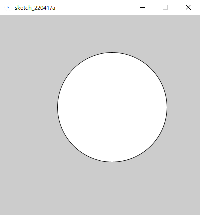
Code
xxxxxxxxxxsize( 400, 400 );
circle( 224, 184, 220 );https://processing.org/reference/circle_.html
図形の塗りつぶし色を設定する
fill()
構文
fill( R値, G値, B値 )
説明
図形の塗りつぶし色の変更を行う．
図形描画を行う命令の前に記述する必要がある．
色を変更する毎に
fill()を用いる必要がある．
引数
RGB値それぞれを0~255の間で決定する．
例

Code
xxxxxxxxxxfill( 204, 102, 0 );rect( 30, 20, 55, 55 );https://processing.org/reference/fill_.html
アルゴリズム
各命令の構文や動作を覚えていくとプログラムの実行手順を読み取れるようになっていく． このようなプログラムの実行手順をアルゴリズムという．
プログラミングは，アルゴリズムを考え記述することが重要となる．
演習２：サンプルプログラムの数値を変更する．
最初のサンプルプログラムの引数（数値）部分を書き換え，気に入った画像を出力してみる．
プログラムを実行し，気に入った画像が出力されるまで書き換えを繰り返す．
作例
Code
xxxxxxxxxxsize( 480, 270 );
background( 10, 10, 40 );
fill( 240, 220, 100 );circle( 70, 20, 200 ); // moon
fill( 30, 20, 105 );square( 200, 120, 500 ); // building演習３：サンプルプログラムの命令文を増やす．
演習２で作成したプログラムを元に，独自に命令文を追加して気に入った画像を出力する．
後の図形描画命令によってカンバスが上書きされていくことに注意．
座標値として，マイナスの値やスクリーンより大きな値も記述できる．
作例
moonの暗い部分の正円は，中心点がスクリーン外なのでY座標値がマイナスとなっていることに注目．

Code
xxxxxxxxxxsize( 480, 270 );background( 10, 10, 40 );fill( 240, 220, 100 );circle( 70, 20, 200 ); // moonfill( 160, 130, 80 );circle( 55, -5, 195 ); // moon( dark side )fill( 30, 20, 105 );square( 200, 120, 500 ); // buildingfill( 10, 4, 60 );square( 250, 150, 500 ); // building( dark side )
プログラムファイルの保存
作成したプログラムは資産になるので，有用なものはできるだけ保存すること．
ファイルの保存方法
新規にファイルを作成しない場合は「保存」を行い上書きをする．
Processingのデータ形式
ファイル形式（拡張子）: .pde
スケッチとも呼ばれる．
ファイルを保存すると，同名のフォルダが自動で作成され，その中にスケッチが保存される．
フォルダごと保管すること．
ファイル名に日本語は使用不可．

スケッチが格納された同名のフォルダをスケッチブックとも呼ぶ．
スケッチ(.pde)がフォルダ(スケッチブック)に格納されているファイル構造を壊さないよう注意． （スケッチブックだけを移動させる等しないこと）
演習４：プログラムを保存する．
演習３で作成したプログラムを保存する．
適当な名前を付ける．
つけた名前のpdeファイルが同名のフォルダに入っていることを確認する．
デ情ロゴに使う命令
デ情ロゴ作成に挑戦する．
楕円を描画する．
ellipse()
構文
ellipse( 中心X座標, 中心Y座標, 楕円の横幅, 楕円の高さ )

説明
楕円を描画する．
引数
楕円の中心点のX,Y座標値
楕円の横幅，高さ
例
Code
xxxxxxxxxxsize(400, 400);
ellipse( 160, 190, 300, 200 );https://processing.org/reference/ellipse_.html
図形の塗りつぶしを半透明にする．
fill()
構文
fill( R値, G値, B値, Alpha値 )
説明
RGB後に不透明（アルファ）値を追加することで，塗色を半透明にできる．
引数
Alpha値もそれぞれを0~255の間で決定する．
0: 完全透明 ↔ 255 : 不透明
例

Code
xxxxxxxxxxfill(204, 102, 0);rect(15, 10, 55, 55);
fill(0, 102, 200, 200); // hantoumei bluerect(30, 20, 55, 55);図形の塗りつぶしをグレースケールで設定する．
fill()
構文
fill( Gray値 )
fill( Gray値, Alpha値 )
説明
RGB値の代わりにGray値を記述することで，グレースケールの塗色を指定できる．
background()でも使える．
アルファ値を使うこともできる．
引数
Gray値も0~255の間で決定する．
0: Black ↔ 255 : White
例
Code
xxxxxxxxxxbackground( 10 ); // BG color
fill( 153 ); // Square colorsquare( 30, 30, 40 );線を消去する．
noStroke()
構文
noStroke()
説明
図形のアウトラインの線を描画しないようにする．
引数
なし
例

Code
xxxxxxxxxxnoStroke();square( 30, 20, 55 );https://processing.org/reference/noStroke_.html
演習５：楕円とマスクを使った描画
楕円を使って黒い三日月状の模様を作る．
大きさや形は自由
マスクのための楕円はグレースケール値：204 の塗色にするとよい．
難しいと感じたら作例を元にアレンジを加える．
作例
Code
xxxxxxxxxxsize( 400, 400 );
noStroke();
fill( 0 );ellipse( 200, 200, 300, 200 );
fill( 204 );ellipse( 215, 195, 280, 170 );演習６：デ情ロゴを作る．
デ情ロゴは楕円図形の組み合わせで作ることができる．（非公式）
下絵を読み込む
以下のプログラムを作り，ファイルを保存する．
Code
xxxxxxxxxxsize( 400, 400 );PImage img;img = loadImage("dinfo_logo.jpg");background(img);JPGファイル「dinfo_logo.jpg」をTeamsの「ホームページ」からダウンロードする．
ダウンロードしたJPGファイル「dinfo_logo.jpg」をpdeファイルのあるフォルダにコピーする．
プログラムを実行し，背景にJPGファイルが表示されることを確認する．
大きな楕円部分を作る．
半透明の楕円（緑の部分）を描画する．
数値を調整し，下絵の一番大きな黒い楕円に合わせる．
塗り色は
fill( 0, 255, 0, 160 );を指定しておく．適当なコメントも付ける．
Code
xxxxxxxxxxsize( 400, 400 );
PImage img;img = loadImage("dinfo_logo.jpg");background(img);
// daenfill( 0, 255, 0, 160 );ellipse( 200, 230, 260, 200 );小さな楕円マスク部分を作る．
中央上の小さな白抜き用の楕円を描画する．
数値を調整し，下絵の白い楕円に合わせる．
塗り色は
fill( 204, 160 );を指定しておく．適当なコメントも付ける．

Code
xxxxxxxxxxsize( 400, 400 );
PImage img;img = loadImage("dinfo_logo.jpg");background(img);
// daenfill( 0, 255, 0, 160 );ellipse( 200, 230, 260, 200 );
// daen maskfill( 204, 160 );ellipse( 198, 204, 90, 60 );残りの部分を自分で作ってみる．
下の方に作例プログラムを乗せるが，自分なりに作ってみる．
仕上げ
全体ができたら最後に以下の仕上げを行う．
下絵を非表示にする．
読み込み部分３行をコメントアウトする．
Code
xxxxxxxxxxsize( 400, 400 );
/*PImage img;img = loadImage("dinfo_logo.jpg");background(img);*/
// fingerfill( 0, 255, 0, 160 );ellipse( 300, 151, 104, 136 );
// finger maskfill( 204, 160 );ellipse( 390, 130, 200, 200 );
// daenfill( 0, 255, 0, 160 );ellipse( 200, 230, 260, 200 );
// mouth maskfill( 204, 160 );ellipse( 198, 204, 116, 186 );
// ue daen maskfill( 0, 255, 0, 160 );ellipse( 198, 196, 200, 134 );
// daen maskfill( 204, 160 );ellipse( 198, 204, 90, 60 );アウトラインの線を非表示にする．
noStroke()を追加する．
Code
xxxxxxxxxxsize( 400, 400 );
/*PImage img;img = loadImage("dinfo_logo.jpg");background(img);*/
noStroke();
// fingerfill( 0, 255, 0, 160 );ellipse( 300, 151, 104, 136 );
// finger maskfill( 204, 160 );ellipse( 390, 130, 200, 200 );
// daenfill( 0, 255, 0, 160 );ellipse( 200, 230, 260, 200 );
// mouth maskfill( 204, 160 );ellipse( 198, 204, 116, 186 );
// ue daen maskfill( 0, 255, 0, 160 );ellipse( 198, 196, 200, 134 );
// daen maskfill( 204, 160 );ellipse( 198, 204, 90, 60 );塗り・マスク色を整える．
半透明緑の塗色を不透明黒へ変更する．
白色のマスクを不透明グレー：204にする．
作例
Code
xxxxxxxxxxsize( 400, 400 );
/*PImage img;img = loadImage("dinfo_logo.jpg");background(img);*/
noStroke(); // fuchi nashi
// fingerfill( 0 );ellipse( 300, 151, 104, 136 );
// finger maskfill( 204 );ellipse( 390, 130, 200, 200 );
// daenfill( 0 );ellipse( 200, 230, 260, 200 );
// mouth maskfill( 204 );ellipse( 198, 204, 116, 186 );
// ue daen maskfill( 0 );ellipse( 198, 196, 200, 134 );
// daen maskfill( 204 );ellipse( 198, 204, 90, 60 );
第２回：図形描画
Processing再入門
自分のPCにおけるProcessingの起動
以下のリンクよりProcessingをダウンロードする．
Mac
「アプリケーション」から実行
Windows
Zipファイルを解凍し，フォルダ内の「processing.exe」 を実行
フォント（エディタ・コンソール）の変更（任意）
変更方法：ファイル > 設定 > エディタとコンソールのフォント
デフォルトのフォント Source Code Pro は以下のことができない．
プログラム及びコメントへの日本語（全角）入力
コンソールへの日本語（全角）出力
これらを有効にするには，日本語対応のフォントに変更してください． （MS ゴシック など）

プログラムを書く際に忘れがちなこと
半角英数と数字を用いる（コメントは除く）
文末にはセミコロン
;を入れる（忘れがち！）大文字と小文字の区別があるので注意
コメント
プログラムに影響を与えない影響を与えない文字列のこと
技術的には，コンパイル時に無視される部分
以下の２種類を使い分ける．
スラッシュ/を２つ使ったもの．
Code
xxxxxxxxxx// ← 以降のこの部分（１行）がコメントとしてプログラムから無視される`スラッシュとアスタリスク*を組み合わせたもの．
Code
xxxxxxxxxx/**挟まれている複数の行が，プログラムから無視される*/用途
プログラムを（人が）読みやすくするためのメモとして用いる．
プログラムの一部を残したまま一時的に実行しないようにする．
例1
命令のメモとして用いる．
Code
xxxxxxxxxx// ウィンドウを分割するline(0, 50, 100, 50); // yokoline(50, 0, 50, 100); // tate
// 円を描画するcircle(25, 25, 50);例2
プログラムの一部を無効にする．
分かりやすく一時的にグリッドを引き，提出版では非表示にする，という使い方ができる．

Code
xxxxxxxxxx/**
// ウィンドウを分割するline(0, 50, 100, 50); // yokoline(50, 0, 50, 100); // tate
*/
// 円を描画するcircle(25, 25, 50);補足
課題提出においてコメントは重要です．
プログラムの実行に影響を与えないと軽視しがちですが
コメントが含まれた状態のスケッチを提出してもらい，それも加味して評価を行います．
コメントを十分に含んだ分かりやすいスケッチが高く評価されます．
コメントがまったく含まれていない場合，作品がどれほど良質であっても評価が下方修正されます．
https://processing.org/reference/comment.html
コーディングに便利なキーボードの使い方（Win）
エディタウィンドウでプログラムを記述するにあたり，以下のキーの使い分けを行えると便利です．
コーディングの効率が上がります．
できるだけ意識して使ってみましょう
文字消去
１文字先を消去： Delete
１文字前を消去：BackSpace
カーソル移動
行の先頭：Home
行の末尾： End
前のワードの先頭： Ctrl ←
次の単語の末尾：Ctrl →
ページ送り：PgUp
ページ戻り：PgDn
選択
カーソル位置から前後に選択範囲を延ばす：Shift ← or →
カーソル位置から行単位で選択範囲を延ばす：Shift ↑ or ↓
カーソル位置から前後の１単語を選択：Shift Ctrl ← or →
連続した線による表現
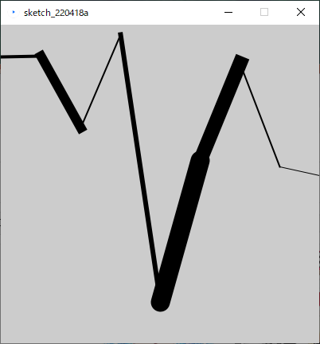
線を描画する
line()
構文
line( 始点X座標値, 始点Y座標値, 終点X座標値, 終点Y座標値 )
説明
２点間に１本の線を描画する．
引数
始点と終点のX,Y座標値を記述する．
例1
始点X,Y座標値:（30, 20）から終点X,Y座標値: ( 85, 75)に線を描画する．

Code
xxxxxxxxxxline(30, 20, 85, 75);例2
Code
xxxxxxxxxxline( 20, 20, 40, 40 );line( 40, 40, 50, 70 ); // 一つ目の線の終わりの点からスタートline( 50, 70, 80, 80 ); // 二つ目の線の終わりの点からスタートhttps://processing.org/reference/line_.html
線の太さを設定する
strokeWeight()
構文
strokeWeight( 太さピクセル数 )
説明
線の太さをピクセル単位で設定する．
引数
太さのピクセル数を記述する．
例

Code
xxxxxxxxxxsize(400, 400);
strokeWeight( 4 ); // lightline(80, 80, 320, 80);
strokeWeight( 16 ); // middleline(80, 160, 320, 160);
strokeWeight( 40 ); // boldline(80, 280, 320, 280);https://processing.org/reference/strokeWeight_.html
線の端の形状を変更する．
strokeCap()
線の終端の形状スタイルを変更する．
３種類のスタイルを，対応した引数で切り替えることができる．
ROUND（丸）
SQUARE（四角形）
PROJECT（突き出し）
構文
strokeCap( ROUND or SQUARE or PROJECT )
例1
線の端の形状を丸くする．

Code
xxxxxxxxxxstrokeWeight( 12 );strokeCap( ROUND );line( 20, 50, 50, 50 );line( 50, 50, 60, 80 );例2
終端を四角形にする．

Code
xxxxxxxxxxstrokeWeight( 12 );strokeCap( SQUARE );line( 20, 50, 50, 50 );line( 50, 50, 60, 80 );例3
終端を突き出し形状にする．

Code
xxxxxxxxxxstrokeWeight( 12 );strokeCap( PROJECT );line( 20, 50, 50, 50 );line( 50, 50, 60, 80 );https://processing.org/reference/strokeCap_.html
塗りつぶしを消去する
noFill()
構文
noFill()
説明
塗りつぶしを無効にする．
例

Code
xxxxxxxxxxsquare( 15, 10, 55 );
noFill();square( 30, 20, 55 );https://processing.org/reference/noFill_.html
演習１
line()を複数使用し，画面左端から始まり右端で終わる連続した線を自由に描画する．条件
スクリーンサイズ: 400, 400
線の数や長さは自由
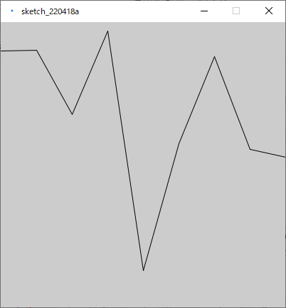
各線の太さや終端の形状を変化させ，より動きのある画面を作ってみる．
作成したプログラムは後の演習で再利用するので，分かりやすい場所に保存しておく．
作例のプログラム
Code
xxxxxxxxxxsize( 400, 400 );
strokeCap( PROJECT );strokeWeight( 4 );line( 0, 40, 50, 39 );
strokeWeight( 12 );line( 50, 39, 100, 129 );
strokeWeight( 2 );line( 100, 129, 150, 12 );
strokeWeight( 6 );line( 150, 12, 200, 348 );
strokeCap( ROUND );strokeWeight( 24 );line( 200, 348, 250, 170 );
strokeCap( PROJECT );strokeWeight( 18 );line( 250, 170, 300, 48 );
strokeWeight( 2 );line( 300, 48, 350, 178 );
strokeWeight( 1 );line( 350, 178, 400, 189 );色の書式HSBによる表現
線の色を変える
stroke()
構文
stroke( R値, G値, B値 )
説明
点，線，図形の枠線の色の変更を行う．
デフォルトはBlack(黒)色
図形描画を行う命令の前に記述する必要がある．
直前の行である必要はない．
もう一度
stroke()が行われるまで，ここで指定した色が線色として使われ続ける．色を変更したい場合，別の色を
stroke()を用いて再度指定する必要がある．
引数
RGB値それぞれを0~255の間で決定する．
例1
色を指定して線を描画する．
Code
xxxxxxxxxxstrokeWeight( 2 );stroke( 0, 0, 255 );line( 20, 20, 85, 75 );例2
色を指定して図形の（枠）線を描画する．
Code
xxxxxxxxxxstrokeWeight( 2 );stroke( 0, 0, 255 );square( 25, 25, 50 );例3
Code
xxxxxxxxxxstrokeWeight( 2 );
stroke(255,0,0); // Rline( 20, 20, 40, 40 );
stroke(0,255,0); // Gline( 40, 40, 50, 70 );
stroke(0,0,255); // Bline( 50, 70, 80, 80 );https://processing.org/reference/stroke_.html
カラーモード
colorMode()
色の書式を変える．
構文
いずれかを用いる．
RGBモードを指定
colorMode( RGB, 最大値 )
RGBモードを指定（各チャンネルの最大値を指定）
colorMode( RGB, Rの最大値, Gの最大値, Bの最大値 )
RGBモードを指定（各チャンネルとアルファの最大値を指定）
colorMode( RGB, Rの最大値, Gの最大値, Bの最大値, アルファの最大値 )
HSBモードを指定
colorMode( HSB, 最大値 )
HSBモードを指定（各チャンネルの最大値を指定）
colorMode( HSB, 色相の最大値, 彩度の最大値, 輝度の最大値 )
HSBモードを指定（各チャンネルとアルファの最大値を指定）
colorMode( HSB, 色相の最大値, 彩度の最大値, 輝度の最大値, アルファの最大値 )
説明
fill(),stroke(),background()における引数の解釈を変更する．上記の３つの命令はデフォルトでは引数をRGB値0~255の間で指定する．
例えば
colorMode( RGB, 1.0 )を記述すると，以降の色の指定はRGB値0.0~1.0の間で指定する．また，
colorMode( HSB, 360, 100, 100 )を記述すると，以降の色の指定はHSB値0.0~1.0の間で指定する．HSBは色相（Hue），彩度（Saturation），明度（Brightness）
難しいと感じたら，通常はこの命令は使わず，HSBを使いたい時だけ以下をつかうとよい．
colorMode( HSB, 360, 100, 100 );基本的にはプログラム冒頭で一度だけ行えばよい．
引数
RGB or HSB （カラーモデル）
各チャンネルの最大値，アルファ（透明度）の最大値
例1
RGBモード最大値1.0で指定した例
Code
xxxxxxxxxxcolorMode( RGB, 1.0 );
fill( 0.1, 0.5, 0.7 );square( 25, 25, 50 );例2
HSBモードで指定した例
Code
xxxxxxxxxxcolorMode( HSB, 360, 100, 100 );
fill( 20, 90, 100 );square( 25, 25, 50 );例3
HSBモードでアルファを指定した例
Code
xxxxxxxxxxcolorMode( HSB, 360, 100, 100, 100 );
fill( 20, 90, 100 );square( 25, 25, 50 );
fill( 220, 90, 100, 50 );square( 35, 35, 50 );https://processing.org/reference/colorMode_.html
演習２
前回の演習で作成したプログラムに色を付け，線に色相のグラデーションをつける．
条件
colorMode()を用いてHSBモードで色を設定すること．色相の違いのみでグラデーションをつけること．
作例のプログラム
Code
xxxxxxxxxxsize( 400, 400 );
colorMode( HSB, 360, 100, 100 );
strokeCap( PROJECT );strokeWeight( 4 );stroke( 200, 90, 80 );line( 0, 40, 50, 39 );
strokeWeight( 12 );stroke( 210, 90, 80 );line( 50, 39, 100, 129 );
strokeWeight( 2 );stroke( 220, 90, 80 );line( 100, 129, 150, 12 );
strokeWeight( 6 );stroke( 230, 90, 80 );line( 150, 12, 200, 348 );
strokeCap( ROUND );strokeWeight( 24 );stroke( 240, 90, 80 );line( 200, 348, 250, 170 );
strokeCap( PROJECT );strokeWeight( 18 );stroke( 250, 90, 80 );line( 250, 170, 300, 48 );
strokeWeight( 2 );stroke( 260, 90, 80 );line( 300, 48, 350, 178 );
strokeWeight( 1 );stroke( 270, 90, 80 );line( 350, 178, 400, 189 );ブレンドモードによる表現
ブレンドモードを設定する．
blendMode()
構文
blendMode( モード )
説明
図形描画時に，下に描かれた内容に対する効果を変更する．
引数
以下のモードからいずれかを記述する．
BLEND：通常（デフォルト）ADD：加算SUBTRACT：減算DARKEST：比較（暗）LIGHTEST：比較（明）DIFFERENCE：差の絶対値EXCLUSION：除外（マイルド）MULTIPLY：乗算SCREEN：スクリーンREPLACE：置換（透明度無効化）
Photoshop等の描画モードと大まかに対応している．
例1：加算
図形を重ねるほど白に近づく． 白の上に重ねると何も変化が起きない．
Code
xxxxxxxxxxsize( 200, 200 );noStroke();
blendMode( ADD );
background( 0 );
fill( 255, 50, 50 );circle( 100, 85, 100 );
fill( 50, 255, 50 );circle( 80, 120, 100 );
fill( 50, 50, 255 );circle( 120, 120, 100 );例2：減算
図形を重ねるほど黒に近づく． 白の上に重ねると色が補色になるので使いづらい．
Code
xxxxxxxxxxsize( 200, 200 );noStroke();
blendMode( SUBTRACT );
background( 255 );
fill( 255, 50, 50 );circle( 100, 85, 100 );
fill( 50, 255, 50 );circle( 80, 120, 100 );
fill( 50, 50, 255 );circle( 120, 120, 100 );例3：比較（暗）
図形を重ねるとRGB各値の小さい値が選ばれる． 黒の上に重ねると何も変化が起きない．
Code
xxxxxxxxxxsize( 200, 200 );noStroke();
blendMode( DARKEST );
background( 255 );
fill( 255, 50, 50 );circle( 100, 85, 100 );
fill( 50, 255, 50 );circle( 80, 120, 100 );
fill( 50, 50, 255 );circle( 120, 120, 100 );例4：比較（明）
図形を重ねるとRGB各値の大きい値が選ばれる． 白の上に重ねると何も変化が起きない．
Code
xxxxxxxxxxsize( 200, 200 );noStroke();
blendMode( LIGHTEST );
background( 0 );
fill( 255, 50, 50 );circle( 100, 85, 100 );
fill( 50, 255, 50 );circle( 80, 120, 100 );
fill( 50, 50, 255 );circle( 120, 120, 100 );例5：差の絶対値
図形を重ねると，下の色とのRGB各値の差が選ばれる． 同色の図形を重ね合わせ，重なった部分を抜く表現に有用．
Code
xxxxxxxxxxsize( 200, 200 );noStroke();
blendMode( DIFFERENCE );
background( 0 );
fill( 255, 50, 50 );circle( 100, 85, 100 );
fill( 255, 50, 50 );circle( 80, 120, 100 );
fill( 255, 50, 50 );circle( 120, 120, 100 );例6：除外
差分と同じだが，RGBの差をマイルドにしたもの． 重なった部分が完全には抜かれない．
Code
xxxxxxxxxxsize( 200, 200 );noStroke();
blendMode( EXCLUSION );
background( 0 );
fill( 255, 50, 50 );circle( 100, 85, 100 );
fill( 255, 50, 50 );circle( 80, 120, 100 );
fill( 255, 50, 50 );circle( 120, 120, 100 );例7：乗算
図形を重ねるほど黒に近づく． 減算と近いが，白の上に重ねても色が補色にならないのでこちらが使いやすい．
Code
xxxxxxxxxxsize( 200, 200 );noStroke();
blendMode( MULTIPLY );
background( 255 );
fill( 255, 0, 0 );circle( 100, 85, 100 );
fill( 0, 255, 0 );circle( 80, 120, 100 );
fill( 0, 0, 255 );circle( 120, 120, 100 );例8：スクリーン
図形を重ねるほど白に近づく． 加算と近いが，若干結果が異なるので好みで使い分ける．
Code
xxxxxxxxxxsize( 200, 200 );noStroke();
blendMode( SCREEN );
background( 0 );
fill( 255, 50, 50 );circle( 100, 85, 100 );
fill( 50, 255, 50 );circle( 80, 120, 100 );
fill( 50, 50, 255 );circle( 120, 120, 100 );演習３
七宝（しっぽう）模様を作る．
条件
スクリーンサイズ：300 × 300
９つの正円を描画する．
ステップ1の上に16個の正円を描画する．
ブレンドモード（差の絶対値）命令文を記述する．

以下の色指定を記述する．
background( 255, 0, 0 );fill( 0, 255, 255 );
以下，完成プログラム
Code
xxxxxxxxxxsize( 300, 300 );blendMode( DIFFERENCE );background( 255, 0, 0 );fill( 0, 255, 255 );circle( 50, 50, 100 );circle( 150, 50, 100 );circle( 250, 50, 100 );circle( 50, 150, 100 );circle( 150, 150, 100 );circle( 250, 150, 100 );circle( 50, 250, 100 );circle( 150, 250, 100 );circle( 250, 250, 100 );circle( 0, 0, 100 );circle( 100, 0, 100 );circle( 200, 0, 100 );circle( 300, 0, 100 );circle( 0, 100, 100 );circle( 100, 100, 100 );circle( 200, 100, 100 );circle( 300, 100, 100 );circle( 0, 200, 100 );circle( 100, 200, 100 );circle( 200, 200, 100 );circle( 300, 200, 100 );circle( 0, 300, 100 );circle( 100, 300, 100 );circle( 200, 300, 100 );circle( 300, 300, 100 );
円弧による表現
度（度数法）をラジアン（弧度法）に変換する．
radians()
構文
radians( 角度 )
説明
角度（°）をラジアン（rad）単位に変換する．
簡単な数式で書くと以下のようになる
角度とラジアンの対応表
度（°） ラジアン（rad） 0 0 45 0.7853… 90 1.5708… 180 3.1415…（π） 270 4.7123… 360 6.2831…（2π） 角度を指定する必要がある場合に便利な数値変換命令．
円弧を描画したり，図形の回転を行う際に．
我々が日常的に親しみのある単位は度数法「°」表記であるが， Processingではをラジアン（弧度法）単位へ変換する必要がある．
Processing で角度を用いるにあたり，おおくは角度をラジアン単位で指定する必要がある．
このような数値の変換を行う命令は，引数として数値に置き換えて命令へ組み込むことができる． 下の例では
print()に組み込み，変換後の数値をコンソールに表示している．
例1
45°をラジアンへ変換した値をコンソールに表示する．
Code
xxxxxxxxxxprint( radians( 45 ) );例2
180°をラジアンへ変換した値をコンソールに表示する．
Code
xxxxxxxxxxprint( radians( 180 ) );
詳しい使用例は次の「円弧の描画」で紹介する．
https://processing.org/reference/radians_.html
円弧を描画する
arc()
構文
arc( 中心のX座標, 中心のY座標, 横の直径, 縦の直径, 弧の始まりのラジアン, 弧の終わりのラジアン, モード )
角度をラジアンへ変換する命令を含めると以下のようになる．
arc( 中心のX座標, 中心のY座標, 横の直径, 縦の直径, radians( 弧の始まりの角度 ), radians( 弧の終わりの角度 ), モード );
説明
引数
弧の元になる楕円の中心のX,Y座標
弧の元になる楕円の横と縦の直径
弧の始まりのラジアン
弧の終わりのラジアン
弧のモード
OPEN：オープンな弧CHORD：閉じた弧PIE：パイ状
例1
45°から始まり，270°で終わるオープンな弧
Code
xxxxxxxxxxarc( 50, 50, 80, 80, radians( 45 ), radians( 270 ), OPEN );例2
45°から始まり，270°で終わる閉じた弧
Code
xxxxxxxxxxarc( 50, 50, 80, 80, radians( 45 ), radians( 270 ), CHORD );例3
45°から始まり，270°で終わるパイ状の弧
Code
xxxxxxxxxxarc( 50, 50, 80, 80, radians( 45 ), radians( 270 ), PIE );例4
円弧を用いた沈む夕日のような表現

Code
xxxxxxxxxxsize( 400, 200 );arc( 50, 100, 80, 80, radians( 120 ), radians( 420 ), CHORD );arc( 150, 100, 80, 80, radians( 135 ), radians( 405 ), CHORD );arc( 250, 100, 80, 80, radians( 175 ), radians( 365 ), CHORD );arc( 350, 100, 80, 80, radians( 190 ), radians( 350 ), CHORD );https://processing.org/reference/arc_.html
演習４
扇柄を作る．
条件
スクリーンサイズ：200×200
一番大きな弧を
PIE指定で描画する．大きさを変えた弧を３つ描画する．
線の太さや色を好みで設定する．
余裕があれば下部分を削る表現に挑戦する．
以下，完成プログラム
Code
xxxxxxxxxxsize( 200, 200 );fill( 0, 204, 255 );stroke( 255 );strokeWeight( 4 );arc( 100, 150, 200, 200, radians( 225 ), radians( 315 ), PIE );arc( 100, 150, 160, 160, radians( 225 ), radians( 315 ), PIE );arc( 100, 150, 120, 120, radians( 225 ), radians( 315 ), PIE );arc( 100, 150, 80, 80, radians( 225 ), radians( 315 ), PIE );// shita wo kezurunoStroke();fill( 204 );arc( 100, 156, 84, 88, radians( 225 ), radians( 315 ), PIE );
座標変換による表現
図形描画を用いてレイアウトを行うにあたり，図形を平行移動，回転，または拡大縮小させると，より表現の幅が広がる． このような操作をトランスフォーム( Transform )と呼ぶ．
Processing においてトランスフォームを実現するには座標変換を用いる．
座標変換を理解する前に，Processingにおける座標系について学習する．
座標系( Coordinate system )
空間内の特定の位置を点で示す決まりごとのこと．
具体的には以下の要素を内包する
原点
単位
各方向軸の向き( X軸, Y軸, Z軸 )
Processing の座標系
Processing のようなスクリーン（二次平面）上で図形の操作を行うアプリケーションにおいては，2次元の座標系が導入されている．
描画を行うための基準．
X軸とY軸が互いに直交し，交わるところに原点がある．
プログラム開始時点における座標系を，シンプルな矩形を描画するプログラムと共に以下に示す．
Code
xxxxxxxxxxrect( 20, 20, 40, 40 );
座標変換とは
この座標系（X軸,Y軸,原点）を並行移動，回転，拡大縮小することを座標変換という． 図形が変換されるのではないことに注意
平行移動

回転

拡大縮小
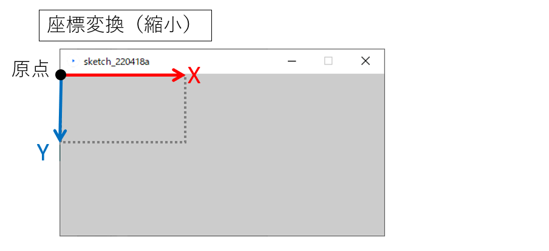
座標変換を実行した後に図形描画を行うことにより，ウィンドウ上では図形が平行移動，回転または拡大縮小したように描画される．
平行移動
translate()
構文
translate( X移動量, Y移動量 )
説明
座標系をX,Y軸方向へ平行移動させる．
同様の操作を
translate()を使わずに行えるが，こちらを使った方が簡単な場合が多い．
平行移動を行わず描画を行った場合

平行移動を行った後に描画を行った場合


引数
移動させるX,Y値を記述する．
例
シンプルな家の模様を複数描画する． 同じ構造の図形を繰り返し描画する際，よりシンプルにできる．

Code
xxxxxxxxxxsize(400, 100);background(255);
// 一つ目triangle(15, 0, 0, 15, 30, 15);rect(0, 15, 30, 30);rect(12, 30, 10, 15);
translate(40, 0); // X軸方向に40移動
// 二つ目triangle(15, 0, 0, 15, 30, 15);rect(0, 15, 30, 30);rect(12, 30, 10, 15);
translate(40, 0); // X軸方向にさらに40移動
// 三つ目triangle(15, 0, 0, 15, 30, 15);rect(0, 15, 30, 30);rect(12, 30, 10, 15);https://processing.org/reference/translate_.html
回転
rotate()
構文
rotate( ラジアン )
角度（°）を使いたい場合はこう書くとよい．
rotate( radians( 角度 ) )
説明
座標を原点を中心に時計回りに回転させる．
座標系の回転のイメージ
描画
引数
回転するラジアンを記述する． マイナス「-」の値を指定すると反時計回りに回転する．
例1
原点を中心に15°回転させ，矩形描画を行う．

Code
xxxxxxxxxxsize( 400, 400 );background( 255 );
fill( 0, 0, 255 );noStroke();
// 以下，回転と矩形描画の繰り返し．rotate( radians(5) );rect( 300, 0, 40, 20 );
rotate( radians(15) );rect( 300, 0, 40, 20 );
rotate( radians(15) );rect( 300, 0, 40, 20 );
rotate( radians(15) );rect( 300, 0, 40, 20 );
rotate( radians(15) );rect( 300, 0, 40, 20 );
rotate( radians(15) );rect( 300, 0, 40, 20 );
rotate( radians(15) );rect( 300, 0, 40, 20 );例2
スクリーン中央を中心に回転させたい場合

スクリーン中心へ平行移動を行う．
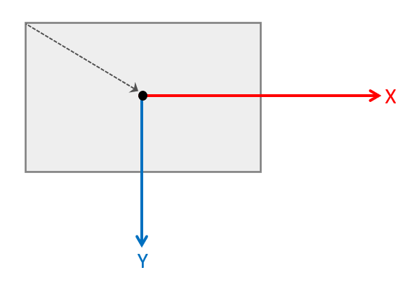
座標を回転させる．

図形の描画を行う． 手順2に戻る．
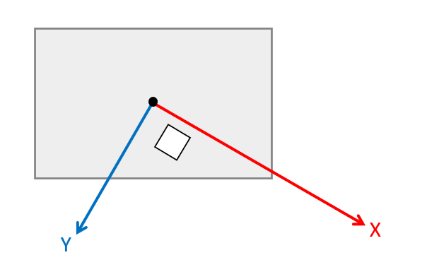
Code
xxxxxxxxxxsize( 400, 400 );background( 255 );
fill( 0, 0, 255 );noStroke();
// 原点をスクリーン中心へ移動translate( width/2, height/2 );
// 以下，回転と矩形描画の繰り返し．
rect( 100, 0, 40, 20 );
rotate( radians(45) );rect( 100, 0, 40, 20 );
rotate( radians(45) );rect( 100, 0, 40, 20 );
rotate( radians(45) );rect( 100, 0, 40, 20 );
rotate( radians(45) );rect( 100, 0, 40, 20 );
rotate( radians(45) );rect( 100, 0, 40, 20 );
rotate( radians(45) );rect( 100, 0, 40, 20 );
rotate( radians(45) );rect( 100, 0, 40, 20 );例3
時計の針のような描画

Code
xxxxxxxxxxsize( 300, 300 );
translate( width/2, height/2 ); // 原点をスクリーン中心に移動.
strokeWeight(1);line( 0, 0, 100, 0 ); rotate( radians(30) ); // 30度回転.
strokeWeight(4);line( 0, 0, 100, 0 ); rotate( radians(50) ); // 50度回転.
strokeWeight(6);line( 0, 0, 100, 0 ); rotate( radians(70) ); // 80度回転.
strokeWeight(8);line( 0, 0, 100, 0 ); rotate( radians(80) ); // 90度回転.
strokeWeight(10);line( 0, 0, 100, 0 );https://processing.org/reference/rotate_.html
拡大縮小
scale()
構文
scale( 拡大率 )
scale( X拡大率, Y拡大率 )
説明
原点を基点に空間の大きさをスケーリングする．
拡大すると原点から外側へ向けて，見た目の座標や大きさが引き延ばされる．
縮小すると原点へ向けて，見た目の座標や大きさが縮められる．
拡大縮小を行わず描画を行った場合
拡大縮小を行った後に描画を行った場合
図形の大きさだけでなく，２つの図形の間隔も大きくなる．
円が原点から遠ざかる方向へ移動している．

引数
拡大率は
1.0が等倍．例えば
2.0を渡すと2倍に拡大される．半分のスケールにしたい場合は
0.5を記述する．
例
見た目の大きさはかわっているが，rect()に渡している値は同じであることに注目

Code
xxxxxxxxxxsize(200,200);background(255);
stroke(128);rect(20, 20, 40, 40); // 小さい矩形
scale(2.0); // 2倍に拡大
stroke(0);rect(20, 20, 40, 40); // 大きな矩形https://processing.org/reference/scale_.html
演習５
シンプルな花の模様を作成する．
条件
スクリーンサイズ： 400×400
座標系をスクリーン中心へ平行移動し，花弁用の楕円を１つ描画する． 楕円は少しX軸方向（右方向）へずらしておく．（これには平行移動は使わないこと）
座標系を72°回転させて同じ楕円を１つ描画する．
ステップ２を繰り返し，計５個の楕円を描画する．
中心に楕円を一つ描画する．
回転（
-18°）命令文を１つ目の楕円描画直前に挿入する．線の太さや各種色を設定する．
以下，完成プログラム
Code
xxxxxxxxxxsize( 400, 400 );stroke( 204 );strokeWeight( 4 );translate( 200, 200 );rotate( radians( -18 ) );ellipse( 95, 0, 160, 50 );rotate( radians( 72 ) );ellipse( 95, 0, 160, 50 );rotate( radians( 72 ) );ellipse( 95, 0, 160, 50 );rotate( radians( 72 ) );ellipse( 95, 0, 160, 50 );rotate( radians( 72 ) );ellipse( 95, 0, 160, 50 );ellipse( 0, 0, 40, 40 );
座標変換の組み合わせ
復習を兼ねて座標変換の組み合わせを解説する．
平行移動と回転の組み合わせ
平行移動と回転を組み合わせると難解になる．
スケッチブックや方眼紙に座標系の変換をメモするなど，工夫してみましょう．
平行移動+回転
1. 平行移動
2. 回転
3. 図形描画

回転+平行移動
あまり推奨しない
初めに回転を行うとその後の平行移動は感覚的に理解し難い．
できるだけ先の「平行移動→回転」を用いることをすすめる．
1. 回転
回転後の平行移動の考え方
回転後の平行移動は特に注意
回転後のX,Y軸を元に移動する．

2. 平行移動

多角形による表現
多角形を描画する
beginShape()
構文
beginShape( 種類 )
説明
多角形描画は複数の文を記述する必要がある．
はじめに
beginShape();と記述．引数として後述の図形の種類を記述する．
必要な頂点の数だけ
vertex( X座標, Y座標 );を記述する．最後に
endShape();を記述し，多角形描画を終了する． ※なお、endShape(CLOSE);と記述することで閉じた形状を描画できる．
Code
xxxxxxxxxxbeginShape( 種類 ); // 形状の開始宣言
// 頂点座標（頂点の数だけ複数記述する必要がある）vertex( 頂点1のX値, 頂点1のY値 );vertex( 頂点2のX値, 頂点2のY値 );vertex( 頂点3のX値, 頂点3のY値 );vertex( 頂点4のX値, 頂点4のY値 );vertex( 頂点5のX値, 頂点5のY値 );vertex( 頂点6のX値, 頂点6のY値 );vertex( 頂点7のX値, 頂点7のY値 );vertex( 頂点8のX値, 頂点8のY値 );
endShape(CLOSE); // 形状の終了宣言引数
図形の種類
通常（引数無し）
POINTSLINESTRIANGLESTRIANGLE_STRIPTRIANGLE_FANQUADSQUAD_STRIP
例1
矢印状の図形 複雑な形状は事前に方眼紙等に下書きをし，下図のような計画を立てるとよい．


Code
xxxxxxxxxxbeginShape();vertex( 0, 20 ); // Avertex( 60, 20 ); // Bvertex( 60, 0 ); // Cvertex( 100, 30 ); // Dvertex( 60, 60 ); // Evertex( 60, 40 ); // Fvertex( 0, 40 ); // GendShape(CLOSE);例2
トライアングルストリップTRIANGLE_STRIPの例
ストリップ（strip ）は「細長い一片」の意味
Code
xxxxxxxxxxsize( 200, 200 );
beginShape( TRIANGLE_STRIP );vertex( 20, 20);vertex( 60, 180 );vertex( 100, 20);vertex( 140, 180);vertex( 180, 20);endShape( CLOSE );例3
トライアングルファンTRIANGLE_FANの例
最初の点を中心に連続した三角形を描画する．
Code
xxxxxxxxxxsize( 200, 200 );
translate( 100, 50 );
beginShape( TRIANGLE_FAN );vertex( 0, 0 );vertex( 80, 35 );vertex( 55, 70 );vertex( 20, 90 );vertex( -20, 90 );vertex( -55, 70 );vertex( -80, 35 );endShape( CLOSE );例4
クアッドストリップQUAD_STRIPの例

Code
xxxxxxxxxxsize( 200, 200 );
beginShape( QUAD_STRIP );vertex( 20, 20);vertex( 50, 180 );vertex( 80, 20);vertex( 110, 180);vertex( 140, 20);vertex( 170, 180);endShape( CLOSE );https://processing.org/reference/beginShape_.html https://processing.org/reference/vertex_.html https://processing.org/reference/endShape_.html
線のつなぎ目の形状を変更する．
strokeJoin()
構文
strokeJoin( 種類 )
説明
引数に応じて線のつなぎ目の形状を変更する．
引数
種類
MITER（デフォルト）BEVELROUND
例1
MITER（デフォルト）
Code
xxxxxxxxxxsize( 200, 200 );noFill();strokeWeight( 20 );
strokeJoin( MITER );
beginShape();vertex( 70, 40 );vertex( 130, 100 );vertex( 70, 150 );endShape();例2
BEVEL
Code
xxxxxxxxxxsize( 200, 200 );noFill();strokeWeight( 20 );
strokeJoin( BEVEL );
beginShape();vertex( 70, 40 );vertex( 130, 100 );vertex( 70, 150 );endShape();例3
ROUND
Code
xxxxxxxxxxsize( 200, 200 );noFill();strokeWeight( 20 );
strokeJoin( ROUND );
beginShape();vertex( 70, 40 );vertex( 130, 100 );vertex( 70, 150 );endShape();演習６
麻の葉模様（の一部）を作成する．
麻の葉模様は三分割された正方形の組み合わせでできている．
条件
スクリーンサイズ：300×300
座標系をスクリーン中心へ平行移動し，トライアングルストリップを１つ描画する． ２つ目の図のように５つの頂点を設定する．
座標系を60°ずつ回転させてトライアングルストリップを６つ描画する．

線の太さや各種色を設定する．
線のつなぎ目を
BEVELにする．以下，完成プログラム
Code
xxxxxxxxxxsize( 300, 300 );
translate( 150, 150 );
fill( 235,184,184 );stroke( 255 );strokeWeight( 2 );strokeJoin( BEVEL );
beginShape( TRIANGLE_STRIP );// ippen 80vertex( 0, 0 );vertex( 69, 40 );vertex( 23, 40 );vertex( 0, 80 );vertex( 0, 0 );endShape();
rotate( radians( 60 ) );
beginShape( TRIANGLE_STRIP );// ippen 80vertex( 0, 0 );vertex( 69, 40 );vertex( 23, 40 );vertex( 0, 80 );vertex( 0, 0 );endShape();
rotate( radians( 60 ) );
beginShape( TRIANGLE_STRIP );// ippen 80vertex( 0, 0 );vertex( 69, 40 );vertex( 23, 40 );vertex( 0, 80 );vertex( 0, 0 );endShape();
rotate( radians( 60 ) );
beginShape( TRIANGLE_STRIP );// ippen 80vertex( 0, 0 );vertex( 69, 40 );vertex( 23, 40 );vertex( 0, 80 );vertex( 0, 0 );endShape();
rotate( radians( 60 ) );
beginShape( TRIANGLE_STRIP );// ippen 80vertex( 0, 0 );vertex( 69, 40 );vertex( 23, 40 );vertex( 0, 80 );vertex( 0, 0 );endShape();
rotate( radians( 60 ) );
beginShape( TRIANGLE_STRIP );// ippen 80vertex( 0, 0 );vertex( 69, 40 );vertex( 23, 40 );vertex( 0, 80 );vertex( 0, 0 );endShape();座標系の保存と復帰
座標変換の命令を使用すると，変化した座標系はそのまま残り続ける．
目的によってはこのことが不都合となる場合がある．
Processingにはある時点の座標系を保存したり，保存した時点の座標系に戻したりする機能が存在する．
座標系の詳細は数学における行列が深くかかわっているが，本授業では掘り下げない．
以下の二つの命令を任意の場所に記述し，使うことができれば問題ない．
構文
座標系を保存する．
pushMatrix()
座標系を保存した時点に戻す．
popMatrix()
説明
プログラムの処理の順を追って説明する．
pushMatrix()で座標系を保存しておく．座標変換と各種描画の命令
translate(),rotate(),scale()図形描画
popMatrix()で初期の座標系に戻す．
例
座標変換を行った後に白の矩形を描画し， 座標系を初期に戻した後に黒の矩形を描画する．
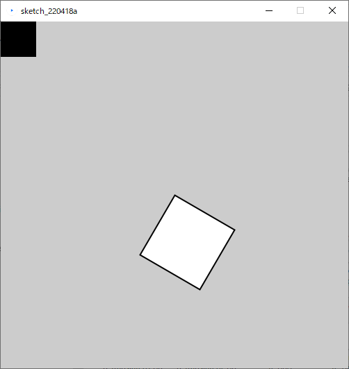
Code
xxxxxxxxxxsize(500, 500);
pushMatrix(); // 座標系の記憶
translate(250, 250); // 移動rotate( radians(30) ); // 回転scale(2.0); // 拡大
rect(0, 0, 50, 50); // 白の矩形
popMatrix(); // 座標系を元に戻す
fill(0);rect(0, 0, 50, 50); // 黒の矩形座標系保存のメカニズム
pushMatrix()とpopMatrix()は，座標系データをQueue形式で出し入れしている．
Queue（キュー）とは
先に入れたデータを先に取り出す．FIFO( First In First Out )
追加(push)したデータをあたらしい順に取り出す(pop)仕組み．
したがって，pushMatrix()とpopMatrix()を入れ子構造で使用すると，新しく保存した座標系から古いものへ， という順に取り出される．

具体的なプログラム記述
Queueの仕組みがわかると理解しやすい．
例
角度と位置を変化させながら楕円を４つ描画する．
Code
xxxxxxxxxxsize( 400, 400 );
colorMode( RGB, 100, 100, 100 );
background( 60, 60, 80 );
// 色stroke( 80, 62, 70 );fill( 90, 90, 49 );
// 線の太さstrokeWeight( 6 );
translate( 100, 60 );
pushMatrix(); // 座標系保存rotate( radians(20) );ellipse( 0, 0, 100, 20 );popMatrix(); // 座標系を戻す
translate( 40, 80 );
pushMatrix(); // 座標系保存rotate( radians(60) );ellipse( 0, 0, 100, 20 );popMatrix(); // 座標系を戻す
translate( 40, 110 );
pushMatrix(); // 座標系保存rotate( radians(40) );ellipse( 0, 0, 100, 20 );popMatrix(); // 座標系を戻す
translate( 80, 80 );
pushMatrix(); // 座標系保存rotate( radians(4) );ellipse( 0, 0, 100, 20 );popMatrix(); // 座標系を戻すhttps://processing.org/reference/pushMatrix_.html https://processing.org/reference/popMatrix_.html
演習７
演習６の麻の葉模様を横に一つ追加し，繋げる．
演習６の完成プログラムを開く．
プログラムの最後に平行移動命令文
translate( 200, 0 );を記述する．ステップ2の後ろに，模様描画部分をコピー＆ペーストする． しかし，うまく描画されないことを確認する．
pushMatrix()とpopMatrix()を適切な場所に記述する．ステップ2で記述した部分を
translate( 200, 0 );の200の値を調整し，模様同士を隣接させる．以下，完成プログラム
Code
xxxxxxxxxxsize( 450, 300 );
translate( 150, 150 );
pushMatrix();
fill( 235,184,184 );stroke( 255 );strokeWeight( 2 );strokeJoin( BEVEL );
beginShape( TRIANGLE_STRIP );// ippen 80vertex( 0, 0 );vertex( 69, 40 );vertex( 23, 40 );vertex( 0, 80 );vertex( 0, 0 );endShape();
rotate( radians( 60 ) );
beginShape( TRIANGLE_STRIP );// ippen 80vertex( 0, 0 );vertex( 69, 40 );vertex( 23, 40 );vertex( 0, 80 );vertex( 0, 0 );endShape();
rotate( radians( 60 ) );
beginShape( TRIANGLE_STRIP );// ippen 80vertex( 0, 0 );vertex( 69, 40 );vertex( 23, 40 );vertex( 0, 80 );vertex( 0, 0 );endShape();
rotate( radians( 60 ) );
beginShape( TRIANGLE_STRIP );// ippen 80vertex( 0, 0 );vertex( 69, 40 );vertex( 23, 40 );vertex( 0, 80 );vertex( 0, 0 );endShape();
rotate( radians( 60 ) );
beginShape( TRIANGLE_STRIP );// ippen 80vertex( 0, 0 );vertex( 69, 40 );vertex( 23, 40 );vertex( 0, 80 );vertex( 0, 0 );endShape();
rotate( radians( 60 ) );
beginShape( TRIANGLE_STRIP );// ippen 80vertex( 0, 0 );vertex( 69, 40 );vertex( 23, 40 );vertex( 0, 80 );vertex( 0, 0 );endShape();
popMatrix();
translate( 140, 0 );
fill( 235,184,184 );stroke( 255 );strokeWeight( 2 );strokeJoin( BEVEL );
beginShape( TRIANGLE_STRIP );// ippen 80vertex( 0, 0 );vertex( 69, 40 );vertex( 23, 40 );vertex( 0, 80 );vertex( 0, 0 );endShape();
rotate( radians( 60 ) );
beginShape( TRIANGLE_STRIP );// ippen 80vertex( 0, 0 );vertex( 69, 40 );vertex( 23, 40 );vertex( 0, 80 );vertex( 0, 0 );endShape();
rotate( radians( 60 ) );
beginShape( TRIANGLE_STRIP );// ippen 80vertex( 0, 0 );vertex( 69, 40 );vertex( 23, 40 );vertex( 0, 80 );vertex( 0, 0 );endShape();
rotate( radians( 60 ) );
beginShape( TRIANGLE_STRIP );// ippen 80vertex( 0, 0 );vertex( 69, 40 );vertex( 23, 40 );vertex( 0, 80 );vertex( 0, 0 );endShape();
rotate( radians( 60 ) );
beginShape( TRIANGLE_STRIP );// ippen 80vertex( 0, 0 );vertex( 69, 40 );vertex( 23, 40 );vertex( 0, 80 );vertex( 0, 0 );endShape();
rotate( radians( 60 ) );
beginShape( TRIANGLE_STRIP );// ippen 80vertex( 0, 0 );vertex( 69, 40 );vertex( 23, 40 );vertex( 0, 80 );vertex( 0, 0 );endShape();曲線による表現
曲線を描画する
curve()
構文
curve( 制御点1のX値, 制御点1のY値, 描画点1のX値, 描画点1のY値, 描画点2のX値, 描画点2のY値, 制御点2のX値, 制御点2のY値 )
説明
4点を結ぶ曲線の中間2点間が描画される．（スプライン曲線）
spline たわみ
4点で囲まれた領域を丸く膨らませた曲線が生成される
特定のある囲まれた領域を丸く膨らませた図形を生成したい際に有効．
引数
描画点2点間に曲線が描画される．
制御点の座標によって形状が変化する．
例
4点とを曲線で囲まれた領域（上の図のプログラム）
Code
xxxxxxxxxxsize( 600, 600 );background(255);
noFill();
// 濃い黒の曲線stroke(0);strokeWeight(4);curve( 100, 100, 450, 200, 500, 350, 60, 500 );
// 薄い曲線stroke(200);strokeWeight(4);curve( 450, 200, 500, 350, 60, 500, 100, 100 );curve( 500, 350, 60, 500, 100, 100, 450, 200 );curve( 60, 500, 100, 100, 450, 200, 500, 350 );
// 4つの点を赤く描画．stroke(255,0,0);strokeWeight(12);point(100, 100);point(450, 200);point(500, 350);point(60, 500);https://processing.org/reference/curve_.html
ベジェ曲線を描画する
bezier()
構文
curve()の場合と描画点，制御点の記述順が異なることに注意．
bezier( 描画点1のX値, 描画点1のY値, 制御点1のX座標, 制御点1のY座標, 制御点2のX値, 制御点2のY値, 描画点2のX座標, 描画点2のY座標)

説明
描画点（アンカーポイント）2点と制御点（スムーズポイント）2点から描画される曲線．
実際に描画されるのは描画点2点間のみ
制御点1から描画点1へ引いた直線が曲線に接する． 制御点2から描画点2へ引いた直線が曲線に接する．
以上の条件を満たす曲線が生成される．
これらの直線はIllustratorでいうハンドル
Adobe Illustrator のパスとほぼ同様
アンカーポイント
スムーズポイント，コーナーポイント
ハンドル
引数
描画点2点間に曲線が描画される．
制御点の座標によって形状が変化する．
例
ハンドルと曲線（上の図のプログラム）
Code
xxxxxxxxxxsize( 600, 600 );background(255);
noFill();
// 薄い直線（ハンドル）stroke(200);strokeWeight(4);line( 100, 100, 450, 200 );line( 500, 350, 60, 500 );
// 濃い黒の曲線stroke(0);strokeWeight(4);bezier( 450, 200, 100, 100, 60, 500, 500, 350 );
// 4つの点を赤く描画．stroke(255,0,0);strokeWeight(12);point(100, 100);point(450, 200);point(500, 350);point(60, 500);https://processing.org/reference/bezier_.html
演習８
ベジェ曲線を使って波を作る．
条件
スクリーンサイズ：400×200
左半分の曲線を描画する．
制御点①と②は，波のピークに対して対称の位置にあるのが望ましい． ※制御点やハンドルは描画する必要無し．
右半分の曲線を描画する． ※制御点やハンドルは描画する必要無し．
制御点の位置を動かし，波の形を調整する．
線の太さや色を調整する．
以下，完成プログラム
Code
xxxxxxxxxxsize( 400, 200 );
noFill();
/*// handlesstroke( 160 );line( 0, 100, 70, 20 );line( 200, 100, 130, 20 );line( 200, 100, 270, 180 );line( 400, 100, 330, 180 );
// CPointsstrokeWeight( 8 );stroke( 255, 0, 0 );point( 70, 20 );point( 130, 20 );point( 270, 180 );point( 330, 180 );*/
strokeWeight( 2 );stroke( 0 );
bezier( 0, 100, 70, 20, 130, 20, 200, 100 );bezier( 200, 100, 270, 180, 330, 180, 400, 100 );その他の図形描画命令
演習は行わないが，今後必要になったら参照すること．
点を描画する
point()
構文
point( X座標値, Y座標値 )
説明
１つの点（ドット）を描画する．
stroke()で指定したカラーが適用される．色の指定が無ければデフォルトカラーのブラックの色が描画される．
strokeWeight()で点の大きさを指定できる．
引数
点を描画する座標のX値, Y値．
例

Code
xxxxxxxxxxpoint( 30, 30 );
strokeWeight( 8 );point( 70, 30 );
stroke( 0, 0, 255 );point( 30, 70 );
strokeWeight( 16 );point( 70, 70 );https://processing.org/reference/point_.html
矩形（長方形）を描画する
rect()
構文
rect( 左上X座標, 左上Y座標, 矩形の幅, 矩形の高さ )
説明
矩形（長方形）を描画する．
引数
矩形の左上の頂点のX,Y座標値
矩形の幅，高さ

例
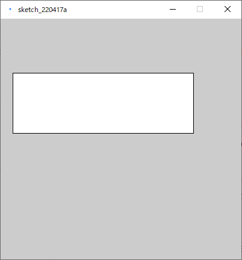
Code
xxxxxxxxxxsize(400, 400);
rect( 20, 90, 300, 100 );矩形（長方形）の描画方法を指定する
rectMode()
構文
rectMode( モード )
説明
描画情報の指定方法は4種類あり，
rectMode()で切り替えることができる． 自分の実現したいことに適した方法を選ぶとよい．
引数
モード
CORNER（デフォルト）CORNERSCENTERRADIUS
例1
CORNERS
構文
rect( 左上X座標, 左上Y座標, 右下X座標, 右下Y座標 )

Code
xxxxxxxxxxsize( 200, 200 );
rectMode( CORNERS );rect( 20, 60, 180, 140 ); 例2
CENTER
構文
rect( 中心X座標, 中心Y座標, 矩形の幅, 矩形の高さ )

Code
xxxxxxxxxxsize( 200, 200 );
rectMode( CENTER );rect( 100, 100, 160, 80 ); 例3
RADIUS
構文
rect( 中心X座標, 中心Y座標, 矩形の幅の半分, 矩形の高さの半分 )

Code
xxxxxxxxxxsize( 200, 200 );
rectMode( RADIUS );rect( 100, 100, 80, 40 ); https://processing.org/reference/rectMode_.html
楕円の描画方法を指定する
ellipseMode()
構文
ellipseMode( モード )
説明
描画情報の指定方法は4種類あり，
ellipseMode()で切り替えることができる． 自分の実現したいことに適した方法を選ぶとよい．rectMode()とほぼ同様
引数
モード
CENTER（デフォルト）RADIUSCORNERCORNERS
例1
RADIUS
構文
ellipse( 中心X座標, 中心Y座標, 楕円の幅の半分, 楕円の高さの半分 )
Code
xxxxxxxxxxsize( 200, 200 );
ellipseMode( RADIUS );ellipse( 100, 100, 80, 40 ); 例2
CORNER
構文
ellipse( 左上X座標, 左上Y座標, 楕円の幅, 楕円の高さ )

Code
xxxxxxxxxxsize( 200, 200 );
ellipseMode( CORNER );ellipse( 20, 60, 160, 80 ); 例3
CORNERS
構文
rect( 左上X座標, 左上Y座標, 右下X座標, 右下Y座標 )

Code
xxxxxxxxxxsize( 200, 200 );
ellipseMode( CORNERS );ellipse( 20, 60, 180, 140 ); https://processing.org/reference/ellipseMode_.html
演習EX
本日まで学んだ命令を自由に使い，自由に画像を生成してみる．
ロゴマーク，紋章，シンボルなど，ひと塊の図が好ましい．
画面一面を埋め尽くす文様などは第４回目以降が望ましい．
第３回：演算と変数
引数に式を書く．

Code
xsize( 200, 100 );
circle( 50, 50, 40 );
circle( 50 + 50, 50, 40 );
circle( 50 + 100, 50, 40 );引数は式を書くこともできる．
式がコンピュータにより計算され，答の値が引数になる．
式とは
式（Expression）
コンピュータが演算を行うための記述形式のこと．
算術式とは
数値を演算（計算）する式のこと．
四則演算が代表的
プログラムの算術式は数学と形式が多少異なる．
数学の数式 プログラムの算術式 1 + 2 = 3 1 + 22 - 1 = 1 2 - 13 × 2 = 6 3 * 26 ÷ 3 = 2 6 / 3プログラムの数式はコンピュータが答えを演算（計算）するので，右辺（
=以降）を記述しない．式だけでは命令文として成り立たず，プログラムが実行できない．
式は文の中の要素の一つ．
演算子
プログラムの式に用いる演算を行うための記号を演算子という．
算術演算子
算術演算をおこなう演算子を算術演算子という．
以下に演算記号とプログラムにおける演算子の対応表を記載する．
| 算数（演算記号） | プログラム（演算子） | 記号の読み方 | 日本語キーボードにおけるキーの場所の対応 |
|---|---|---|---|
| + | + | プラス | Shift + 「れ」 |
| − | - | ハイフン | 「ほ」 |
| × | * | アスタリスク | Shift + 「け」 |
| ÷ | / | スラッシュ | 「め」 |
式と演算子
式と演算子の関係をイメージで理解して置く．
演習１
引数に数式を記述し，4つの円を上下左右に表示する．
以下のプログラムをコピーする．
Code
xxxxxxxxxxsize( 200, 200 );circle( 100, 100, 40 );以下の円の描画命令を追加する．
circle( 100 + 50, 100, 40 );ステップ2のように，最初の円の座標値
100に加算／減算する数式を記述し，円の描画命令を追加していく． 以下のような表示が行われれば完成．以下完成プログラム
Code
xxxxxxxxxxsize( 200, 200 );circle( 100, 100, 40 );circle( 100 + 50, 100, 40 );circle( 100 - 50, 100, 40 );circle( 100, 100 + 50, 40 );circle( 100, 100 - 50, 40 );
このような式への置き換えは意味がない気がするが，変数を用いる場合に有効になる．
変数を使う．
演習１のプログラムを変数で置き換えたプログラム．
Code
xxxxxxxxxxint iCenterX = 100; // 図形の中心座標Xint iCenterY = 100; // 図形の中心座標Y
size( 200, 200 );
circle( iCenterX, iCenterY, 40 );
circle( iCenterX + 50, iCenterY, 40 );
circle( iCenterX - 50, iCenterY, 40 );
circle( iCenterX, iCenterY + 50, 40 );
circle( iCenterX, iCenterY - 50, 40 );変数の値を変えることで，簡単に図形の描画を変化させることができる．
Code
xxxxxxxxxxint iCenterX = 60;int iCenterY = 60;
size( 200, 200 );
circle( iCenterX, iCenterY, 40 );
circle( iCenterX + 50, iCenterY, 40 );
circle( iCenterX - 50, iCenterY, 40 );
circle( iCenterX, iCenterY + 50, 40 );
circle( iCenterX, iCenterY - 50, 40 );変数とは
値を保存するための名前付きスペース．
データの記憶領域はメモリ上にある．
メモリ上に保存領域を確保するために準備（宣言）をする必要がある．
1つの変数は1つのデータ（値）を保持する．
変数を作る．
構文
int 変数名 = 数値;
float 変数名 = 数値;
説明
intとfloatはデータ型（Datatype）という．intかfloatどちらを記述するかで入れられる数値の種類が決まる．
変数名は半角英字で自由に名前を記述する．
=に続いて変数に保存する初期値を記述する．（値の代入）
int
整数型（ Integer ）
値として小数は持てない整数の型
1, 2, 10, 23, 1028, 5270など
マイナスの数値も持てる．
-1, -97, -254, -1097, -23819など
最大で
2147483647，最小で-2147483648までの値を持てる
float
実数型（ floating-point numbers ）
値として小数を持てる型
1.02, 32.890, 403.98, 3109.37など
マイナスの数値も持てる．
1.02, 32.890, 403.98, 3109.37など
最大で3.40282347E+38，最小で-3.40282347E+38 の値を持てる
E+38 は「10の38乗」の意味
通常使用する範囲でならあらゆる数値を扱える．
例１
int型の変数を作る例．
図形の座標や大きさ，間隔などを保存するとよい．
Code
xxxxxxxxxxint iCenterX = 60; // 図形の中心座標Xint iCenterY = 60; // 図形の中心座標Y例２
float型の変数を作る例．
この例ではHSBで用いる彩度と輝度の小数値を保存している．
Code
xxxxxxxxxxfloat fS = 0.9; // 彩度float fB = 0.75; // 輝度変数を使う．
命令の引数として記述するとよい．
変数を式に組み込むこともできる．
数値と同じように扱える．
例１
演習１のプログラムに変数を加えたもの．
変数
iCenterXとiCenterYを式に組み込んでいる．変数の初期値を変更すると図形の中心が移動することを確認する．
Code
xxxxxxxxxxint iCenterX = 60; // 変数iCenterXint iCenterY = 60; // 変数iCenterY
size( 200, 200 );
circle( iCenterX, iCenterY, 40 );
circle( iCenterX + 50, iCenterY, 40 );
circle( iCenterX - 50, iCenterY, 40 );
circle( iCenterX, iCenterY + 50, 40 );
circle( iCenterX, iCenterY - 50, 40 );例２
例１にfloat型の変数を追加し，変数を使って色の指定を行う例． 彩度と輝度は共通にするため，変数を用いている．
Code
xxxxxxxxxxint iCenterX = 100;int iCenterY = 100;float fS = 0.9; // 彩度float fB = 1.0; // 輝度
size( 200, 200 );
colorMode( HSB, 360, 1.0, 1.0 );
fill( 0, fS, fB );circle( iCenterX, iCenterY, 40 );
fill( 80, fS, fB );circle( iCenterX + 50, iCenterY, 40 );
fill( 160, fS, fB );circle( iCenterX - 50, iCenterY, 40 );
fill( 240, fS, fB );circle( iCenterX, iCenterY + 50, 40 );
fill( 320, fS, fB );circle( iCenterX, iCenterY - 50, 40 );演習２
例２のプログラムに円の大きさ用の変数を一つ追加し，命令文の数値を変数に置き換える．
例２のプログラムをコピーする．
円の大きさ用の変数を１つ作成する．
描画命令の引数部分を変数に置き換える．
追加した変数の初期値を変更すると全ての円の大きさが変わることを確認する．
以下，完成プログラム
Code
xxxxxxxxxxint iCenterX = 100;int iCenterY = 100;int iSize = 50;float fS = 0.9; // 彩度float fB = 1.0; // 輝度size( 200, 200 );colorMode( HSB, 360, 1.0, 1.0 );fill( 0, fS, fB );circle( iCenterX, iCenterY, iSize );fill( 80, fS, fB );circle( iCenterX + 50, iCenterY, iSize );fill( 160, fS, fB );circle( iCenterX - 50, iCenterY, iSize );fill( 240, fS, fB );circle( iCenterX, iCenterY + 50, iSize );fill( 320, fS, fB );circle( iCenterX, iCenterY - 50, iSize );
変数の値を操作する．
変数の値は後から変更することができる．
値が変更できるから「変」数という．
変更できないものを定数という．
Code
xxxxxxxxxxsize( 400, 100 );
int iX = 0;int iY = 25;int iSize = 50;
square( iX, iY, iSize );iX += iSize;
square( iX, iY, iSize );iX += iSize;
square( iX, iY, iSize );iX += iSize;
square( iX, iY, iSize );iX += iSize;
square( iX, iY, iSize );iX += iSize;
square( iX, iY, iSize );iX += iSize;
square( iX, iY, iSize );iX += iSize;
square( iX, iY, iSize );iX += iSize;変数に値を足す（加算）
構文
変数名 += 値;
説明
事前に変数は作成しておく必要がある．
変数に保存されている値に右辺の値を足す．
https://processing.org/reference/addassign.html
例１
X座標値の変数に値を足しながら正方形を横に並べる．
Code
xxxxxxxxxxsize( 400, 100 );
int iX = 0; // X座標値int iY = 25;int iSize = 50;
square( iX, iY, iSize );iX += iSize;
square( iX, iY, iSize );iX += iSize;
square( iX, iY, iSize );iX += iSize;
square( iX, iY, iSize );iX += iSize;
square( iX, iY, iSize );iX += iSize;
square( iX, iY, iSize );iX += iSize;
square( iX, iY, iSize );iX += iSize;
square( iX, iY, iSize );iX += iSize;変数から値を引く（減算）
構文
変数名 -= 値;
説明
事前に変数は作成しておく必要がある．
変数に保存されている値から右辺の値を引く．
https://processing.org/reference/subtractassign.html
変数に値をかける（乗算）
構文
変数名 *= 値;
説明
事前に変数は作成しておく必要がある．
変数に保存されている値に右辺の値をかける．
https://processing.org/reference/multiplyassign.html
例２
例１のプログラムに，正方形の大きさの値の変数に0.9をかける記述を追加した例．
Code
xxxxxxxxxxsize( 400, 100 );
int iX = 0;int iY = 25;int iSize = 50;
square( iX, iY, iSize );iX += iSize;iSize *= 0.9; // 乗算
square( iX, iY, iSize );iX += iSize;iSize *= 0.9;
square( iX, iY, iSize );iX += iSize;iSize *= 0.9;
square( iX, iY, iSize );iX += iSize;iSize *= 0.9;
square( iX, iY, iSize );iX += iSize;iSize *= 0.9;
square( iX, iY, iSize );iX += iSize;iSize *= 0.9;
square( iX, iY, iSize );iX += iSize;iSize *= 0.9;
square( iX, iY, iSize );iX += iSize;iSize *= 0.9;変数を値でわる（除算）
構文
変数名 /= 値;
説明
事前に変数は作成しておく必要がある．
変数に保存されている値から右辺の値をわる．
https://processing.org/reference/divideassign.html
変数へ値を上書きする．
構文
変数名 = 値;
説明
変数へ単純に新しい値を上書きすることができる．
変数へ値を保存することを代入という．
代入演算子
これらの演算子を代入演算子という．
単なる算術演算子と違い，変数へ値の代入まで行っている．
| 四則計算 | 演算 | 代入演算子 |
|---|---|---|
| 足し算 | 加算 | += |
| 引き算 | 減算 | -= |
| かけ算 | 乗算 | *= |
| 割り算 | 除算 | /= |
エディタ：検索と置換
プログラムの同じ個所を同時に書き換えたい場合，文字列の置換を行うとよい．
エディタ内の書き換えたい文字列を選択する．
Ctrlキーを押しながらFキー を押す．「置換」欄に書き換えたい（新しい）文字列を入力する．
「すべて置換」をクリックする．
演習３
例２のプログラムに代入演算子を使った文を複数追加し，下図のような表示が行われるプログラムを作る．
例２のプログラムをコピーする．
スクリーンサイズを400×200へ変更する．
いずれかの変数と代入演算子を使った文を複数追加し，上図のように表示されるプログラムを作成する．
以下，完成プログラム．
Code
xxxxxxxxxxsize( 400, 200 );int iX = 0;int iY = 0;int iSize = 50;square( iX, iY, iSize );iX += iSize;iY += iSize / 2;iSize *= 0.9; // 乗算square( iX, iY, iSize );iX += iSize;iY += iSize / 2;iSize *= 0.9;square( iX, iY, iSize );iX += iSize;iY += iSize / 2;iSize *= 0.9;square( iX, iY, iSize );iX += iSize;iY += iSize / 2;iSize *= 0.9;square( iX, iY, iSize );iX += iSize;iY += iSize / 2;iSize *= 0.9;square( iX, iY, iSize );iX += iSize;iY += iSize / 2;iSize *= 0.9;square( iX, iY, iSize );iX += iSize;iY += iSize / 2;iSize *= 0.9;square( iX, iY, iSize );iX += iSize;iY += iSize / 2;iSize *= 0.9;
剰余算を使った表現
ストライプやボーダーなどの縞模様の表現に用いることが多い
Code
xxxxxxxxxxsize( 400, 100 );
int iX = 0;int iY = 25;int iSize = 50;int iRepeat = 200; // 剰余算用の変数
fill( iX % iRepeat );square( iX, iY, iSize );iX += iSize;
fill( iX % iRepeat );square( iX, iY, iSize );iX += iSize;
fill( iX % iRepeat );square( iX, iY, iSize );iX += iSize;
fill( iX % iRepeat );square( iX, iY, iSize );iX += iSize;
fill( iX % iRepeat );square( iX, iY, iSize );iX += iSize;
fill( iX % iRepeat );square( iX, iY, iSize );iX += iSize;
fill( iX % iRepeat );square( iX, iY, iSize );iX += iSize;
fill( iX % iRepeat );square( iX, iY, iSize );iX += iSize;剰余算
「割り算の余り」を求める記述．
割り算の余りを剰余という．
プログラムの算術式は数学と形式が多少異なる．
数学の数式 プログラムの算術式 10 ÷ 3 = 3 余り 1 10 % 3
演算子
| 算数（演算記号） | プログラム（演算子） | 記号の読み方 | 日本語キーボードにおけるキーの場所の対応 |
|---|---|---|---|
| ÷ | % | パーセント | Shift +「え」 |
例１
正方形の座標値Xの値を200で割った余りを塗色に設定した例
Code
xxxxxxxxxxsize( 400, 100 );
int iX = 0;int iY = 25;int iSize = 50;int iRepeat = 200; // 剰余算用の変数
fill( iX % iRepeat );square( iX, iY, iSize );iX += iSize;
fill( iX % iRepeat );square( iX, iY, iSize );iX += iSize;
fill( iX % iRepeat );square( iX, iY, iSize );iX += iSize;
fill( iX % iRepeat );square( iX, iY, iSize );iX += iSize;
fill( iX % iRepeat );square( iX, iY, iSize );iX += iSize;
fill( iX % iRepeat );square( iX, iY, iSize );iX += iSize;
fill( iX % iRepeat );square( iX, iY, iSize );iX += iSize;
fill( iX % iRepeat );square( iX, iY, iSize );iX += iSize;例２
環状に並んだ円の角度を180で割った余りを塗色に設定した例
Code
xxxxxxxxxxsize( 200, 200 );
int iX = 80;int iSize = 30;int iDegree = 0; // 現在の回転角度（°）int iInterval = 30; // 回転間隔int iRepeat = 180;
translate( 100, 100 );
fill( iDegree % iRepeat );circle( iX, 0, iSize );rotate( radians( iInterval ) );iDegree += iInterval;
fill( iDegree % iRepeat );circle( iX, 0, iSize );rotate( radians( iInterval ) );iDegree += iInterval;
fill( iDegree % iRepeat );circle( iX, 0, iSize );rotate( radians( iInterval ) );iDegree += iInterval;
fill( iDegree % iRepeat );circle( iX, 0, iSize );rotate( radians( iInterval ) );iDegree += iInterval;
fill( iDegree % iRepeat );circle( iX, 0, iSize );rotate( radians( iInterval ) );iDegree += iInterval;
fill( iDegree % iRepeat );circle( iX, 0, iSize );rotate( radians( iInterval ) );iDegree += iInterval;
fill( iDegree % iRepeat );circle( iX, 0, iSize );rotate( radians( iInterval ) );iDegree += iInterval;
fill( iDegree % iRepeat );circle( iX, 0, iSize );rotate( radians( iInterval ) );iDegree += iInterval;
fill( iDegree % iRepeat );circle( iX, 0, iSize );rotate( radians( iInterval ) );iDegree += iInterval;
fill( iDegree % iRepeat );circle( iX, 0, iSize );rotate( radians( iInterval ) );iDegree += iInterval;
fill( iDegree % iRepeat );circle( iX, 0, iSize );rotate( radians( iInterval ) );iDegree += iInterval;
fill( iDegree % iRepeat );circle( iX, 0, iSize );rotate( radians( iInterval ) );iDegree += iInterval;演習４
例１のプログラムの変数iRepeatの初期値を書き換え，様々な模様のパターンを表示する．
余裕があればfill()を書き換え，RGB値を指定してみる．
複雑な計算式
四則混合
以下のような四則演算が混じった計算のこと．
プログラムにおける算術式においても，もちろん表現できる．
上記の数式を算術式で表現すると以下のようになる．
Code
xxxxxxxxxx( 1 + 2 ) - 3 *4 / 5
算数と同様に，計算する順番が決まっている．
算術演算子の優先順位
ある一つの四則混合の計算が行われる際，内部の一つ一つの演算が順番に実行されていく．
この順番は算数の四則計算に準じる．
式の左から逐次実行されるわけではない．
下の表において，優先度の高い演算子から順番に演算が行われる．
| 優先度 | 種類 | 演算子 |
|---|---|---|
| 高い | 括弧(カッコ) | ( ) |
| 乗算 | * | |
| 除算 | / | |
| 剰余算 | % | |
| 加算 | + | |
| 低 | 減算 | - |
演習５
白黒ストライプを作る．
以下のプログラムをコピーする．
Code
xxxxxxxxxxsize( 400, 100 );int iX = 0;int iY = 25;int iSize = 50;int iRepeat = 100; // 剰余算用の変数fill( iX % iRepeat );square( iX, iY, iSize );iX += iSize;fill( iX % iRepeat );square( iX, iY, iSize );iX += iSize;fill( iX % iRepeat );square( iX, iY, iSize );iX += iSize;fill( iX % iRepeat );square( iX, iY, iSize );iX += iSize;fill( iX % iRepeat );square( iX, iY, iSize );iX += iSize;fill( iX % iRepeat );square( iX, iY, iSize );iX += iSize;fill( iX % iRepeat );square( iX, iY, iSize );iX += iSize;fill( iX % iRepeat );square( iX, iY, iSize );iX += iSize;fill( iX % iRepeat )の中の引数を書き換え，白黒ストライプが描画されるようにする．カッコや他の算術演算子を加え，四則混合の式にする必要がある．
以下，完成プログラム
Code
xxxxxxxxxxsize( 400, 100 );int iX = 0;int iY = 25;int iSize = 50;int iRepeat = 100; // 剰余算用の変数fill( ( iX % iRepeat ) * 5 );square( iX, iY, iSize );iX += iSize;fill( ( iX % iRepeat ) * 5 );square( iX, iY, iSize );iX += iSize;fill( ( iX % iRepeat ) * 5 );square( iX, iY, iSize );iX += iSize;fill( ( iX % iRepeat ) * 5 );square( iX, iY, iSize );iX += iSize;fill( ( iX % iRepeat ) * 5 );square( iX, iY, iSize );iX += iSize;fill( ( iX % iRepeat ) * 5 );square( iX, iY, iSize );iX += iSize;fill( ( iX % iRepeat ) * 5 );square( iX, iY, iSize );iX += iSize;fill( ( iX % iRepeat ) * 5 );square( iX, iY, iSize );iX += iSize;
三角関数を用いた表現
三角関数
sin()
cos()
tan()
構文
sin( 角度のラジアン値 )
cos( 角度のラジアン値 )
tan( 角度のラジアン値 )
角度をラジアンへ変換する命令を含めると以下のようになる
sin( radians( 角度のラジアン値 ) )
cos( radians( 角度のラジアン値 )
tan( radians( 角度のラジアン値 )
説明
サイン、コサイン、タンジェントなどの値を求める関数．
角度の値から周期的な値を求めることができる．
波，振動
特に
sin(),cos()は必ず -1~1の間の実数を返すので，波形のような表現ができる．
角度と計算結果の値の関係
| 関数名 | 構文 | 返す値の範囲 | 角度と返す値の関係 |
|---|---|---|---|
| 正弦関数 | sin( α ) | -1～1の間 |  |
| 余弦関数 | cos( α ) | -1～1の間 |  |
| 正接関数 | tan( α ) | -∞～-∞ 90°等，値が定義できない場合がある． |
https://processing.org/reference/sin_.html https://processing.org/reference/cos_.html https://processing.org/reference/tan_.html
例１
並んだ正方形のY座標値にsin()を使った例
Code
xxxxxxxxxxsize( 400, 100 );
int iX = 0;int iY = 25;int iOffsetY = 25;int iSize = 50;
square( iX, iY * sin( radians( iX ) ) + iOffsetY, iSize );iX += iSize;
square( iX, iY * sin( radians( iX ) ) + iOffsetY, iSize );iX += iSize;
square( iX, iY * sin( radians( iX ) ) + iOffsetY, iSize );iX += iSize;
square( iX, iY * sin( radians( iX ) ) + iOffsetY, iSize );iX += iSize;
square( iX, iY * sin( radians( iX ) ) + iOffsetY, iSize );iX += iSize;
square( iX, iY * sin( radians( iX ) ) + iOffsetY, iSize );iX += iSize;
square( iX, iY * sin( radians( iX ) ) + iOffsetY, iSize );iX += iSize;
square( iX, iY * sin( radians( iX ) ) + iOffsetY, iSize );iX += iSize;例２
並んだ正方形の塗色にcos()を使った例

Code
xxxxxxxxxxsize( 400, 100 );
int iX = 0;int iY = 25;int iSize = 40;
colorMode( RGB, 2 ); // 最大値を2へ
fill( 1 + sin( radians( iX ) ) );square( iX, iY, iSize );iX += iSize;
fill( 1 + sin( radians( iX ) ) );square( iX, iY, iSize );iX += iSize;
fill( 1 + sin( radians( iX ) ) );square( iX, iY, iSize );iX += iSize;
fill( 1 + sin( radians( iX ) ) );square( iX, iY, iSize );iX += iSize;
fill( 1 + sin( radians( iX ) ) );square( iX, iY, iSize );iX += iSize;
fill( 1 + sin( radians( iX ) ) );square( iX, iY, iSize );iX += iSize;
fill( 1 + sin( radians( iX ) ) );square( iX, iY, iSize );iX += iSize;
fill( 1 + sin( radians( iX ) ) );square( iX, iY, iSize );iX += iSize;
fill( 1 + sin( radians( iX ) ) );square( iX, iY, iSize );iX += iSize;
fill( 1 + sin( radians( iX ) ) );square( iX, iY, iSize );iX += iSize;演習６
例１を元に，塗色に三角関数に使い白黒のグラデーションをつける．
以下のプログラムをコピーする．
Code
xxxxxxxxxxsize( 400, 100 );int iX = 0;int iY = 25;int iOffsetY = 25;int iSize = 50;square( iX, iY * sin( radians( iX ) ) + iOffsetY, iSize );iX += iSize;square( iX, iY * sin( radians( iX ) ) + iOffsetY, iSize );iX += iSize;square( iX, iY * sin( radians( iX ) ) + iOffsetY, iSize );iX += iSize;square( iX, iY * sin( radians( iX ) ) + iOffsetY, iSize );iX += iSize;square( iX, iY * sin( radians( iX ) ) + iOffsetY, iSize );iX += iSize;square( iX, iY * sin( radians( iX ) ) + iOffsetY, iSize );iX += iSize;square( iX, iY * sin( radians( iX ) ) + iOffsetY, iSize );iX += iSize;square( iX, iY * sin( radians( iX ) ) + iOffsetY, iSize );iX += iSize;iYをiCenterYで置換する．新しくY座標値用変数を作る．
float fY = 0;正方形描画命令の２つ目の引数を切り取り，変数
fYに代入する．fY = iCenterY * sin( radians( iX ) ) + iOffsetY;この代入文は正方形描画命令の前の行に記述する．
ステップ4で切り取った部分には変数
fYを記述する．以下，ここまででできたプログラム
Code
xxxxxxxxxxsize( 400, 100 );int iX = 0;float fY = 0;int iCenterY = 25;int iOffsetY = 25;int iSize = 50;fY = iCenterY * sin( radians( iX ) ) + iOffsetY;square( iX, fY, iSize );iX += iSize;square( iX, iCenterY * sin( radians( iX ) ) + iOffsetY, iSize );iX += iSize;square( iX, iCenterY * sin( radians( iX ) ) + iOffsetY, iSize );iX += iSize;square( iX, iCenterY * sin( radians( iX ) ) + iOffsetY, iSize );iX += iSize;square( iX, iCenterY * sin( radians( iX ) ) + iOffsetY, iSize );iX += iSize;square( iX, iCenterY * sin( radians( iX ) ) + iOffsetY, iSize );iX += iSize;square( iX, iCenterY * sin( radians( iX ) ) + iOffsetY, iSize );iX += iSize;square( iX, iCenterY * sin( radians( iX ) ) + iOffsetY, iSize );iX += iSize;他の正方形描画命令の２つ目の引数を
fYで置換する．「次を探す」・「置換＆検索」を使って１つずつ置換する．
ステップ4の文を他の正方形描画命令の前行にも記述する．
以下，ここまででできたプログラム
Code
xxxxxxxxxxsize( 400, 100 );int iX = 0;float fY = 0;int iCenterY = 25;int iOffsetY = 25;int iSize = 50;fY = iCenterY * sin( radians( iX ) ) + iOffsetY;square( iX, fY, iSize );iX += iSize;fY = iCenterY * sin( radians( iX ) ) + iOffsetY;square( iX, fY, iSize );iX += iSize;fY = iCenterY * sin( radians( iX ) ) + iOffsetY;square( iX, fY, iSize );iX += iSize;fY = iCenterY * sin( radians( iX ) ) + iOffsetY;square( iX, fY, iSize );iX += iSize;fY = iCenterY * sin( radians( iX ) ) + iOffsetY;square( iX, fY, iSize );iX += iSize;fY = iCenterY * sin( radians( iX ) ) + iOffsetY;square( iX, fY, iSize );iX += iSize;fY = iCenterY * sin( radians( iX ) ) + iOffsetY;square( iX, fY, iSize );iX += iSize;fY = iCenterY * sin( radians( iX ) ) + iOffsetY;square( iX, fY, iSize );iX += iSize;ステップ7までで，引数の中に記述していた式の値を変数
fYに保存するように変更を行った．全ての正方形描画命令の前に
fill( fY );を追加してみる．fill( fY );の引数が大きくなるよう式を組む．変数
fYは0～50の間の値なので，このままだと暗い．スクリーン上のほうが正方形が白くなる方法を考えてみる．
以下，完成プログラム
Code
xxxxxxxxxxsize( 400, 100 );int iX = 0;float fY = 0;int iCenterY = 25;int iOffsetY = 25;int iSize = 50;fY = iCenterY * sin( radians( iX ) ) + iOffsetY;fill( 255 - fY * 5 );square( iX, fY, iSize );iX += iSize;fY = iCenterY * sin( radians( iX ) ) + iOffsetY;fill( 255 - fY * 5 );square( iX, fY, iSize );iX += iSize;fY = iCenterY * sin( radians( iX ) ) + iOffsetY;fill( 255 - fY * 5 );square( iX, fY, iSize );iX += iSize;fY = iCenterY * sin( radians( iX ) ) + iOffsetY;fill( 255 - fY * 5 );square( iX, fY, iSize );iX += iSize;fY = iCenterY * sin( radians( iX ) ) + iOffsetY;fill( 255 - fY * 5 );square( iX, fY, iSize );iX += iSize;fY = iCenterY * sin( radians( iX ) ) + iOffsetY;fill( 255 - fY * 5 );square( iX, fY, iSize );iX += iSize;fY = iCenterY * sin( radians( iX ) ) + iOffsetY;fill( 255 - fY * 5 );square( iX, fY, iSize );iX += iSize;fY = iCenterY * sin( radians( iX ) ) + iOffsetY;fill( 255 - fY * 5 );square( iX, fY, iSize );iX += iSize;
乱数を用いた表現
乱数を得る
random()
構文
random( 最大値 )
random( 最小値, 最大値 )
説明
乱数を生成する命令．
乱数とは，ランダムな値のことをいう．
この命令を実行する度に，新たなランダム値を返す．
あるタイミングで生成した乱数を再度使いたい場合，変数に保存しておく必要がある．
この乱数をうまく組み合わせることで，人間の手作業では「揺れ幅」を表現できる．
効果的に使用するには，後日学習する「繰り返し」の習得が必要．
引数
得られるランダム値の最大値
得られるランダム値の最小値と最大値
返り値
ランダムなfloat値
https://processing.org/reference/random_.html
例１
正方形の並びのY座標値をランダムな値にする．
Code
xxxxxxxxxxsize( 400, 100 );
int iX = 0;int iMaxY = 50;int iSize = 50;
square( iX, random( 0, iMaxY ), iSize );iX += iSize;
square( iX, random( 0, iMaxY ), iSize );iX += iSize;
square( iX, random( 0, iMaxY ), iSize );iX += iSize;
square( iX, random( 0, iMaxY ), iSize );iX += iSize;
square( iX, random( 0, iMaxY ), iSize );iX += iSize;
square( iX, random( 0, iMaxY ), iSize );iX += iSize;
square( iX, random( 0, iMaxY ), iSize );iX += iSize;
square( iX, random( 0, iMaxY ), iSize );iX += iSize;例２
並んだ正方形の塗色をランダムなグレー値にする．
Code
xxxxxxxxxxsize( 400, 100 );
int iX = 0;int iY = 25;int iSize = 50;
fill( random( 255 ) );square( iX, iY, iSize );iX += iSize;
fill( random( 255 ) );square( iX, iY, iSize );iX += iSize;
fill( random( 255 ) );square( iX, iY, iSize );iX += iSize;
fill( random( 255 ) );square( iX, iY, iSize );iX += iSize;
fill( random( 255 ) );square( iX, iY, iSize );iX += iSize;
fill( random( 255 ) );square( iX, iY, iSize );iX += iSize;
fill( random( 255 ) );square( iX, iY, iSize );iX += iSize;
fill( random( 255 ) );square( iX, iY, iSize );iX += iSize;演習７
色のブレがあるストライプ柄を作る．
条件
例2のプログラムを参考に，色のブレがあるストライプ柄を自由に作成する．
例として，完成にランダムな塗色の指定は以下のような記述になる．
fill( random( 255 ), random( 255 ), random( 255 ) );演習５のように剰余算を使う必要はない．
２種類の
fill()命令文を交互に記述する．下の完成プログラムで使用している
fill()命令文の例fill( random( 200, 255 ), random( 40, 50 ), random( 30, 50 ) ); // 濃い色fill( random( 250, 255 ), random( 240, 250 ), random( 240, 250 ) ); // 薄い色以下，完成プログラム
Code
xxxxxxxxxxsize( 400, 100 );int iX = 0;int iY = 25;int iSize = 50;fill( random( 200, 255 ), random( 40, 50 ), random( 30, 50 ) );square( iX, iY, iSize );iX += iSize;fill( random( 250, 255 ), random( 240, 250 ), random( 240, 250 ) );square( iX, iY, iSize );iX += iSize;fill( random( 200, 255 ), random( 40, 50 ), random( 30, 50 ) );square( iX, iY, iSize );iX += iSize;fill( random( 250, 255 ), random( 240, 250 ), random( 240, 250 ) );square( iX, iY, iSize );iX += iSize;fill( random( 200, 255 ), random( 40, 50 ), random( 30, 50 ) );square( iX, iY, iSize );iX += iSize;fill( random( 250, 255 ), random( 240, 250 ), random( 240, 250 ) );square( iX, iY, iSize );iX += iSize;fill( random( 200, 255 ), random( 40, 50 ), random( 30, 50 ) );square( iX, iY, iSize );iX += iSize;fill( random( 250, 255 ), random( 240, 250 ), random( 240, 250 ) );square( iX, iY, iSize );iX += iSize;
べき乗の計算を行う命令
pow()
構文
pow( 基数, 指数 )
説明
べき乗の計算を行い，計算結果の値を返す命令．
指数関数ともいう．
俗にいう「指数的に増加する」
指数を増加していくと，急激に返り値が増加するようになる．
べき乗とは
基数を指数の回数だけ掛け合わせる計算

以下，基数：3, 指数：5の例
引数
基数，指数
返り値
べき乗の計算結果のfloat型の値
例１
正方形のY座標値をべき乗の計算で大きくしていく例
変数iXを指数としている．
Code
xxxxxxxxxxsize( 400, 200 );
int iX = 0;int iSize = 50;float fN = 1.014; // 基数
square( iX, pow( fN, iX ), iSize );iX += iSize;
square( iX, pow( fN, iX ), iSize );iX += iSize;
square( iX, pow( fN, iX ), iSize );iX += iSize;
square( iX, pow( fN, iX ), iSize );iX += iSize;
square( iX, pow( fN, iX ), iSize );iX += iSize;
square( iX, pow( fN, iX ), iSize );iX += iSize;
square( iX, pow( fN, iX ), iSize );iX += iSize;
square( iX, pow( fN, iX ), iSize );iX += iSize;例２
正方形の塗色をべき乗の計算で明るくしていく例
変数iXを指数としている．
Code
xxxxxxxxxxsize( 400, 100 );
int iX = 0;int iY = 25;int iSize = 50;float fN = 1.017; // 基数
fill( pow( fN, iX ) );square( iX, iY, iSize );iX += iSize;
fill( pow( fN, iX ) );square( iX, iY, iSize );iX += iSize;
fill( pow( fN, iX ) );square( iX, iY, iSize );iX += iSize;
fill( pow( fN, iX ) );square( iX, iY, iSize );iX += iSize;
fill( pow( fN, iX ) );square( iX, iY, iSize );iX += iSize;
fill( pow( fN, iX ) );square( iX, iY, iSize );iX += iSize;
fill( pow( fN, iX ) );square( iX, iY, iSize );iX += iSize;
fill( pow( fN, iX ) );square( iX, iY, iSize );iX += iSize;https://processing.org/reference/pow_.html
演習８
例２のプログラムをコピーする
基数を値として保存する変数
fNの初期値を増やして実行してみる．正方形の色が急激に明るくなることを確認する．

その他の数学関連の命令
平方根の計算を行う命令
sqrt()
構文
sqrt( 平方根を求める数値 )
説明
２乗すると引数の値となる値の計算を行い，計算結果の値を返す命令．
平方根とは
ある数値を正方形の面積とし，それを元に一辺の長さを求める計算．
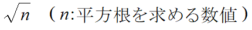

引数
平方根を求める数値
例１
正方形のY座標値にsqrt()を使用した例
Code
xxxxxxxxxxsize( 400, 200 );
int iX = 0;int iSize = 50;
square( iX, sqrt( iX ) * 8, iSize );iX += iSize;
square( iX, sqrt( iX ) * 8, iSize );iX += iSize;
square( iX, sqrt( iX ) * 8, iSize );iX += iSize;
square( iX, sqrt( iX ) * 8, iSize );iX += iSize;
square( iX, sqrt( iX ) * 8, iSize );iX += iSize;
square( iX, sqrt( iX ) * 8, iSize );iX += iSize;
square( iX, sqrt( iX ) * 8, iSize );iX += iSize;
square( iX, sqrt( iX ) * 8, iSize );iX += iSize;https://processing.org/reference/sqrt_.html
例２
正方形の塗色にsqrt()を使用した例
Code
xxxxxxxxxxsize( 400, 100 );
int iX = 0;int iY = 25;int iSize = 50;
fill( sqrt( iX ) * 10 );square( iX, iY, iSize );iX += iSize;
fill( sqrt( iX ) * 10 );square( iX, iY, iSize );iX += iSize;
fill( sqrt( iX ) * 10 );square( iX, iY, iSize );iX += iSize;
fill( sqrt( iX ) * 10 );square( iX, iY, iSize );iX += iSize;
fill( sqrt( iX ) * 10 );square( iX, iY, iSize );iX += iSize;
fill( sqrt( iX ) * 10 );square( iX, iY, iSize );iX += iSize;
fill( sqrt( iX ) * 10 );square( iX, iY, iSize );iX += iSize;
fill( sqrt( iX ) * 10 );square( iX, iY, iSize );iX += iSize;絶対値を求める
abs()
構文
abs( 絶対値を求める数値 )
説明
正（プラス）の値はそのままの値を返す．
負（マイナス）の値はマイナスが無視された値を返す．
引数
絶対値を求める数値
例
Code
xxxxxxxxxxprint( abs(-16) ); // コンソールに 16 が表示される．https://processing.org/reference/abs_.html https://processing.org/reference/ceil_.html https://processing.org/reference/floor_.html https://processing.org/reference/round_.html
型の変換
整数型(int)と実数型(float)の値を同一の式の中に混合するケースによく使う．
できればこちらではなく，
floor(),ceil(),round()を使うほうが好ましい．慣れないうちはどうしてもエラーが発生したり，意図しない挙動を起こしてしまうので，適切に対処する必要がある．
小数点以下を切り上げる
ceil()
構文
ceil( 数値 )
例1
Code
xxxxxxxxxxprint( ceil(8.22) );print(iB);例2
float型の値をint型の値に変換するために用いることができる．
Code
xxxxxxxxxxfloat fA = 123.456; // 実数型の変数fA
int iB = ceil(fA); // 整数型の変数iBに計算結果を代入．
print(iB); // コンソールに 124 が表示される．小数点以下を切り捨てる
floor()
構文
floor( 数値 )
例1
Code
xxxxxxxxxxprint( floor(2.88) ); // コンソールに 2 が表示される．例2
float型の値をint型の値に変換するために用いることができる．
Code
xxxxxxxxxxfloat fA = 123.456; // 実数型の変数fA
int iB = floor(fA); // 整数型の変数iBに計算結果を代入．
print(iB); // コンソールに 123 が表示される．小数点以下を四捨五入する
round()
構文
round( 数値 )
例1
Code
xxxxxxxxxxprint( round(9.2) ); // コンソールに 9 が表示される．print( round(9.5) ); // コンソールに 10 が表示される．print( round(9.9) ); // コンソールに 10 が表示される．float型の値をint型の値に変換するために用いることができる．
例2
Code
xxxxxxxxxxfloat fA = 123.456; // 実数型の変数fA
int iB = round(fA); // 整数型の変数iBに計算結果を代入．
print(iB); // コンソールに 123 が表示される．int()
整数型に変換する． 小数点以下は切り捨てられる．
構文
int( 変換するfloat型変数や値 )
例
Code
xxxxxxxxxxfloat fA = 1.234;int iA = int(5/fA); // iAに代入する直前に整数型に変換float()
実数型に変換する．
構文
float( 変換するint型変数や値 )
例
変換しなかった場合，計算結果の小数点以下が切り捨てられてしまう．
Code
xxxxxxxxxxfloat fA = 10 / float(width); // widthはint型のシステム変数なので変換が必要変数でなく，数値の場合以下のような書き方もできる
Code
xxxxxxxxxxfloat fA = 10 / float(1000);Code
xxxxxxxxxxfloat fA = 10 / 1000.0; // 型変換を行わず，このような書き方もできるシステム変数
Processingが事前に用意している変数．
ユーザーが値を代入（保存）することはできない．
画面のサイズを取得する
横のピクセル数
width
縦のピクセル数
height
説明
命令ではなく，変数と呼ばれるもの．
カッコ「()」が後ろに付かないことに注意．
必ず
size()記述以後に記述する必要がある．size()命令以降に，画面サイズの数値の代わりにwidth,heightを用いることができる．同じ数値を繰り返し記述しなくてよい利点がある

例1
スクリーンの角から対角までの線を描画する．
Code
xxxxxxxxxxsize(400,400);
// スクリーン右下へ線を描画する．line(0, 0, width, height);
例2
width,heightを用いることで，スクリーンを元にした大きさの図形描画を行うことができる．下の例では幅，高さともにスクリーンの２分の１の大きさの矩形（四角形）を描画している．
Code
xxxxxxxxxxsize(600,400);
// 幅: 1/2, 高さ: 1/2 の矩形を描画する.rect(0, 0, width/2, height/2);
https://processing.org/reference/width.html https://processing.org/reference/height.html
定数
final
構文
final 変数型 定数名 = 初期値;
説明
変数の宣言文の先頭に記述することで，変数ではなく定数を定義できる．
定数とは値が変化しない変数のこと．
定数は値の代入はできない．
変化させたくない固定のパラメータなどに用いる．
例
矩形の大きさの引数に用いた例． 変数と区別しやすくするため，定数名を大文字のみで記述するなど工夫をすることを推奨．
Code
xxxxxxxxxxfinal float RECT_WIDTH = 400;final float RECT_HEIGHT = 200;
rect( 0,0, RECT_WIDTH, RECT_HEIGHT );https://processing.org/reference/final.html
第４回：制御文：繰り返し
制御文とは
プログラムの流れ（フロー）を制御するための特殊な文
プログラムは通常上から下へ逐次実行される．
制御文を使い，変化を加えることができる．
通常の文とは異なる特殊な構文をとる．
条件式
( )の中に記述する．返り値が真(true)か偽(false)かで流れを切り替える．
ブロック文
{ }の中に記述する．複文（複数の文）を一まとめにしたもの．
主に以下の２種類がある．
条件分岐
ifif-elseswitch繰り返し
forwhile
プログラムの流れは古くからフローチャート等を用いて図として表される．
フローチャート(流れ図)
プログラムの実行（手続き）の流れは，制御することができる．
これは，以下のようなフローチャートによって図として表すことができる．
フローチャートにはプロセスの各ステップを表すパーツが複数種類存在する．
下図中の矩形やひし形等の図形など．
ある程度規格が統一されている．
下のフローチャートは課題1のプログラムをフローチャートで示したもの．

条件式
条件式とは
プログラムの実行の流れを決める重要な要素，'判断'のパーツ．
フローチャート部品のひし形図形の中に記述されているのが条件式．

条件分岐，繰り返しどちらの記述にも用いられる．
二つの値や変数を比較し，計算結果を真(true)か偽(false)として返す．
必ずどちらかの値が返る．
真(true)と偽(false)二通りの状態をとる値をブール値という．
構文
２つの値or変数の間にスペースをはさみ，比較演算子（後述）を中に記述する．
Code
xxxxxxxxxx値or変数 比較演算子 値or変数条件式の種類
下表の条件を満たしたとき，条件式は真(true)を返し，満たさなければ偽(false)を返す．
| 条件式 | 比較演算子 | 条件 |
|---|---|---|
a < b | < | aがbより小さい |
a <= b | <= | aがb以下 |
a > b | > | aがbより大きい |
a >= b | >= | aがbと等しいか大きい |
a == b | == | aとbが等しい |
a != b | != | aがbが等しくない |
計算結果（式が返す値）
条件を満たしたとき，式の結果は真(true)となり，そうでなければ偽(false)となる．
例1
条件式の計算結果をprint()する例
Code
xxxxxxxxxxint iA = 100; // 変数iAに100を代入
print( iA > 200 ); // 条件式の結果をそのままprint()例2
算術式と組み合わせた例．
変数iAが偶数ならtrue，奇数ならfalseの計算結果をprint()する．
Code
xxxxxxxxxxint iA = 100; // 変数iAに値を代入
print( iA%2 == 0 ); // 条件式の結果をそのままprint()
処理の順序

例3
変数の初期値に乱数を代入した例．
変数iRandomが3の倍数ならtrue，そうでないならfalseの計算結果をprint()する．
Code
xxxxxxxxxxint iRandom = floor( random(100) ); // 0~100の整数（小数点以下切り捨て）
println( iRandom + " wa 3 no baisuu?" );print( iRandom%3 == 0 ); // 条件式の結果をそのままprint()
https://processing.org/reference#control
演習1
int型の変数に乱数（0~100）を代入し，偶数ならtrue，奇数ならfalseの計算結果をコンソール出力する．
例1~3を参考にする．
時間は3分程度
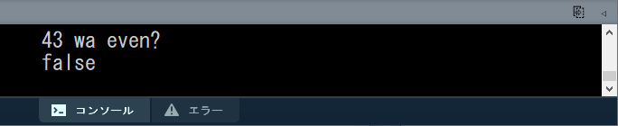
変数の特殊な操作
変数の値は代入文で上書きできることは学習した．
Code
xxxxxxxxxxint a = 0;a = 100; // 代入文代入文以外にも変数の値を操作するやり方があるので説明する．
プログラミングならではの書き方であるため，最初は違和感があるかもしれないが，後の制御文などで必須．
インクリメント演算子
++
値を1ずつ増やす操作に用いる．
前置・後置という構文があるが，本授業ではどちらを使っても構わない．
構文
前置
Code
xxxxxxxxxx++変数後置
Code
xxxxxxxxxx変数++
これらは，基本的には以下と同じ結果が得られる.
Code
xxxxxxxxxx変数a = 変数a + 1;
例
「変数aに1を足す」記述．
Code
xxxxxxxxxxint a = 0;
++a; // 変数aに1を足す．
a++; // 変数aにさらに1を足す．デクリメント演算子
--
値を1ずつ減らす操作に用いる．
構文
前置
Code
xxxxxxxxxx--変数後置
Code
xxxxxxxxxx変数--
これらは，基本的には以下と同じ結果が得られる.
Code
xxxxxxxxxx変数a = 変数a - 1;
例
「変数aから1を引く」記述．
Code
xxxxxxxxxxint a = 100;
--a; // 変数aから1を引く．
a--; // 変数aからさらに1を引く．https://processing.org/reference/increment.html https://processing.org/reference/decrement.html
繰り返し
for文
英語の前置詞for（〜の間）から由来．
特定の回数分．処理を繰り返す．
厳密には，回数を指定するわけではない．
あらかじめ繰り返す回数が決まっている場合に便利．
構文
Code
xxxxxxxxxxfor( 繰り返し用変数の宣言; 条件式; 変数の更新式 ){ // 繰り返し実行する(命令)文．}for文は繰り返し用の変数を一つ使用する．「変数の宣言」で宣言と同時に初期値も代入する．
「条件式」で繰り返しを継続する条件式を記述する．
条件式の結果が真である場合に繰り返しが継続される．
前述の変数を組み込む．
例：「変数の値が100以下」「変数の値が400以下」など．
「変数の更新式」で繰り返しが一回行われる毎に変数の値を変化させる式を記述する．
例
変数の値をコンソール出力する処理を10回繰り返すfor文
Code
xxxxxxxxxxfor( int iIdx = 0; iIdx < 10; iIdx++ ){ print( iIdx + ", " );}
f繰り返し用変数は
int型の変数名iIdxを宣言．初期値0を代入.変数名の
iIdxはint型の頭文字「i」 + 英語の「Index」の短縮「Idx」
条件式は「
iIdxの値が10未満」．変数の値は0から始まるので，10回繰り返すために「未満」としている．
変数の更新式は繰り返しが一回行われる毎に「変数
iIdxに1を加える」．++はインクリメント演算子．変数の値に1を加える．
処理の流れ
変数の宣言
ブロック文の処理

変数の更新式
この更新式で
iIdxに1が加えられる．
条件式の評価

条件式の結果によって分岐
trueの場合はステップ2.に戻る．
falseの場合はブロック文の次の文へ処理を移行．
https://processing.org/reference/for.html
演習6
（for文用の）変数の値をコンソール出力する処理を100回繰り返すfor文を書いてみましょう．
ゼロから書くのが難しい方は例1のコードをコピーし，変更を加えて仕上げましょう．
演習時間4分程度．
for文を使った描画
乱数を使った繰り返し
例1
点をランダムな位置に400個描画する．
ランダムな位置
乱数
random()にウィンドウのサイズ：縦400横400を渡すことで，ウィンドウ内に収まる座標値の乱数を取得している．
Code
xxxxxxxxxxsize( 400, 400 );for(int iPointIdx=0; iPointIdx<400; iPointIdx++){ point( random(400), random(400) );}例2
位置，大きさ，色がランダムな円400個描画する例．
ランダムな大きさ，色
塗り色指定
fill()において，170~250，100~150の乱数を指定している．円描画
circle()において，円の大きさとして10~25の乱数を指定している．
ランダムな位置
乱数
random()にシステム変数width,heightを渡すことで，ウィンドウ内に収まる座標値の乱数を取得している．
Code
xxxxxxxxxxsize(400, 400);for(int iCircleIdx=0; iCircleIdx<400; iCircleIdx++){ fill( random(170,250), random(100,150), 200 ); circle( random(width), random(height), random(10,25) );}
演習7
星空のような図の描画

前述の例1~2のいずれかのプログラムを加工して自分なりの星空を描いてみましょう．
例3のプログラムのほうが多少難易度が高い．
星の大きさを変えたい場合は例3を
条件
背景色を暗くする．
background()で背景色を指定する．
点の色を明るくする．
point()の場合はstroke()で色を指定する．
余裕があれば
点の数を増やす.
点の色や明るさをランダムに変える．
演習時間6分程．
例3
演習7の星空のような図の描画の作例．
表現としてより手を加えたもの．
不要な線を非表示，色やアルファ，大きさの細やかな調整．
カラーモードHSBを使用．
変数名をより具体的な名前に変更．
Code
xxxxxxxxxxsize(400, 400);colorMode( HSB, 360, 1.0, 1.0, 1.0 ); // HSBAbackground( 220, 0.1, 0.1 ); // 背景色noStroke(); // 線無しfor(int iStarIdx=0; iStarIdx<400; iStarIdx++) // 400回繰り返す.{ fill( random(360), // H 0.1 + random(0.4), // S 1.0, // B 0.2 + random(0.8) ); // A circle( random(width), random(height), 1 + random(3) );}
X座標値0~ウィンドウ幅まで繰り返す
例1
繰り返し用変数iXを座標値として使用し，100個の点描画行った例．
グラデーション
前準備として，
colorMode()によってRGB値の最大値を100へ設定．stroke()における点描画のRGB値として変数iXの値を使用する．繰り返し回数が増える（
iXの値が大きくなる）ほど白色に近づく．
点の座標値
変数
iXにX座標の0~スクリーン端の座標値を(昇順で)代入しながら繰り返す．描画を行う点のX，Y座標値として変数
iXの値を使用する．繰り返し回数が増える（
iXの値が大きくなる）ほどウィンドウ右下へ移動する．
Code
xxxxxxxxxxcolorMode(RGB, 100); // RGB値の最大値を100に設定．for(int iX=0; iX<100; iX++) // 繰り返し用変数:iX{ stroke(iX); // iXの値をグレースケール値として使用． point(iX, iX); // iXの値をそのままY座標値としても使用．}
例2
例4をシステム変数width,heightを用い，ウィンドウを可変にした例．
例4の100の値の代わりにシステム変数
widthを用いる．colorMode()のRGB値の最大値をwidthへ設定．条件式が
iX<widthという記述になる．
ウィンドウサイズを変更しても描画が崩れない．
Code
xxxxxxxxxxsize( 200, 200 ); // ウィンドウサイズ指定．colorMode(RGB, width); // RGB値の最大値をウィンドウ幅の値に設定．for(int iX=0; iX<width; iX++) // 繰り返し用変数:iX{ stroke(iX); // iXの値をグレースケール値として使用． point(iX, iX); // iXの値をそのままY座標値としても使用．}
Y座標値0~ウィンドウ高まで繰り返す
例1
繰り返し用変数iYを座標値として使用し，ウィンドウ上部から下部まで水平線を繰り返し描画した例．
Code
xxxxxxxxxxsize( 100, 200 );colorMode(RGB, height); // RGB値の最大値をウィンドウ高の値に設定．
for( int iY=0; iY<height; iY++ ) // 繰り返し用変数:iY(0~height){ stroke( iY ); // iYの値をグレースケール値として使用． line( 0, iY, width, iY ); // 水平線の描画．Y座標値は変数iYの値．}例2
例6を，線の間隔が5ピクセルになるよう変更した例．
「変数の更新式」に変更を加えるだけでよい．
iY += 5：代入演算子を使った算術式変数
iYに5を加える
Code
xxxxxxxxxxsize( 100, 200 );colorMode(RGB, height); // RGB値の最大値をウィンドウ高の値に設定．
for( int iY=0; iY<height; iY+=5 ){ stroke( iY ); line( 0, iY, width, iY );}降順で繰り返す
下のコードのように書くことで，これまでの昇順と逆順である降順で繰り返すことも可能．
Code
xxxxxxxxxx// iXにX座標のスクリーン端~0座標値を(降順で)代入しながら繰り返す
for( int iX=width-1; iX>=0; iX-- ){ //（命令）文;}Code
xxxxxxxxxx// iYにY座標のスクリーン端~0の座標値を(降順で)代入しながら繰り返す
for( int iY=height-1; iY>=0; iY-- ){ //（命令）文;}演習8
下図のような縦線の繰り返しを描画するプログラムを書いてみましょう．
3分程度
while文
英語の接続詞while（〜の間ずっと）から由来．
指定した条件を満たす限り，処理を繰り返す．
特に繰り返す回数が決まっていない場合などに有効．
何かの数を数え上げる場合などにも便利．
本授業では基本的にforを使うことを推奨
適切に終了条件を設定しなければ無限ループに陥る可能性がある．
while()でなければできない表現がほぼ無い．
構文
Code
xxxxxxxxxxwhile( 繰り返し条件式 ){ // 繰り返したい命令;}例
Code
xxxxxxxxxxsize( 400, 200 );int iCount = 0;while( 40*iCount < width ) // スクリーン右端まで処理を続ける{ rect( 40*iCount, 80, 20, 20 ); iCount++; // iCountのインクリメント.}print( "描画した矩形の数は" + iCount + "個" );
// コンソール表示：描画した矩形の数は10個https://processing.org/reference/while.html
繰り返し表現のサンプル
繰り返しの分類毎に，シンプルなプログラムを以下に記載する．
プログラムの出発点として使用するのもよい．
反復
Code
xxxxxxxxxxsize(400,200);noStroke();colorMode( HSB,360, width-40, 1.0 ); for( int iX=0; iX<width; iX+=30 ){ fill( 180, iX+40, 1 ); rect( iX, 50, 8, height ); // 矩形:長 fill( 300, iX+40, 1 ); rect( iX+10, 50+40, 8, height ); // 矩形:中 fill( 60, iX+40, 1 ); rect( iX+20, 50+80, 8, height ); // 矩形:短}
振動
Code
xxxxxxxxxxint iAmplitudeL = 80; // 振幅（大きな波の高さ）int iAmplitudeS = 40; // 振幅（小さな波の高さ） size( 400,200 );colorMode( HSB, 360, 1.0, 1.0, 1.0 );
// 大きな波形(cos).strokeWeight( 8 );for( int iX=0; iX < width; iX++ ){ int iAngle0 = iX*4; int iAngle1 = (iX+1)*4; stroke( iAngle0%360, 1.0, 1.0 ); // a%b:aをbで割った余り. line( iX, height/2 + iAmplitudeL*cos( radians(iAngle0) ), iX, height/2 + iAmplitudeL*cos( radians(iAngle1+1) ) );}
// 小さな波形(sin).strokeWeight( 8 );for( int iX=0; iX < width; iX++ ){ int iAngle0 = iX*4; int iAngle1 = (iX+1)*4; stroke( iAngle0%360, 1.0, 1.0, 0.2 ); line( iX, height/2 + iAmplitudeS*sin( radians(iAngle0) ), iX, height/2 + iAmplitudeS*sin( radians(iAngle1+1) ) );}
遷移
Code
xxxxxxxxxxsize(400,200);noStroke();colorMode( HSB,width, 1.0, 1.0 );for( int iX=0; iX<width; iX+=10 ){ fill( iX, 1, 1 ); rect( iX, iX*height/width, 8, height ); // 矩形}
乱雑さ
Code
xxxxxxxxxxsize(400,200);noStroke();colorMode( HSB, width, height, 1.0 );for( int iX=0; iX<width; iX+=10 ){ float fY = 20 + random(height-20); // Y座標値を表す変数． fill( iX, height-fY+20, 1 ); rect( iX, fY, 8, height ); // 矩形}
モアレ
Code
xxxxxxxxxxsize(400,200);background(0, 0, 0);noStroke();colorMode( HSB, width, height, 1.0 );
// 正円を格子状に描画．for( int iY=3; iY<height; iY+=12 ){ for( int iX=3; iX<width; iX+=12 ) { fill( iX, height, 1 ); circle( iX, iY, 6 ); // 円 }}
translate( width/3, -height/2 ); // 座標系を平行移動rotate( radians(45) ); // 座標系を45度回転
// 正円を格子状に描画．for( int iY=3; iY<height; iY+=12 ){ for( int iX=3; iX<width; iX+=12 ) { fill( iX, height, 1 ); circle( iX, iY, 6 ); // 円 }}
回転対称
ひし型の回転対称
Code
xxxxxxxxxxint iDiamondTotal = 9; // ひし形の数.int iRotDeg = 40; // 回転させる角度.size(400,400);colorMode( HSB, 3, 1, 1 );
translate( width/2, height/2 ); // 原点座標をスクリーン中心へ移動.
// ひし形の数だけ繰り返す.for( int iDiamondIdx = 0; iDiamondIdx < iDiamondTotal; iDiamondIdx++ ){ fill( iDiamondIdx % 3, 1, 1 ); // 3種類の色相を交互に. quad( 0, 0, 100, -15, 200, 0, 100, 15 ); // ひし形の描画. rotate( radians(iRotDeg) ); // 座標系の回転.}
突起とくぼみが交互に現れる多角形
Code
xxxxxxxxxxfloat fRangeSpike = 40; // 突起部の頂点の距離float fRangePit = 180; // くぼみ部の頂点の距離int iSpikeTotal = 10; // 突起の総数
size( 400,400 );
translate( width/2, height/2 );
int iDegreePerSpike = 360 / iSpikeTotal; // 1スパイク毎に進む角度
stroke(255,0,0);strokeWeight(4);
// 多角形描画.beginShape();for( int iDegree = 0; iDegree < 360; iDegree+=iDegreePerSpike ){ float[] fDrawPointSpikeXY = { fRangeSpike*cos( radians( iDegree ) ), fRangeSpike*sin( radians( iDegree ) ) }; int iDegreePit = iDegree+iDegreePerSpike/2; float[] fDrawPointPitXY = { fRangePit*cos( radians( iDegreePit ) ), fRangePit*sin( radians( iDegreePit ) ) }; vertex( fDrawPointSpikeXY[0], fDrawPointSpikeXY[1] ); // 突起部の頂点座標 vertex( fDrawPointPitXY[0], fDrawPointPitXY[1] ); // くぼみ部の頂点座標}endShape(CLOSE);
並進対称
Code
xxxxxxxxxxint iColumnRepeat = 7; // 横に繰り返す回数.size(400,400);colorMode( HSB, 10, iColumnRepeat+2, 1 );noStroke();translate( -40, 0); // スクリーンを充填するため，最初に少しずらす．for( int iRowIdx = 0; iRowIdx < 10; iRowIdx++ ){ pushMatrix(); // 原点座標の位置(左端)を記憶. // 横にiColumnRepeatセットの三角形ペアを描画. for( int iColumnIdx = 0; iColumnIdx < iColumnRepeat; iColumnIdx++ ) { fill( iRowIdx, iColumnIdx+2, 1 ); // 下向きの三角. triangle( 0, 0, 80, 0, 40, 40 ); fill( iRowIdx+1, iColumnIdx+2, 1 ); // 上向きの三角. triangle( 40, 40, 80, 0, 120, 40 ); translate( 80, 0 ); // 右にずらす. } popMatrix(); // 原点座標を左端に戻す. translate( 0, 40 ); // 原点座標を一段下げる.}
第５回：制御文：条件分岐
条件分岐

フローチャートの判断のパーツと同等の処理を行う．
ある条件（条件式）に基づき，実行する命令を選択し，プログラムの流れを分岐させる．
ある状況下における変数の値に応じ，様々なふるまいが表現できる．
条件分岐には以下の種類がある．
if文
if-else文
if文
下図のようなフローチャートにおける最もシンプルな分岐をプログラムで表現できる．

構文
Code
xxxxxxxxxxif( 条件式 ) // [条件]{ // ブロック文 [処理] // 条件式が真(true)の場合に実行する(命令)文をこの中に記述する． // 2文字文インデント．（文の開始位置が右に2文字分ずれている）}条件式の結果が真(true)である場合，ブロック文の命令を実行する．
条件式の結果が偽(false)である場合，ブロック文の命令は実行されず，ブロック文の次の文まで処理がスキップされる．
if( )の行には行末にセミコロン「;」が不要であることに注意．
ブロック文
{ }で囲まれた，複数の文をまとめた部分のこと．if文において，条件式の結果が真(true)である場合に実行される命令をこの中に記述する．
if( )の直後に記述する必要がる．
ブロック文の中に記述する文は，インデント（字下げ）を行うこと．
可読性のため，他のプログラム言語においても基本的な守りごと．
Processingの標準では半角2文字分．
実は明確には決まっていない．
Processingがある程度自動的に行ってくれる．
手動で行う場合は，Tabキー．

処理の流れ
条件式の結果が真(true)の場合

条件式の結果が偽(false)の場合

例1
乱数を使った例．
変数iRandomが50以上ならprint()する．
Code
xxxxxxxxxxint iRandom = floor( random(100) ); // 0~100の乱数
print( iRandom );
if( iRandom >= 50 ){ println( " wa 50 ijou" );}
例2
if文を二つ使った例．
変数iRandomが偶数ならYesを，奇数ならNoをprint()する．
Code
xxxxxxxxxxint iRandom = floor( random(100) );
println( iRandom + " wa even?" );
if( iRandom%2 == 0 ) // iRandomを2で割った余りが0だったら[条件式]{ println( "Yes" );}
if( iRandom%2 == 1 ) // iRandomを2で割った余りが1だったら[条件式]{ println( "No" );}
処理の順序

https://processing.org/reference/if.html
演習2
int型の変数に乱数（0~100）を代入し，3の倍数ならYesをコンソール出力する．
変数名は自由．
時間は3分程度

if-else文
if文に対し，条件を満たさなかった場合にも特定の処理を行わせる．
下図のようなフローチャートにおける，二つの処理への分岐をプログラムで表現できる．
処理Aか処理Bのどちらかが必ず実行される．

構文
Code
xxxxxxxxxxif( 条件式 ){ // ブロック文 // 条件式が真(true)の場合に実行する(命令)文をこの中に記述する．}else{ // ブロック文 // 条件式が偽(false)の場合に実行する(命令)文をこの中に記述する．}elseの後ろに二つ目のブロック文が追加される．このブロックに条件式が偽(false)の場合に実行する(命令)文を記述する．
else{}の部分は必ずif(){}とセットで記述すること．
処理の流れ
if文においては，いずれか１つのブロック文のみを実行し，その後ブロック文の次の文へ処理が移行する． （２つ以上のブロックを実行することはない．）
条件式の結果が真(true)の場合

条件式の結果が偽(false)の場合

例
if文の例2を改良した例．
変数iRandomが偶数ならYesを，奇数ならNoをprint()する．
こちらの記述がより正しい．
Code
xxxxxxxxxxint iRandom = floor( random(100) );
println( iRandom + " wa even?" );
if( iRandom%2 == 0 ) // iRandomを2で割った余りが0だったら[条件式]{ println( "Yes" );}else{ println( "No" );}
https://processing.org/reference/else.html
演習3
int型の変数に乱数（0~100）を代入し，3の倍数ならYesを，そうでないならNoをコンソール出力する．
変数名は自由．
時間は3分程度

else if
一つ目の条件を満たさなかった場合にも，二つ目以降の条件を課し，それを満たした場合特定の処理を行わせる．
else ifは複数加えることができ，細かく条件を加えて分岐させることができる．むやみに増やしすぎるのは推奨しない．
下図フローチャートのような分岐をプログラムで表現できる．

構文
Code
xxxxxxxxxxif( 条件式A ) // [条件A]{ // ブロック文A // 条件Aを満たした場合実行する(命令)文; [処理A]}else if( 条件式B ) // [条件B]{ // ブロック文B // 条件Bを満たした場合実行する(命令)文; [処理B]}条件式Aの結果が真(true)である場合，ブロック文Aの命令を実行する．
条件式Bの結果が真(true)である場合，ブロック文Bの命令を実行する．
どちらの条件式の結果も偽(false)である場合，ブロック文の次の文まで処理がスキップされる．
処理の流れ
else if においても，実行するブロック文は一つ以下であることに注意．
１つ目の条件式の結果が真(true)の場合
１つ目の条件式の結果が偽(false)の場合

以下，２つ目の条件の評価へ続く．
2つ目の条件式の結果が真(true)の場合
2つ目の条件式の結果が偽(false)の場合
例1
変数iRandomが3の倍数もしくは偶数の場合にprint()する例．
Code
xxxxxxxxxxint iRandom = floor( random(100) );
print( iRandom );
if( iRandom % 3 == 0){ println( " wa 3 no baisuu" );}else if( iRandom % 2 == 0 ){ println( " wa even" );}
例2
else if を複数用いた例．
変数iRandomが80以上もしくは60以上，40以上，20以上の場合にprint()する．
Code
xxxxxxxxxxint iRandom = floor( random(100) );
print( iRandom );
if( iRandom >= 80 ){ println( " wa 80 ijou " );}else if( iRandom >= 60 ){ println( " wa 60 ijou" );}else if( iRandom >= 40 ){ println( " wa 40 ijou" );}else if( iRandom >= 20 ){ println( " wa 20 ijou" );}
演習4
int型の変数に乱数（0~100）を代入し，3の倍数もしくは4の倍数の場合にコンソール出力する．
変数名は自由．
時間は3分程度

else if + else
一見ややこしいが，
else ifの最後にelseを加え，全ての条件を満たさなかった場合にも特定の処理を行わせる方式．

構文
else if と違い，elseは一つのみ．
Code
xxxxxxxxxxif( 条件式 ) // [条件A]{ // 条件Aを満たした場合実行する(命令)文; [処理A] // for文の時と同様，インデントする．}else if( 条件式 ) // [条件B]{ // 条件Bを満たした場合実行する(命令)文; [処理B] // for文の時と同様，インデントする．}else{ // 条件を満たさなかった場合実行する(命令)文; [処理C]}処理の流れ
「条件式の評価→該当するブロック文の実行」という大きな流れを理解しておくとよい．

例1
変数iRandomが3の倍数もしくは4の倍数の時にbaisuu，
それ以外の場合にsonotaをprint()する例．
Code
xxxxxxxxxxint iRandom = floor( random(100) );
print( iRandom );
if( iRandom % 3 == 0 ){ println( " wa 3 no baisuu" );}else if( iRandom % 4 == 0 ){ println( " wa 4 no baisuu" );}else{ println( " wa sonota" );}
例2
else if を複数用いた例．
変数iRandomが80以上もしくは60以上，40以上，20以上の場合にijou，
それ以外の場合に20 mimanをprint()する．
Code
xxxxxxxxxxint iRandom = floor( random(100) );
print( iRandom );
if( iRandom >= 80 ){ println( " wa 80 ijou " );}else if( iRandom >= 60 ){ println( " wa 60 ijou" );}else if( iRandom >= 40 ){ println( " wa 40 ijou" );}else if( iRandom >= 20 ){ println( " wa 20 ijou" );}else{ println( " wa 20 miman" ); }
演習5
int型の変数に乱数（0~100）を代入し，3の倍数もしくは4の倍数，5の倍数の時にbaisuu，
それ以外の場合にsonotaをコンソール出力する．
変数名は自由．
時間は3分程度．

switch文
Switch文は分岐の判断に変数や式を用いる．
条件式を用いない．
変数や式の返す値を読み取り，その値と等しいラベルの箇所の処理が行われる．
if文の
else ifとほぼ同様の役割を果たすが，こちらのほうがより適している場合もある．
if-else文で代用可能であるので，本授業では無理に使う必要はない．
活用できる者は活用してもよい．

構文
ラベル
case 値;はelse ifとほぼ同様の役割を果たし，複数記述可能．ラベルの中は二段階インデントされる．
default:はelseとほぼ同様の役割を果たし，記述は任意．
Code
xxxxxxxxxxswitch( 変数or式 ){ case 値A: // 値が値Aと等しい場合，実行する(命令)文をここに記述する． [処理A] break; case 値B: // 値が値Bと等しい場合，実行する(命令)文をここに記述する． [処理B] break; default: // 値が全てのラベルの値と等しくなかった場合，実行する(命令)文をここに記述する． [処理C]}処理の流れ
変数or式の返す値と等しいラベルを検索
該当するラベルの位置に記述されている処理を，
break;の文の位置まで実行する． 下図の例では，青枠で囲まれた命令文のいずれか一つが実行される．
いずれかのラベル位置の処理が終了したら，ブロック文の次の文へ処理を移行する．
例
4色が交互に出現するストライプの描画．
Code
xxxxxxxxxxint iLineWeight = 8; // 一本の縦線の太さ.size(400,200);strokeWeight( iLineWeight );for( int iLineIdx=0; iLineIdx < 50; iLineIdx++ ) // 50本の線を繰り返し描画.{ // 線番号を4で割った余り(剰余)(0~3) // 余りが0~3のどれであるかによって処理を変更する． switch( iLineIdx%4 ) { case 0: stroke( 235, 50, 50 ); // R break; case 1: stroke( 50, 235, 50 ); // G break; case 2: stroke( 50, 50, 235 ); // b break; case 3: stroke( 235, 235, 235 ); // White break; default: } line( iLineIdx*iLineWeight, 0, iLineIdx*iLineWeight, height );}
https://processing.org/reference/switch.html
ブロック文のネスト
ネストとは
ブロック文の中にさらにブロック文が入れ子状に記述されている構造をネストという．
if文やfor文のブロック文を混ぜてネストを構成することもできる．
入れ子の階層が１段階深くなるたびに，インデントが必要．
if-else のネストの例
else ifを単純に追加するだけでは難しい処理も，ネストにすることで容易に行える場合がある．

上記のフローチャートをコード化したものが下のプログラム．
Code
xxxxxxxxxxif( 条件式A ) // [条件A]{ // 条件Aを満たした場合,このブロックへ処理が移る． if( 条件式B ) // [条件B] { // 条件Bを満たした場合，実行する(命令)文; [処理A] // 二段階インデントされる． } else { // 条件Bを満たさなかった場合，実行する(命令)文; [処理B] }}else{ // 条件Aを満たさなかった場合,このブロックへ処理が移る． if( 条件式C ) // [条件C] { // 条件Cを満たした場合，実行する(命令)文; [処理C] } else { // 条件Cを満たさなかった場合，実行する(命令)文; [処理D] }}コメント無しだと以下のような形式．
Code
xxxxxxxxxxif( 条件式A ){ if( 条件式B ) { } else { }}else{ if( 条件式C ) { } else { }}for文の中にif文を入れたネストの例
例1
一定の領域にのみランダムで点を描画する例．
if文はもちろんfor文の中に記述することができる．
その場合，さらにインデントを追加する必要がある．
Code
xxxxxxxxxx// スクリーンの一定範囲にだけランダムドットを打つ．size(400,200);for( int iPointIdx=0; iPointIdx < 3000; iPointIdx++ ){ float fX = random( width ); // Xのランダム値. float fY = random( height ); // Yのランダム値. if( fX + fY < 300 ) // もしX値とY値の合計が300以下なら. { point( fX,fY ); }}
例2
4つの領域へのランダム点描の例． for文とif-else文のネストを使っている．
Code
xxxxxxxxxxsize(400,200);for( int iPointIdx=0; iPointIdx < 8000; iPointIdx++ ){ float fX = random( width ); // Xのランダム値. float fY = random( height ); // Yのランダム値. if( fX < 100 ) { stroke( 255,0, 0 ); //R } else if( fX < 200 ) { stroke( 0,255, 0 ); //G } else if( fX < 300 ) { stroke( 0,0, 255 ); //B } else { stroke( 255,255, 255 ); //White } point( fX,fY );}
演習9
例2をベースに，下図のような５つの領域へのランダム点描を行うプログラムを作成してみましょう．
演習時間3分程度
例3
4つの領域へのランダム点描の例．(縦2×横2) for文と２重のif-else文のネストを使っている．
Code
xxxxxxxxxxsize(300,300);for( int iPointIdx=0; iPointIdx < 8000; iPointIdx++ ){ float fX = random( width ); // Xのランダム値. float fY = random( height ); // Yのランダム値. if( fX < width/2 ) { if( fY < height/2 ) { stroke( 255,0, 0 ); //R } else { stroke( 0,255, 0 ); //G } } else { if( fY < height/2 ) { stroke( 0,0, 255 ); //B } else { stroke( 255,255, 255 ); //White } } point( fX,fY );}
例4
if-else文を使った日の丸模様のランダム点描．
if-else文の条件式として，円の公式を用いた算術式を記述している．
Code
xxxxxxxxxxsize(400,200);background( 0, 0, 0 );translate( width/2, height/2 ); // 原点をスクリーン中心に移動．for( int iPointIdx=0; iPointIdx < 5000; iPointIdx++ ){ float fX = random( -width/2, width/2 ); // Xのランダム値( -width/2～width/2) float fY = random( -height/2, height/2 ); // Yのランダム値( -height/2～height/2) // (X,Y)座標値が円の内部に有れば. if( pow(fX,2) + pow(fY,2) < pow(height/2,2) ) // 円の公式 Xの二乗 + Yの二乗 = 半径の二乗 { stroke( 255,0, 0 ); // R } else // 条件を満たさなかった場合． { stroke( 255,255, 255 ); // White } point( fX,fY );}
for文の中にfor文を入れたネストの例
for文の中で，さらにfor文を使うこともできる．
これは何段階でも使用でき，増やすたびに次元が増えるイメージ． →2つのforで二次元的な表現に向く
例1
ウィンドウの全てのピクセルに対して描画を行うfor文のネスト．
Code
xxxxxxxxxxfor( int iY=0; iY<height; iY++ ){ for( int iX=0; iX<width; iX++ ) { point( iX, iY ); }}例2
ネストの中の繰り返し変数iXの値をコンソール出力する例．
Code
xxxxxxxxxxfor( int iY=0; iY<10; iY++ ){ for( int iX=0; iX<10; iX++ ) { print( iX + ", " ); } println(""); // 改行}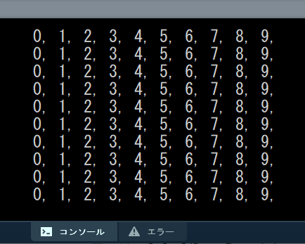
iXの値が0~9まで順番にコンソール出力され改行，という処理が繰り返されている．ネストの中のfor文が１行分のコンソール出力を行っている．

例3
ネストの中の繰り返し変数iXとiYの値をコンソール出力する例．
Code
xxxxxxxxxxfor( int iY=0; iY<10; iY++ ){ for( int iX=0; iX<10; iX++ ) { print( "X" + iX + "Y" + iY + ", " ); } println(""); // 改行}処理の流れ
外側，内側のfor文の繰り返し用変数に初期値が代入される． 内側のブロック文が最初に実行される．
内側のfor文が一巡する．（１巡目） コンソール出力のを見ると，変数
iX値が1ずつ増えていることが確認できる．
内側のfor文が終了し，次の文でコンソール出力を改行する．


外側のfor文の変数の更新と条件式の評価が実行される． 変数
iYが1に増える．内側のfor文の繰り返し用変数に初期値が代入される． 内側のブロック文が実行される．（２巡目開始） コンソール出力のを見ると，変数
iY値が1に増えていることが確認できる．
内側のfor文が一巡する．（２巡目）
以上のような処理を繰り返している．
演習10
例3のプログラムをコピーして，以下のようにコンソール出力がされるよう条件式を変更してみましょう．
演習時間2分程度

例4
ウィンドウに正円を並べて描画した例．
繰り返し変数の更新式がiY+=20，iX+=20であることに注意．
Code
xxxxxxxxxxsize( 200, 200 );background( 0 );
for( int iY = 10; iY < height; iY+=20 ){ for( int iX = 10; iX < width; iX+=20 ) { fill( iX, iY, 0 ); circle( iX, iY, 20 ); }}
例5
グラデーションのカラーチャート(矩形)
繰り返し変数の初期値
int iY=5，int iX=5で描画位置を微調整している．
Code
xxxxxxxxxxsize( 200, 200 ); // ウィンドウサイズを200×200．colorMode( HSB, 200 ); // HSB最大値を200に設定．background( 200 );
for( int iY=5; iY<200; iY+=20 ){ for( int iX=5; iX<200; iX+=20 ) { fill( iX, iY, 200 ); // 色相をiX, 彩度をiY, 輝度を200に設定． rect( iX, iY, 10, 10 ); // iX,iYの座標に10×10の大きさの矩形を描画． }}
例6
ネストの中のfor文で，複数の図形を回転させながら繰り返し描画を行う例．
座標変換の必要性を要確認．
Code
xxxxxxxxxxsize( 200, 400 );
rectMode(CENTER);for( int iY=10; iY<height; iY+=35 ) // 35ピクセルずつ下にずらす．{ pushMatrix(); translate( random(20,180), iY ); // 5つの矩形の塊の中心へ座標系の中心を移動． // 5つの矩形の塊を１つ描画． for( int iRectIdx=0; iRectIdx<5; iRectIdx++ ) { fill( 51+iY/2, 110, 20 ); rect( 15, 0, 15, 10 ); rotate( radians(72) ); // 72°回転 } popMatrix(); // translate()とrotate()で変化した座標系をリセット．}演習11
例6のプログラムに変更を加え，自由に花のような模様を作ってみましょう．
演習時間8分程度
下図は参考イメージとプログラム． 難しい場合は参考にしましょう．

Code
xxxxxxxxxxsize( 200, 400 );background(20);
rectMode(CENTER);for( int iY=10; iY<height; iY+=35 ){ pushMatrix(); translate( random( 20,180 ), iY ); // 花の中心へ座標系の中心を移動． rotate( radians( random( 5,20 ) ) ); // 花弁の初期角度をランダムに． // 8枚の花弁を描画． for( int iRectIdx=0; iRectIdx<8; iRectIdx++ ) { fill( random( 220, 250 ), 50+iY/4, 20 ); ellipse( 15, 0, 15, 10 ); rotate( radians(45) ); } // 花の中心部分． fill( 220, 200+iY/8, 10 ); circle( 0, 0, 16 ); popMatrix(); // translate()とrotate()で変化した座標系をリセット．}
条件式（論理演算）
論理演算（ブーリアン演算）
条件式を複数繋げ，条件を重ねることで行う演算のこと．
1つの条件式は真(true)か偽(false)のどちらかの結果をかえすので，これらを2つ以上用いて結果を得ることになる．
論理演算を行うには，論理演算子を用いる．
論理演算子
比較演算式による条件式と論理演算子を組み合わせ，より複雑な条件を課すことができる．
下表の条件を満たしたとき，式の結果は真(true)となり，そうでなければ偽(false)となる．
| 条件式 | 演算子 | 条件 | ベン図 | 演算 |
|---|---|---|---|---|
条件式A && 条件式B | && | 条件式Aが真，かつ条件式Bが真 |  | 論理積 AND |
条件式A || 条件式B | || | 条件式Aが真，もしくは条件式Bが真 |  | 論理和 OR |
! 条件式 | ! | 条件式が偽 |  | 否定 NOT |
※論理演算，特に!は本授業では使用頻度は高くないため，．
例1
変数iRandomが偶数かつ3の倍数であるか調べるif文
Code
xxxxxxxxxxint iRandom = floor( random(100) );
if( iRandom%2 == 0 && iRandom%3 == 0 ){ print( iRandom );}例2
変数iRandomが偶数もしくは3の倍数であるか調べるif文
Code
xxxxxxxxxxint iRandom = floor( random(100) );
if( iRandom%2 == 0 || iRandom%3 == 0 ){ print( iRandom );}例3
変数iRandomが4の倍数ではない場合に真を返す条件式
条件式を()で囲む必要がある．
Code
xxxxxxxxxxint iRandom = floor( random(100) );
if( !(iRandom%4 == 0) ){ print( iRandom );}しかし，実はこの記述は適切ではない． 下のような記述が好ましい．
Code
xxxxxxxxxxint iRandom = floor( random(100) );if( iRandom%4 != 0 ){print( iRandom );}
この記述のように，論理演算子ではなく比較演算子!=を用いるほうが適切．
例4
論理演算を使った縦縞模様の描画．
論理演算とfor文を組み合わせることで，少し複雑な周期性を表現できる．
Code
xxxxxxxxxxsize(400,200);noStroke();for( int iX = 0; iX < width; iX+=2 ) // 変数iXの値に2加えながら繰り返す．{ if( iX%3 == 0 || iX%5 == 0 ) // 変数iXの値が3か5の倍数なら { fill( 0 ); // 黒 } else { fill( 250 );// 白 } rect( iX, 10, 2, 180 ); // 縦に細い矩形を描画する．}
演習12
例1のコードのif( iX%3 == 0 && iX%5 == 0 )の部分の3,5の数値を書き換え，
異なるパターンが生成される数値の組み合わせを探してみましょう．
演習時間3分ほど
例5
for文のネストと論理演算を使った，市松模様の描画
論理演算とfor文を組み合わせることで，緑の矩形による塗分けのパターンを生成している．
Code
xxxxxxxxxxsize(800,320);background(0); // 背景色：黒noStroke();
int iCellSize = 40; // セル(四角)の大きさ．int iColumnTotal = width/iCellSize; // 列(横軸)の総数.int iRowTotal = height/iCellSize; // 行(横軸)の総数.
for( int iColumnIdx=0; iColumnIdx < iColumnTotal; iColumnIdx++ ) // 列（縦方向）の繰り返し{ for( int iRowIdx=0; iRowIdx < iRowTotal; iRowIdx++ ) // 行（横方向）の繰り返し { if( iColumnIdx%2 == 0 && iRowIdx%2 == 0 || // 列番号が偶数かつ行番号が偶数の時，もしくは， iColumnIdx%2 == 1 && iRowIdx%2 == 1 ) // 列番号が奇数かつ行番号が奇数の時 { fill(0, 124, 96); // 緑 // 行番号と列番号からXY座標値を算出する． rect( iColumnIdx*iCellSize, iRowIdx*iCellSize, iCellSize, iCellSize ); } }}
セルと番号の割り振り
各矩形に列番号及び行番号を割り振り，以下の条件を満たしたときにのみ緑の矩形を描画する．
二つの番号がどちらとも偶数，もしくは，
二つの番号がどちらとも奇数．
下のように，模様を表として考えると理解しやすくなる．

https://processing.org/reference/logicalAND.html https://processing.org/reference/logicalNOT.html https://processing.org/reference/logicalOR.html
第５回：配列
配列( array )とは
データ構造の一種．
同種のデータを複数まとめて記述したい場合に有用．
ハートウェア上でどのように実現されているかイメージで把握すると理解しやすい．
配列のハードウェア的イメージ
同一の型のデータ（変数）をメモリ上に一列に並べた構造．
変数の場合と同じく，配列の宣言をおこなうことで，この領域がメモリ上に予約（確保）される．
配列のプログラムにおける利用

配列には，その配列全体を指すための名前である配列名がついている。
並んでいる各データ（変数）を要素（element）という．
各要素は，配列名と要素番号を使って読み書きができる．
ある配列のもつ要素の総数を要素数という．
配列の最後の要素番号は
要素数-1であることに注意．
宣言
変数と同じく，配列も宣言文によって配列の宣言を行う必要がある．
構文
Code
xxxxxxxxxx要素のデータ型[] 配列名 = new 要素のデータ型[要素数];構文が変数の場合とかなり異なる点に注意．
例1
int型（整数型）の要素を10個持つ，名前がiXの配列の宣言文
Code
xxxxxxxxxxint[] iX = new int[10];確保されるメモリのイメージ
例2
float型（実数型）の要素を4個持つ，名前がfRGBAの配列の宣言文
Code
xxxxxxxxxxfloat[] fRGBA = new float[4];確保されるメモリのイメージ
要素の値を取得する
ある配列の要素の値を取得するには，下のような構文を用いる．
Code
xxxxxxxxxx配列名[ 要素番号 ]配列名と要素番号を組み合わせることで，配列の一つの要素を変数と同じように使用できる．
格納されている値の読み書きが行える．
変数と同様に式に組み込むこともできる．
要素へ値を代入する
ある配列の要素へ値を代入するには，下のような構文の文を記述する．
Code
xxxxxxxxxx配列名[ 要素番号 ] = 値;要素番号のアドレスの要素に値を代入する．
配列に初期化にもこの構文を用いる．
初期化
配列に値を代入するため，宣言文とは別に初期化を行う命令文を複数記述する必要がある．
配列の全ての要素へ値を代入する必要があり，下の例のように一つ一つ代入を行う命令文を記述する方法がある．
Code
xxxxxxxxxx配列名[0] = 値;配列名[1] = 値;配列名[2] = 値;配列名[3] = 値;配列名[4] = 値;配列名[5] = 値;...例1
int型（整数型）の要素を10個持つ，名前がiXの配列の宣言・初期化
Code
xxxxxxxxxxint[] iX = new int[10]; // 配列を宣言
// 初期化iRGBA[0] = 0;iRGBA[1] = 10;iRGBA[2] = 25;iRGBA[3] = 100;iRGBA[4] = 45;iRGBA[5] = 68;iRGBA[6] = 12;iRGBA[7] = 20;iRGBA[8] = 225;iRGBA[9] = 255;初期化を行う最後の要素の要素番号が9であることに注意．
要素数 - 1
メモリ上のイメージ

実際にメモリ上に書き込まれるのはデータ（値）である点に注意．
配列名と要素番号の組み合わせは，プログラムから各データの読み書きをおこなうために必要となる．
例2
float型（実数型）の要素を4個持つ，名前がfRGBAの配列の宣言・初期化
Code
xxxxxxxxxxfloat[] fRGBA = new float[4]; // 配列を宣言
// 初期化fRGBA[0] = 0;fRGBA[1] = 0.1;fRGBA[2] = 1.0;fRGBA[3] = 0.8;初期化を行う最後の要素の要素番号が3であることに注意．
要素数 - 1
メモリ上のイメージ

演習1
int型（整数型）の要素を4個持つ，名前がiRGBAの配列の宣言・初期化を行うプログラムを書いてみましょう．
初期値として，
0, 50, 100, 80の値を代入すること．実行しても何も表示されないが，エラーが表示されず実行が行えればよい．
演習時間3分
要素数の取得
配列は
lengthという変数を持っており，配列の要素数がを値として格納されている．下のような構文で変数として呼び出し，この値を取得することができる．
Code
xxxxxxxxxx配列名.lengthこの変数に値を代入することはできない．
読み取り専用
例
配列iXの要素数をコンソール出力
Code
xxxxxxxxxxint[] iX = new int[10]; // 配列を宣言
print( iX.length );
なぜ必要なのか
例えば，以下の配列の宣言文の場合．
Code
xxxxxxxxxxfloat[] fRGBA = new float[4];要素数は
4であり，既に明らかであるのでわざわざ要素数の取得を行う記述は必要無いように感じられる．しかし，要素数の変更に柔軟に対応するためにも，可能な限り
配列名.lengthを用いた方がよい．
for文を使った初期化
for文を使って初期化すると効率的な場合がある．
全て同じ値．
規則性のある数列．
ブロック文の中で算術式や条件式を使うことで，様々な数列を代入可能．
for文の条件式に要素数を用いることで，繰り返し回数を要素数と同じ数にする．
配列外の要素を間違って参照しようとしてしまうエラーの回避ができる．
for文を使った基本的な初期化
Code
xxxxxxxxxxfor( int iElemIdx=0; iElemIdx < 配列名.length; iElemIdx++ ){ 配列名[ iElemIdx ] = 値;}繰り返し用変数iElemIdxの変数名は，要素番号( Element Index )を元に名付けている．
例1
全ての要素に0の値を代入する．
Code
xxxxxxxxxxint[] iX = new int[10];
// 初期化for( int iElemIdx=0; iElemIdx < iX.length; iElemIdx++ ){ iX[ iElemIdx ] = 0;}例2
全ての要素に5の倍数の値を代入し，要素の値をコンソール出力．
Code
xxxxxxxxxxint[] iY = new int[10];
// 初期化for( int iElemIdx=0; iElemIdx < iY.length; iElemIdx++ ){ iY[ iElemIdx ] = iElemIdx * 5; print( iY[iElemIdx] + ", " ); // コンソール出力}繰り返し変数を使った算術式
iIdx * 5の演算結果を初期値として代入している．

宣言と同時に初期化を行う場合
宣言と同時に初期化を行う記述方法もある．
こちらを使うと後に初期化を行う命令文の記述が必要ないため，プログラムがシンプルになる．
色や形の表現に関わる要調整の値を代入する場合などはこちらを推奨．
構文
Code
xxxxxxxxxx要素のデータ型[] 配列名 = { 値0, 値1, 値2, 値3, , , , 値n };宣言だけの時と違い，
newや要素数の記述が無く，{ }の形式で記述する点に注意．文末に
;も必要．
値の数は自由に設定することができ，記述した値の数から要素数が自動的に割り出される．
例1
int型（整数型）の名前がiRGBの配列の宣言・初期化
Code
xxxxxxxxxxint[] iX = { 0, 10, 25, 100, 45, 68, 12, 20, 225, 255 };例2
float型（実数型）の名前がfRGBAの配列の宣言・初期化
Code
xxxxxxxxxxfloat[] fRGBA = { 0, 0.1, 1.0, 0.8 };
演習2
int型（整数型）の名前が
iXの配列の宣言・初期化をし，全ての要素の値をコンソール出力する．初期化の値として，以下の6つの2の倍数の数列を代入する．
0, 2, 4, 6, 8, 10,演習時間3分

https://processing.org/reference/Array.html https://processing.org/reference/arrayaccess.html
配列を使った描画
配列を使い，プログラムを効率化できる場合がある． 使い方毎に以下にまとめる．
ランダム値を配列に保存する．
random()が返す値を配列に保存することで，同じ乱数の数列を繰り返し用いることができる．
例
ランダムな線の長さをリストとして配列に保存し，回転対称の図を描画する．
Code
xxxxxxxxxxsize(300,300);
float[] fLineLength = new float[12]; // 12本の線の長さを保存する配列
for( int iLineIdx = 0; iLineIdx<fLineLength.length; iLineIdx++ ) // 配列の初期化.{ fLineLength[iLineIdx] = random( 20, 120 ); // 長さランダム20~120}
translate( width/2, height/2 ); // 原点をスクリーン中心に移動
for( int iRepIdx = 0; iRepIdx<6; iRepIdx++ ) // ６回繰り返す．{ for( int iLineIdx = 0; iLineIdx<fLineLength.length; iLineIdx++ ) // 線12本分繰り返す { line( 0, 0, fLineLength[iLineIdx], 0 ); // 線を描画． rotate( radians(5) ); // 5°回転 }}
要素番号をランダムに決定する．
random()の返す値をそのまま描画に用いてしまうと，無秩序すぎる表現となる場合が多い．事前に用意した数パターンの中からランダムに用いる値を決定することで，一定の秩序を持たせることができる．
配列に，描画に関わる数パターンの数値を代入する．
描画の際，要素番号をランダムに決定し，該当する配列の値を用いて描画を行う．
例1
４種類の大きさをランダムに用いる正円の描画
Code
xxxxxxxxxxsize( 200, 200 );
int[] iCircleSizes = { 6, 12, 18, 30 }; // Circle Size
for( int iCircleIdx = 0; iCircleIdx < 100; iCircleIdx++ ){ int iElemIdx = floor( random(4) ) % 4; // 要素番号：0~3のランダム circle( random(width), random(height), iCircleSizes[iElemIdx] );}例2
6種類のX座標値をランダムに用いる矩形の描画
Code
xxxxxxxxxxsize( 200, 200 );
int[] iRectXs = { 0, 40, 80, 120, 160, 180 }; // Rect X
for( int iRectIdx = 0; iRectIdx < 100; iRectIdx++ ){ int iElemIdx = floor( random(6) ) % 6; // 要素番号：0~5のランダム rect( iRectXs[iElemIdx], random(height), 20, 10 );}
例3
例2に，4種類の色情報(Gray値)の塗分けを加えた描画．
Code
xxxxxxxxxxsize( 200, 200 );
int[] iRectXs = { 0, 40, 80, 120, 160, 180 }; // Rect Xint[] iColorGrays = { 40, 100, 180, 255 }; // Color Gray
for( int iRectIdx = 0; iRectIdx < 200; iRectIdx++ ){ int iRectElemIdx = floor( random(iRectXs.length) ) % iRectXs.length; // 配列iRectXsの要素番号 int iColorElemIdx = floor( random(iColorGrays.length) ) % iColorGrays.length; // 配列iColorGraysの要素番号 fill( iColorGrays[iColorElemIdx] ); rect( iRectXs[iRectElemIdx], random(height), 20, 10 );}この例のように，配列の要素数を取得するrandom(iRectXs.length)，iColorGrays.lengthを数値の代わりに用いるとより効率的．

演習3
下のプログラムはまだ未完成であり，完全にランダムな色の正方形を描画してしまっている． このプログラムに変更を加え，数パターンの色の組み合わせからランダムに色が描画されるように完成させてみましょう．
色のパターンは自由な値を入力してください．
演習時間：5分程度
Code
xxxxxxxxxxsize(400,400);
int[] iColorR = { 0, 0, 0, 0 }; // 未完成：値が入力されていない．int[] iColorG = { 0, 0, 0, 0 }; // 未完成：値が入力されていない．int[] iColorB = { 0, 0, 0, 0 }; // 未完成：値が入力されていない．
for( int iY = 0; iY < height; iY+=20 ){ for( int iX = 0; iX < width; iX+=20 ) { int iElemIdx = floor( random(4) ) % 4; // 要素番号0~3の乱数． fill( random(255), random(255), random(255) ); // 未完成：ランダムな色になってしまっている． square( iX, iY, 20 );
} }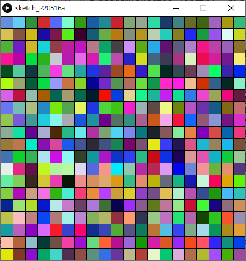
作例

配列に数列を代入し，描画に用いる．
配列の初期化の際，for文において任意の数列を代入するよう記述する．
描画の際，配列の要素番号によってパターンを選択する．
例1
10で始まり，10ずつ増える数列を配列に代入し， 配列の要素を昇順矩形を描画する．
Code
xxxxxxxxxxint iRectWidth = 12; // 矩形の幅.size( 200, 200 ); int[] iRectHeight = new int[16]; // 配列iRectHeightを宣言(矩形の高さのリスト)for( int iIdx=0; iIdx < iRectHeight.length; iIdx++ ) // 初期化{ iRectHeight[ iIdx ] = 10 + iIdx*10; // 10,20,30....と代入.}colorMode( HSB, 3, iRectHeight.length, 1 ); // 彩度のMaxを配列の要素数に
// 矩形リストを昇順に描画.for( int iIdx=0; iIdx < iRectHeight.length; iIdx++ ) // 要素番号順に繰り返し(0~max){ fill( 0, iIdx, 1 ); // R,彩度=要素番号 rect( 0, height-iRectHeight[iIdx], iRectWidth, iRectHeight[iIdx] ); translate( iRectWidth, 0 );}
例2
例1で用いた配列を再利用し，降順とランダムのパターンの描画を行った例．
Code
xxxxxxxxxx// 矩形の高さリスト（配列）から，矩形を描画する．(3パターン)int iRectWidth = 8; // 矩形の幅.size( 208, 100 ); int[] iRectHeight = new int[8]; // 配列iRectHeightを宣言(矩形の高さのリスト)for( int iIdx=0; iIdx < iRectHeight.length; iIdx++ ) // 初期化{ iRectHeight[ iIdx ] = 10 + iIdx*10; // 10,20,30....と代入.}
colorMode( HSB, 3, iRectHeight.length, 1 ); // 彩度のMaxを配列の要素数に
// 矩形リストを昇順に描画.for( int iIdx=0; iIdx < iRectHeight.length; iIdx++ ){ fill( 0, iIdx, 1 ); rect( 0, height-iRectHeight[iIdx], iRectWidth, iRectHeight[iIdx] ); translate( iRectWidth, 0 );}
translate( iRectWidth, 1 );
// 矩形リストを降順に描画.for( int iIdx=iRectHeight.length - 1; iIdx >= 0; iIdx-- ){ fill( 1, iRectHeight.length-iIdx, 1 ); rect( 0, height-iRectHeight[iIdx], iRectWidth, iRectHeight[iIdx] ); translate( iRectWidth, 0 );}
translate( iRectWidth, 1 );
// 矩形リストをランダム順に描画.for( int iIdx=0; iIdx < iRectHeight.length; iIdx++ ){ int iRandIdx = floor( random( iRectHeight.length ) ); fill( 2, iIdx, 1 ); rect( 0, height-iRectHeight[iRandIdx], iRectWidth, iRectHeight[iRandIdx] ); translate( iRectWidth, 0 );}
２次元配列
これまで説明したのは１次元の配列．
２次元配列の宣言は 以下のような記述となる．
Code
xxxxxxxxxxint[][] iArray = new int[3][4];この記述は概念上は下図のようになる．

メモリ上での配置は下図のようになる．

このようなメモリ上での配置は直観的に理解しづらいので，概念図で理解したほうが好ましい．
２次元配列は，配列名，2つの要素番号を使って指定のデータにアクセスする．
宣言
構文
Code
xxxxxxxxxx要素のデータ型[][] 配列名 = new 要素のデータ型[行数][列数];例1
int型の行数4, 列数2の２次元配列iXYを宣言する．
Code
xxxxxxxxxxint[][] iXY = new int[4][2];
例2
float型の行数6, 列数3の２次元配列fRGBを宣言する．
Code
xxxxxxxxxxfloat[][] fRGB = new float[6][4];
要素数の取得
構文
行の要素数の取得
Code
xxxxxxxxxx配列名.length列の要素数の取得
Code
xxxxxxxxxx配列名[行番号].length列の要素数を取得するには，形式上は行番号を指定する必要があるが，
通常は以下のように，0でよい．
Code
xxxxxxxxxx配列名[0].length概念
例えば以下の記述は，概念上は下図のようになる．
Code
xxxxxxxxxxint[][] iArray = new int[3][4];
例
int型の行数が3，列数が4である2次元配列iArrayの行と列の要素数をコンソール出力する．
Code
xxxxxxxxxxint[][] iArray = new int[3][4];
print( "iArray.length: " +iArray.length + ", " );print( "iArray.length[0]: " +iArray[0].length );
for文を使った初期化
１次元配列と同様に，２次元配列も初期化が必要．
ただし，for文を使う場合，for文のネストを記述する必要がある．
繰り返し回数として，要素数を取得し，使用するとより確実．
行数と列数それぞれの要素数を取得する方法が多少紛らわしい点に注意．
for文を使った基本的な初期化
Code
xxxxxxxxxx要素のデータ型[][] 配列名 = new 要素のデータ型[行数][列数];for( int iRowIdx=0; iRowIdx < 配列名.length; iRowIdx++ ){ for( int iColumnIdx=0; iColumnIdx < 配列名[iRowIdx].length; iColumnIdx++ ) { 配列名[iRowIdx][iColumnIdx] = 0; }}行はロウ（ Row ），列はカラム（Column）という． 繰り返し変数名はそれらに準じている．
例1
int型の行数3,列数4である２次元配列iAを宣言し，全ての要素を0で初期化する例．
Code
xxxxxxxxxxint[][] iA = new int[3][4]; for( int iRowIdx=0; iRowIdx < iA.length; iRowIdx++ ){ for( int iColumnIdx=0; iColumnIdx < iA[iRowIdx].length; iColumnIdx++ ) { iA[iRowIdx][iColumnIdx] = 0; }}例2
int型の行数4,列数5である２次元配列iValuesを宣言し，全ての要素を4で初期化する． さらに配列を表状にコンソール出力する．
Code
xxxxxxxxxxint[][] iValues = new int[4][5];
// 列の見出し表示.print( " " );for( int iColumnIdx=0; iColumnIdx < iValues[0].length; iColumnIdx++ ){ print( "列"+iColumnIdx );}println("");
for( int iRowIdx=0; iRowIdx < iValues.length; iRowIdx++ ){ print( "行"+iRowIdx+": " ); // 行の見出し表示. for( int iColumnIdx=0; iColumnIdx < iValues[iRowIdx].length; iColumnIdx++ ) { iValues[iRowIdx][iColumnIdx] = 4; print( iValues[iRowIdx][iColumnIdx]+", " ); // 値をそのまま表示. } println(""); // 改行するだけ．}
演習4
int型の行数5,列数2である２次元配列iXYを宣言し，全ての要素を10で初期化するプログラムを書いてみましょう．
演習時間3分
宣言+初期化
１次元配列と同様に，２次元配列も宣言と初期化を同時に行うことができる.
要素数の記入は省略される．
少しややこしいが，
{}内に列の値を列挙し，さらにそれを{}で入れ子にする．行ごとに改行しながら入力すれば，表の概念図と対応する並びになるので理解しやすい．
行数3,列数4の２次元配列の場合，以下のように記述する．
Code
xxxxxxxxxx// 行数3,列数4の場合要素のデータ型[][] 配列名 = { { 列0値, 列1値，列2値，列3値 }, // 行0 { 列0値, 列1値，列2値，列3値 }, // 行1 { 列0値, 列1値，列2値，列3値 } }; // 行2例1
int型の行数4,列数2である２次元配列iXYの宣言と初期化．
Code
xxxxxxxxxxint[][] iA = { { 0, 0 }, { 0, 12 }, { 20, 40 }, { 80, 90 } };例2
float型の行数3,列数4である２次元配列fRGBの宣言と初期化を行う． さらに配列を表状にコンソール出力する．
Code
xxxxxxxxxxfloat[][] fRGB = { { 1.0, 0.5, 0.0 }, { 1.0, 0.6, 0.1 }, { 0.9, 0.6, 0.3 }, { 0.8, 0.5, 0.5 } };// 列の見出し表示.print( " " );for( int iColumnIdx=0; iColumnIdx < fRGB[0].length; iColumnIdx++ ){ print( "列"+iColumnIdx+" " );}println("");
for( int iRowIdx=0; iRowIdx < fRGB.length; iRowIdx++ ){ print( "行"+iRowIdx+": " ); // 行の見出し表示. for( int iColumnIdx=0; iColumnIdx < fRGB[iRowIdx].length; iColumnIdx++ ) { print( fRGB[iRowIdx][iColumnIdx]+", " ); // 値をそのまま表示. } println(""); // 改行するだけ．}
演習5
int型の行数3,列数2である２次元配列iXYを宣言し，宣言と初期化を同時に行うプログラムを書いてみましょう．
初期化で代入する値は 0~99の間の値であれば何でもよい．
演習時間3分
２次元配列を使った描画
多角形描画
多角形は複数の頂点XY座標もつ．
この値を２次元配列に格納すると，プログラムが効率化できる．
例えば以下の配列は，下図のように各頂点のXY座標値をもつ表として考えることができる．
Code
xxxxxxxxxxint[][] iVertexes = { { 30, 40 },{ 110, 20 },{ 180, 80 },{ 140, 180 },{ 40, 150} };

各行が多角形それぞれの頂点を表す．
列0は各頂点のX座標値，列1は各頂点のY座標値を表す．
例えば，
iVertexes[2][1]には頂点1のY座標値を格納することになる．
例1
五つの頂点をもつ多角形の描画．
Code
xxxxxxxxxxsize( 200, 200 );
int[][] iVertexes = { { 30, 40 }, { 110, 20 }, { 180, 80 }, { 140, 180 }, { 40, 150} };
strokeWeight( 4 );
beginShape();for( int iVertexIdx=0; iVertexIdx < iVertexes.length; iVertexIdx++ ){ vertex( iVertexes[iVertexIdx][0], iVertexes[iVertexIdx][1] );}endShape(CLOSE);描画結果と頂点の対応は下図のようになる．

例2
多角形を回転させながら複数描画する． 実行する度にランダムな図形が描画される.
Code
xxxxxxxxxxint iRepeatTotal = 12; // 多角形繰り返しの数.
size( 300, 300 );
float[][] fVertexes = new float[4][2];
// 配列初期化for( int iVertexIdx=0; iVertexIdx < fVertexes.length; iVertexIdx++ ){ fVertexes[iVertexIdx][0] = random( width/3 ); // スクリーンサイズの三分の一までの値からランダム. fVertexes[iVertexIdx][1] = random( height/3 );}
// 色相の最大値を多角形繰り返しの数に設定colorMode( HSB, iRepeatTotal, 1, 1 );
// 原点をスクリーン中心に移動translate( width/2, height/2 );
// 回転しながら多角形の繰り返し描画.for( int iRepIdx=0; iRepIdx < iRepeatTotal; iRepIdx++ ){ fill( iRepIdx, 1, 1 ); // 回転毎に色相を変える. beginShape(); vertex( 0, 0 ); // スクリーン中心 // 頂点の数分繰り返し for( int iVertexIdx=0; iVertexIdx < fVertexes.length; iVertexIdx++ ) { vertex( fVertexes[iVertexIdx][0], fVertexes[iVertexIdx][1] ); } endShape(CLOSE); // 座標系を回転． rotate( radians(360/iRepeatTotal) );}
複数の色情報
カラー値は複数チャンネルの値をもつ．
R値，G値，B値
H値，S値，B値
これらの値を２次元配列に格納すると，プログラムが効率化できる．
RGB情報の記述
例えば以下の配列は，下図のようにR,G,B値をもつ表として考えることができる．
Code
xxxxxxxxxxint[][] iRGB = { { 255, 100, 100 }, { 230, 230, 230 }, { 80, 160, 0 }, { 230, 215, 0 }, { 180, 185, 0 } };
HSB情報の記述
例えば以下の配列は，下図のようにH,S,B値をもつ表として考えることができる．
Code
xxxxxxxxxxint[][] iHSB = { { 0, 80, 80 }, { 60, 80, 80 }, { 230,60, 80 }, { 300,15, 80 } };例1
HSB配列を使った格子形状の描画．
Code
xxxxxxxxxxsize( 400,400 );background(0);
int[][] iHSB = { { 0, 80, 80 }, { 60, 80, 80 }, { 230,60, 80 }, { 300, 1, 90 } };
colorMode( HSB, 360, 100, 100 );
for( int iY = 0; iY < height; iY+=20 ){ for( int iX = 0; iX < width; iX+=20 ) { int iColorIdx = floor( random( iHSB.length ) ); // 行番号をランダムで選択:0~3 fill( iHSB[iColorIdx][0], iHSB[iColorIdx][1], iHSB[iColorIdx][2] ); square( iX, iY, 20 ); }}
例2
RGB配列を使った様々な図形の描画．
Code
xxxxxxxxxxsize( 400,400 );background(0);
int[][] iRGB = { { 255, 100, 100 }, { 230, 230, 230 }, { 80, 160, 0 }, { 230, 215, 0 }, { 180, 185, 0 } };
translate( 40, 40 );
// 矩形描画rectMode(CENTER);for( int iRectIdx = 0; iRectIdx < 5; iRectIdx++ ){ fill( iRGB[iRectIdx][0], iRGB[iRectIdx][1], iRGB[iRectIdx][2] ); square( iRectIdx*80, 0, 80 );}
translate( 0, 80 );
// 正円描画for( int iCircleIdx = 0; iCircleIdx < 5; iCircleIdx++ ){ fill( iRGB[iCircleIdx][0], iRGB[iCircleIdx][1], iRGB[iCircleIdx][2] ); circle( iCircleIdx*80, 0, 80 );}
translate( 0, 80 );
// 三角形描画for( int iTriangleIdx = 0; iTriangleIdx < 5; iTriangleIdx++ ){ fill( iRGB[iTriangleIdx][0], iRGB[iTriangleIdx][1], iRGB[iTriangleIdx][2] ); triangle( iTriangleIdx*80, -40, iTriangleIdx*80-40, 40, iTriangleIdx*80+40, 40 );}
translate( 0, 80 );
// 弧描画for( int iArcIdx = 0; iArcIdx < 5; iArcIdx++ ){ fill( iRGB[iArcIdx][0], iRGB[iArcIdx][1], iRGB[iArcIdx][2] ); arc( iArcIdx*80, 0, 80, 80, radians(45), radians(270), PIE );}
translate( 0, 80 );
// 多角形描画for( int iPolygonIdx = 0; iPolygonIdx < 5; iPolygonIdx++ ){ fill( iRGB[iPolygonIdx][0], iRGB[iPolygonIdx][1], iRGB[iPolygonIdx][2] ); beginShape(); vertex( iPolygonIdx*80-40, -40 ); vertex( iPolygonIdx*80+40, -40 ); vertex( iPolygonIdx*80+40, 40 ); endShape(CLOSE);}演習6
以下のサンプルを改良し，より豊かな表現を行ってみましょう．
色のパターンを増やす．
背景や線に色を指定する．
if文を使って図形の大きさを変化させる．
演習時間
HSB配列を使った正円を格子状に並べた描画．
Code
xxxxxxxxxxsize( 400,400 );int[][] iHSB = { { 0, 0, 0 },{ 0, 0, 100 } };colorMode( HSB, 360, 100, 100 );ellipseMode(CORNER);for( int iY = 0; iY < height; iY+=20 ){for( int iX = 0; iX < width; iX+=20 ){int iColorIdx = floor( random( iHSB.length ) ); // 行番号をランダムで選択:0~3fill( iHSB[iColorIdx][0], iHSB[iColorIdx][1], iHSB[iColorIdx][2] );circle( iX, iY, 20 );}}

作例
16分の1の確率で円を大きくする．
円の大きさに比例して枠線を太くする．
Code
xxxxxxxxxxsize( 400,400 );background( 0, 0, 20 );
int[][] iHSB = { { 10, 40, 80 }, { 120, 80, 70 }, { 280, 60, 60 }, { 90, 90, 60 }, { 340, 70, 100 } };
colorMode( HSB, 360, 100, 100, 100 );
for( int iY = 10; iY < height; iY+=20 ){ for( int iX = 10; iX < width; iX+=20 ) { int iColorIdx = floor( random( iHSB.length ) ); // 行番号をランダムで選択 fill( iHSB[iColorIdx][0], iHSB[iColorIdx][1], iHSB[iColorIdx][2], 60 ); int iCircleSize = floor( random(12,28)); if( floor(random(16))%16 == 0 ) // 16分の1の確率で円を大きくする． { iCircleSize = floor( random(60,260)); stroke( 10, 2, 2 ); strokeWeight(iCircleSize/14); // 円の大きさに比例して枠線も太くする． } else { noStroke(); } strokeWeight(iCircleSize/14); // 円の大きさに比例して枠線も太くする． circle( iX, iY, iCircleSize ); }}
参考: ルール９０セル・オートマトン
セル・オートマトンとは，格子状に配置されたセルがそれぞれ状態を持ち，隣接している周囲のセルの状態をもとに，時間とともに状態を遷移させていくモデル．
２次元配列を使って表現することができる．
一定のルールを与えることで，単純な規則から複雑な結果を得ることができる．
初期状態

隣接するセルの合計が次の(行の)値になる
このルールをさらに次の行へと進めていく．

奇数のセルを描画する
プログラム中では奇数を1，偶数を0として配列に格納している．

制作手順
今回制作するプログラムでは，セル=ピクセルと考える．
二次元配列の宣言，初期化 格子状のセルを表す配列を用意する．
Code
xxxxxxxxxxsize(500,500);int[][] cell = new int[width][height]; // スクリーンサイズ分の配列.for(int iY=0; iY<height; iY++) // 列の繰り返し{for(int iX=0; iX<width; iX++) // 行の繰り返し{cell[iX][iY]=0;}}初期状態の入力
最初の行の中心のセルを1，それ以外は0
初期状態の唯一のセルを描画
※以上の処理をステップ1のプログラムの後に追加する．
Code
xxxxxxxxxxsize(500,500);int[][] cell=new int[width][height]; // スクリーンサイズ分の配列.for(int iY=0; iY<height; iY++) // 列の繰り返し{for(int iX=0; iX<width; iX++) // 行の繰り返し{cell[iX][iY]=0;}}cell[width/2][0]= 1; // 初期状態：最初の行の中心のセルを1，それ以外は0point( width/2, 0 ); // 描画.隣接するセルの合計が次の(行の)値になる．
for文のネストによる繰り返し
※以上の処理をステップ2のプログラムの後に追加する．
Code
xxxxxxxxxxsize(500,500);int[][] cell=new int[width][height]; // スクリーンサイズ分の配列.for(int iY=0; iY<height; iY++) // 列の繰り返し{for(int iX=0; iX<width; iX++) // 行の繰り返し{cell[iX][iY]=0;}}cell[width/2][0]= 1; // 初期状態：最初の行の中心のセルを1，それ以外は0point( width/2, 0 ); // 描画.for(int iY=1; iY<height; iY++) // ２行目から繰り返し開始．{for(int iX=0; iX<width; iX++) // 列0から繰り返し．{// 隣接するセルの合計が偶数なら0,奇数なら1をセルの値に代入.cell[iX][iY] = ( cell[iX-1][iY-1] + cell[iX+1][iY-1] )%2;if( cell[iX][iY] == 1 ) // もしもセルの値が1なら.{point( iX, iY );}}}スクリーン両端の処理 ステップ3のままだと
iX-1の値がマイナスになったり，iX+1の値が配列の要素番号の最大を超えてしまう． ※ステップ3までのプログラムを書き換えると以下のようになる．
完成したプログラム
Code
xxxxxxxxxxsize(500, 500);
int[][] cell=new int[width][height]; // スクリーンサイズ分の配列.for(int iY=0; iY<height; iY++) // 列の繰り返し{ for(int iX=0; iX<width; iX++) // 行の繰り返し { cell[iX][iY]=0; }}
cell[width/2][0]= 1; // 初期状態：最初の行の中心のセルを1，それ以外は0point( width/2, 0 ); // 初期状態の唯一のセルを描画.
for(int iY=1; iY<height; iY++) // ２行目から繰り返し開始．{ for(int iX=0; iX<width; iX++) // 列0から繰り返し． { if( iX == 0 ) // スクリーン左端の処理. { cell[iX][iY] = ( 0 + cell[iX+1][iY-1] )%2; } else if( iX == width-1 ) // スクリーン右端の処理. { cell[iX][iY] = ( cell[iX-1][iY-1] + 0 )%2; } else { // 隣接するセルの合計が偶数なら0,奇数なら1をセルの値に代入. cell[iX][iY] = ( cell[iX-1][iY-1] + cell[iX+1][iY-1] )%2; } if( cell[iX][iY] == 1 ) // もしもセルの値が1なら. { point( iX, iY ); } }}
初期状態（一行目のセルの状態）を変える
巻貝の表面模様のような画像が生成される． この例では最初の行のセルの値が0か1かを全てランダムに決定している．
Code
xxxxxxxxxxsize(500,500);
int[][] cell=new int[width][height]; // スクリーンサイズ分の配列.
for(int iY=0; iY<height; iY++) // 列の繰り返し{ for(int iX=0; iX<width; iX++) // 行の繰り返し { cell[iX][iY]=0; }}
// 初期状態：最初の行のセルの値を全てランダムfor(int iX=0; iX<width; iX++){ cell[iX][0]= floor( random( 100 ) )%2; if( cell[iX][0] == 1 ) // もしもセルの値が1なら，1行目を描画. { point( iX, 0 ); }}
for(int iY=1; iY<height; iY++) // ２行目から繰り返し開始．{ for(int iX=0; iX<width; iX++) { if( iX == 0 ) // スクリーン左端の処理. { cell[iX][iY] = ( 0 + cell[iX+1][iY-1] )%2; } else if( iX == width-1 ) // スクリーン右端の処理. { cell[iX][iY] = ( cell[iX-1][iY-1] + 0 )%2; } else { // 隣接するセルの合計が偶数なら0,奇数なら1をセルの値に代入. cell[iX][iY] = ( cell[iX-1][iY-1] + cell[iX+1][iY-1] )%2; } if( cell[iX][iY] == 1 ) // もしもセルの値が1なら. { point( iX, iY ); } }}
多次元配列
配列の次元数は二次元以上にも増やすことができる．
しかし，次元が増えるほど人にとっては直感的に理解しにくくなる．
使用頻度も少ない．
int型の３次元配列の宣言文の例
Code
xxxxxxxxxxint [][][] iRGBColor = new int[3][640][480];
例1
ピクセル毎のRGB値を持つ３次元配列を使った描画．
Code
xxxxxxxxxxint iColorMax = 100;
size(400,400);
int[][][] iColor = new int[3][width][height]; // 初期化
for(int iRGB = 0; iRGB < iColor.length; iRGB++ ){ for(int iX = 0; iX < width; iX++ ) { for(int iY = 0; iY < height; iY++ ) { iColor[iRGB][iX][iY] = 0; } }}
// 色決定for(int iX = 0; iX < width; iX++ ){ for(int iY = 0; iY < height; iY++ ) { if( iX < width / 3 ) { iColor[0][iX][iY] = iColorMax; //R } if( iY < height / 3 ) { iColor[1][iX][iY] = iColorMax; //G } if( iX + iY > height ) { iColor[2][iX][iY] = iColorMax; //B 右下の三角形 } }}
// 全チャンネルを参照し，画素RGB描画colorMode(RGB,iColorMax);for(int iX = 0; iX < width; iX++ ){ for(int iY = 0; iY < height; iY++ ) { stroke(iColor[0][iX][iY], iColor[1][iX][iY], iColor[2][iX][iY]); point(iX,iY); }}
第６回：アニメーション
アニメーションの基礎知識
動画のフレームとは
動画を構成する一枚一枚の静止画（コマ）のこと
人間の目で動いているように見せるため，ごく短い時間間隔で切り替わっている．
フレームレートとは
動画の滑らかさの指標．
fps ( frames per second )
1秒間に書き換えるフレームの数，フレーム毎秒．
Processing でもこれを指定することでフレームレートを指定できる．
StaticモードとActiveモード
Staticモード
これまでの静止画を描画するモード．
プログラムが上から書いた順番に実行され，終了する．
Activeモード
アニメーションを行う場合，Activeモードでプログラムを記述する必要がある．
全体のプログラムを二つのブロックに分けて記述する．
初期設定
開始時に１度だけ処理を行う．
描画
毎フレーム処理を行う．
プログラムは終了命令が下されるまで終了しない．
静止画の描画も行えるので，ほぼStaticモードの上位互換．
アニメーション入門
Activeモードを使い，アニメーションを行うプログラムの作成を始めてみましょう．
1. 空のsetup()とdraw()を記述する．
Code
xxxxxxxxxxvoid setup(){
}
void draw(){
}プログラミングの開始時に，このような枠を記述してしまいましょう．
2. setup()ブロック内で初期化を行う．
プログラム実行時に，最初に１度だけ実行する（命令）文を記述する．
よく使われる命令
画面のサイズ
size()背景色
background()カラーモード
colorMode()フレームレート
frameRate()
例
setup()ブロック内で初期化を行う記述例．
Code
xxxxxxxxxxvoid setup(){ size( 200, 200 ); frameRate( 4 ); colorMode( RGB, 255 ); background( 211, 211, 211 );}
void draw(){
}ブロック内のインデントをしっかり行うこと．
3. draw()ブロック内で描画を行う．
ブロックの中の命令文が繰り返し実行される．
setup()が実行された直後．
frameRate()で指定した頻度で繰り返される．例えば，
frameRate( 30 );// フレームレート30fpsなら，１秒間に30回実行される．
draw()の終了時にスクリーン（描画）を更新する．
よく使われる命令
図形描画
point(), line(), rect(), ellipse()など繰り返しfor文
条件分岐if文
変数への代入，算術式など
例
ランダムな大きさ，色の正円を描画するアニメーション
Code
xxxxxxxxxxvoid setup(){ size( 200, 200 ); frameRate( 4 ); colorMode( RGB, 255 ); background( 211, 211, 211 );}
void draw(){ // ランダムな大きさ，色の正円を描画する． fill( random(255), random(255), random(255) ); circle( width/2, height/2, random(10, 180) );}
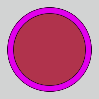
演習1
ランダムな点描アニメーション
下の動画のように，ランダムな位置・色の点（ドット）の描画アニメーションを作成してみましょう．
演習時間8分程度

以下の手順を参考にしてください．
1. 空のsetup()とdraw()を記述する．
Code
xxxxxxxxxxvoid setup(){}void draw(){}2. 初期化処理．
setup()ブロックに以下の処理を記述する．
「スクリーンサイズ: 200×200」
「背景色: 黒
0, 0, 0」
Code
xxxxxxxxxxvoid setup(){ size(200, 200); background( 0, 0, 0 );}void draw(){}3. 点を描画する．
draw()ブロックに以下の処理を記述する．
「線の太さ: 0~4のランダム」
「線の色: RGB全て0~255のランダム」
「点の描画: XY座標値がスクリーン上のランダムな位置」
Code
xxxxxxxxxxvoid setup(){ size(200, 200); background( 0, 0, 0 );}void draw(){ strokeWeight( random(4) ); stroke( random(255), random(255), random(255) ); point( random(width), random(height) ); // 点の描画}
Activeモードで静止画のプログラム書く場合
setup()ブロック内に描画命令を書くだけ． draw()は必要ない．
Code
xxxxxxxxxxvoid setup(){ size( 200, 200 ); frameRate( 4 ); colorMode( RGB, 255 ); background( 211, 211, 211 );
// ランダムな大きさ，色の正円を描画する． fill( random(255), random(255), random(255) ); circle( width/2, height/2, random(10, 180) );}Activeモードまとめ
1回だけしか実行されない命令 →
setup()ブロック内に記述する．アニメーションのように，毎フレーム実行される命令 →
draw()ブロック内に記述する．静止画の描画 →
setup()ブロック内に描画命令を書く
https://processing.org/reference/setup_.html https://processing.org/reference/draw_.html
アニメーションの基本
フレームレートの設定
１秒間に描画を行う（draw()が実行される）回数を指定できる．
特に指定をしない場合，デフォルトは60fpsとなる．
構文
Code
xxxxxxxxxxframeRate( fps );例
フレームレート30fps
Code
xxxxxxxxxxvoid setup(){ frameRate( 30 );}https://processing.org/reference/frameRate_.html
画面のリフレッシュ
draw()は，前フレームの描画結果の上に新しい描画を重ねて行ってしまう．フレームごとに画面をリフレッシュしたい場合は，以下のコードのように，背景と同じ色の矩形を画面全体に描画する事で行う．
Code
xxxxxxxxxxvoid draw(){ // 画面のリフレッシュ. fill( 0, 0, 0 ); // 背景色 rect( 0, 0, width, height );}例
ランダムな矩形を１つ描画するアニメーション
Code
xxxxxxxxxxvoid setup(){ size( 128, 128 ); frameRate( 1 ); background( 0, 0, 0 );}void draw(){ // 画面のリフレッシュ. fill( 0, 0, 0 ); rect( 0, 0, width, height ); // ランダム矩形の描画. fill( random( 170, 250 ), random( 100, 150 ), 200 ); rect( random( width ), random( height ), 20, 20 );}
アルファ値を使った画面リフレッシュ
以下のコードのように，半透明の矩形を用いて画面をリフレッシュすることで，少しずつ古い図形が消えていくような表現が実現できる．
Code
xxxxxxxxxxvoid draw(){ // 画面のリフレッシュ. fill( 0, 0, 0, 100 ); // アルファ値：100 rect( 0, 0, width, height );}例
ランダムな矩形を１つずつ描画し，徐々に消えていくアニメーション
Code
xxxxxxxxxxvoid setup(){ size( 128, 128 ); frameRate( 1 ); colorMode( HSB, 360, 1, 1 ); background( 0, 0, 0 );}void draw(){ // 画面のリフレッシュ. fill( 0, 0, 0, 100 ); // アルファ値：100 rect( 0, 0, width, height ); // ランダム矩形の描画. fill( 170 + random(80), 100 + random(50), 200 ); rect( random(width), random(height), 20, 20 );}
演習2
演習1で作成したプログラムに，以下の処理を追加してみましょう．
フレームレートを 4 に設定する．
画面を黒色
( 0, 0, 0 )で毎フレームリフレッシュする．
演習時間5分程度

以下，演習1のプログラム．
Code
xxxxxxxxxxvoid setup(){ size(200, 200); background( 0, 0, 0 );}void draw(){ strokeWeight( random(4) ); stroke( random(255), random(255), random(255) ); point( random(width), random(height) ); // 点の描画}
変数によるアニメーション
描画フレーム毎に変数の値を変化させることで，アニメーションの表現の幅が広がる．
その際の変数として，グローバル変数を用いる．
グローバル変数
ブロックの外で宣言すればグローバル変数となる．
setup()やdraw()のブロックに入れないこと．
グローバル変数に対して，ローカル変数も存在する．
※詳しくは，後の「変数のスコープ」のセクションで解説する．
例
グローバル変数iXを使い，矩形のX座標値を変化させるアニメーション
Code
xxxxxxxxxxint iX; // グローバル変数の宣言
void setup(){ iX = 0; // グローバル変数の初期化}void draw(){ iX = iX + 5; square( iX, 40, 20 );}
グローバル変数iXの宣言文が，setup()やdraw()のブロックの外に記述されていることを確認してください．
グローバル変数の宣言文は，基本的にはプログラムの一番上に記述する．
演習3
正方形がウィンドウ左から右へ移動を繰り返すアニメーションを作成してみましょう．

以下の手順を参考にしてください．
1. 空のsetup()とdraw()を記述する．
setup()とdraw()，及びそれらのブロックを記述する．
Code
xxxxxxxxxxvoid setup(){}void draw(){}2. 初期化処理を追加する．
setup()ブロックに以下の処理を記述する．
「スクリーンサイズ: 200×200」
「フレームレート: 8 (fps)」
Code
xxxxxxxxxxvoid setup(){ size( 200, 200 ); frameRate( 8 );}
void draw(){}3. グローバル変数を追加する．
int型のグローバル変数iXの宣言文を記述する．setup()ブロックに以下の処理を記述する．「
iXに0を代入して初期化する．」
Code
xxxxxxxxxxint iX; // グローバル変数の宣言
void setup(){ size( 200, 200 ); frameRate( 8 ); iX = 0; // iXの初期化}
void draw(){}4. 正方形を描画する．
draw()ブロックに以下の処理を記述する．
「大きさが20である白色の正方形を，座標( iX, height/2-10 )に描画する．」

Code
xxxxxxxxxxint iX;
void setup(){ size( 200, 200 ); frameRate( 8 ); iX = 0;}
void draw(){ fill( 255, 255, 255 ); // White square( iX, height/2-10, 20 ); // 正方形描画}5. 正方形を動かす．
draw()ブロックに以下の処理を記述する．
「iXに4を足す．（加算）」

Code
xxxxxxxxxxint iX;
void setup(){ size( 200, 200 ); frameRate( 8 ); iX = 0;}
void draw(){ iX += 4; // フレーム毎に4を足す fill( 255, 255, 255 ); square( iX, height/2-10, 20 );}6. スクリーンのリフレッシュ処理の追加
draw()ブロックに以下の処理を記述する．
「スクリーンを黒でリフレッシュする．」

Code
xxxxxxxxxxint iX;
void setup(){ size( 200, 200 ); frameRate( 8 ); iX = 0;}
void draw(){ fill( 0, 0, 0 ); // 黒 rect( 0, 0, width, height ); // スクリーンのリフレッシュ iX += 4;
fill( 255, 255, 255 ); square( iX, height/2-10, 20 );}7. スクリーンの外に出たら左端に戻す．
draw()ブロックに以下の処理を記述する．
「もしiX値がスクリーン幅の値より大きかったらiX値を0に戻す．」
Code
xxxxxxxxxxint iX;
void setup(){ size( 200, 200 ); frameRate( 8 ); iX = 0;}
void draw(){ fill( 0, 0, 0 ); rect( 0, 0, width, height ); iX += 4; if( iX > width ) // もしX座標値がスクリーンの外なら { iX = 0; // X座標値を0に戻す }
fill( 255, 255, 255 ); square( iX, height/2-10, 20 );}
演習4
sin()を用いた単振動アニメーションを作成してみましょう．

以下の手順を参考にしてください．
1. 空のsetup()とdraw()を記述する．
setup()とdraw()，及びそれらのブロックを記述する．
Code
xxxxxxxxxxvoid setup(){}
void draw(){}2. 初期化処理を追加する．
setup()ブロックに以下の処理を記述する．
「スクリーンサイズ: 200×200」
「フレームレート: 20 (fps)」
Code
xxxxxxxxxxvoid setup(){ size( 200, 200 ); frameRate( 20 );}
void draw(){}3. グローバル変数を追加する．
int型のグローバル変数iDegreeの宣言文を記述する．setup()ブロックに以下の処理を記述する．「
iDegreeに0を代入して初期化する．」
Code
xxxxxxxxxxint iDegree; // グローバル変数の宣言
void setup(){ size( 200, 200 ); frameRate( 20 ); iDegree = 0; // iDegreeの初期化}
void draw(){}グローバル変数iDegreeは，単振動における角度[0~360]°を保存するために用いる．
4. 正円を描画する．
draw()ブロックに以下の処理を記述する．
「大きさが20である白色の正円を，座標( 0, 90 * sin( radians(iDegree) ), 20 )に描画する．」

Code
xxxxxxxxxxint iDegree;
void setup(){ size( 200, 200 ); frameRate( 20 ); iDegree = 0;}
void draw(){ // 正円の描画 fill( 255, 255, 255 ); circle( 0, 90 * sin( radians(iDegree) ), 20 );}以上の記述により，正円の描画Y座標値が[-90~90]の間で変化する．
sin()自体は[-1~1]の間の値を返す．
5. 正円を動かす．
draw()ブロックに以下の処理を記述する．
「iDegreeに4を足す．（加算）」

Code
xxxxxxxxxxint iDegree;
void setup(){ size( 200, 200 ); frameRate( 20 ); iDegree = 0;}
void draw(){ iDegree += 4; // iDegreeに4を足す // 正円の描画 fill( 255, 255, 255 ); circle( 0, 90 * sin( radians(iDegree) ), 20 );}以上の記述により，グローバル変数iDegreeに毎フレーム4が足される．
6. 座標系の原点をスクリーン中心に移動する．
現在は，スクリーン左上の座標原点を基準に単振動をしてしまっている．
スクリーン中心を基準に単振動を行いたい．
draw()ブロックに以下の処理を記述する．
「座標系をスクリーン中心へ平行移動する．」

Code
xxxxxxxxxxint iDegree;
void setup(){ size( 200, 200 ); frameRate( 20 ); iDegree = 0;}
void draw(){ iDegree += 4; translate( width/2, height/2 ); // 座標系の原点をスクリーン中心へ移動． // 正円の描画 fill( 255, 255, 255 ); // 白 circle( 0, 90 * sin( radians(iDegree) ), 20 );}8. スクリーンのリフレッシュ処理の追加
draw()ブロックに以下の処理を記述する．
「スクリーンをアルファ値120の黒色：( 0, 0, 0, 120 )でリフレッシュする．」
Code
xxxxxxxxxxint iDegree;
void setup(){ size( 200, 200 ); frameRate( 20 ); iDegree = 0;}
void draw(){ fill( 0, 0, 0, 120 ); // アルファ値120の黒 rect( 0, 0, width, height ); // スクリーンリフレッシュ
iDegree += 4; translate( width/2, height/2 ); // 正円の描画 fill( 255, 255, 255 ); circle( 0, 90 * sin( radians(iDegree) ), 20 );}半透明の矩形で画面リフレッシュを行っているため，残像のような表現が生成されている．
9. iDegreeの値が360を超えたら0に戻す．
draw()ブロックに以下の処理を記述する．
「もしiDegree値が360より大きかったら値を0に戻す．」
Code
xxxxxxxxxxint iDegree;
void setup(){ size( 200, 200 ); frameRate( 20 ); iDegree = 0;}
void draw(){ fill( 0, 0, 0, 120 ); // アルファ値120の黒 rect( 0, 0, width, height ); // スクリーンリフレッシュ
iDegree += 4; if( iDegree > 360 ) // 360を超えたら0に戻す { iDegree = 0; } translate( width/2, height/2 ); // 正円の描画 fill( 255, 255, 255 ); circle( 0, 90 * sin( radians(iDegree) ), 20 );}
アニメーション応用
移動の向きを変えるアニメーション
Code
xxxxxxxxxxint iPosX; // 正円の現在のX座標値int iDirctionX; // 進む向き( 1:+X方向, -1:-X方向 )
void setup(){ size(200, 200); colorMode( RGB, 1, 1, 1 ); noStroke(); frameRate(8); iPosX = 0; iDirctionX = 1;}
void draw(){ fill( 0, 0, 0 ); rect( 0, 0, width, height ); // 画面リフレッシュ fill( 1, 1, 1 ); ellipse( iPosX, height/2, 30, 30 ); // 正円の描画 iPosX += iDirctionX*4; // 現在のX座標値を更新する if( iPosX >= width || iPosX < 0 ) // もしX座標値がスクリーン幅以上もしくは0未満だったら { iDirctionX *= -1; // 向きを逆方向に変える(-1をかける) }}
スクリーンの右端と左端で進む向きを反転させる必要がある．
現在の楕円進む向きの情報を保存するグローバル変数
iDirctionX条件分岐
ifを使い，楕円がスクリーン端を超えたときに進む向きを変える．「向きが反転する」とはこの場合，(+)プラスが(-)マイナスになる，もしくは(-)マイナスが(+)プラスになること．
回転アニメーション
Code
xxxxxxxxxxint iRatateDeg; // 現在の回転角度
void setup(){ size( 200, 200 ); frameRate( 8 ); iRatateDeg = 0;}void draw(){ // 画面のリフレッシュ. noStroke(); fill( 120, 120, 120 ); rect( 0, 0, width, height ); iRatateDeg += 2; // 毎フレーム2°回転 if( iRatateDeg > 360 ) { iRatateDeg -= 360; // 360°以上回転したら戻す. } translate( width/2, height/2 ); // 座標原点をスクリーン中心へ. rotate( radians(iRatateDeg) ); // 座標系回転. strokeWeight( 4 ); // 線の太さ. stroke( 0, 0, 0 ); line( 0, 0, width/2, 0 ); // 線描画}
親子関係の入れ子アニメーション
惑星の公転のような回転アニメーション
Code
xxxxxxxxxxint iRatateDegL; // 大型の星の現在の回転角int iRatateDegM; // 中型の星の現在の回転角int iRatateDegS; // 小型の星の現在の回転角
void setup(){ size( 300, 300 ); frameRate( 20 ); iRatateDegL = 0; iRatateDegM = 0; iRatateDegS = 0;}void draw(){ // 画面のリフレッシュ. fill( 10, 10, 10 ); noStroke(); rect( 0, 0, width, height ); // 大型の星回転 iRatateDegL += 2; // 毎フレーム2°回転 if( iRatateDegL > 360 ) { iRatateDegL -= 360; // 360°以上回転したら戻す. }
// 中型の星回転 iRatateDegM += 2; // 毎フレーム2°回転 if( iRatateDegS > 360 ) { iRatateDegM -= 360; // 360°以上回転したら戻す. }
// 小型の星回転 iRatateDegS += 2; // 毎フレーム2°回転 if( iRatateDegS > 360 ) { iRatateDegS -= 360; // 360°以上回転したら戻す. } translate( width/2, height/2 ); // 座標原点をスクリーン中心へ. // 大型の星描画 rotate( radians(iRatateDegL) ); // 座標系回転(大型の星) translate( width/8, 0 ); // 座標原点を大型の星の中心へ fill( 255, 0, 0 ); ellipse( 0, 0, 50, 50 ); // 中型の星描画 rotate( radians(iRatateDegM) ); // 座標系回転(中型の星) translate( width/4, 0 ); // 座標原点を中型の星の中心へ fill( 0, 255, 0 ); ellipse( 0, 0, 30, 30 ); // 小さい星描画 rotate( radians(iRatateDegS) ); // 座標系回転(小さい星) translate( width/10, 0 ); // 座標原点を小さい星の中心へ fill( 0, 0, 255 ); ellipse( 0, 0, 16, 16 );}
波形の移動（位相変化）アニメーション
Code
xxxxxxxxxxint iAmplitudeL = 80; // 振幅（大きな波の高さ）int iAnimPulseDeg = 0; // 波の角度
void setup(){ size( 400,200 ); colorMode( HSB, 90, 1.0, 1.0, 1.0 );}
void draw(){ noStroke(); fill( 0, 0, 0.4 ); rect( 0, 0, width, height ); // スクリーンリフレッシュ iAnimPulseDeg += 2; // アニメーション用の角度を2°増やす. if( iAnimPulseDeg > 360 ) // 360°を超えたらリセット. { iAnimPulseDeg -= 360; } // コサイン波形の描画 // X座標値を1増やしながらlineを繰り返し描画する． strokeWeight( 8 ); for( int iX=0; iX < width; iX++ ) { int iAngle0 = iX*4+iAnimPulseDeg; // アニメーション用の角度を加算 int iAngle1 = (iX+1)*4+iAnimPulseDeg; // アニメーション用の角度を加算
stroke( iX%90, 1.0, 1.0 ); line( iX, height/2 + iAmplitudeL*cos( radians(iAngle0) ), iX, height/2 + iAmplitudeL*cos( radians(iAngle1+1) ) ); }}
円弧のアニメーション
Code
xxxxxxxxxxint iArcAnimDeg; // アニメーション用円弧の角度
void setup(){ size( 200, 200 ); frameRate( 8 ); iArcAnimDeg = 0; // アニメーション用変数初期化}void draw(){ fill( 120, 120, 120 ); noStroke(); rect( 0, 0, width, height ); // 画面のリフレッシュ. if( iArcAnimDeg < 180 ) // 180°以上変化したらリセット. { iArcAnimDeg += 4; // 毎フレームの変化角度 } else { iArcAnimDeg -= 180; // リセット. } int iArcAnimDegBegin = iArcAnimDeg - 90; // 円弧の始まりの角度を計算. int iArcAnimDegEnd = 270 - iArcAnimDeg; // 円弧の終わりの角度を計算. // 円弧描画 fill( 255, 255, 255 ); stroke( 0,0,0 ); arc(width/2, height/2, width, height, radians(iArcAnimDegBegin), radians(iArcAnimDegEnd), CHORD);}
変数のスコープ
変数にはローカル変数とグローバル変数の二種類の変数がある．
ローカル変数
ブロック文の中で宣言した変数のこと．
ブロック内の処理が開始される度にメモリ領域が初期化されるため，フレームをまたいで値を保存することができない．
アニメーションにおいては局所的な使用に限られる．
例1
様々なローカル変数の宣言文
Code
xxxxxxxxxxif(/** 省略 */){ int iA; // ローカル変数}Code
xxxxxxxxxxfor(/** 省略 */){ int iB; // ローカル変数}Code
xxxxxxxxxxvoid setup(){ int iC; // ローカル変数}void draw(){ int iD; // ローカル変数 for(/** 省略 */) { int iE; // ローカル変数 }}ローカル変数・配列は，宣言文のあるブロック内でのみ有効．
有効な範囲をスコープという．
宣言文のあるブロック内にさらにネストされているブロック内でも有効．
例2
for{}ブロック内にfor{}をネストした例
Code
xxxxxxxxxxfor(/** 省略 */){ int iX = 0; int iY = 0; point( iX, iY ); for(/** 省略 */) { point( iX, iY ); // ローカル変数 iX,iY が使える }}例3
for{}ブロック内にif{}をネストした例
Code
xxxxxxxxxxif(/** 省略 */){ int iX = 0; int iY = 0; point( iX, iY ); if(/** 省略 */) { int iZ = 0; point( iX, iY ); // ローカル変数 iX,iY が使える } iZ = iZ +1; // エラー：変数iZは存在しません}point( iX, iY ); // エラー：変数iX,iYは存在しません例4
setup{}ブロック内にif{}をネストした例
Code
xxxxxxxxxxvoid setup(){ int iX = 0; int iY = 0; point( iX, iY ); // ローカル変数 iX,iY が使える if(/** 省略 */) { point( iX, iY ); // ローカル変数 iX,iY が使える }}void draw(){ point( iX, iY ); // エラー：変数iX,iYは存在しません}グローバル変数
グローバル変数のスコープはプログラム文全体であり，全ての範囲で有効．
プログラムが終了するまで，メモリ領域が初期化されることなく残る．
使い方
ブロック外で宣言すればグローバル変数となる．
通常，プログラムの一番上に記述する．
Code
xxxxxxxxxxint iX; // 宣言void setup(){ iX = 0; // OK}void draw(){ iX = iX + 5; // OK}
第６回：ユーティリティ関数
Processingにあらかじめ用意されている便利な関数をいくつか紹介する．
テキスト描画
text()
スクリーンにテキストを描画する．
フォントの色の変更はfill()を使う．
構文
文字列の描画を行う場合ダブルクォーテーションを使う「""」で囲む．
Code
xxxxxxxxxxtext( "描画する文字列", X座標値, Ｙ座標値 ) // 文字列を描画する場合Code
xxxxxxxxxxtext( 描画する値, X座標値, Ｙ座標値 ) // 数値を描画する場合Code
xxxxxxxxxxtext( 変数, X座標値, Ｙ座標値 ) // 変数の値を描画する場合例
Code
xxxxxxxxxxtext( "word", 10, 30 );
fill( 0, 102, 153 );text( 3.14, 10, 60 );
int iText = 123;
fill( 0, 102, 153, 100 );text( iText, 10, 90 ); 
textSize()
テキスト描画のフォントサイズを設定する．
構文
Code
xxxxxxxxxxtextSize( フォントサイズ ) // ピクセル単位例
Code
xxxxxxxxxxbackground( 0 ); fill( 255 );
textSize( 26 ); // フォントサイズ:26text( "WORD", 10, 50 );
textSize(14); // フォントサイズ:14text( "WORD", 10, 70 );
https://processing.org/reference/text_.html https://processing.org/reference/textSize_.html
日付
現在の日，月，西暦を取得する．
構文
Code
xxxxxxxxxxday() // 日(1 - 31)month() // 月(1 - 12)Year() // 年(2003, 2004, 2005, etc.)例
Code
xxxxxxxxxxint iDay = day();int iMonth = month();int iYear = year();text( iDay, 10, 28 );text( iMonth, 10, 56 );text( iYear, 10, 84 );
https://processing.org/reference/year_.html
時刻
現在の時刻における秒，分，時を取得する．
アニメーションに用いる場合，draw()を行うたびにこれらの関数を呼び，最新の時刻を取得する必要がある．
構文
Code
xxxxxxxxxxsecond() // 秒(0 - 59)minute() // 分(0 - 59)hour() // 時(0 - 23)例1
Code
xxxxxxxxxxint iSecond = second();int iMinute = minute();int iHour = hour();text( iHour, 10, 56 );text( ":", 25, 56 );text( iMinute, 30, 56 );text( ":", 45, 56 );text( iSecond, 50, 56 );
https://processing.org/reference/hour_.html
例2
オーソドックスな時計
Code
xxxxxxxxxxvoid setup(){ size(1000, 1000); colorMode(RGB, 256); frameRate(1);}
void draw(){ fill(255, 255, 255); rect(0, 0, 1000, 1000); // スクリーンリフレッシュ // 1~12テキスト描画 fill(0.0, 0.0, 0.0); textAlign(CENTER); textSize(60); for(int iHour=0; iHour<12; iHour++) { text(iHour+1, 450*cos(radians(30*(iHour+1)-90))+500, 450*sin(radians(30*(iHour+1)-90))+500); } translate(500, 500); // 原点をスクリーン中心へ pushMatrix(); // 現在の座標系を保存 // 時針描画 int iHour = hour(); rotate(radians(30*iHour-90)); rect(0, 0, 240, 15); popMatrix(); // 回転をリセット pushMatrix(); // 現在の座標系を保存 // 分針描画 int iMinute = minute(); rotate(radians(6*iMinute-90)); rect(0, 0, 320, 10); popMatrix(); // 回転をリセット // 秒針描画 int iSecond = second(); rotate(radians(6*iSecond-90)); rect(0, 0, 360, 5);}
フレーム単位の変化（※非関数）
秒より小さい単位の変化のアニメーションは，フレーム単位の変化のアニメーションとして実現できる． この場合，時間を取得する関数は用いない． 例えば，「1秒周期で繰り返すアニメーション」は，現在のフレーム番号をグローバル変数として保存し，参照することで実現できる．
演習1
1秒で1回転する矩形のアニメーション

以下の手順を参考にしてください．
1. ウィンドウを表示する．
setup()とdraw()，及びそれらのブロックを記述する．setup()ブロックに以下の処理を記述する．「スクリーンサイズ: 300×300」
Code
xxxxxxxxxxvoid setup(){ size( 300, 300 );}
void draw(){}2. 1秒で1回転する矩形の初期描画．
draw()ブロックに以下の処理を記述する．
「矩形描画：XY ( 0, 0 ), WH( 60, 4 )」
Code
xxxxxxxxxxvoid setup(){ size( 300, 300 );}
void draw(){ // 1秒間で1回転する矩形の描画 fill( 0 ); rect( 0, 0, 60, 4 );}3. 画面の中心に移動させる．
draw()ブロックに以下の処理を記述する．
「平行移動：
( width/2, height/2 )」
Code
xxxxxxxxxxvoid setup(){ size( 300, 300 );}
void draw(){ translate( width/2, height/2 ); // 座標原点を中心に移動 // 1秒間で1回転する矩形の描画 fill( 0 ); rect( 0, 0, 60, 4 );}
これを回転させたい，rotate()を追加したいが，その前に回転アニメーション用のグローバル変数を追加する．
4. 現在のフレーム番号を保存するグローバル変数を追加する．
int型のグローバル変数iFrameCurの宣言文を記述する．setup()ブロックに以下の処理を記述する．「
iFrameCurに0を代入して初期化する．」draw()ブロックに以下の処理を記述する．「
iFrameCurに1を足す．」
Code
xxxxxxxxxxint iFrameCur; // 現在のフレーム番号
void setup(){ size( 300, 300 ); iFrameCur = 0; // 初期化}
void draw(){ translate( width/2, height/2 ); // 1秒間で1回転する矩形の描画 fill( 0 ); rect( 0, 0, 60, 4 ); iFrameCur++; // フレーム番号を進める．}5. iFrameCurを用いて回転させる．
draw()ブロックに以下の処理を記述する．「回転：iFrameCur （度）」
Code
xxxxxxxxxxint iFrameCur;
void setup(){ size( 300, 300 ); iFrameCur = 0;}
void draw(){ translate( width/2, height/2 ); rotate( radians( iFrameCur ) ); // 回転 // 1秒間で1回転する矩形の描画 fill( 0 ); rect( 0, 0, 60, 4 ); iFrameCur++;}6. 画面をリフレッシュさせる．
draw()ブロックに以下の処理を記述する．「画面をリフレッシュする」
カラー： (
201, 201, 201, 128 )線描画無し
Code
xxxxxxxxxxint iFrameCur;
void setup(){ size( 300, 300 ); iFrameCur = 0;}
void draw(){ noStroke(); fill( 201, 201, 201, 128 ); rect( 0, 0, width, height ); // 画面をリフレッシュ translate( width/2, height/2 ); rotate( radians( iFrameCur ) ); // 1秒間で1回転する矩形の描画 fill( 0 ); rect( 0, 0, 60, 4 ); iFrameCur++;}
どう見ても1秒で1回転していない． 現在のフレームレートは60なので，1秒間で60°しか回転していない． 1秒間で360°回転させるには，毎フレーム6°回転させる必要がある． この割合はフレームレートによって変わる点に注意．
7. フレーム毎の回転量を6倍にする．
draw()ブロックの回転の処理を以下のように変更する．「 ( 現在のフレーム番号 × 6 ) °回転する」
Code
xxxxxxxxxxint iFrameCur;
void setup(){ size( 300, 300 ); iFrameCur = 0;}
void draw(){ noStroke(); fill( 201, 201, 201 ); rect( 0, 0, width, height ); translate( width/2, height/2 ); rotate( radians( iFrameCur*6 ) ); // 毎フレーム6°回転 // 1秒間で1回転する矩形の描画 fill( 0 ); rect( 0, 0, 60, 4 ); iFrameCur++;}
見た目はこれで完成だが，将来性を考え，フレーム番号を正しく0~59の間に収める処理を加える．
8. 1秒経ったらフレーム番号を0に戻す．
draw()ブロックに以下の処理を追加する．iFrameCur が60以上なら0に戻す．
Code
xxxxxxxxxxint iFrameCur;
void setup(){ size( 300, 300 ); iFrameCur = 0;}
void draw(){ noStroke(); fill( 201, 201, 201 ); rect( 0, 0, width, height ); translate( width/2, height/2 ); rotate( radians( iFrameCur*6 ) ); // 1秒間で1回転する矩形の描画 fill( 0 ); rect( 0, 0, 60, 4 ); iFrameCur++; if( iFrameCur >= 60 ) { iFrameCur = 0; // フレーム番号リセット }}
例1
1秒間で画面を横切る矩形の描画
Code
xxxxxxxxxxint iFrameCur;
void setup(){ size( 300, 300 ); frameRate( 20 ); // フレームレート:20 iFrameCur = 0;}
void draw(){ noStroke(); fill( 201, 201, 201 ); rect( 0, 0, width, height ); // 1秒間で横切る矩形の描画 fill( 0 ); rect( iFrameCur*15, 0, 5, 300 ); iFrameCur++; if( iFrameCur >= 20 ) { iFrameCur = 0; // フレーム番号リセット }}例2
1秒間で色相環を一周する矩形の描画
Code
xxxxxxxxxxint iFrameCur;
void setup(){ size( 300, 300 ); colorMode( HSB, 30, 100, 100 ); // Hue:0~30 frameRate( 30 ); // フレームレート:30 iFrameCur = 0;}
void draw(){ noStroke(); fill( 0, 0, 100 ); rect( 0, 0, width, height ); // 1秒間で色相環を一周する矩形の描画 stroke( 0, 0, 0 ); fill( iFrameCur, 100, 100 ); rect( 50, 50, 200, 200 ); iFrameCur++; if( iFrameCur >= 30 ) { iFrameCur = 0; // フレーム番号リセット }}
例3
演習1を元に，秒とフレームをリンクさせた例
※関数を使用
Code
xxxxxxxxxxint iFrameCur; // 現在のフレーム番号int iSecondCur; // 現在の秒
void setup(){ size( 300, 300 ); iFrameCur = 0; iSecondCur = second();}
void draw(){ noStroke(); fill( 201, 201, 201 ); rect( 0, 0, width, height ); // 現在の秒をテキスト表示 textSize( 20 ); fill( 255 ); text( iSecondCur, 40, 40 ); translate( width/2, height/2 );
rotate( radians( iFrameCur*6 ) ); // 1秒間で1回転する矩形の描画 fill( 40+iFrameCur*3 ); rect( 0, 0, 60, 4 ); updateTime();}
// 現在の秒とフレーム番号を更新する関数void updateTime(){ int iSecondNew = second(); if( iSecondCur != iSecondNew ) { iSecondCur = iSecondNew; // 現在の秒更新 iFrameCur = 0; // フレーム番号を0に戻す } else { iFrameCur++; }}プログラムを開始してからの経過時間
millis()
プログラムを開始してからの現在の経過時間を，ミリ(千分の一)秒単位で取得できる． 少し難しいが，差分を取ることで細かいアニメーションに応用できる．
構文
Code
xxxxxxxxxxmillis() // 引数無し，1000分の1秒単位の値が返ってくる．例
ミリ秒単位で３種の時間を表示する
前回のフレームから現在のフレーム間の経過時間
プログラムを開始してからの前フレームの経過時間
プログラムを開始してからの現在のフレームの経過時間
Code
xxxxxxxxxxfloat fMillsPrevious = 0; // 前回のdraw()における経過時間
void setup(){ frameRate( 5 ); // fps:5}
void draw(){ // スクリーンリフレッシュ fill(0,0,0); rect(0,0,width,height); // 現在のdraw()における経過時間 float fMillsCurrent = millis(); // 前回のdraw()から経過した（差分）時間 float fMillsDelta = fMillsCurrent - fMillsPrevious; textSize( 20 ); fill(255,255,255); text( fMillsDelta, 5, 20); // 前回のdraw()から経過した時間を描画 text( fMillsPrevious, 5, 50); // 前回のdraw()における経過時間を描画 text( fMillsCurrent, 5, 80); // 現在のdraw()における経過時間を描画 // 現在の経過時間を保存. fMillsPrevious = fMillsCurrent;}
https://processing.org/reference/millis_.html
例
秒が変わるまでのミリ秒単位のアニメーション
Code
xxxxxxxxxxint iSecondCurrent; // 現在の時刻(秒)float fMillsAtSecChanged; // 現在の時刻(秒)になった時の経過時間void setup(){ size(200,200); colorMode(HSB,1,1,1); frameRate( 30 ); // fps:30 iSecondCurrent = second();// 最新の時刻(秒)で初期化. fMillsAtSecChanged = 0;}void draw(){ // スクリーンリフレッシュ fill(0,0,0); rect(0,0,width,height); float fMillsInSec = 0; // 秒間のミリ秒タイマー int iSecondNew = second(); // 最新の時刻(秒)取得. if( iSecondCurrent != iSecondNew ) // もし時刻(秒)が変わったら { iSecondCurrent = iSecondNew; // 現在の時刻(秒)を更新 fMillsAtSecChanged = millis(); // 現在の時刻(秒)になった時の経過時間を更新 } else { fMillsInSec = millis() - fMillsAtSecChanged; // 秒間のミリ秒タイマー更新 } float fArcBeginDegree = 360 * fMillsInSec / 1000 - 90; // 円弧の始まりの角度 // 円弧描画 fill( 1, 0, 1 ); arc( width/2, height/2, width/2, height/2, radians(fArcBeginDegree), radians(270), PIE ); // 時刻テキスト描画 textSize( 20 ); text( hour(), width/2 - 60, height ); text( ":", width/2 - 35, height ); text( minute(), width/2 - 30, height ); text( ":", width/2 - 5, height ); text( iSecondCurrent, width/2, height ); text( ":", width/2 + 25, height ); text( floor(fMillsInSec), width/2 + 30, height );}
第７回：関数の作成
関数( function )とは
既に授業で使用している命令のこと．
Code
xxxxxxxxxxsize(), colorMode(), point(), rect(), ellipse(), random(), sin(), cos(), tan()...( )が後ろに付くものはほぼ全て関数であると考えてよい．
逆に，関数ではないもの
Code
xxxxxxxxxxfor, if, else, else if, switch ... // 主に制御文関連のもの関数の呼び出し
関数を使用することを，関数を呼び出す（ コールする）という．
関数は，与えられた値（引数）を元に複数の命令を実行し，何らかの値（返り値）を返す． フローチャートにおいて，下図のような図形で表現される．

実は関数のコールは既にこれまでに行っている．
例えば，random()やellipse()等を用いた命令文の記述では，関数のコールを行っている．
それらの命令文は下図のような要素から成り立っている．

上図のellipse()のように，値を返さない（返り値が無い）関数も存在する．
そのような値を返さない関数をvoid関数という．
このようなことから，関数のコールは以下のような構文で行えることが分かる．
Code
xxxxxxxxxx関数名( 引数 )関数はコールされることで，初めてプログラム実行に影響を与える．
これから学ぶ自作の関数についても，これまで使ってきた様々な関数と同じように，setup()やdraw()ブロック内でコールすればよい．
関数の定義
関数がどのような処理をおこなうか記述することを，関数の定義を行うという． もっと簡単に言うと，関数を作成することを「関数の定義を行う」という． 関数の定義を行うことで，独自の関数を作ることができる．
Processingのシステム関数
Processingに用意されている関数は，Javaというプログラミング言語で関数の定義が行われており，以下のリンクから関数の定義を調べることができる．
https://github.com/processing/processing ソースプログラムのディレクトリ：processing-master\core\src\processing\core
例えば，三角形を描画する関数triangle()の関数の定義は以下のように記述されている．
※分かりやすくするため，多少修正している．
Code
xxxxxxxxxxvoid triangle( float x1, float y1, float x2, float y2, float x3, float y3 ){ beginShape(TRIANGLES); vertex(x1, y1); vertex(x2, y2); vertex(x3, y3); endShape();}この関数の定義を観察すると，ブロックの中で3つの頂点を用いた多角形の描画を行っていることがわかる．
このように，関数の定義に関しても，これまで記述していたようなプログラムと同じような記述方法で実現ができる．
setup(),draw()との関連性
アニメーションのセクションではsetup()やdraw()ブロックへの記述を行った．
これは，実はsetup()とdraw()の関数の定義を行っている．
Code
xxxxxxxxxxvoid setup(){ // (命令)文}
void draw(){ // (命令)文}これらの先頭にあるvoidの記述は，setup()やdraw()関数が返り値を持たないvoid関数であることを示している．
返り値のある関数の構文
関数の定義は，返り値のある関数と返り値のないvoid関数で，多少異なる．
Code
xxxxxxxxxx返り値の型 関数名( 引数の型 仮引数 ){ // 命令(文); return 返り値；}引数は「,」区切りで複数記述でき，記述しない(0個)こともできる． 定義された関数のブロック内で，仮引数を用いて計算等を行う． また，return文という命令文で関数が返す値（返り値）を指定する．
例1
3つの引数を受け取り，それらの平均値を返す関数．
Code
xxxxxxxxxxfloat calcAverage( int iVal0, int iVal1, int iVal2 ){ float fAverage = ( iVal0 + iVal1 + iVal2 ) / 3.0; return fAverage;}
例2
1つの引数を受け取り，その値を半径とした円の面積を返す関数．
Code
xxxxxxxxxxint calcArea( int iRadius ){ int iArea = floor( PI * iRadius * iRadius ); // PI:円周率3.14...をもつシステム定数 return iArea;}
演習1
4つの引数を受け取り，それらの合計値を返す関数calcSum()を定義してみましょう．
返り値のない関数(void関数)の構文
Code
xxxxxxxxxxvoid 関数名( 引数の型 仮引数 ) // 引数は','区切りで複数可{ // 命令(文);}値を返すreturn文return 返り値;が無いことに注意．
void関数は，複数の描画命令をまとめることに主に用いる．
例1
引数によってX,Y座標値を指定し，正方形と正円を描画する関数．
Code
xxxxxxxxxxvoid drawSquareCircle( int iX, int iY ){ square( iX, iY, 40 ); circle( iX, iY, 40 );}例2
引数によって描画する点の数を指定し，複数の点をランダムに描画する関数．
Code
xxxxxxxxxxvoid drawRandomDots( int iDotTotal ){ for( int iDotIdx = 0; iDotIdx < iDotTotal; iDotIdx++ ) { point( random(width), random(height) ); }}
演習2
引数によってX,Y座標と大きさを指定し，正方形と正円を描画する関数を定義してみましょう．
関数定義の記述場所
関数定義は，setup(), draw()のブロック外に書く． 通常は，プログラムの後ろに記述することを推奨．
Code
xxxxxxxxxxvoid setup(){ myFunc1(); // 関数のコール}
void draw(){ myVoidfunc1(); // 関数のコール}
// 関数定義int myFunc1(){
}
void myVoidFunc1(){
}実引数と仮引数
関数の定義においては，引数ではなく「仮引数」となっていることに注意． 引数は実引数と仮引数の二種類がある． 例えば下図のプログラムにおいて，それぞれの対応を確認できる．

実引数
関数の呼び出しの際に記述する引数のこと．
具体的な値．
仮引数
関数定義時に記述する引数のこと．
関数に渡された実引数の値を受け取る．
関数内の命令を，仮引数を元に行う．
スコープは関数内のみ．
return文
関数が値を返すための命令文をreturn文という． 以下のような構文で具体的な値を返す．
Code
xxxxxxxxxxreturn a; // 変数aの値を返す.Code
xxxxxxxxxxreturn 1; // 値を直接記述してもよい．Code
xxxxxxxxxxreturn a+b; // 数式を書いてもよい．計算結果の値が返される．
描画：返り値のある関数
複雑な計算を行う処理を関数にまとめることができる．
表現の本質に直結しない複雑な計算を切り分け，
draw()ブロックを見やすくする．「円の面積を求める」「複数の値の平均値を求める」など
void関数の定義の方が使用頻度は高い．
例1
円の面積を元に，異なるアルファ値を持つ正円をランダム描画するアニメーション 円の面積が大きいほど，小さいアルファ値となる．
Code
xxxxxxxxxxvoid setup(){ size( 200, 200 ); colorMode( RGB, 255, 255, 255, 40000 ); frameRate(4); background( 0, 0, 0 );}void draw(){ fill( 0, 0, 0, 5000 ); rect( 0, 0, width, height ); // スクリーンリフレッシュ float fRadius = random( 20, 100 ); // 半径 float fArea = calcArea( fRadius ); // 関数をコール fill( 255, 0, 0, 40000 - fArea ); circle( random(width), random(height), fRadius*2 ); // 正円描画}
/** * 円の面積を求める * * @param fRadius 半径 * @return float 戻り値の説明 */float calcArea( float fRadius ){ float fArea = PI * fRadius * fRadius; return fArea;}例2
ランダムな大きさの矩形の並列描画． 関数の定義の中で描画を行いつつ，値を返すこともできる．
Code
xxxxxxxxxxvoid setup(){ size( 200, 200 ); frameRate( 1 );}void draw(){ noStroke(); fill( 201, 201, 201 ); rect( 0, 0, width, height ); // スクリーンリフレッシュ int iX = 0; // 矩形を描画するX座標値． for( int iRectIdx = 0; iRectIdx < 10; iRectIdx++ ) { iX += drawRandomRect( iX ); }}
/** * 大きさがランダムな矩形を描画し，横幅の値を返す． * * @param iX X座標値 * @return int 横幅の大きさ */int drawRandomRect( int iX ){ int iHeight = floor( random( 20, 200 ) ); int iWidth = floor( random( 8, 40 ) );
stroke( 0 ); fill( 100 ); rect( iX, height/2-iHeight/2, iWidth, iHeight ); return iWidth;}if文で返り値を分岐させる
if文などで条件分岐を行うと，return文を複数記述できる．
例
2つの引数を受け取り，大きい方の値を返す関数．
Code
xxxxxxxxxxint getBigger( int iA, int iB ){ if( iA > iB ) // iAがiBより大きければ { return iA; // iAの値を返す } else { return iB; // iBの値を返す }}ただし，必ずいずれかのreturn が実行されるように記述しなければならない． 以下，不可な例
Code
xxxxxxxxxxint func( int iA, int iB ){ if( iA > iB ) { return iA; } else if( iB == 0 ) { return iB; } // エラー．ここにreturnが必要．}
描画：Void関数
複雑な図形の描画を関数にまとめることができる．
draw()ブロックを見やすくする．「まとまった複数の図形の組み合わせ」を用いたレイアウトを行いやすくなる．
詳細な描画命令文が関数定義に集中するため，描画の調整がしやすくなる．
独自の図形描画命令が作れる．
例1
2つの値（ X座標値, Y座標値 ）を受け取り，その座標に入れ子状に正方形を描画する．
Code
xxxxxxxxxxint iNestX;
void setup(){ size( 200, 200 ); iNestX = -30;}
void draw(){ rectMode( CORNER ); noStroke(); fill( 201, 201, 201 ); rect( 0, 0, width, height ); // スクリーンリフレッシュ．
rectMode( CENTER ); stroke( 0 ); fill( 255 ); drawSquareNest( iNestX, height/2 ); // 関数コール iNestX++; if( iNestX > width+30 ) { iNestX = -30; // 入れ子のX座標値を左端に戻す }}
/** * 入れ子状に正方形を描画する * * @param iX,iY 正方形の中心座標 * @return 無し */void drawSquareNest( int iX, int iY ){ // 正方形の大きさを60からスタートし，10ずつ小さくしながら繰り返す． for( int iSquareSize = 80; iSquareSize > 0; iSquareSize -= 10 ) { square( iX, iY, iSquareSize ); }}
例2
現在の原点を中心に18個の楕円を描画する関数を使った花火のようなアニメーション．
Code
xxxxxxxxxxvoid setup(){ size( 200, 200 ); frameRate(1); background( 0, 0, 0 );}void draw(){ fill( 0, 0, 0, 180 ); rect( 0, 0, width, height ); // スクリーンリフレッシュ translate( random( 20, 180 ), random( 20, 180 ) ); // ランダムな位置に座標原点を平行移動 float fDistance = random( 20, 100 ); // 中心から広がる距離 float fCircleSize = random( 4, 16 ); // １つの正円の大きさ noStroke(); fill( random( 100, 255 ), random( 100, 255 ), random( 100, 255 ) ); draw18Circles( fDistance, fCircleSize ); // 関数コール}
/** * 現在の原点を中心に18個の正円を描画する * * @param fDistance 原点からの距離 * @param fCircleSize 正円の大きさ * @return 無し */void draw18Circles( float fDistance, float fCircleSize ){ for( int iCircleIdx = 0; iCircleIdx < 18; iCircleIdx++ ) { circle( fDistance, 0, fCircleSize ); rotate( radians(20) ); }}
演習1
例2に変更を加えて自由に花火のようなアニメーションを作ってみましょう．
演習時間8分程度
以下，作例

Code
xxxxxxxxxxvoid setup(){ size( 400, 400 ); frameRate(4); background( 0, 0, 0 );}void draw(){ fill( 0, 0, 0, 80 ); rect( 0, 0, width, height ); // スクリーンリフレッシュ translate( random( 120, 280 ), random( 40, 120 ) ); // ランダムな位置に座標原点を平行移動 float fDistance = random( 10, 120 ); float fCircleSize = random( 2, 4 ); noStroke(); // 3種の色のパターンからランダム． int iColorPattern = floor(random(3)); // 0~2のランダム if( iColorPattern == 0 ) { fill( random( 220, 255 ), random( 220, 255 ), random( 220, 255 ) ); } else if( iColorPattern == 1 ) { fill( random( 180, 255 ), random( 180, 255 ), random( 180, 255 ) ); } else if( iColorPattern == 2 ) { fill( random( 160, 255 ), random( 160, 255 ), random( 160, 255 ) ); } draw60Circles( fDistance, fCircleSize ); // 関数コール}
/** * 現在の原点を中心に60個の正円を描画する * * @param fDistance 原点からの距離 * @param fCircleSize 正円の大きさ * @return 無し */void draw60Circles( float fDistance, float fCircleSize ){ for( int iCircleIdx = 0; iCircleIdx < 60; iCircleIdx++ ) { circle( random( 0.98, 1.02 )*fDistance, 0, fCircleSize ); // 円の距離に振れ幅をもたせる． rotate( radians(6) ); }}
例3
花のような模様を複数描画する．
Code
xxxxxxxxxxvoid setup(){ size(400,400); colorMode(HSB, 360, 100, 100, 100 ); // 28個の花をランダムな位置に描画する． for( int iFlowerIdx = 0; iFlowerIdx < 28; iFlowerIdx++ ) { drawFlower( floor(random(6,12)), random(20,width-20), random(20,height-20) ); // 関数コール }}void draw(){}
/** * 指定の座標に花を描画する * * @param iPetalTotal 花弁（楕円）の数 * @param fCenterX 中心点X * @param fCenterY 中心点Y * @return 無し */void drawFlower( int iPetalTotal, float fCenterX, float fCenterY ){ pushMatrix();// 座標系の保存 int iRotDegPerPetal = 360 / iPetalTotal; // 花弁毎の回転角度 translate( fCenterX, fCenterY ); // 花弁描画 fill( random( 360 ), 100, 100, 60 ); for( int iPetalIdx = 0; iPetalIdx < iPetalTotal; iPetalIdx++ ) { ellipse( 20, 0, 20, 10 ); rotate( radians(iRotDegPerPetal) ); //回転 } // 軸描画 fill( random( 50, 70 ), 100, 100, 60 ); circle( 0, 0, 20 ); popMatrix();// 座標系の復帰}
演習2
下図のような多角形描画行う関数を定義してみましょう．

下の手順を参考にしてください．
1.ウィンドウを表示する．
Activeモードでウィンドウを表示させるところまで記述しましょう．
スクリーンサイズ：400×400
Code
xxxxxxxxxxvoid setup(){ size( 400, 400 );}
void draw(){}2. 矢印を描画する関数定義を準備する．
void関数drawArrow()を定義しましょう．
ブロック内の記述はまだ不要．
関数名：drawArrow
仮引数
int型のiX : 矢印の始点のX座標
int型のiY : 矢印の始点のY座標
int型のiRotDeg : 矢印の回転（°）
Code
xxxxxxxxxxvoid setup(){ size( 400, 400 );}
void draw(){}
void drawArrow( int iX, int iY, int iRotDeg ){}3.drawArrow()を画面中心でコールする．
draw()に以下の記述を追加しましょう．
座標原点をスクリーン中心に移動する．
drawArrow( 0, 0, 0 );
Code
xxxxxxxxxxvoid setup(){ size( 400, 400 );}
void draw(){ translate( width/2, height/2 ); drawArrow( 0, 0, 0 );}
void drawArrow( int iX, int iY, int iRotDeg ){}4.矢印のプロポーション用グローバル変数を定義する．
矢印の各プロポーションを以下のようにグローバル変数で定義し，初期値を入力してください． （アニメーションではなく，定数として用いる）
Code
xxxxxxxxxxint iArrowBaseWidth = 10; // 矢印の基部の幅int iArrowBaseHeight = 35; // 矢印の基部の高さint iArrowHeadWidth = 30; // 矢印の頭部の幅int iArrowHeadHeight = 20; // 矢印の頭部の高さそれぞれのグローバル変数の値は，下図のように矢印各部の大きさに対応する．
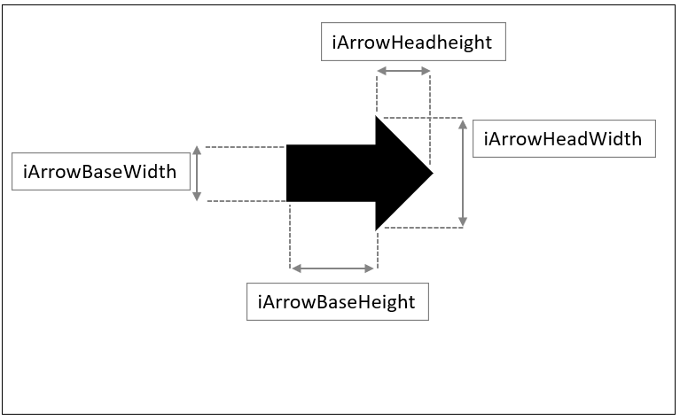
Code
xxxxxxxxxxint iArrowBaseWidth = 10; // 矢印の基部の幅int iArrowBaseHeight = 35; // 矢印の基部の高さint iArrowHeadWidth = 30; // 矢印の頭部の幅int iArrowHeadHeight = 20; // 矢印の頭部の高さ
void setup(){ size( 400, 400 );}
void draw(){ translate( width/2, height/2 ); // スクリーン中心に移動 drawArrow( 0, 0, 0 ); // 関数コール}
void drawArrow( int iX, int iY, int iRotDeg ){}5. 多角形描画を用いて矢印の描画を行う．
多角形描画を使って矢印を描画する命令をdrawArrow関数に追加する．
多角形描画の命令
Code
xxxxxxxxxxbeginShape(); // 多角形描画を開始する．vertex( X座標値, Y座標値 ); // 頂点0vertex( X座標値, Y座標値 ); // 頂点1vertex( X座標値, Y座標値 ); // 頂点2vertex( X座標値, Y座標値 ); // 頂点3vertex( X座標値, Y座標値 ); // 頂点4vertex( X座標値, Y座標値 ); // 頂点5vertex( X座標値, Y座標値 ); // 頂点6endShape(CLOSE); // 多角形を閉じる．各頂点の座標は先ほど定義したグローバル変数を元に，下図を参考に算出する必要がある．

ここでは時間短縮のため，頂点のリストは以下のコードをコピーして用いるとよい．
Code
xxxxxxxxxxvertex( 0, -iArrowBaseWidth/2 );vertex( iArrowBaseHeight, -iArrowBaseWidth/2 );vertex( iArrowBaseHeight, -iArrowHeadWidth/2 );vertex( iArrowBaseHeight + iArrowHeadHeight, 0 );vertex( iArrowBaseHeight, iArrowHeadWidth/2 );vertex( iArrowBaseHeight, iArrowBaseWidth/2 );vertex( 0, iArrowBaseWidth/2 );
多角形の色
線（ストローク）：なし
塗色：黒(0,0,0)

Code
xxxxxxxxxxint iArrowBaseWidth = 10; // 矢印の基部の幅int iArrowBaseHeight = 35; // 矢印の基部の高さint iArrowHeadWidth = 30; // 矢印の頭部の幅int iArrowHeadHeight = 20; // 矢印の頭部の高さ
void setup(){ size( 400, 400 );}
void draw(){ translate( width/2, height/2 ); drawArrow( 0, 0, 0 );}
void drawArrow( int iX, int iY, int iRotDeg ){ noStroke(); fill(0,0,0); // 多角形描画 beginShape(); vertex( 0, -iArrowBaseWidth/2 ); vertex( iArrowBaseHeight, -iArrowBaseWidth/2 ); vertex( iArrowBaseHeight, -iArrowHeadWidth/2 ); vertex( iArrowBaseHeight + iArrowHeadHeight, 0 ); vertex( iArrowBaseHeight, iArrowHeadWidth/2 ); vertex( iArrowBaseHeight, iArrowBaseWidth/2 ); vertex( 0, iArrowBaseWidth/2 ); endShape(CLOSE);}6. 仮引数を元に座標変換を行う．
今のままでは仮引数が使われていないので，これらを使って座標変換を行いましょう．
以下の記述をdrawArrow()に追加しましょう．
平行移動:
iX, iY回転:
iRotDeg(ラジアン値に変換する)正しくできたかテストする方法 関数呼び出しの実引数を色々変更してみる．
Code
xxxxxxxxxxdrawArrow( 100, 0, 90 ); // 変更例( X値:100, Y値:0, 回転90° )

Code
xxxxxxxxxxint iArrowBaseWidth = 10; // 矢印の基部の幅int iArrowBaseHeight = 35; // 矢印の基部の高さint iArrowHeadWidth = 30; // 矢印の頭部の幅int iArrowHeadHeight = 20; // 矢印の頭部の高さ
void setup(){ size( 400, 400 );}
void draw(){ translate( width/2, height/2 ); drawArrow( 100, 0, 90 );}
void drawArrow( int iX, int iY, int iRotDeg ){ translate( iX, iY ); rotate( radians( iRotDeg ) ); noStroke(); fill( 0, 0, 0 ); // 多角形描画 beginShape(); vertex( 0, -iArrowBaseWidth/2 ); vertex( iArrowBaseHeight, -iArrowBaseWidth/2 ); vertex( iArrowBaseHeight, -iArrowHeadWidth/2 ); vertex( iArrowBaseHeight + iArrowHeadHeight, 0 ); vertex( iArrowBaseHeight, iArrowHeadWidth/2 ); vertex( iArrowBaseHeight, iArrowBaseWidth/2 ); vertex( 0, iArrowBaseWidth/2 ); endShape( CLOSE );}7. 座標変換のリセット
実はステップ6のままでは，関数実行後も変換された座標系が残ったままである．
基本的には関数内で行った座標変換は，関数内で戻しておいた方がよい．
drawArrow()に以下の記述を追加する．
pushMatrix()popMatrix()
Code
xxxxxxxxxxint iArrowBaseWidth = 10; // 矢印の基部の幅int iArrowBaseHeight = 35; // 矢印の基部の高さint iArrowHeadWidth = 30; // 矢印の頭部の幅int iArrowHeadHeight = 20; // 矢印の頭部の高さ
void setup(){ size( 400, 400 );}
void draw(){ translate( width/2, height/2 ); drawArrow( 100, 0, 90 );}
void drawArrow( int iX, int iY, int iRotDeg ){ pushMatrix(); // 変換前の座標系を保存 translate( iX, iY ); rotate( radians( iRotDeg ) ); noStroke(); fill( 0,0,0 ); // 多角形描画 beginShape(); vertex( 0, -iArrowBaseWidth/2 ); vertex( iArrowBaseHeight, -iArrowBaseWidth/2 ); vertex( iArrowBaseHeight, -iArrowHeadWidth/2 ); vertex( iArrowBaseHeight + iArrowHeadHeight, 0 ); vertex( iArrowBaseHeight, iArrowHeadWidth/2 ); vertex( iArrowBaseHeight, iArrowBaseWidth/2 ); vertex( 0, iArrowBaseWidth/2 ); endShape( CLOSE ); popMatrix(); // 変換前の座標系へ戻す．}以上の手順で，drawArrow()という独自の矢印図形を描画する関数を作成することができた．
演習3
演習2のプログラムを元に，拡大縮小機能を追加し，drawArrow()を呼び出してレイアウトを行う．
1. drawArrow()に拡大縮小用の引数を追加する．
矢印の大きさを変更（拡大縮小）できるよう，以下のようにdrawArrow()を書きかえる．
スケール値（拡大縮小率）を渡すための仮引数を１つ追加する．
仮引数名: fScale
引数の型: float
また，関数コールの記述を以下のように書き換える．
Code
xxxxxxxxxxdrawArrow( 0, 0, 0, 0.5 ); // スケール値:0.5(50%)
Code
xxxxxxxxxxint iArrowBaseWidth = 10; // 矢印の基部の幅int iArrowBaseHeight = 35; // 矢印の基部の高さint iArrowHeadWidth = 30; // 矢印の頭部の幅int iArrowHeadHeight = 20; // 矢印の頭部の高さ
void setup(){ size( 400, 400 );}
void draw(){ translate( width/2, height/2 ); drawArrow( 0, 0, 0, 0.5 ); // スケール値:0.5(50%)}
void drawArrow( int iX, int iY, int iRotDeg, float fScale ){ pushMatrix(); // 変換前の座標系を保存 translate( iX, iY ); rotate( radians( iRotDeg ) ); noStroke(); fill( 0,0,0 ); // 多角形描画 beginShape(); vertex( 0, -iArrowBaseWidth/2 ); vertex( iArrowBaseHeight, -iArrowBaseWidth/2 ); vertex( iArrowBaseHeight, -iArrowHeadWidth/2 ); vertex( iArrowBaseHeight + iArrowHeadHeight, 0 ); vertex( iArrowBaseHeight, iArrowHeadWidth/2 ); vertex( iArrowBaseHeight, iArrowBaseWidth/2 ); vertex( 0, iArrowBaseWidth/2 ); endShape( CLOSE ); popMatrix(); // 変換前の座標系へ戻す．}2. 仮引数fScaleを用いて座標系を拡大縮小する．
drawArrow()に以下の記述を追加する．
scale( fScale );

Code
xxxxxxxxxxint iArrowBaseWidth = 10; // 矢印の基部の幅int iArrowBaseHeight = 35; // 矢印の基部の高さint iArrowHeadWidth = 30; // 矢印の頭部の幅int iArrowHeadHeight = 20; // 矢印の頭部の高さ
void setup(){ size(400,400);}
void draw(){ translate(width/2,height/2); drawArrow( 0, 0, 0, 0.5 ); // スケール値:0.5(50%)}
void drawArrow( int iX, int iY, int iRotDeg, float fScale ){ pushMatrix(); // 変換前の座標系を保存 translate( iX, iY ); rotate( radians( iRotDeg ) ); scale( fScale ); noStroke(); fill( 0, 0, 0 ); // 多角形描画 beginShape(); vertex( 0, -iArrowBaseWidth/2 ); vertex( iArrowBaseHeight, -iArrowBaseWidth/2 ); vertex( iArrowBaseHeight, -iArrowHeadWidth/2 ); vertex( iArrowBaseHeight + iArrowHeadHeight, 0 ); vertex( iArrowBaseHeight, iArrowHeadWidth/2 ); vertex( iArrowBaseHeight, iArrowBaseWidth/2 ); vertex( 0, iArrowBaseWidth/2 ); endShape( CLOSE ); popMatrix(); // 変換前の座標系へ戻す．}これでdrawArrow()は完成した．
3. drawArrow()を使った様々な表現
drawArrow()を使って色々な描画を試してみましょう．
静止画ならsetup()内，アニメーションさせたいならdraw()内で呼び出しましょう．
for文で矢印を繰り返し描画
回転させながら複数の矢印を描画
draw()内で呼び出し，アニメーションを行う．
また，以下の部分の数値を変更することで矢印のプロポーションを変更できる．
Code
xxxxxxxxxxint iArrowBaseWidth = 10; // 矢印の基部の幅int iArrowBaseHeight = 35; // 矢印の基部の高さint iArrowHeadWidth = 30; // 矢印の頭部の幅int iArrowHeadHeight = 20; // 矢印の頭部の高さ作例1
40°ずつ回転させながら描画する．
※draw()のみ記載
Code
xxxxxxxxxxvoid draw(){ for( int iRotDeg = 0; iRotDeg < 360; iRotDeg+=40 ) { drawArrow( width/2,height/2,iRotDeg, 1.0 ); }}
作例2
円周上に並べる
※draw()のみ記載
Code
xxxxxxxxxxvoid draw(){ translate(width/2,height/2); for( int iRotDeg = 0; iRotDeg < 360; iRotDeg+=18 ) { drawArrow( 185, 0, 95, 1.0 ); rotate( radians( 18 ) ); //座標系を18°回転 }}
作例3
並進
※draw()のみ記載
Code
xxxxxxxxxxvoid draw(){ for( int iArrowIdx = 0; iArrowIdx < 48; iArrowIdx++ ) // 48回繰り返す { int iColumn = iArrowIdx%6; // 列番号 int iRow = iArrowIdx/6; // 行番号 int iX = 20 + 60 * iColumn + 50 * ( iRow%2 ); // 奇数の行番号は50右にずらす int iY = 20 + 50 * iRow; int iRotDeg = 180 * ( iRow%2 ); // 奇数の行番号は180°回転 drawArrow( iX, iY,iRotDeg, 1.0 ); }}
作例4
並進（拡大縮小あり）
※draw()のみ記載
Code
xxxxxxxxxxvoid draw(){ for( int iArrowIdx = 0; iArrowIdx < 48; iArrowIdx++ ) // 48回繰り返す { int iColumn = iArrowIdx%6; // 列番号 int iRow = iArrowIdx/6; // 行番号 int iX = 20 + 60 * iColumn + 50 * ( iRow%2 ); // 奇数の行番号は50右にずらす int iY = 20 + 50 * iRow; int iRotDeg = 180 * ( iRow%2 ); // 奇数の行番号は180°回転 float fScale = 0.2 + iRow/8.0; // スケール値 drawArrow( iX, iY,iRotDeg, fScale ); }}
作例5
移動と跳ね返りアニメーション
※drawArrow()の関数定義以外を記載
Code
xxxxxxxxxxint iArrowBaseWidth = 10; // 矢印の基部の幅int iArrowBaseHeight = 35; // 矢印の基部の高さint iArrowHeadWidth = 30; // 矢印の頭部の幅int iArrowHeadHeight = 20; // 矢印の頭部の高さ
int iPosX; // 矢印の座標int iDirctionX; // 進む向き( 1:+X方向, -1:-X方向 )
void setup(){ size(400,400); frameRate(8); iPosX = 0; iDirctionX = 1;}
void draw(){ noStroke(); fill( 201, 201, 201 ); rect( 0, 0, width, height );// スクリーンリフレッシュ stroke( 0 ); drawArrow( iPosX, height/2, 90 *( 1 - iDirctionX ), 1.0 ); // 進む方向によって矢印を回転 iPosX += iDirctionX * 8; if( iDirctionX == 1 && iPosX > width-50 || // もし，右向きかつ矢印頭がスクリーン端をこえる iDirctionX == -1 && iPosX < 50 ) // もしくは，左向きかつ矢印頭スクリーン端を超えたら { iDirctionX *= -1; // 向きを逆方向に変える(-1をかける) }}
関数から別の関数を呼び出す
関数の中で別の関数を呼び出すことも可能． 詳しくは，後の「再帰」のセクションで．
Code
xxxxxxxxxxvoid setup(){
}
void draw(){ function1();}
void function1(){ function2();}
void function2(){
}
より高度な表現
演習
顔のような描画

1.setup(),draw()を記述
スクリーンサイズ：400×400
カラーモード：RGB, 100
背景色：白(100,100,100)
Code
xxxxxxxxxxvoid setup(){ size(400,400); colorMode(RGB,100); background(100,100,100);}
void draw(){}2.顔を描画する関数を定義
ブロック内の命令以外の枠だけ用意しましょう．
関数名：drawFace
仮引数
int型 iX// 顔のX座標int型 iY// 顔のY座標
返り値：なし
Code
xxxxxxxxxxvoid setup(){ size(400,400); colorMode(RGB,100); background(100,100,100);}
void draw(){}
void drawFace( int iX, int iY ){}3.drawFace関数をsetup()内で呼ぶ
setup()のブロック内でdrawFace()関数を呼び出す記述を追加してみましょう．
引数:
0, 0今回は静止画なので，setup()内へ．
さらに，drawFace()関数の呼び出し前に，原点をスクリーン中心に移動しましょう．
平行移動
width/2, height/2顔を作りやすくする便宜上，この処理を入れる．
これで関数drawFace()は実行されるようになります．
Code
xxxxxxxxxxvoid setup(){ size(400,400); colorMode(RGB,100); background(100,100,100); translate(width/2,height/2); // スクリーン中心へ平行移動 drawFace( 0, 0 ); // 関数のコール}
void draw(){ }
void drawFace( int iX, int iY ){}4.drawFace関数内に図形描画命令を追加
drawFace()のブロック内にellipseやlineなどの命令を使い，思い思いに自由に顔を描いてみましょう． 座標原点がスクリーン中心に移動していることに注意．
仮引数はまだ使わなくてかまいません．
余裕があれば色関連も変更してOK.

Code
xxxxxxxxxxvoid setup(){ size(400,400); colorMode(RGB,100); background(100,100,100); translate(width/2,height/2); drawFace( 0, 0 );}
void draw(){ }
void drawFace( int iX, int iY ){ ellipse( 0, 0, 100, 100 );// 輪郭 ellipse( -20, -20, 8, 8 );// 目 ellipse( 20, -20, 8, 8 ); line( -20, 20, 20, 20 ); //口}5.仮引数を元に座標変換
仮引数iX,iYは顔の座標の平行移動に使いたい． drawFace()の中で，ステップ4で作成した顔描画の前に，座標変換：平行を追加しましょう．
平行移動
iX, iY
この方法だとたくさんある図形描画の命令にひとつひとつ追加するより楽．
Code
xxxxxxxxxxvoid setup(){ size(400,400); colorMode(RGB,100); background(100,100,100); translate(width/2,height/2); drawFace( 0, 0 );}
void draw(){}
void drawFace( int iX, int iY ){ translate( iX, iY ); // 顔描画位置へ平行移動 ellipse( 0, 0, 100, 100 );// 輪郭 ellipse( -20, -20, 8, 8 );// 目 ellipse( 20, -20, 8, 8 ); line( -20, 20, 20, 20 ); //口}6.座標系の保存・戻しを関数に追加
ステップ5のように関数内での座標変換は便利だが，関数内で行った座標変換は関数内で戻しておくのが安全． 戻さない場合，プログラムの他の部分に影響がでる．
以下のようにpushMatrix(), popMatrix()を追加しましょう．
Code
xxxxxxxxxxvoid setup(){ size(400,400); colorMode(RGB,100); background(100,100,100); translate(width/2,height/2); drawFace( 0, 0 );}
void draw(){}
void drawFace( int iX, int iY ){ pushMatrix();// 座標系の保存 translate( iX, iY ); ellipse( 0, 0, 100, 100 );// 輪郭 ellipse( -20, -20, 8, 8 );// 目 ellipse( 20, -20, 8, 8 ); line( -20, 20, 20, 20 ); // 口 popMatrix();// 座標系を戻す}7.drawFace()を複数呼び出す
まず，setup()内のtranslate()文はもう不要なので，削除しましょう． setup()内のdrawFace()呼び出しを，引数を変えながら複数書いてみましょう．
引数
iX: 顔の中心座標値X
iY: 顔の中心座標値Y
余裕があれば，for文を使い，さらに大量に書いてみましょう．
Code
xxxxxxxxxxvoid setup(){ size(400,400); colorMode(RGB,100); background(100,100,100); // 関数のコール drawFace( 60, 80 ); drawFace( 180, 120 ); drawFace( 320, 330 ); drawFace( 80, 320 ); drawFace( 220, 240 );}
void draw(){}
void drawFace( int iX, int iY ){ pushMatrix(); translate( iX, iY ); ellipse( 0, 0, 100, 100 );// 輪郭 ellipse( -20, -20, 8, 8 );// 目 ellipse( 20, -20, 8, 8 ); line( -20, 20, 20, 20 ); // 口 popMatrix();}
アニメーション複製描画
前述の顔を描画する関数を応用し，アニメーションを行う．
Code
xxxxxxxxxxint iFPS = 20;int iAnimMouthDeg; // 0~360
void setup(){ size( 400, 400 ); frameRate(iFPS); iAnimMouthDeg = 0;}void draw(){ fill(60,60,60); noStroke(); rect(0,0,width,height); // 口の開き具合(cos,sin) float fMouthOpenCos = (1 + cos(radians(iAnimMouthDeg)))/2.0; //cos単振動(0~1) float fMouthOpenSin = (1 + sin(radians(iAnimMouthDeg)))/2.0; //sin単振動(0~1) // 顔を並べて描画 translate( 40, 40 ); for( int iFaceIdx=0; iFaceIdx<25; iFaceIdx++)// 25回繰り返し { int iColumn = iFaceIdx%5; int iRow = iFaceIdx/5; // 口の開き具合(cos,sin)どちらの値を使うか float fMouthOpen = 0.0; if( iRow%2==0 )// 行番号が奇数なら { fMouthOpen = fMouthOpenCos; } else { fMouthOpen = fMouthOpenSin; } // 顔の描画 drawFace( 80*iColumn,80*iRow,fMouthOpen ); } //アニメーション用変数更新 if( iAnimMouthDeg > 360 ) { iAnimMouthDeg-= 360; } else { iAnimMouthDeg +=4;// 4°進める }}
void drawFace( float fX, float fY, float fMouthOpen ){ pushMatrix();//座標系保存 stroke(0,0,0); fill(255,255,255); ellipse( fX, fY, 80, 80 ); // 輪郭 fill(255,255,255); ellipse( fX-20, fY-20, 8, 8 );// 目 ellipse( fX+20, fY-20, 8, 8 ); // 位置調整のため，細かい数値が入っています． float fBeginDeg = 60 - 60*fMouthOpen; float fEndDeg = 120 + 60*fMouthOpen; float fMouthY = fY-10+16*fMouthOpen; float fEllipseWidth = 60-20*fMouthOpen; // 口の描画 fill(255,0,0); arc( fX, fMouthY, fEllipseWidth, 40, radians(fBeginDeg), radians(fEndDeg), CHORD ); popMatrix();//座標系戻す}
共通する処理の関数化
サイン波とコサイ波のアニメーション
Code
xxxxxxxxxxint iAnimDegree; // アニメーション用
void setup(){ size( 400, 200 ); strokeWeight( 4 ); frameRate(20); iAnimDegree = 0;}
void draw(){ noStroke(); fill(0,0,0); rect(0,0,width,height); // 波長アニメーション float fAnimPhaseShift = radians(iAnimDegree); // 振幅アニメーション float fAnimAmplitudeSin = 50+50*sin(radians(iAnimDegree)); float fAnimAmplitudeCos = 50+50*cos(radians(iAnimDegree)); // cos波 stroke(255,0,0); drawWaveCos( fAnimPhaseShift, fAnimAmplitudeCos, 400 ); // sin波 stroke(0,0,255); drawWaveSin( fAnimPhaseShift, fAnimAmplitudeSin, 400 ); if( iAnimDegree > 360 )// 360超えたらリセット { iAnimDegree-=360; } else { iAnimDegree+=8;//毎フレーム8加算 }}/** 波をスクリーン全体に描画する params fPhaseShift: 位相のズレ(ラジアン) fAmplitude: 振幅 fWaveLength: 波長*/void drawWaveCos( float fPhaseShift, float fAmplitude, float fWaveLength ){ for( int iX=0; iX < width; iX++ ) { float fPhaseRad0 = calcWavePhase( iX, fWaveLength )+fPhaseShift; float fPhaseRad1 = calcWavePhase( iX+1, fWaveLength )+fPhaseShift; line( iX, height/2 + fAmplitude*cos( fPhaseRad0 ),iX+1, height/2 + fAmplitude*cos( fPhaseRad1 ) ); }}void drawWaveSin( float fPhaseShift, float fAmplitude, float fWaveLength ){ for( int iX=0; iX < width; iX++ ) { float fPhaseRad0 = calcWavePhase( iX, fWaveLength )+fPhaseShift; float fPhaseRad1 = calcWavePhase( iX+1, fWaveLength )+fPhaseShift; line( iX, height/2 + fAmplitude*sin( fPhaseRad0 ), iX+1, height/2 + fAmplitude*sin( fPhaseRad1 ) ); }}/** 波の位相を計算し，返す params iX:スクリーンのX座標値 fWaveLength:波長 return:位相(ラジアン値)*/float calcWavePhase( int iX, float fWaveLength ){ return TWO_PI * iX / fWaveLength; // TWO_PI: 360°のラジアン値}
第８回：再帰
再帰とは
再帰的であることを英語で「Recursive」と書く． 自身が，自分自身を参照してしまうような状態．
再帰呼び出しとは
英語で「Recursive Call」と書く．
関数内で自分自身の関数を呼び出すこと．
Code
xxxxxxxxxxvoid function( int iValue ){ function( iValue - 1 );}// ※この関数をコールすると無限ループに陥るので実行しないこと．上記のような再帰呼び出しを行っている関数のことを再帰関数という． 再帰関数は最初の呼び出しを１度行うだけで，何度も繰り返し関数の処理を繰り返す． ただし，再帰関数に渡す引数の値を変化させていく必要がある．
無限ループを避けるため，if式と仮引数を用いて再帰呼び出しを適切に終了させる必要がある．
Code
xxxxxxxxxxvoid function( int iValue ){ if( iValue > 0 ) { function( iValue - 1 ); }}仮引数iValueは再帰呼び出しの繰り返しにより，いつか必ず0の値をとる．
それゆえ，上記のようにif文を加えることで，再帰呼び出しを終了させることができる．
再帰void関数の定義
再帰関数は関数の一種であるので，まず関数の定義を行う必要がある．
再帰関数の定義を記述したら，setup()やdraw()内で再帰関数をコールする．
ここではvoid関数を用いた構文を学習する． 条件式の種類によっておおまかに二通りの構文に分けられる．
構文1
再帰呼び出しを続ける条件式を記述する構文
Code
xxxxxxxxxxvoid 関数名( 仮引数の型 仮引数 ){ if( 条件式 ) // 真(true)なら再帰を続ける． { 関数名( 実引数 ); // 再帰呼び出し }}構文2
再帰呼び出しを終了する条件式を記述する構文
Code
xxxxxxxxxxvoid 関数名( 仮引数の型 仮引数 ){ if( 条件式 ) // 真(true)なら再帰を終了する． { return; // 関数の処理をここで終了する． } 関数名( 実引数 ); // 再帰呼び出し}上記の二通りの構文は，実は本質的には違いがあまり無い． 目的や好みに応じて構文を使い分ければよい． return文に抵抗があるなら構文1を推奨する．
例1
引数の値の回数だけ再帰呼び出しを行う再帰関数の定義．
Code
xxxxxxxxxxvoid recursiveCount( int iCount ){ if( iCount > 0 ) // 真(true)なら再帰を続ける． { recursiveCount( iCount - 1 ); // 再帰呼び出し }}仮引数iCountから1を引いた値を，次の再帰呼び出しの際に実引数として渡している．
再帰の続行条件は，仮引数iCountが0より大きいこと．
例2
引数の値を2で割り，割った後の値を引数として再帰呼び出しを行う再帰関数
Code
xxxxxxxxxxvoid recursiveDivide( float fValue ){ if( fValue > 5 ) // 仮引数fValueが5より大きければ再帰をつづける． { recursiveDivide( fValue / 2 ); // fValueを2で割った値を引数として再帰呼び出し． }}仮引数fValueを2で割った値を，次の再帰呼び出しの際に実引数として渡している．
再帰の続行条件は，仮引数fValueが5より大きいこと．
演習1
下図の①，②に何を記述すればよいか考えてみましょう．
再帰関数recursiveScale()の要件
引数
fValueの値に1.2をかけ，かけた後の値を実引数として再帰呼び出しを行う．再帰の続行条件は，仮引数
fValueが1000より小さいこと．
演習時間：1分程度
再帰関数の呼び出し
前述の例1で定義した再帰関数を使用したプログラムを元に，再帰呼び出しの流れを見ていく．
以下のプログラムでは，再帰関数recursiveCount()をsetup()から呼び出している．
Code
xxxxxxxxxxvoid setup(){ recursiveCount( 4 ); // 4を引数として渡す}
void recursiveCount( int iCount ){ print( iCount + ", " ); if( iCount > 0 ) // 真(true)なら再帰を続ける． { recursiveCount( iCount - 1 ); // 再帰呼び出し }}この再帰関数は結果として，最初に渡した実引数「4」の回数だけ再帰呼び出しを繰り返していることがわかる．
最初の呼び出しの流れ
1. setup()から関数recursiveCount(4)を呼び出す．
print()命令は削除しています．
※コールスタックとは，関数呼び出しの情報を保存したメモリ領域． 呼び出された関数は，それぞれの仮引数やローカル変数などのデータを保持している．
2. 仮引数に値が渡される．

3. 条件式の評価．

4. recursiveCount( 3 )の呼び出し．

5. 仮引数に値が渡される．
6. 条件式の評価．

7. recursiveCount( 2 )の呼び出し．
8. 仮引数に値が渡される．
9. このような再帰呼び出しが，引数が0になるまで繰り返される．
10. recursiveCount( 0 ) の呼び出し．
11. 条件式の評価．
条件式が偽となるため，if文のブロックは実行されない．

12. recursiveCount( 0 ) の終了．
その後にも，recursiveCount( 0 )ブロックには特に命令が記述されていない．
13. 呼び出し元のrecursiveCount( 1 )へ戻る．
recursiveCount( 0 ) の呼び出し元の位置はif文のブロック内．
14. recursiveCount( 1 )の終了．
その後，recursiveCount( 1 )ブロックには特に命令が記述されていない．

15. 逆順にrecursiveCount()が終了していく．
このように，呼び出された順番と逆順にrecursiveCount()が終了していく．
16. 最初の呼び出し元に戻る．

例3
例2で定義した再帰関数recursiveDivide()をsetup()から実行した例．
Code
xxxxxxxxxxvoid setup(){ recursiveDivide( 100 ); // 100を引数として渡す}
void recursiveDivide( float fValue ){ print( fValue + ", " ); if( fValue > 5 ) // 仮引数fValueが5より大きければ再帰をつづける． { recursiveDivide( fValue / 2 ); // fValueを2で割った値を引数として再帰呼び出し． }}このような再帰関数は図形を分割して描画する等の表現に応用できる．
演習2
演習1と同じ再帰関数recursiveScale()を定義し，引数の値1を渡してsetup()から呼び出してみましょう．
また，例3を参考にprint()命令を記述し，下図のようにコンソール出力を行いましょう．
再帰関数recursiveScale()の要件（演習1と同じ）
仮引数はfloat型の
fValue．仮引数
fValueの値に1.2をかけ，かけた後の値を実引数として再帰呼び出しを行う．再帰の続行条件は，仮引数
fValueが1000より小さいこと．
演習時間：4分

スタックオーバーフローエラー
終了条件を正しく記述しないと，プログラムがフリーズし，ProcessingのGUIから終了することができなくなる． 以下のようなエラーが表示される．

仮にその状況に陥って知った場合の解決先を以下に示す．
windowsの場合
ウィンドウ右上の×ボタンをクリックし，プログラムを強制終了させる．
Macの場合
※未記載
返り値のある再帰関数の定義と呼び出し
返り値のある関数を用いて再帰関数を定義することもできる． 本授業で用いるにはあまり適していないので，構文等は割愛する．
例1
1から始まり，ある数nまでの数の和を求める再帰関数．
Code
xxxxxxxxxxint recursiveSum( int iN ){ if( iN > 0 ) { int iSumM = recursiveSum( iN-1 ); // 再帰呼び出し return iN + iSumM; } else { return 0; }}例2
例1の再帰関数を用い，1から始まり10までの数の和を求める．
Code
xxxxxxxxxxvoid setup(){ int iSum = recursiveSum( 10 ); // 最初の呼び出し print( iSum );}
int recursiveSum( int iN ){ if( iN > 0 ) { print( iN + " + " ); int iSumM = recursiveSum( iN-1 ); // 再帰呼び出し return iN + iSumM; } else { print( "0" ); return 0; }}
再帰関数を使った描画基礎
描画命令を記述する位置
「再帰関数の呼び出し-例2」のプログラムに描画命令を加える場合を考える． 以下，変更を加える前のプログラム．
Code
xxxxxxxxxxvoid setup(){ recursiveDivide( 100 ); // 100を引数として渡す}
void recursiveDivide( float fValue ){ print( fValue + ", " ); if( fValue > 5 ) // 仮引数fValueが5より大きければ再帰をつづける． { recursiveDivide( fValue / 2 ); // fValueを2で割った値を引数として再帰呼び出し． }}このプログラムに描画命令を加える位置は下図の通り．（print()命令を記述していた部分）

上図のように，再帰呼び出しを終了させるif文の前に記述するのが一般的．
描画命令の記述の仕方
仮引数fValueを用いて描画命令を記述することになる．
再帰呼び出しの度に仮引数fValueの値は２分の１に変化している．
この特性を使って，描画領域を再帰的に分割するプログラムを記述できる．
Code
xxxxxxxxxxvoid setup(){ recursiveDivide( 100 );}
void recursiveDivide( float fValue ){ // 矩形描画 rect( 0, 0, fValue, height ); if( fValue > 5 ) { recursiveDivide( fValue / 2 ); }}
このプログラムでは，矩形の横幅の大きさの指定に，仮引数fValueを用いている．
さらに命令を追加する．
下のプログラムではスクリーンサイズを200×100，塗り色の指定を加えている．
Code
xxxxxxxxxxvoid setup(){ size( 200, 100 ); recursiveDivide( width ); // 実引数を200に}
void recursiveDivide( float fValue ){ // 矩形描画 fill( fValue + 100 ); // 塗り色 rect( 0, 0, fValue, height ); if( fValue > 5 ) { recursiveDivide( fValue / 2 ); }}演習3
正方形を再帰的に4分割する再帰関数を定義する．
1.ウィンドウを表示する．
Activeモードでウィンドウを表示させるところまで記述しましょう． ※静止画なのでdraw()は不要
スクリーンサイズ：400×400
Code
xxxxxxxxxxvoid setup(){ size( 400, 400 );}2. 再帰関数定義を準備する．
void関数draw4Squares()を定義しましょう．
ブロック内の記述はまだ不要．
関数名：draw4Squares
仮引数
float型の fSize
Code
xxxxxxxxxxvoid setup(){ size( 400, 400 );}
void draw4Squares( float fSize ){}仮引数fSizeはこれから分割する領域全体の大きさの情報を表す．
3. 再帰関数を呼び出す．
描画結果がいち早く確認できるよう，再帰関数の呼び出しを記述してしまいましょう．
setup()に以下の処理を追加しましょう．
draw4Squares()に引数400を渡して呼び出す．
Code
xxxxxxxxxxvoid setup(){ size( 400, 400 ); draw4Squares( 400 );}
void draw4Squares( float fSize ){}この引数400が再帰呼び出しにより，２分の１に分割されていくことを念頭に置いておく．
4. 3つの正方形を描画する．
void関数draw4Squares()に正方形の描画命令を追加する．
下図を参考に，仮引数fSizeを用い，右上，左下，右下に３つの正方形を描画する．（左上は空白）
Code
xxxxxxxxxxvoid setup(){ size( 400, 400 ); draw4Squares( 400 );}
void draw4Squares( float fSize ){ // 右上の正方形 fill( 255, 0, 0 ); square( fSize/2, 0, fSize/2 ); // 左下の正方形 fill( 0, 255, 0 ); square( 0, fSize/2, fSize/2 ); // 右下の正方形 fill( 255, 255, 255 ); square( fSize/2, fSize/2, fSize/2 );}この描画を再帰呼び出しにより繰り返すことになる．
5. 再帰を続行するif文を記述する．
void関数draw4Squares()の最後に以下のif文と空のブロックを追加する．
もし
fSizeが4以上だったら
Code
xxxxxxxxxxvoid setup(){ size( 400, 400 );
draw4Squares( 400 );}
void draw4Squares( float fSize ){ // 右上の正方形 fill( 255, 0, 0 ); square( fSize/2, 0, fSize/2 ); // 左下の正方形 fill( 0, 255, 0 ); square( 0, fSize/2, fSize/2 ); // 右下の正方形 fill( 255, 255, 255 ); square( fSize/2, fSize/2, fSize/2 ); // 左上の正方形（再帰） if( fSize > 4 ) { }}再帰の続行条件をfSize > 4としたのは，分割する領域の大きさが4以下の場合，それ以上分割しても視覚的には無意味であるため．
6.再帰呼び出しを記述する．
ステップ5.で追加したif文のブロックに，以下の再帰呼び出しを記述しましょう．
fSizeを2で割った値を引数として渡し，draw4Squares()の再帰呼び出しを行う．
Code
xxxxxxxxxxvoid setup(){ size( 400, 400 );
draw4Squares( 400 );}
void draw4Squares( float fSize ){ // 右上の正方形 fill( 255, 0, 0 ); square( fSize/2, 0, fSize/2 ); // 左下の正方形 fill( 0, 255, 0 ); square( 0, fSize/2, fSize/2 ); // 右下の正方形 fill( 255, 255, 255 ); square( fSize/2, fSize/2, fSize/2 ); // 左上の正方形（再帰） if( fSize > 4 ) { draw4Squares( fSize / 2 ); }}この再帰呼び出しによって，左上の正方形のエリアに再帰的に描画が行われる．
右下に再帰的に描画を行いたい場合，以下のように平行移動の命令を追加する必要がある．
Code
xxxxxxxxxxvoid setup(){ size( 400, 400 );
pushMatrix(); // 再帰関数の呼び出しで座標系が変換されるので，念のため保存． draw4Squares( 400 ); popMatrix();}
void draw4Squares( float fSize ){ // 左上の正方形 fill( 255, 255, 255 ); square( 0, 0, fSize/2 );
// 右上の正方形 fill( 255, 0, 0 ); square( fSize/2, 0, fSize/2 ); // 左下の正方形 fill( 0, 255, 0 ); square( 0, fSize/2, fSize/2 ); // 右下の正方形（再帰） if( fSize > 4 ) { translate( fSize / 2, fSize / 2 ); // 平行移動 draw4Squares( fSize / 2 ); }}
複数の引数をもつ再帰呼び出し
再帰関数の引数を複数にすると難易度が上がるが，再帰による描画の表現の幅が広がる．
例えば，以下のような再帰関数．
Code
xxxxxxxxxxvoid drawLines( float fBeginX, float fBeginY, float fLength, float fDegree ){ }演習4
螺旋状の連続した線を再帰呼び出しで描画する．
1.ウィンドウを表示する．
Activeモードでウィンドウを表示させるところまで記述する． ※静止画なのでdraw()は不要
Code
xxxxxxxxxxvoid setup(){ size( 400, 400 );}2. 再帰関数定義を準備する．
void関数drawLines()を定義する．
Code
xxxxxxxxxxvoid setup(){ size( 400, 400 );}
void drawLines( float fLength ){}仮引数fLengthは線の長さの情報を表す．
3. 最初の再帰関数の呼び出しを記述する．
描画結果がいち早く確認できるよう，再帰関数の呼び出しを記述する．
Code
xxxxxxxxxxvoid setup(){ size( 400, 400 ); drawLines( 160 ); // 再帰関数の呼び出し}
void drawLines( float fLength ){}実引数160は，最初の線の長さの情報をdrawLines()に渡す．
4. 再帰呼び出しを記述する．
下図のように，最初の線の長さ160が再帰呼び出しの度に0.85倍されていくように，記述を行う．

drawLines()に，以下のように再帰呼び出しを記述する．
Code
xxxxxxxxxxvoid setup(){ size( 400, 400 ); drawLines( 160 );}
void drawLines( float fLength ){ if( fLength > 2 ) // 再帰の継続条件 { drawLines( fLength * 0.85 ); // 再帰呼び出し }}この段階では，描画が行われていない．
5. 線描画命令を記述する．
drawLines()に，以下のように線の描画命令を記述する．
Code
xxxxxxxxxxvoid setup(){ size( 400, 400 ); drawLines( 160 );}
void drawLines( float fLength ){ // 線の描画 line( 0, 0, fLength, 0 ); if( fLength > 2 ) { drawLines( fLength * 0.85 ); }}現状では再帰的に線を描画するための情報が足りていない． これからしばらくは，必要となる変数や仮引数の用意を行っていく．
6. 角度を受け取る仮引数を追加する．
下図のように，再帰呼び出しの度に線が30°回転されていく．

下のように，角度を示す仮引数fDegreeを追加し，関連する関数呼び出しの記述も書き換える．
Code
xxxxxxxxxxvoid setup(){ size( 400, 400 ); drawLines( 160, 4 ); // 初期角度4}
void drawLines( float fLength, float fDegree ) // 仮引数fDegreeを追加{ // 線の描画 line( 0, 0, fLength, 0 ); if( fLength > 2 ) { drawLines( fLength * 0.85, fDegree + 30 ); // 30°ずつ変化 }}7. 線を開始する点の座標値を受け取る仮引数を追加する．
これまでの段階で，線の長さと角度の情報が得られたが，線を開始する点の情報が不足している． 下図のように，最終的には4つの引数が必要となる．
下のように仮引数fBeginX, fBeginYを追加し，関連する記述も書き換える．
Code
xxxxxxxxxxvoid setup(){ size( 400, 400 ); drawLines( 0, 0, 160, 4 ); // 開始点 0, 0}
void drawLines( float fBeginX, float fBeginY, float fLength, float fDegree ) // 仮引数fBeginX, fBeginYを追加{ // 線の描画 line( 0, 0, fLength, 0 ); if( fLength > 2 ) { drawLines( fBeginX, fBeginY, fLength * 0.85, fDegree + 30 ); // とりあえずの実引数 fBeginX, fBeginY }}再帰呼び出しにおいて，本来なら次の線の開始点のXY座標値を渡す必要があるが，一時的にfBeginX, fBeginYをそのまま渡している．
8. 線が終了する点の座標を求める．
line()を用いて描画を行うには，線を開始する点のXY座標値に加え，線を終了する点のXY座標値が必要となる．
ある点から伸びる線のXY成分値は三角関数を用いて下図のように算出することができ，これを元に必要なXY座標値が得られる．
三角比
※演算と変数で学習済み
下のように記述し，線の終端の点のXY座標値をローカル変数fEndX, fEndYに代入する．
Code
xxxxxxxxxxvoid setup(){ size( 400, 400 ); drawLines( 0, 0, 160, 4 );}
void drawLines( float fBeginX, float fBeginY, float fLength, float fDegree ){ // 線の終端 float fEndX = fBeginX + fLength * cos( radians( fDegree ) ); float fEndY = fBeginY + fLength * sin( radians( fDegree ) ); // 線の描画 line( 0, 0, fLength, 0 ); if( fLength > 2 ) { drawLines( fBeginX, fBeginY, fLength * 0.85, fDegree + 30 ); }}線を開始する点の座標値fBeginX, fBeginYに，三角比の計算で得られた値を加えていることに留意．
この段階で変数及び仮引数の準備が整ったので，以降はそれらを描画命令や再帰呼び出しに組み込んでいく．
9. 描画命令や再帰呼び出しの書き換え．
下のように，描画命令と再帰呼び出しを書き換える．
Code
xxxxxxxxxxvoid setup(){ size( 400, 400 ); drawLines( 0, 0, 160, 4 );}
void drawLines( float fBeginX, float fBeginY, float fLength, float fDegree ){ // 線の終端 float fEndX = fBeginX + fLength * cos( radians( fDegree ) ); float fEndY = fBeginY + fLength * sin( radians( fDegree ) ); // 線の描画 line( fBeginX, fBeginY, fEndX, fEndY ); // 書き換え if( fLength > 2 ) { drawLines( fEndX, fEndY, fLength * 0.85, fDegree + 30 ); // 書き換え }}線を終了する点の座標値fEndX, fEndYは，次の線における線を開始する点の座標値となるため，再帰呼び出しの引数として記述する．
10. 描画を整える．
下では，線の終端の円の描画や線の太さの設定などの記述を追加している．
Code
xxxxxxxxxxvoid setup(){ size( 400, 400 ); drawLines( 0, 0, 160, 4 );}
void drawLines( float fBeginX, float fBeginY, float fLength, float fDegree ){ // 線の終端 float fEndX = fBeginX + fLength * cos( radians( fDegree ) ); float fEndY = fBeginY + fLength * sin( radians( fDegree ) ); // 線の描画 strokeWeight( 2 ); line( fBeginX, fBeginY, fEndX, fEndY ); // 終端の円描画 fill( 0 ); circle( fEndX, fEndY, 4 ); if( fLength > 2 ) { drawLines( fEndX, fEndY, fLength * 0.85, fDegree + 30 ); // 再帰呼び出し }}
再帰呼び出しを複数回行う
再帰呼び出しを複数回同時に行うことで，再帰を枝分かれさせることができる． より複雑な模様が生成できる．
Code
xxxxxxxxxxvoid drawMandara( float fCenterX, float fCenterY, float fWidth, float fHeight ){ if( fWidth > 4 ) { drawMandara( fCenterX, fCenterY-fHeight, fWidth/3, fHeight/3 ); drawMandara( fCenterX, fCenterY+fHeight, fWidth/3, fHeight/3 ); drawMandara( fCenterX-fWidth, fCenterY, fWidth/3, fHeight/3 ); drawMandara( fCenterX+fWidth, fCenterY, fWidth/3, fHeight/3 ); drawMandara( fCenterX-fWidth, fCenterY-fHeight, fWidth/3, fHeight/3 ); drawMandara( fCenterX+fWidth, fCenterY-fHeight, fWidth/3, fHeight/3 ); drawMandara( fCenterX-fWidth, fCenterY+fHeight, fWidth/3, fHeight/3 ); drawMandara( fCenterX+fWidth, fCenterY+fHeight, fWidth/3, fHeight/3 ); }}
演習5
曼荼羅のような図形の描画を行う． シェルピンスキーのカーペットともいう．

1.ウィンドウを表示する．
Activeモードでウィンドウを表示させるところまで記述する． ※静止画なのでdraw()は不要
Code
xxxxxxxxxxvoid setup(){ size( 1000, 1000 );}2. 再帰関数を定義し，コールする．
void関数drawMandara()を定義する．
Code
xxxxxxxxxxvoid setup(){ size( 1000, 1000 ); drawMandara(); // 再帰関数のコール}
void drawMandara(){}仮引数は現段階では記述しない．
3. 描画内容を考える．
目標となる模様は，よく観察すると下図のような再帰的な構造になっていることがわかる．

一見複雑な模様に見えるが，１度の再帰呼び出し中に１つの矩形のみ描画を行えばよい． 再帰呼び出しの度に，その矩形の周囲８か所に新たに矩形が出現しているが，それらは8回再帰呼び出しを行うことで表現できる．
4. 仮引数を記述する．
ステップ3の図を元に考えると，描画に必要な仮引数は下図のように考えることができる．

下のように記述する．
Code
xxxxxxxxxxvoid setup(){ size( 1000, 1000 ); drawMandara( width/2, height/2, width, height ); // スクリーンの中心座標とスクリーン幅，高さを渡す}
void drawMandara( float fCenterX, float fCenterY, float fWidth, float fHeight ) // 仮引数を記述{}再帰関数の最初の呼び出しの記述も変更しなければならないことに留意．
5. 再帰呼び出し０回目の描画命令を記述する．
最初の矩形の幅と高さは領域全体の1/3である．
下のように記述する．
Code
xxxxxxxxxxvoid setup(){ size( 1000, 1000 ); drawMandara( width/2, height/2, width, height );}
void drawMandara( float fCenterX, float fCenterY, float fWidth, float fHeight ){ rectMode( CENTER ); // 矩形の座標をを中心点で指定する // 矩形描画 rect( fCenterX, fCenterY, fWidth/3, fWidth/3 );}
6. 左上の再帰呼び出しを検討する．
左上の再帰呼び出し1回目（左上の矩形描画）は，下図のように考えることができる．

上図を参考に，仮引数を使って次の再帰呼び出しの引数を計算する必要がある．
7. 左上の再帰呼び出しを記述する．
ステップ6を参考に，以下のように記述する．
Code
xxxxxxxxxxvoid setup(){ size( 1000, 1000 ); drawMandara( width/2, height/2, width, height );}
void drawMandara( float fCenterX, float fCenterY, float fWidth, float fHeight ){ rectMode( CENTER ); rect( fCenterX, fCenterY, fWidth/3, fWidth/3 ); // 再帰呼び出し if( fWidth > 8 ) { drawMandara( fCenterX - fWidth/3, fCenterY - fHeight/3, fWidth/3, fHeight/3 ); // 左上 }}
矩形の中心座標fCenterX, fCenterYから相対的に次の矩形の座標を算出していることに留意．
8. その他周囲の7つ分の再帰呼び出しを記述する．
残りの７つの再帰呼び出しもステップ7と同様の考えで，下図を参考に考えることができる． 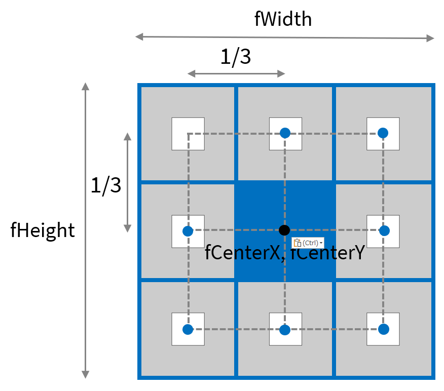
下のように，再帰呼び出しを7つ追加しましょう． 演習中に全て考えて記述するには時間が足りないので，意味が分かればよい．
Code
xxxxxxxxxxvoid setup(){ size( 1000, 1000 ); drawMandara( width/2, height/2, width, height );}
void drawMandara( float fCenterX, float fCenterY, float fWidth, float fHeight ){ rectMode( CENTER ); rect( fCenterX, fCenterY, fWidth/3, fWidth/3 ); // 再帰呼び出し if( fWidth > 8 ) { drawMandara( fCenterX - fWidth/3, fCenterY - fHeight/3, fWidth/3, fHeight/3 ); // 左上 drawMandara( fCenterX, fCenterY - fHeight/3, fWidth/3, fHeight/3 ); // 上 drawMandara( fCenterX + fWidth/3, fCenterY - fHeight/3, fWidth/3, fHeight/3 ); // 右上 drawMandara( fCenterX - fWidth/3, fCenterY, fWidth/3, fHeight/3 ); // 左 drawMandara( fCenterX + fWidth/3, fCenterY, fWidth/3, fHeight/3 ); // 右 drawMandara( fCenterX - fWidth/3, fCenterY + fHeight/3, fWidth/3, fHeight/3 ); // 左下 drawMandara( fCenterX, fCenterY + fHeight/3, fWidth/3, fHeight/3 ); // 下 drawMandara( fCenterX + fWidth/3, fCenterY + fHeight/3, fWidth/3, fHeight/3 ); // 右下 }}
演習6
木のような図形の描画 L System と呼ばれるアルゴリズムの一種

1.ウィンドウを表示する．
Activeモードでウィンドウを表示させるところまで記述する． ※静止画なのでdraw()は不要
Code
xxxxxxxxxxvoid setup(){ size( 1000, 1000 );}2. 再帰関数を定義し，コールする．
void関数drawTree()を定義する．
Code
xxxxxxxxxxvoid setup(){ size( 1000, 1000 ); drawTree( 200 ); // 再帰関数のコール}
void drawTree( float fLength ){}仮引数fLengthは線の長さの情報を表す．
実引数200は，最初の線の長さの情報をdrawTree()に渡す．
3. 再帰呼び出しを記述する．
再帰呼び出しの度に仮引数fLengthを小さくしていく予定なので，以下のように記述する．
Code
xxxxxxxxxxvoid setup(){ size( 1000, 1000 ); drawTree( 200 );}
void drawTree( float fLength ){ if( fLength > 4 ) // 再帰を続行する条件 { drawTree( fLength * 0.75 ); }}再帰呼び出しの度に，線（枝）の長さを0.75倍していく．
4. 必要な仮引数を追加する．
線を描画するためには，下図の青色の仮引数が必要となる． 黒色の変数は，仮引数を元に三角比を用いることで算出できる．
また，これらの仮引数に渡す最初の実引数は下図のようになる．

以上を元に，記述を追加する．
Code
xxxxxxxxxxvoid setup(){ size( 1000, 1000 ); drawTree( width/2, height, 200, -90 ); // 実引数を追加}
void drawTree( float fBeginX, float fBeginY, float fLength, float fDegree ) // 仮引数を追加{ if( fLength > 4 ) { drawTree( fBeginX, fBeginY, fLength * 0.75, fDegree ); // 一時的にfBeginX, fBeginY, fDegreeを記述 }}
5. 終端のXY座標値を記述する．
ステップ5でも述べたが，ある線の始点と角度，線の長さの情報があれば，三角比を用いることで終点のXY座標値を算出できる．
Code
xxxxxxxxxxvoid setup(){ size( 1000, 1000 ); drawTree( width/2, height, 200, -90 );}
void drawTree( float fBeginX, float fBeginY, float fLength, float fDegree ){ // 終端のXY座標値 float fEndX = fBeginX + fLength * cos( radians( fDegree ) ); float fEndY = fBeginY + fLength * sin( radians( fDegree ) ); if( fLength > 4 ) { drawTree( fEndX, fEndY, fLength * 0.75, fDegree ); // fEndX, fEndYに書き換える }}6. 線の描画命令を記述する．
線の描画命令を記述する．
Code
xxxxxxxxxxvoid setup(){ size( 1000, 1000 ); drawTree( width/2, height, 200, -90 );}
void drawTree( float fBeginX, float fBeginY, float fLength, float fDegree ){ // 終端のXY座標値 float fEndX = fBeginX + fLength * cos( radians( fDegree ) ); float fEndY = fBeginY + fLength * sin( radians( fDegree ) ); // 線の描画 line( fBeginX, fBeginY, fEndX, fEndY ); if( fLength > 4 ) { drawTree( fEndX, fEndY, fLength * 0.75, fDegree ); }}
7. 枝の角度を変える．
再帰呼び出しの度に，角度を20°増やす．
Code
xxxxxxxxxxvoid setup(){ size( 1000, 1000 ); drawTree( width/2, height, 200, -90 );}
void drawTree( float fBeginX, float fBeginY, float fLength, float fDegree ){ // 終端のXY座標値 float fEndX = fBeginX + fLength * cos( radians( fDegree ) ); float fEndY = fBeginY + fLength * sin( radians( fDegree ) ); // 線の描画 line( fBeginX, fBeginY, fEndX, fEndY ); if( fLength > 4 ) { drawTree( fEndX, fEndY, fLength * 0.75, fDegree + 20 ); // fDegree + 20 }}
8. 枝分かれさせる．
再帰呼び出しをもう一つ追加することで，枝を分けることができる． 下図のように，もう一本の枝は角度を-20°するとよい．

Code
xxxxxxxxxxvoid setup(){ size( 1000, 1000 ); drawTree( width/2, height, 200, -90 );}
void drawTree( float fBeginX, float fBeginY, float fLength, float fDegree ){ // 終端のXY座標値 float fEndX = fBeginX + fLength * cos( radians( fDegree ) ); float fEndY = fBeginY + fLength * sin( radians( fDegree ) ); // 線の描画 line( fBeginX, fBeginY, fEndX, fEndY ); if( fLength > 4 ) { drawTree( fEndX, fEndY, fLength * 0.75, fDegree + 20 ); drawTree( fEndX, fEndY, fLength * 0.75, fDegree - 20 ); // 枝分かれ }}
9. 形状の変化
以下の値を変えることで，形状の変化を操作できる． いろいろ試してみましょう．
最初の始点の座標値
初期値:
width/2, height
最初の枝の角度
初期値:
90°
枝の基本の長さ
初期値:
200
再帰呼び出し毎にかける長さの倍率
初期値:
0.75
再帰呼び出し毎に加算する角度
初期値:
+20°,-20°
再帰のを続ける条件
初期値:
iLength > 2
例
Code
xxxxxxxxxxvoid setup(){ size( 1000, 1000 ); drawTree( 0, height, 400, -40 );}
void drawTree( float fBeginX, float fBeginY, float fLength, float fDegree ){ // 終端のXY座標値 float fEndX = fBeginX + fLength * cos( radians( fDegree ) ); float fEndY = fBeginY + fLength * sin( radians( fDegree ) ); // 線の描画 line( fBeginX, fBeginY, fEndX, fEndY ); if( fLength > 2 ) { drawTree( fEndX, fEndY, fLength * 0.65, fDegree + 10 ); drawTree( fEndX, fEndY, fLength * 0.6, fDegree - 40 ); // 枝分かれ }}
身の回りの再帰的現象


フラクタル
フラクタルは再帰的であり，かつ部分と全体が同じ構造となっている．（自己相似）

レイトレーシング
CGにおける描画法の一種であるレイトレーシングも再帰呼び出しを用いる．

サンプル集
再帰呼び出しのアルゴリズムを一から組み立てるのが難しい場合は，この章に記述されている既存のアルゴリズムを元にプログラミングを始めることも有用である． しかし，これら既存のアルゴリズムを利用するためには，それらの仕組みをある程度理解する必要があることに留意．
シェルピンスキーのギャスケット
正三角形で構成される模様．
再帰回数:1
再帰回数:2
再帰回数:3
Code
xxxxxxxxxxvoid setup(){ size(400,400); recursiveTriangle( width/2, height/1.7, width );}void recursiveTriangle( float fX, float fY, float fWidth ){ if( fWidth > 4 ) { float fInCircleRadius = ( fWidth/2.0 ) * tan( radians(30) );// 三角形の内接円の半径 float fHeight = fWidth * sin(radians(60));// 三角形の高さ // 三角形の描画 triangle( fX, fY - ( fHeight - fInCircleRadius ), fX + fWidth/2.0, fY + fInCircleRadius, fX - fWidth/2.0, fY + fInCircleRadius ); // 上，左下，右下に新たに描画. recursiveTriangle( fX, fY - fInCircleRadius, fWidth/2.0 ); recursiveTriangle( fX + fInCircleRadius * cos( radians( 30 ) ), fY + fInCircleRadius * sin( radians( 30 ) ), fWidth/2.0 ); recursiveTriangle( fX - fInCircleRadius * cos( radians( 30 ) ), fY + fInCircleRadius * sin( radians( 30 ) ), fWidth/2.0 ); }}
例
シェルピンスキーのギャスケットを10個敷き詰め，半分は上下反転させる．
Code
xxxxxxxxxxvoid setup(){ size( 800, 800 ); translate( width/2, height/2 ); recursiveTriangle( -232, 267, 464 ); // 左下 recursiveTriangle( -464, -133, 464 ); // 左上 recursiveTriangle( 0, -133, 464 ); // 上 recursiveTriangle( 464, -133, 464 ); // 右上 recursiveTriangle( 232, 267, 464 ); // 右下 rotate( radians( 180 ) );
// 逆さ recursiveTriangle( -232, 267, 464 ); // 左上 recursiveTriangle( -464, -133, 464 ); // 左下 recursiveTriangle( 0, -133, 464 ); // 上 recursiveTriangle( 464, -133, 464 ); // 右下 recursiveTriangle( 232, 267, 464 ); // 右上
}void recursiveTriangle( float fX, float fY, float fWidth ){ if( fWidth > 4 ) { float fInCircleRadius = ( fWidth/2.0 ) * tan( radians(30) );// 三角形の内接円の半径 float fHeight = fWidth * sin(radians(60));// 三角形の高さ strokeWeight( 0.5 ); // 三角形の描画 fill( random( 200, 255 ), random( 10, 65 ), random( 8, 30 ) ); triangle( fX, fY - ( fHeight - fInCircleRadius ), fX + fWidth/2.0, fY + fInCircleRadius, fX - fWidth/2.0, fY + fInCircleRadius ); // 上，左下，右下に新たに描画. recursiveTriangle( fX, fY - fInCircleRadius, fWidth/2.0 ); recursiveTriangle( fX + fInCircleRadius * cos( radians( 30 ) ), fY + fInCircleRadius * sin( radians( 30 ) ), fWidth/2.0 ); recursiveTriangle( fX - fInCircleRadius * cos( radians( 30 ) ), fY + fInCircleRadius * sin( radians( 30 ) ), fWidth/2.0 ); }}黄金比
矩形を再帰的に黄金比に分割しつつ，弧を描画する．
Code
xxxxxxxxxxvoid setup(){ size( 800, 500 ); drawGoldenRect( 70, 40, 400 );}
void drawGoldenRect( float fX, float fY, float fRectSize ){ // 正方形 stroke( 0, 0, 0 ); rect( fX, fY, fRectSize, fRectSize );
// 円弧描画 stroke( 0, 0, 255 ); arc( fX + fRectSize, fY + fRectSize, 2 * fRectSize, 2 * fRectSize, radians(180), radians(270), OPEN ); if( fRectSize > 4 ) { pushMatrix(); // 座標変換 translate( fX + fRectSize * 1.618, fY ); // 次の描画位置へ移動 rotate( radians( 90 ) ); // 90°回転 drawGoldenRect( 0, 0, fRectSize * 0.618 ); // 再帰呼び出し popMatrix(); }}
例
ゼンマイの束状の表現
Code
xxxxxxxxxxvoid setup(){ size( 800, 800 ); background( 0, 20, 0 ); translate( -10, height + 200 ); rotate( radians( -80 ) ); // 80本ランダム描画 for( int iTsuru = 0; iTsuru < 80; iTsuru++ ) { pushMatrix(); // 揺らす. translate( random( -40, 300 ), random( -80, 200 ) ); scale( random( 0.8, 1.0 ) ); rotate( radians( random( -4, 4 ) ) ); drawGoldenRect( 0, 0, 500 ); popMatrix(); // 奥行を出すための半透明黒 noStroke(); fill( 0, 40 ); rect( 200, -200, 1000, 1000 ); }}
void drawGoldenRect( float fX, float fY, float fRectSize ){ // 円弧描画 strokeWeight( 20 ); noFill(); stroke( random( 10, 44 ), random( 255, 200 ) - fRectSize/3.0, random( 40, 84 ) ); arc( fX + fRectSize, fY + fRectSize, 2 * fRectSize, 2 * fRectSize, radians(180), radians(270), OPEN ); if( fRectSize > 4 ) { pushMatrix(); // 座標変換 translate( fX + fRectSize * 1.618, fY ); // 次の描画位置へ移動 rotate( radians( 90 ) ); // 90°回転 drawGoldenRect( 0, 0, fRectSize * 0.618 ); // 再帰呼び出し popMatrix(); }}矩形の再帰的分割描画
矩形の長辺を再帰的にランダム分割する．
Code
xxxxxxxxxxfinal float DIVIDE_RANGE = 0.6; // 分割の振れ幅(0~1)final int OFS_X = 10; // スクリーン左右の空白final int OFS_Y = 10;void setup(){ size(600, 600); background(255); noFill(); drawRectDivided( OFS_X, OFS_Y, width - 2 * OFS_X, height - 2 * OFS_Y );}
void drawRectDivided( float iX, float iY, float fWidth, float fHeight ){ rect( iX, iY, fWidth, fHeight ); if ( fWidth > 30 ) { if ( fWidth > fHeight ) { // 左右に二つに割る // 割った後の左の矩形の幅 float fWidthLRect = fWidth * random( ( 1 - DIVIDE_RANGE )/2.0, 1 - ( 1 - DIVIDE_RANGE )/2.0 ); drawRectDivided( iX, iY, fWidthLRect, fHeight); //左側の矩形 drawRectDivided( iX + fWidthLRect, iY, fWidth - fWidthLRect, fHeight ); //右側の矩形 } else { // 上下に二つに割る // 割った後の上の矩形の高さ float fHeightUpper = fHeight * random( ( 1 - DIVIDE_RANGE )/2.0, 1 - ( 1 - DIVIDE_RANGE )/2.0 ); drawRectDivided( iX, iY, fWidth, fHeightUpper ); //上側の矩形 drawRectDivided( iX, iY + fHeightUpper, fWidth, fHeight - fHeightUpper ); //下側の矩形 } }}
例
矩形の代わりにカプセル状の図形で満たす表現
Code
xxxxxxxxxxfinal float DIVIDE_RANGE = 0.6; // 分割の振れ幅(0~1)final int OFS_X = 10; // スクリーン左右の空白final int OFS_Y = 10;void setup(){ size( 800, 800 ); background( 0 ); noFill(); strokeWeight( 2 ); ellipseMode( CORNER ); drawRectDivided( OFS_X, OFS_Y, width - 2 * OFS_X, height - 2 * OFS_Y, 10 );}
void drawRectDivided( float iX, float iY, float fWidth, float fHeight, int iLevel ){ if ( iLevel > 0 ) { if ( fWidth > fHeight ) { // 左右に二つに割る // 割った後の左の矩形の幅 float fWidthLRect = fWidth * random( ( 1 - DIVIDE_RANGE )/2.0, 1 - ( 1 - DIVIDE_RANGE )/2.0 ); drawRectDivided( iX, iY, fWidthLRect, fHeight, iLevel - 1 ); //左側の矩形 drawRectDivided( iX + fWidthLRect, iY, fWidth - fWidthLRect, fHeight, iLevel - 1 ); //右側の矩形 } else { // 上下に二つに割る // 割った後の上の矩形の高さ float fHeightUpper = fHeight * random( ( 1 - DIVIDE_RANGE )/2.0, 1 - ( 1 - DIVIDE_RANGE )/2.0 ); drawRectDivided( iX, iY, fWidth, fHeightUpper, iLevel - 1 ); //上側の矩形 drawRectDivided( iX, iY + fHeightUpper, fWidth, fHeight - fHeightUpper, iLevel - 1 ); //下側の矩形 } } else { if ( fWidth > fHeight ) { // 横長カプセル fill( random( 200, 250 ), random( 20, 80 ), random( 10, 20 ) ); arc( iX, iY, fWidth, fHeight, radians( 90 ), radians( 270 ), CLOSE ); fill( random( 230, 250 ), random( 210, 230 ), random( 200, 230 ) ); arc( iX, iY, fWidth, fHeight, radians( 270 ), radians( 450 ), CLOSE ); } else { // 縦長カプセル fill( random( 10, 30 ), random( 30, 80 ), random( 200, 250 ) ); arc( iX, iY, fWidth, fHeight, radians( 0 ), radians( 180 ), CLOSE ); fill( random( 200, 250 ), random( 200, 210 ), random( 200, 220 ) ); arc( iX, iY, fWidth, fHeight, radians( 180 ), radians( 360 ), CLOSE ); } }}ドラゴン曲線
フラクタル図形の一種． 下図のように，「線を二等分し，角度が90°をなす二本の線を生成する」処理を再帰的に行うことで描画される図形．
再帰回数：0

再帰回数：1
再帰回数：2
再帰回数：3
分割後の点の座標の求め方
上図左のような（グレーの）直角三角形を基準に，幾何学的に分割後の点の座標値( fNewX, fNewY )を求めることができる．
Code
xxxxxxxxxxvoid setup(){ size( 800, 800 ); drawDragonCurve( 200, 200, 700, 500 );}
void drawDragonCurve( float fBeginX, float fBeginY, float fEndX, float fEndY ){ // 開始点から終了点への距離 float fLength = sqrt( pow( fEndX - fBeginX, 2 ) + pow( fEndY - fBeginY, 2 ) ); if( fLength > 10 ) { // 直角三角形のX軸方向の大きさ float fTriangleX = ( fEndX - fBeginX ) / 2.0; // 直角三角形のY軸方向の大きさ float fTriangleY = ( fBeginY - fEndY ) /2.0; // fBeginY方向へ向かうのが正 float fBeginToNewX = fTriangleX + fTriangleY; float fEndToNewY = fTriangleX + fTriangleY; // 新たに生成される点のXY座標値 float fNewX = fBeginX + fBeginToNewX; float fNewY = fEndY + fEndToNewY; // 二つの線に再帰的に分割 drawDragonCurve( fBeginX, fBeginY, fNewX, fNewY ); drawDragonCurve( fEndX, fEndY, fNewX, fNewY ); } else { line( fBeginX, fBeginY, fEndX, fEndY ); }}例
地形図のような模様の描画
Code
xxxxxxxxxxvoid setup(){ size( 800, 800 ); background( 20, 40, 200 ); // 8個のドラゴンカーブ for( int iDragonCurve = 0; iDragonCurve < 8; iDragonCurve++ ) { drawDragonCurve( width/5.0, random( height/2 ), width, random( height ) ); }}
void drawDragonCurve( float fBeginX, float fBeginY, float fEndX, float fEndY ){ // 開始点から終了点への距離 float fLength = sqrt( pow( fEndX - fBeginX, 2 ) + pow( fEndY - fBeginY, 2 ) ); if( fLength > 10 ) { // 直角三角形のX軸方向の大きさ float fTriangleX = ( fEndX - fBeginX ) / 2.0; // 直角三角形のY軸方向の大きさ float fTriangleY = ( fBeginY - fEndY ) /2.0; // fBeginY方向へ向かうのが正 float fBeginToNewX = fTriangleX + fTriangleY; float fEndToNewY = fTriangleX + fTriangleY; // 新たに生成される点のXY座標値 float fNewX = fBeginX + fBeginToNewX; float fNewY = fEndY + fEndToNewY; // 二つの線に再帰的に分割 drawDragonCurve( fBeginX, fBeginY, fNewX, fNewY ); drawDragonCurve( fEndX, fEndY, fNewX, fNewY ); } else { // 線の代わりに円描画 float fCenterX = ( fBeginX + fEndX ) / 2.0; float fCenterY = ( fBeginY + fEndY ) / 2.0; noStroke(); fill( random( 80, 160 ), random( 100, 255 ), random( 10, 30 ), 180 ); circle( fCenterX, fCenterY, fLength/2.0 ); //line( fBeginX, fBeginY, fEndX, fEndY ); }}コッホ曲線
フラクタル図形の一種． 下図のように，「線を三等分に分割し，正三角形を作る」処理を再帰的に行うことで描画される図形．
再帰回数:1
再帰回数:2
分割後の３点の座標の求め方
上図のように，飛び出る点の座標( fPointXY[1][0], fPointXY[1][1] )は，二つの角度の合計から求めることができる．
詳しくは調べてください． 再帰関数の中で三角関数の加法定理を用いているため，難易度高め．
Code
xxxxxxxxxxvoid setup(){ size( 800, 800 ); drawKochCurve( 0, height/2, width, height/2 );}
void drawKochCurve( float fBeginX, float fBeginY, float fEndX, float fEndY ){ float fLength = sqrt( pow( fEndX - fBeginX, 2 ) + pow( fEndY - fBeginY, 2 ) ); if( fLength > 16 ) { // 新たに生成される三つの点のXY座標値 float[][] fPointXY = new float[3][2]; // 三等分する二つの点の座標 fPointXY[0][0] = fBeginX + ( fEndX - fBeginX ) / 3.0; fPointXY[0][1] = fBeginY + ( fEndY - fBeginY ) / 3.0; fPointXY[2][0] = fBeginX + 2 * ( fEndX - fBeginX ) / 3.0; fPointXY[2][1] = fBeginY + 2 * ( fEndY - fBeginY ) / 3.0; float fNewLength = fLength / 3.0; float fCosO = ( fPointXY[2][0] - fPointXY[0][0] ) / fNewLength; float fSinO = ( fPointXY[2][1] - fPointXY[0][1] ) / fNewLength; float fCos1 = cos( radians( - 60 ) ); float fSin1 = sin( radians( - 60 ) ); // 正三角形の３つ目の飛び出た点の座標を求める． // 加法定理 // cos( a + b ) = cos(a) * cos(b) - sin(a) + sin(b) // sin( a + b ) = sin(a) * cos(b) + cos(a) * sin(b) fPointXY[1][0] = fPointXY[0][0] + fNewLength * ( fCosO * fCos1 - fSinO * fSin1 ); fPointXY[1][1] = fPointXY[0][1] + fNewLength * ( fSinO * fCos1 + fCosO * fSin1 ); drawKochCurve( fBeginX, fBeginY, fPointXY[0][0], fPointXY[0][1] ); drawKochCurve( fPointXY[0][0], fPointXY[0][1], fPointXY[1][0], fPointXY[1][1] ); drawKochCurve( fPointXY[1][0], fPointXY[1][1], fPointXY[2][0], fPointXY[2][1] ); drawKochCurve( fPointXY[2][0], fPointXY[2][1], fEndX, fEndY ); } else { line( fBeginX, fBeginY, fEndX, fEndY ); }}例
雪の結晶のような模様の表現
Code
xxxxxxxxxxvoid setup(){ size( 800, 800 ); background( 230, 235, 245 ); // 100個の氷の結晶 for( int iSnouCrystal = 0; iSnouCrystal < 120; iSnouCrystal++ ) { float fSize = random( 60, 160 ); drawSnowCrystal( random( width ), random( height ), fSize, fSize ); }}
void drawSnowCrystal( float fX, float fY, float fWidth, float fHeight ){ pushMatrix(); translate( fX, fY ); // 縮小しながら6つ描画 for( int iKochCurve = 0; iKochCurve < 6; iKochCurve++ ) { scale( 0.8 ); drawKochCurve( 0, - fHeight * 0.5, fWidth / 2.0, fHeight * 0.22 ); drawKochCurve( fWidth / 2.0, fHeight * 0.22, -fWidth / 2.0, fHeight * 0.22 ); drawKochCurve( -fWidth / 2.0, fHeight * 0.22, 0, - fHeight * 0.5 ); } popMatrix();}
void drawKochCurve( float fBeginX, float fBeginY, float fEndX, float fEndY ){ float fLength = sqrt( pow( fEndX - fBeginX, 2 ) + pow( fEndY - fBeginY, 2 ) ); if( fLength > 10 ) { // 新たに生成される三つの点のXY座標値 float[][] fPointXY = new float[3][2]; // 三等分する二つの点の座標 fPointXY[0][0] = fBeginX + ( fEndX - fBeginX ) / 3.0; fPointXY[0][1] = fBeginY + ( fEndY - fBeginY ) / 3.0; fPointXY[2][0] = fBeginX + 2 * ( fEndX - fBeginX ) / 3.0; fPointXY[2][1] = fBeginY + 2 * ( fEndY - fBeginY ) / 3.0; float fNewLength = fLength / 3.0; float fCosO = ( fPointXY[2][0] - fPointXY[0][0] ) / fNewLength; float fSinO = ( fPointXY[2][1] - fPointXY[0][1] ) / fNewLength; float fCos1 = cos( radians( - 60 ) ); float fSin1 = sin( radians( - 60 ) ); // 正三角形の３つ目の飛び出た点の座標を求める． // 加法定理 // cos( a + b ) = cos(a) * cos(b) - sin(a) + sin(b) // sin( a + b ) = sin(a) * cos(b) + cos(a) * sin(b) fPointXY[1][0] = fPointXY[0][0] + fNewLength * ( fCosO * fCos1 - fSinO * fSin1 ); fPointXY[1][1] = fPointXY[0][1] + fNewLength * ( fSinO * fCos1 + fCosO * fSin1 ); drawKochCurve( fBeginX, fBeginY, fPointXY[0][0], fPointXY[0][1] ); drawKochCurve( fPointXY[0][0], fPointXY[0][1], fPointXY[1][0], fPointXY[1][1] ); drawKochCurve( fPointXY[1][0], fPointXY[1][1], fPointXY[2][0], fPointXY[2][1] ); drawKochCurve( fPointXY[2][0], fPointXY[2][1], fEndX, fEndY ); } else { strokeWeight( 2 ); stroke( random( 40, 80 ), random( 60, 100 ), random( 140, 220 ), 200 ); line( fBeginX, fBeginY, fEndX, fEndY ); }}マンデルブロ集合の描画
フラクタル図形の一種
Code
xxxxxxxxxxfinal float DRAW_OFS_X = -0.7; // 描く領域のオフセットXfinal float DRAW_OFS_Y = 0; // 描く領域のオフセットYfinal float DRAW_SCALE = 1.4; // 描く領域のスケールfinal int RECURSIVE_MAX = 50; // 繰り返し上限回数final float DRAW_SIZE = 4; // 描く領域の一辺の長さ
void setup(){ size(600,600); colorMode(HSB,RECURSIVE_MAX,1,1); background(0,0,0); // マンデルブロ集合の描画 for (int iPixelX = 0; iPixelX < width; iPixelX++) // X（実部）方向のループ { // 定数Cの実部 float fCReal = iPixelX * DRAW_SIZE/( width*DRAW_SCALE) - DRAW_SIZE/(2*DRAW_SCALE) + DRAW_OFS_X; for (int iPixelY = 0; iPixelY < height; iPixelY++) // Y（虚部）方向のループ { // 定数Cの虚部 float fCImaginary = iPixelY * DRAW_SIZE/( height*DRAW_SCALE) - DRAW_SIZE/(2*DRAW_SCALE) + DRAW_OFS_Y; drawFractal( 0, 0, fCReal, fCImaginary, iPixelX, iPixelY, RECURSIVE_MAX ) ; } }}
void drawFractal( float fZReal, float fZImaginary, float fCReal, float fCImaginary, int iPixelX, int iPixelY, int iLevel ){ float fZRealNew = pow(fZReal,2) - pow(fZImaginary,2) + fCReal; // z^2+Cの計算（実部） float fZImaginaryNew = 2 * fZReal * fZImaginary + fCImaginary; // z^2+Cの計算（虚部） if( pow(fZRealNew,2)+pow(fZImaginaryNew,2) > 4 ) // もし絶対値が2を（絶対値の2乗が4を）超えていたら { stroke( iLevel, 1, 1 ); // 再帰の回数を色相へ point(iPixelX,iPixelY); // (iPixelX,iPixelY)の位置のピクセルをで塗る return; // 再帰終了 } else if( iLevel > 0 ) { drawFractal( fZRealNew, fZImaginaryNew, fCReal, fCImaginary, iPixelX, iPixelY, iLevel-1 ); }}
ジュリア集合の描画
フラクタル図形の一種
Code
xxxxxxxxxxfinal float DRAW_OFS_X = 0; // 描く領域のオフセットXfinal float DRAW_OFS_Y = 0; // 描く領域のオフセットYfinal float DRAW_SCALE = 1.4; // 描く領域のスケールfinal int RECURSIVE_MAX = 200; // 繰り返し上限回数final float DRAW_SIZE = 4; // 描く領域の一辺の長さfinal float C_REAL = -0.3; // 定数Cの実部final float C_IMAGINARY = -0.63; // 定数Cの虚部
void setup(){ size(600,600); colorMode(HSB,RECURSIVE_MAX,1,1); background(0,0,0); // ジュリア集合の描画 for (int iPixelX = 0; iPixelX < width; iPixelX++) // X（実部）方向のループ { // 変数Zの実部 float fZReal = iPixelX * DRAW_SIZE/( width*DRAW_SCALE ) - DRAW_SIZE/( 2*DRAW_SCALE ) + DRAW_OFS_X; for (int iPixelY = 0; iPixelY < height; iPixelY++) // Y（虚部）方向のループ { // 変数Zの虚部 float fZImaginary = iPixelY * DRAW_SIZE/( height*DRAW_SCALE ) - DRAW_SIZE/( 2*DRAW_SCALE ) + DRAW_OFS_Y; drawFractal( fZReal, fZImaginary, C_REAL, C_IMAGINARY, iPixelX, iPixelY, RECURSIVE_MAX ) ; } }}
void drawFractal( float fZReal, float fZImaginary, float fCReal, float fCImaginary, int iPixelX, int iPixelY, int iLevel ){ float fZRealNew = pow(fZReal,2) - pow(fZImaginary,2) + fCReal; // z^2+Cの計算（実部） float fZImaginaryNew = 2 * fZReal * fZImaginary + fCImaginary; // z^2+Cの計算（虚部） if( pow(fZRealNew,2)+pow(fZImaginaryNew,2) > 4 ) // もし絶対値が2を（絶対値の2乗が4を）超えていたら { stroke( iLevel, 1, 1 ); // 再帰の回数を色相へ point(iPixelX,iPixelY); // (iPixelX,iPixelY)の位置のピクセルをで塗る return; // 再帰終了 } else if( iLevel > 0 ) { drawFractal( fZRealNew, fZImaginaryNew, fCReal, fCImaginary, iPixelX, iPixelY, iLevel-1 ); }}
第９回：出力
表示ウィンドウの画像を保存する．
save()
プログラムを実行すると，プログラムが置かれているフォルダ（スケッチブック）内に画像が保存される.
通常はプログラムの最後に書くとよい．
保存可能なファイル形式
TIFF (.tif), TARGA (.tga), JPEG (.jpg), PNG (.png)
構文
Code
xxxxxxxxxxsave(“ファイル名.拡張子”); // ※ダブルクォーテーション（半角）を忘れずに.例
Code
xxxxxxxxxxvoid setup(){ size( 400, 400 ); rect( 100, 100, 200, 200 ); save( "rect.png" );}
https://processing.org/reference/save_.html
動画を保存する．
saveFrame()
アニメーションのような連続した複数の画像出力することができる．
構文1
Code
xxxxxxxxxxsaveFrame();この構文では，TIFF (.tif) 形式のファイルが出力される．
例
draw()ブロックの末尾に記述する．
Code
xxxxxxxxxxvoid setup(){ size( 400, 400 );}
void draw(){ saveFrame();}TIFFフォーマットの連番が付いた画像ファイルが保存される．
構文2
画像のフォーマットやファイル名を変更したい場合は，こちらの構文を用いる．
Code
xxxxxxxxxxsaveFrame( "ファイル名.拡張子" )ファイル名には複数のハッシュマークを記述する必要がある．
ハッシュマーク
#
連番を指定するためにファイル名の指定にハッシュマークを含める必要がある．
ハッシュマークがフレーム番号に置き換えられる．
ハッシュマークの#の数でフレーム番号の最大桁数を指定することができる．
例1
Code
xxxxxxxxxxsaveFrame( "screen-####.png" );
/** 出力ファイルscreen-0001.pngscreen-0002.pngscreen-0003.pngscreen-0004.png...*/例2
Code
xxxxxxxxxxsaveFrame( "animation#####.jpg" );
/** 出力ファイルanimation00001.pnganimation00001.pnganimation00001.pnganimation00001.png...*/フレーム区間を指定して保存する．
例えば，「20フレーム目から40フレーム目の区間を出力したい」という時がある．
frameCount
プログラムを実行してから，現在の描画フレームの番号を取得するシステム変数．
frameCountを使って以下のようにif文を用いることで，指定した２つのフレーム番号間だけ出力を行うことができる．
Code
xxxxxxxxxxvoid setup(){ size( 400, 400 ); background( 201, 201, 201 );}
void draw(){ rect( 20, 20, 100, 100 ); if( frameCount >= 20 && frameCount <= 40 ) // framecount が20以上かつ40以下 { saveFrame( "screen-####.png" ); }}
フォルダを指定して保存する．
画像や動画を保存する際，ファイル名にフォルダ（ディレクトリ）名を記述することで，出力するフォルダを指定できる．
ファイルやディレクトリ間はスラッシュ/で区切る．
Code
xxxxxxxxxxsave( "フォルダ名/ファイル名.拡張子" )Code
xxxxxxxxxxsaveFrame( "フォルダ名/ファイル名.拡張子" )例
Code
xxxxxxxxxxvoid setup(){ size( 400, 400 ); background( 201, 201, 201 );}
void draw(){ rect( 20, 20, 100, 100 ); saveFrame( "frames/screen-####.png" );}特に動画の保存等は，複数の出力ファイルを別フォルダにまとめることができるので活用したい．
https://processing.org/reference/saveFrame_.html
PDFへ出力
プログラムを実行すると，プログラムが置かれているフォルダ（スケッチブック）内にpdfファイルが保存される.
少々ステップを踏む必要あり．
方法
ライブラリのインポート
（日本語）「スケッチ」メニュー ＞ 「ライブラリをインポート」 ＞ 「PDF Export」を選択
（英語版）「Sketch」メニュー ＞ 「import Library」 ＞ 「PDF Export」を選択

上記を選択すると，プログラムの一行目にimport processing.pdf.*;が追加される．
※メニューを使わず，直に入力も可能．

size()の記述を変更する． 以下のような構文に変更する．Code
xxxxxxxxxxsize( 横のサイズ, 縦のサイズ, PDF, “ファイル名.pdf” );

プログラム末尾に
exit();を追加． Activeモードを使用中ならsetup()ブロックの末尾に記述する．

プログラムを実行すると，pdfファイルが出力される． この時，表示ウィンドウは表示されない．

アプリケーションとして出力する．
Processing で作成したプログラムをアプリケーションとして出力し，Processingが不要な汎用のアプリケーションとして配布することができる．
「ファイル」 > 「アプリケーションとしてエクスポート」を選択

オプションを選んでエクスポート
フルスクリーンを止めたい時は，「フルスクリーン」 > 「プレゼンテーションモード」のチェックを外す．
Mac OS X 用に出力する場合，「プラットフォーム」 > 「Max OS X」にチェックを入れる．
Windows の場合，「Javaの埋め込み」にチェックを入れておいたほうが無難．
出力フォルダ
Winsowsの場合，以下のようにフォルダが出力される．
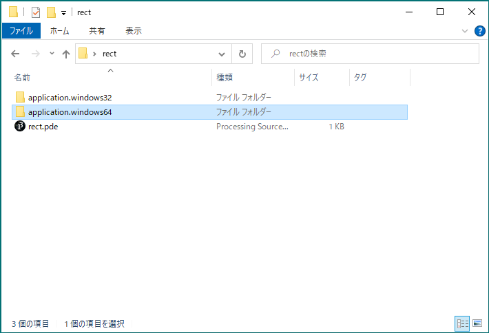
動作させるOSが64bitか32bitかで，使用するフォルダは異なる． 昨今のOSはほぼ64bitなので，こちらを用いることを前提とする． 「application.windows64」フォルダの中身が全て必要であるので，配布などを行う場合，このフォルダごと配布する．（フォルダのリネームは可）
実行ファイル
Windowsの場合，以下の場所に実行ファイルが格納されている．
「application.windows64」 > ファイル名.exe
これを通常のアプリケーションのようにダブルクリックして実行する．
第１０回：デバッグ
デバッグとは
Debug
プログラムの問題を診断すること
デバッガ
Debugger
デバッグを行うためのツール
プロセッシング デバッガ
Processing Debuggar
プロセッシングのPDE（アプリケーション）に標準で用意されているデバッガ
デバッガの有効と無効の切り替え

ブレークポイントで止まる
デバッガが有効にされている間は，プログラムの実行は必ずブレークポイントが設定されている行で一時停止する． デバッグを行う上で，この操作が基本で起点となる．
ブレークポイントの設定方法
ブレークポイントの設定はデバッガが有効にされている間にしか行えないことに注意．
設定方法は３つある
プログラムを一時停止したい行をクリックし，カーソルを移動させ
デバッグ > ブレークポイントを切り替え
プログラムを一時停止したい行をクリックし，カーソルを移動させ
Ctrl + B （キーワードショートカット）
プログラムを一時停止したい行の行番号をクリックする
ブレークポイントが設定された行は以下のように行番号の表示が変化する．
ブレークポイントの削除方法
ブレークポイントが設定されている行にて，ブレークポイントの設定と同様の操作を行うとブレークポイントを削除できる．
変数ウィンドウ
デバッガが有効な間にプログラムを実行すると，ブレークポイントが設定されているすべての行でプログラムが一時停止する．
一時停止中に「Variables」という別ウィンドウに現在の変数の値が表示される．

ステップ
一時停止中にステップアイコンをクリックすると，現在一時停止している行が実行され，次の行でプログラムが一時停止する． 一行ずつプログラムを進めることができる．
通常のステップ以外にも，ステップイン，ステップアウトという機能もある．
ステップイン
関数が含まれる行において，ステップインを行うと，関数の中にステップを行う． 通常のステップは，関数を含む行から次の行にプログラムの実行を進めるのみ． 関数内のプログラムの実行を詳細に観察したい場合に用いる．
ステップアウト
現在一時停止している位置が関数の中であれば，ステップアウトは関数の呼び出し元に処理を移す． ステップインで関数内にステップを進めた後に，関数の呼び出し元に処理を戻す場合などに用いる．
続行
一時停止中に続行アイコンをクリックすると，現在一時停止している行からプログラム実行が再開される． 次のブレークポイントまでプログラムは停止しない．

停止
一時停止中に停止アイコンをクリックすると，プログラムの実行を終了できる． デバッガの使用を終了し，デバッガを無効にしたい場合などに使用する．

コンソールへの出力
print()
コンソールエリアへ数値や文字列を出力する命令．
プログラム処理の内容を視覚化し，問題が起こった場合原因を特定しやすくする．
問題を特定し，修正を行うことをデバッグという
詳しくはデバッグのページを参照のこと
変数の中の値をトレース（監視）することができる．
構文
文字列はダブルクォーテーション「"」で囲むこと
Code
xxxxxxxxxxprint( "文字列" );Code
xxxxxxxxxxprint( 値or変数 );Code
xxxxxxxxxxprint( "文字列" + 値or変数 ); // 文字列と値や変数を+を用いてつなげることも可能改行を含めたい場合
Code
xxxxxxxxxxprintln( 上記と同様のフォーマット );例
文字列をコンソールに表示する
Code
xxxxxxxxxxprint( "Hello Processing" );数値をコンソールに表示する
Code
xxxxxxxxxxprintln( 123 );print( 4567 );数値と文字列をつなげて表示する
Code
xxxxxxxxxxprint( "Answer is " + 12345 );
演習1
以下の出力を行うプログラムを書いてみましょう． ただし，数（1,2,3）は文字列ではなく数値としてプログラムに記述すること．（""で囲まない）

第１１回：ライブラリの使用
ライブラリ（Libraries）とは
便利なプログラムの集まりをまとめ，他のプログラムで再利用できるようにしたもの
Processingのライブラリは以下の二種類に分けられる
Core Libraries
Processingに標準でインストールされているライブラリ
インポートすればすぐに使用できる．
PDF Export, Network, SVG Export, Serial, DXF Export, Video, Sound, Hardware I/O
Contributed Libraries
Processingに標準ではインストールされていない外部ライブラリ
インポートの前に，別途インストールが必要
https://processing.org/reference/libraries/
インストールとインポート
Contributed Librariesを使用するには，事前にインストールする必要があります． Core Librariesを使用する際は，「1.ライブラリのインストール」の手順はスキップできます．
ライブラリのインストール
「スケッチ 」> 「ライブラリをインポート」 > 「ライブラリを追加」

「Contribution Manager」から，ライブラリを検索

インストールしたいライブラリを選択し，インストール開始
ライブラリのインポート
「スケッチ」メニュー ＞ 「ライブラリをインポート」 ＞ インポートしたいライブラリを選択
上記を選択すると，プログラムの一行目に
import ライブラリ名.*;の一文が追加される．
https://processing.org/reference/libraries/
第１１回：インタラクション
インタラクションとは
相互作用のこと． ここでは，ヒューマンコンピュータインタラクション（ Human-Computer Interaction ）のことを指す． 本来は人とコンピュータの相互作用の仕組みを探求する大きな研究分野．
この章では，ヒューマンコンピュータインタラクションにおける基礎として，マウスやキーボードによる入力方法を学ぶ．
マウス
マウスポインタの座標値
mouseX
mouseY
例
マウスポインタの位置に円を描画する
Code
xxxxxxxxxxvoid setup(){ size(400, 400);}
void draw(){ background( 204 ); // 毎フレーム画面をリフレッシュ circle( mouseX, mouseY, 33);}https://processing.org/reference/mouseX.html https://processing.org/reference/mouseY.html
マウスポインタの座標値（前フレーム）
pmouseX
pmouseY
直前の描画フレームにおけるマウスポインタの座標値が格納されている．
マウスポインタを素早く動かすと，mouseX, mouseY の値との差が大きくなる．
pmousX, pmouseYとの差から，マウスポインタの移動の速さと方向を取得できる．
例1
マウスポインタの移動の軌跡の描画．
Code
xxxxxxxxxxvoid setup(){ size( 400, 400 ); strokeWeight( 8 ); frameRate( 20 );}
void draw(){ background(204); line( mouseX, mouseY, pmouseX, pmouseY );}
例2
マウスポインタに少し遅れて追従する円の描画．
Code
xxxxxxxxxxvoid setup(){ size( 400, 400 ); frameRate( 20 );}
void draw(){ background(204); circle( pmouseX, pmouseY, 30 );}
https://processing.org/reference/pmouseX.html https://processing.org/reference/pmouseY.html
マウスボタンが押されているか
mousePressed
いずれかのマウスボタンが押されているか，押されていないかの情報がブール値( true, false )で格納されている．
true: いずれかのボタンが押されているfalse: どのボタンも押されていない
マウスボタンが押されている間は継続的にtrueとなる．
例
マウスボタンを押し続けると色が変わる矩形の描画
Code
xxxxxxxxxxint iColor = 0;
void draw(){ if( mousePressed ) { iColor+=2; if( iColor > 255 ) { iColor = 0; } } fill( iColor ); rect( 25, 25, 50, 50 );}https://processing.org/reference/mousePressed.html
押されているマウスボタンの種類
mouseButton
押されたマウスボタンの種類に応じ，LEFT, RIGHT, CENTERのいずれかの値が格納される．
mousePressedと組み合わせて使用することが多い．
mouseButtonの値は，マウスの状態が変化する（ポインタが移動するorマウスボタンが押される）まで残る点に留意．
例1
マウスボタンの種類に応じ，対応する矩形の色を変える．
Code
xxxxxxxxxxvoid draw(){ if ( mousePressed && mouseButton == LEFT ) { fill(0); } else { fill(255); } rect( 10, 25, 20, 50 ); // 左
if( mousePressed && mouseButton == CENTER ) { fill(0); } else { fill(255); } rect( 42, 25, 16, 30 ); // 中 if( mousePressed && mouseButton == RIGHT ) { fill(0); } else { fill(255); } rect( 70, 25, 20, 50 ); // 右}https://processing.org/reference/mouseButton.html
https://processing.org/tutorials/interactivity/
例2
簡易的なキャンバス
左クリックでポインタ位置に円を描画．
右クリックでポインタ位置に背景色の円を描画（消去）
ホイールボタンクリックで画面をクリアする．
Code
xxxxxxxxxxvoid setup(){ size( 400, 400 ); noStroke();}
void draw(){ if( mousePressed ) { if( mouseButton == LEFT ) { fill( 0 ); circle( mouseX, mouseY, 10 ); } else if( mouseButton == RIGHT ) { fill( 204 ); circle( mouseX, mouseY, 10 ); } else if( mouseButton == CENTER ) { background( 204 ); } }}演習
例2を自由にアレンジしてみましょう
演習時間：8分程度
作例
応用例
再帰呼び出し-コッホ曲線のサンプルの雪の結晶を，左クリックしたときのポインタ位置に描画する．
Code
xxxxxxxxxxvoid setup(){ size( 400, 400 ); background( 230, 235, 245 ); frameRate( 10 );}
void draw(){ if( mousePressed ) { float fSize = random( 60, 160 ); drawSnowCrystal( mouseX, mouseY, fSize, fSize ); } }
void drawSnowCrystal( float fX, float fY, float fWidth, float fHeight ){ pushMatrix(); translate( fX, fY ); // 縮小しながら6つ描画 for( int iKochCurve = 0; iKochCurve < 6; iKochCurve++ ) { scale( 0.8 ); drawKochCurve( 0, - fHeight * 0.5, fWidth / 2.0, fHeight * 0.22 ); drawKochCurve( fWidth / 2.0, fHeight * 0.22, -fWidth / 2.0, fHeight * 0.22 ); drawKochCurve( -fWidth / 2.0, fHeight * 0.22, 0, - fHeight * 0.5 ); } popMatrix();}
void drawKochCurve( float fBeginX, float fBeginY, float fEndX, float fEndY ){ float fLength = sqrt( pow( fEndX - fBeginX, 2 ) + pow( fEndY - fBeginY, 2 ) ); if( fLength > 10 ) { // 新たに生成される三つの点のXY座標値 float[][] fPointXY = new float[3][2]; // 三等分する二つの点の座標 fPointXY[0][0] = fBeginX + ( fEndX - fBeginX ) / 3.0; fPointXY[0][1] = fBeginY + ( fEndY - fBeginY ) / 3.0; fPointXY[2][0] = fBeginX + 2 * ( fEndX - fBeginX ) / 3.0; fPointXY[2][1] = fBeginY + 2 * ( fEndY - fBeginY ) / 3.0; float fNewLength = fLength / 3.0; float fCosO = ( fPointXY[2][0] - fPointXY[0][0] ) / fNewLength; float fSinO = ( fPointXY[2][1] - fPointXY[0][1] ) / fNewLength; float fCos1 = cos( radians( - 60 ) ); float fSin1 = sin( radians( - 60 ) ); // 正三角形の３つ目の飛び出た点の座標を求める． // 加法定理 // cos( a + b ) = cos(a) * cos(b) - sin(a) + sin(b) // sin( a + b ) = sin(a) * cos(b) + cos(a) * sin(b) fPointXY[1][0] = fPointXY[0][0] + fNewLength * ( fCosO * fCos1 - fSinO * fSin1 ); fPointXY[1][1] = fPointXY[0][1] + fNewLength * ( fSinO * fCos1 + fCosO * fSin1 ); drawKochCurve( fBeginX, fBeginY, fPointXY[0][0], fPointXY[0][1] ); drawKochCurve( fPointXY[0][0], fPointXY[0][1], fPointXY[1][0], fPointXY[1][1] ); drawKochCurve( fPointXY[1][0], fPointXY[1][1], fPointXY[2][0], fPointXY[2][1] ); drawKochCurve( fPointXY[2][0], fPointXY[2][1], fEndX, fEndY ); } else { strokeWeight( 2 ); stroke( random( 40, 80 ), random( 60, 100 ), random( 140, 220 ), 200 ); line( fBeginX, fBeginY, fEndX, fEndY ); }}キーボード
キーが押されているか
keyPressed
キーが押されているか，押されていないかの情報がブール値で格納されている．
true: いずれかのボタンが押されているfalse: どのキーも押されていない
例
いずれかのキーを押し続けると色が変わる矩形の描画
Code
xxxxxxxxxxvoid draw(){ if ( keyPressed == true ) { fill(0); } else { fill(255); } rect(25, 25, 50, 50);}押されたキーの種類
key
直前に使用されたキーの値(英数字)が格納される．
英数字以外の特別なキー（矢印，Alt, Ctrl, Shift など ）が使用された場合，CODEDの値が格納される．
例1
押したキーのテキスト描画を行う
Code
xxxxxxxxxxvoid setup(){ textSize( 60);}void draw() { background(0); text( key, 20, 75 );}
例2
WASBキーにより円を移動させる．
Code
xxxxxxxxxxint iX = 100;int iY = 100;
void setup(){ size( 200, 200 );}
void draw(){ background( 204 ); if( keyPressed ) { if( key == 'a' ) { iX--; } else if( key == 'd' ) { iX++; } else if( key == 'w' ) { iY--; } else if( key == 's' ) { iY++; } } circle( iX, iY, 40 );}特殊なキーの取得
keyCode
アロー（矢印）キーや英数字以外の特別なキーが押されると，押されたキーの値が格納される．
UP,DOWN,LEFT,RIGHT,ALT,CONTROL,SHIFTなど
例1
押したアロー（矢印）キーの方向に円を移動させる． ※見た目は一つ前の例と同じ
Code
xxxxxxxxxxint iX = 100;int iY = 100;
void setup(){ size( 200, 200 );}
void draw(){ background( 204 ); if( keyPressed ) { if( keyCode == LEFT ) { iX--; } else if( keyCode == RIGHT ) { iX++; } else if( keyCode == UP ) { iY--; } else if( keyCode == DOWN ) { iY++; } } circle( iX, iY, 40 );}例2
押したアロー（矢印）キーの方向にテキストを移動させ，移動方向に対応したテキストを描画する．
Code
xxxxxxxxxxint iX = 100;int iY = 100;char cKey; // 文字のデータ型: char
void setup(){ size( 200, 200 ); textSize( 60 );}
void draw(){ background( 0 ); if( keyPressed ) { if( keyCode == LEFT ) { cKey = '<'; // シングルクオーテーション「'」で囲む iX--; } else if( keyCode == RIGHT ) { cKey = '>'; iX++; } else if( keyCode == UP ) { cKey = '^'; iY--; } else if( keyCode == DOWN ) { cKey = 'v'; iY++; } } else { cKey = 'o'; } text( cKey, iX, iY );}
演習
以下のプログラムを自由にアレンジしてみましょう
演習時間：8分程度
テキストを描画する簡易キャンバス
マウスのボタンによってカーソル位置に３種類の形式でテキストを描画する．
描画するテキストは直前に押したキー．
Code
xxxxxxxxxxvoid setup(){ size( 400, 400 ); noStroke();}
void draw(){ if( mousePressed ) { if( mouseButton == LEFT ) { fill( 0 ); textSize( 20 ); } else if( mouseButton == CENTER ) { fill( 0 ); textSize( 60 ); } else if( mouseButton == RIGHT ) { fill( 255 ); textSize( 40 ); } text( key, mouseX, mouseY ); }}
作例
形式は２種類に減らし，ホイールボタンで消去．
応用例
上下に跳ねるアニメーションをする円をアローキーで左右に移動させる．
Code
xxxxxxxxxxint iDegree = 0; // アニメーション用int iX;int iY;
void setup(){ size( 200, 200 ); iX = width / 2; iY = height / 2;}
void draw(){ background( 204 ); // 地面 fill( 0 ); rect( 0, 115, width, 115 ); if( keyPressed ) { if( keyCode == LEFT ) { iX--; } else if( keyCode == RIGHT ) { iX++; }
// キーを押している間だけアニメーションを進める iDegree += 20; if( iDegree > 360 ) { iDegree = 0; } } drawAnimCircle( iX, iY );}
void drawAnimCircle( float fOfsX, int iOfsY ){ stroke( 0 ); fill( 255 ); float fAnimY = iOfsY + 6 * sin( radians( iDegree ) ); ellipse( fOfsX, fAnimY, 20, 20 );}
イベント
マウスやキーボード入力のような特定の出来事（イベント）が起こった際にコールされるイベント関数を定義することができる． イベント関数と，イベント関数をコールするイベントの対応は下表のとおり．
| イベント関数名 | イベント |
|---|---|
mouseClicked() | マウスボタンがクリックされた時 |
mousePressed() | マウスボタンが押された時 |
mouseReleased() | マウスボタンが離された時 |
mouseDragged() | マウスドラッグが行われている時 |
mouseMoved() | マウスが動かされている時 |
Processingにおいては，上表のように特定の名前の関数を定義することで，イベントが起きたときに対応するイベント関数のブロック文が実行される．
Code
xxxxxxxxxxvoid setup(){
}
void draw(){ }
void mouseClicked(){ // ここにマウスボタンがクリックされた時に行う処理を記述する．}イベント関数を用いることで，入力処理をsetup()やdraw()から分割し独立させることができ，メインの描画プログラムがスマートになる．
ただし，イベント関数に記述する命令は主にグローバル変数の更新式であり，描画命令を記述することは推奨しない．
draw()でスクリーンのリフレッシュを行うと，イベント関数で実行された描画命令は1フレームしか描画されないため．
マウスイベント
マウスボタンがクリックされた時．
mouseClicked()
マウスボタンが押され，離された時に１度だけコールされる関数．
例
マウスボタンがクリックされる毎に矩形の白黒を切り替える．
Code
xxxxxxxxxxint iColor = 0;
void draw(){ fill( iColor ); rect( 25, 25, 50, 50 );}
void mouseClicked(){ if( iColor == 0 ) { iColor = 255; } else { iColor = 0; }}https://processing.org/reference/mouseClicked_.html
マウスボタンが押された時．
mousePressed()
マウスボタンが押された時に１度だけコールされる関数．
押され続けた時の処理はmousePressedが適当．
https://processing.org/reference/mousePressed_.html
マウスボタンが離された時．
mouseReleased()
マウスボタンが離された時に１度だけコールされる関数．
https://processing.org/reference/mouseReleased_.html
例
マウスを押したままポインタを動かし，離すとその間の線を描画する．
Code
xxxxxxxxxxint iStartX;int iStartY;int iEndX;int iEndY;
void setup(){ size( 400, 400 ); iStartX = mouseX; iStartY = mouseY; iEndX = mouseX; iEndY = mouseY;}
void draw(){ strokeWeight( 4 ); line( iStartX, iStartY, iEndX, iEndY );}
void mousePressed(){ iStartX = mouseX; iStartY = mouseY;}
void mouseReleased(){ iEndX = mouseX; iEndY = mouseY;}
マウスドラッグが行われた時．
mouseDragged()
マウスボタンが押された状態でポインタが動かされている時に継続的にコールされる関数．
例1
マウスをドラッグすると矩形のグレー値が5ずつ増える．
Code
xxxxxxxxxxint iColor = 0;
void draw(){ fill( iColor ); rect( 25, 25, 50, 50 );}
void mouseDragged() { iColor += 5; if ( iColor > 255 ) { iColor = 0; }}例2
マウスをドラッグするとポインタの座標に円が追従する．
Code
xxxxxxxxxxint iX;int iY;
void setup(){ iX = 25; iY = 25;}void draw(){ background( 204 ); fill( 255 ); circle( iX, iY, 40 );}
void mouseDragged() { iX = mouseX; iY = mouseY;}https://processing.org/reference/mouseDragged_.html
マウスポインタが動いている間に処理を行う．
mouseMoved()
マウスポインタが動かされており，かつボタンが押されていない時に継続的にコールされる関数．
https://processing.org/reference/mouseMoved_.html
演習
乱数を使った再帰呼び出しによる静止画描画を，マウス左クリックする毎に再度実行されるようにする． また，右クリックで画像を保存できるようにする．
元となる再帰呼び出しによる静止画描画
まず，下のプログラムをコピーして実行してみる．
木の描画に乱数を加えたもの．
Code
xxxxxxxxxxvoid setup(){ size( 1000, 1000 ); background( 204 ); drawTree( width/2, height, random( 120, 220 ), random( -100, -80 ) );}
void drawTree( float fBeginX, float fBeginY, float fLength, float fDegree ){ // 終端のXY座標値 float fEndX = fBeginX + fLength * cos( radians( fDegree ) ); float fEndY = fBeginY + fLength * sin( radians( fDegree ) ); // 線の描画 line( fBeginX, fBeginY, fEndX, fEndY ); if( fLength > 2 ) { drawTree( fEndX, fEndY, fLength * random( 0.6, 0.8 ), fDegree + random( 16, 25) ); drawTree( fEndX, fEndY, fLength * random( 0.6, 0.8 ), fDegree - random( 16, 25) ); // 枝分かれ }}
1. 再帰関数の呼び出しをdraw()へ切り出す
background()も移動させる必要があることに留意．
Code
xxxxxxxxxxvoid setup(){ size( 1000, 1000 );}
void draw(){ background( 204 ); drawTree( width/2, height, random( 120, 220 ), random( -100, -80 ) );}
void drawTree( float fBeginX, float fBeginY, float fLength, float fDegree ){ // 終端のXY座標値 float fEndX = fBeginX + fLength * cos( radians( fDegree ) ); float fEndY = fBeginY + fLength * sin( radians( fDegree ) ); // 線の描画 line( fBeginX, fBeginY, fEndX, fEndY ); if( fLength > 2 ) { drawTree( fEndX, fEndY, fLength * random( 0.6, 0.8 ), fDegree + random( 16, 25) ); drawTree( fEndX, fEndY, fLength * random( 0.6, 0.8 ), fDegree - random( 16, 25) ); // 枝分かれ }}2. 描画フラグとなるグローバル変数の追加
グローバル変数の宣言文int iDraw;を記述する．
また，iDrawはsetup()において1で初期化する．
Code
xxxxxxxxxxint iDraw; // 描画フラグ(0or1)
void setup(){ size( 1000, 1000 ); iDraw = 1; // 初期化}
void draw(){ background( 204 ); drawTree( width/2, height, random( 120, 220 ), random( -100, -80 ) );}
void drawTree( float fBeginX, float fBeginY, float fLength, float fDegree ){ // 終端のXY座標値 float fEndX = fBeginX + fLength * cos( radians( fDegree ) ); float fEndY = fBeginY + fLength * sin( radians( fDegree ) ); // 線の描画 line( fBeginX, fBeginY, fEndX, fEndY ); if( fLength > 2 ) { drawTree( fEndX, fEndY, fLength * random( 0.6, 0.8 ), fDegree + random( 16, 25) ); drawTree( fEndX, fEndY, fLength * random( 0.6, 0.8 ), fDegree - random( 16, 25) ); // 枝分かれ }}3. 描画フラグが1の時だけ描画を行うようにする．
draw()ブロック内の描画命令が，iDrawの値が1の時だけ実行されるようにする．
Code
xxxxxxxxxxint iDraw; // 描画フラグ(0or1)
void setup(){ size( 1000, 1000 ); iDraw = 1; // 初期化}
void draw(){ if( iDraw == 1 ) { background( 204 ); drawTree( width/2, height, random( 120, 220 ), random( -100, -80 ) ); }}
void drawTree( float fBeginX, float fBeginY, float fLength, float fDegree ){ // 終端のXY座標値 float fEndX = fBeginX + fLength * cos( radians( fDegree ) ); float fEndY = fBeginY + fLength * sin( radians( fDegree ) ); // 線の描画 line( fBeginX, fBeginY, fEndX, fEndY ); if( fLength > 2 ) { drawTree( fEndX, fEndY, fLength * random( 0.6, 0.8 ), fDegree + random( 16, 25) ); drawTree( fEndX, fEndY, fLength * random( 0.6, 0.8 ), fDegree - random( 16, 25) ); // 枝分かれ }}4. 描画後に，描画フラグを0にする．
静止画における全ての描画命令の後にiDrawに0を代入する．
Code
xxxxxxxxxxint iDraw; // 描画フラグ(0or1)
void setup(){ size( 1000, 1000 ); iDraw = 1; // 初期化}
void draw(){ if( iDraw == 1 ) { background( 204 ); drawTree( width/2, height, random( 120, 220 ), random( -100, -80 ) ); iDraw = 0; // 描画フラグを0へ }}
void drawTree( float fBeginX, float fBeginY, float fLength, float fDegree ){ // 終端のXY座標値 float fEndX = fBeginX + fLength * cos( radians( fDegree ) ); float fEndY = fBeginY + fLength * sin( radians( fDegree ) ); // 線の描画 line( fBeginX, fBeginY, fEndX, fEndY ); if( fLength > 2 ) { drawTree( fEndX, fEndY, fLength * random( 0.6, 0.8 ), fDegree + random( 16, 25) ); drawTree( fEndX, fEndY, fLength * random( 0.6, 0.8 ), fDegree - random( 16, 25) ); // 枝分かれ }}5. マウス左クリックがされたら描画フラグを1にする
イベント関数mouseCliced()を定義し，ブロック文の中でiDrawに1を代入する．
Code
xxxxxxxxxxint iDraw; // 描画フラグ(0or1)
void setup(){ size( 1000, 1000 ); iDraw = 1; // 初期化}
void draw(){ if( iDraw == 1 ) { background( 204 ); drawTree( width/2, height, random( 120, 220 ), random( -100, -80 ) ); iDraw = 0; // 描画フラグを0へ }}
void drawTree( float fBeginX, float fBeginY, float fLength, float fDegree ){ // 終端のXY座標値 float fEndX = fBeginX + fLength * cos( radians( fDegree ) ); float fEndY = fBeginY + fLength * sin( radians( fDegree ) ); // 線の描画 line( fBeginX, fBeginY, fEndX, fEndY ); if( fLength > 2 ) { drawTree( fEndX, fEndY, fLength * random( 0.6, 0.8 ), fDegree + random( 16, 25) ); drawTree( fEndX, fEndY, fLength * random( 0.6, 0.8 ), fDegree - random( 16, 25) ); // 枝分かれ }}
void mouseClicked(){ if( mouseButton == LEFT ) { iDraw = 1; // 描画フラグをオン }}左クリックをする毎に，再度異なる乱数の値によって描画結果が変わる．

6. 保存する画像の番号用グローバル変数の追加
グローバル変数の宣言文int iImageNo;を記述する．
また，iImageNoはsetup()において0で初期化する．
Code
xxxxxxxxxxint iDraw; // 描画フラグ(0or1)int iImageNo; // 画像番号
void setup(){ size( 1000, 1000 ); iDraw = 1; // 初期化 iImageNo = 0; // 初期化}
void draw(){ if( iDraw == 1 ) { background( 204 ); drawTree( width/2, height, random( 120, 220 ), random( -100, -80 ) ); iDraw = 0; // 描画フラグを0へ }}
void drawTree( float fBeginX, float fBeginY, float fLength, float fDegree ){ // 終端のXY座標値 float fEndX = fBeginX + fLength * cos( radians( fDegree ) ); float fEndY = fBeginY + fLength * sin( radians( fDegree ) ); // 線の描画 line( fBeginX, fBeginY, fEndX, fEndY ); if( fLength > 2 ) { drawTree( fEndX, fEndY, fLength * random( 0.6, 0.8 ), fDegree + random( 16, 25) ); drawTree( fEndX, fEndY, fLength * random( 0.6, 0.8 ), fDegree - random( 16, 25) ); // 枝分かれ }}
void mouseClicked(){ if( mouseButton == LEFT ) { iDraw = 1; // 描画フラグをオン }}7. 右クリックで画像を保存する機能の追加
イベント関数mouseClicked()に，右クリックされたら画像を保存する命令を追加する．
また，保存後にiImageNoに1を加える．
詳細は下のプログラムを参考のこと．
Code
xxxxxxxxxxint iDraw; // 描画フラグ(0or1)int iImageNo; // 画像番号
void setup(){ size( 1000, 1000 ); iDraw = 1; // 初期化 iImageNo = 0;}
void draw(){ if( iDraw == 1 ) { background( 204 ); drawTree( width/2, height, random( 120, 220 ), random( -100, -80 ) ); iDraw = 0; // 描画フラグを0へ }}
void drawTree( float fBeginX, float fBeginY, float fLength, float fDegree ){ // 終端のXY座標値 float fEndX = fBeginX + fLength * cos( radians( fDegree ) ); float fEndY = fBeginY + fLength * sin( radians( fDegree ) ); // 線の描画 line( fBeginX, fBeginY, fEndX, fEndY ); if( fLength > 2 ) { drawTree( fEndX, fEndY, fLength * random( 0.6, 0.8 ), fDegree + random( 16, 25) ); drawTree( fEndX, fEndY, fLength * random( 0.6, 0.8 ), fDegree - random( 16, 25) ); // 枝分かれ }}
void mouseClicked(){ if( mouseButton == LEFT ) { iDraw = 1; // 描画フラグをオン } else if( mouseButton == RIGHT ) { save( "sakuhin" + iImageNo + ".png" ); iImageNo++; }}右クリックをすると，連番付きの画像ファイルが保存される． 乱数を使った静止画において，よりよい画像をピックアップしやすくなる．

キーイベント
キーが押された時
keyPressed()
いずれかのキー押されている時に継続的にコールされる関数．
例
いずれかのキーが押される毎に線が横に移動する．
Code
xxxxxxxxxxint iX;
void draw() { background( 204 ); strokeWeight( 4 ); line( iX, 0, iX, height );}
void keyPressed(){ iX+=2; if ( iX > width ) { iX = 0; }}https://processing.org/reference/keyPressed_.html
キーが離された時
いずれかのキー離された時に一度だけコールされる関数．
例
キーを押している間に円の大きさを大きくし，キーが離された瞬間に円の大きさをリセットする．
Code
xxxxxxxxxxint iRadius = 4;int iColor = 0;
void draw() { background( 204 ); fill( iColor ); circle( 50, 50, iRadius );}
void keyReleased(){ iRadius = 4; iColor = 0;}
void keyPressed(){ if ( iRadius < 45 ) { iColor += 12; iRadius += 2; }}https://processing.org/reference/keyReleased_.html
GUI
概要
Graphical User Interface コンピュータの画面上に表示されるグラフィックスを元に操作を行うインターフェースのこと． 基本の入力（マウスやキーボード）で実現するのは難しいので，ライブラリを用いる．
必要なライブラリ
数種類あるが，ここでは日本語ドキュメントが豊富なControlP5を使用する． ライブラリ名：ControlP5 Contributed libraries（インストールの必要あり）
導入方法
ライブラリのインストール
「スケッチ 」> 「ライブラリをインポート」 > 「ライブラリを追加」
「Contribution Manager」から，ライブラリを検索
検索窓に
ControlP5を入力してフィルタリングライブラリを選択後，Installボタンをクリックしインストール開始
ライブラリのインポート
「スケッチ」メニュー ＞ 「ライブラリをインポート」 ＞ ControlP5を選択
上記を選択すると，プログラムの一行目に
import ライブラリ名.*;の一文が追加される．
ControlP5を使う流れ
クラスの概念を理解していないと難しいので，完全に理解する必要はありません．
GUIのすべてのパーツを管理するControlP5オブジェクトを作成する．
ControlP5 cp5;GUIパーツを作成する． パーツの種類によって宣言の型が異なる
Code
xxxxxxxxxxSlider slider; // スライダーSlider2D slider2d; // 2DスライダーToggle toggle; // トグルスイッチColorWheel colowWheel; // カラーホイールControlP5を初期化する．
Code
xxxxxxxxxxcp5 = new ControlP5(this);ControlP5オブジェクトにGUIパーツを追加する． ※見やすいように改行をしている． パーツの種類によって構文が異なる．
スライダー
Code
xxxxxxxxxxslider = cp5.addSlider("ID").setRange(0, 255) //値の範囲.setValue(0) //初期値.setPosition(50, 50) //表示位置.setSize(200, 24); //スライダの大きさスライダー（2D）
Code
xxxxxxxxxxslider2d = cp5.addSlider2D("ID").setMinMax(0, 5, 255, 250) //値の範囲.setValue(0,250) //初期値.setPosition(50, 50) //位置.setSize(100, 100); //スライダの大きさトグルスイッチ
Code
xxxxxxxxxxtoggle = cp5.addToggle("ANIM").setPosition(20, 20) //位置.setSize(24, 24); //大きさカラーホイール
Code
xxxxxxxxxxcolWheel = cp5.addColorWheel("RECT COLOR").setPosition(10, 10) //位置.setRGB(color(0,0,0)); //初期色
GUIパーツから値を取得する．
スライダーの例
Code
xxxxxxxxxxslider.getValue()
具体的な使い方は次の項を参照のこと．
GUIパーツ別の実装方法
スライダー
１つのパラメータを制御できる．
例1
スライダーで矩形の色を変更する．
Code
xxxxxxxxxximport controlP5.*; // ControlP5をcp5として宣言
ControlP5 cp5;
// スライダーを宣言
Slider sliderRectColor; // 矩形の色
void setup(){ size( 500, 500 ); // ControlP5を初期化 cp5 = new ControlP5( this ); // ControlP5にスライダーを追加する． sliderRectColor = cp5.addSlider( "RECT COLOR" ) .setRange( 0, 255 ) //0~255の間 .setValue( 0 ) //初期値 .setPosition( 50, 50 )//位置 .setSize( 200, 24 ); //スライダの大きさ}
void draw(){ background( 255 ) ; // スライダーの値を取得し，fill値を設定 fill( sliderRectColor.getValue() ); rect( 125, 125, 250, 250 );}例2
２つのスライダーで矩形の色と大きさを変更する．
Code
xxxxxxxxxximport controlP5.*; // ControlP5をcp5として宣言
ControlP5 cp5; // スライダーを宣言
Slider sliderRectColor; // 矩形の色Slider sliderRectSize; // 矩形の大きさ
void setup(){ size(500, 500); // ControlP5を初期化 cp5 = new ControlP5(this); // スライダーを追加 sliderRectColor = cp5.addSlider("RECT COLOR") .setRange( 0, 255 ) //0~255の間 .setValue( 0 ) //初期値 .setPosition( 50, 50 )//位置 .setSize( 200, 24 ); //スライダの大きさ // スライダーを追加 sliderRectSize = cp5.addSlider("RECT SIZE") .setRange( 5, 250 ) //5~250の間 .setValue( 250 ) //初期値 .setPosition( 50, 80 )//位置 .setSize( 200, 24 ); //スライダの大きさ}
void draw(){ background(255); rectMode(CENTER);
// スライダーの値を取得し，fill値を設定 fill( sliderRectColor.getValue() ); // スライダーの値を取得し，矩形の大きさを設定 rect( width/2, height/2, sliderRectSize.getValue(), sliderRectSize.getValue() );}
2Dスライダー
２つのパラメータを制御できる．
例
2Dスライダーで矩形の色と大きさを変更する．
Code
xxxxxxxxxximport controlP5.*; // ControlP5をcp5として宣言
ControlP5 cp5; // 2Dスライダーを宣言
Slider2D sliderRect; // 矩形の色と大きさ
void setup(){ size(500, 500); // ControlP5を初期化 cp5 = new ControlP5(this);
// スライダーを追加 sliderRect = cp5.addSlider2D("RECT COLOR SIZE") .setMinMax( 0, 5, 255, 250 ) // 0~255の間及び5~250の間 .setValue( 0,250 ) //初期値 .setPosition( 50, 50 ) //位置 .setSize( 100, 100 ); //スライダの大きさ}
void draw(){ background(255); rectMode(CENTER);
// スライダーの値を取得し，fill値を設定 fill( sliderRect.getArrayValue()[0] );
// スライダーの値を取得し，矩形の大きさを設定 rect( width/1.5, height/2, sliderRect.getArrayValue()[1], sliderRect.getArrayValue()[1] );}トグルスイッチ（Toggle）
スイッチのように，オンかオフかの２値(true, false)を取得できる．
例
トグルスイッチにより，矩形の移動アニメーションのオンオフを行う．
Code
xxxxxxxxxximport controlP5.*; // ControlP5をcp5として宣言
ControlP5 cp5;
// トグルボタンを宣言Toggle toggleAnim; // アニメーションのon,off
int iPosX;
void setup(){ size( 400, 400 );
noStroke(); frameRate( 20 );
// ControlP5を初期化 cp5 = new ControlP5(this); // トグルスイッチを追加 toggleAnim = cp5.addToggle("ANIM") .setPosition(20, 20)//位置 .setSize(24, 24); //大きさ iPosX = 0; // iPosXの初期化}
void draw(){ fill( 204 ); rect( 0, 0, width, height ); // もしトグルスイッチがONだったら
if( toggleAnim.getState() ) { iPosX += 4; }
if( iPosX > width ) // もしX座標値がスクリーンの外なら { iPosX = 0; // X座標値を0に戻す } fill( 255 ); rect( iPosX, height/2-10, 20, 20 );}
カラーホイール(ColorWheel)
3つのカラー値をコントロールできる．
例
カラーホイールで矩形のRGB値を変更する．
Code
xxxxxxxxxximport controlP5.*; // ControlP5をcp5として宣言
ControlP5 cp5; // カラーホイールを宣言
ColorWheel colWheelRect; // 矩形の色
void setup(){ size(400, 400);
// ControlP5を初期化 cp5 = new ControlP5(this);
// カラーホイールを追加 colWheelRect = cp5.addColorWheel("RECT COLOR") .setPosition(10, 10) //位置 .setRGB(color(0,0,0)); //初期値}
void draw(){ background(155);
// カラーホイールの値を取得し，fill値を設定 fill( colWheelRect.getRGB( )); rect( width/1.8, height/1.8, 150, 150 );}
キャプチャー
概要
コンピューターに接続したキャプチャーデバイス（カメラ）からビデオデータを取得し，Processing上で再生する．
必要なライブラリ
ライブラリ名：Video
Core libraries（インストールの必要なし）
対応デバイス
USB Cameras, IEEE 1394 (Firewire) Cameras
導入方法
キャプチャーデバイス（USBカメラ）をコンピューターに接続する．
コンピュータ内蔵カメラの場合は不要
以下のプログラムをProcessingで実行
Code
xxxxxxxxxximport processing.video.*;
Capture cam;
void setup(){ size( 640, 480 );
String[] cameras = Capture.list();
if( cameras.length == 0 ) { println("There are no cameras available for capture."); exit(); } else { println("Available cameras:"); for ( int i = 0; i < cameras.length; i++ ) { print( "cameras["+i+"]: " ); println( cameras[i] ); } // The camera can be initialized directly using an // element from the array returned by list(): cam = new Capture( this, cameras[0] ); cam.start(); }}
void draw(){ if( cam.available() == true ) { cam.read(); } image(cam, 0, 0);
// The following does the same, and is faster when just drawing the image // without any additional resizing, transformations, or tint. //set(0, 0, cam);}映像が表示されなかった場合，以下のコンソールの表示を確認 使用したいカメラの要素番号（
cameras[要素番号]）を確認する．

使用したいカメラの要素番号をキャプチャー初期化時に指定するよう，プログラムを書き換える．
このサンプルの場合，HD Pro Webcam C920を使いたいので，
cameras[1]実行して正しくキャプチャーできているか確認する
https://processing.org/reference/libraries/video/Capture.html
例
カメラ画像のピクセル情報を取得してモザイク状に描画する．
Code
xxxxxxxxxximport processing.video.*;
Capture cam;
void setup(){ size( 640, 480 );
String[] cameras = Capture.list();
if( cameras.length == 0 ) { println("There are no cameras available for capture."); exit(); } else { println("Available cameras:"); for( int i = 0; i < cameras.length; i++ ) { print( "cameras["+i+"]: " ); println(cameras[i]); } // The camera can be initialized directly using an // element from the array returned by list(): cam = new Capture(this, cameras[1]); cam.start(); }
smooth(); noStroke();}
void draw(){ if( cam.available() == true ) { cam.read(); background(0); cam.loadPixels(); //カメラ画像のpixel情報をロード int iDiameter = 20; //円の直径 // カメラの映像から、円の直径の間隔ごとに色情報を取得し、その色で円を描画 for( int iPixelY = iDiameter / 2 ; iPixelY < height ; iPixelY += iDiameter ) { for(int iPixelX = iDiameter / 2 ; iPixelX < width ; iPixelX += iDiameter) { fill( cam.pixels[iPixelY*width + iPixelX] ); ellipse(iPixelX, iPixelY, iDiameter, iDiameter); } } }}
第１２回：クラス
概要
クラスとは
intやfloatといった「型」と基本的には同じもの．
関数を自分で作ったように，自分で作る（定義する）ことができる「型」である．
データと関数が共存して構造体のようにひとまとまりになったもの．
構造体とは，複数のデータをひとまとめにしたデータ構造の一種．
オブジェクト指向プログラミング独特で，かつ中心的な概念．
「Human」クラスの定義の例
Code
xxxxxxxxxxclass Human{ Human( int iTall, int iWeight ) { m_iAge = 0; m_iTall = iTall; m_iWeight = iWeight; } void grow() { m_iTall += 2; m_iAge ++; m_iWeight += 3; } int m_iAge; // 年齢 int m_iTall; // 身長 int m_iWeight; // 体重}オブジェクト指向プログラミング
object-oriented programming (OOP)
現在のソフトウェア開発のメインストリーム
C++, C#, Java, Delphi, Smalltalkなど
オブジェクト指向的にシステムの仕様をとらえ，それをプログラムに落としていく独特の手法
プログラミングで，より高度なことを洗練された方法で行える
クラスを使わなければ，プログラムがより複雑に見づらくなっていく
実行時の動き
クラスは「型」であるため，宣言文を記述してクラスの実体を生成する必要がある．
そのよう実体をインスタンスと呼ぶ．
インスタンスの関数をコールすることでプログラムの処理を進めていく．
「Human」クラスの実行の例
Code
xxxxxxxxxxHuman me;
void setup(){ me = new Human( 170, 60 ); // インスタンスの生成．}
void draw(){ me.grow(); // インスタンスの関数をコールする．}
class Human{ Human( int iTall, int iWeight ) { m_iAge = 0; m_iTall = iTall; m_iWeight = iWeight; } void grow() { m_iTall += 2; m_iAge ++; m_iWeight += 3; } int m_iAge; // 年齢 int m_iTall; // 身長 int m_iWeight; // 体重}クラスの定義
class
クラスの要素
クラスは以下の要素で構成される
フィールド
変数や配列
メソッド
関数
コンストラクタ
初期化用関数
「Human」クラスの定義の例

このように，クラスの持つデータや関数は特別な呼称となっている． 主なプログラミング言語別の呼称は下の表のとおり．
| クラスの持つ要素 | Java | C# | C++ |
|---|---|---|---|
| データ（変数や配列） | フィールド | フィールド | メンバ変数 |
| 関数 | メソッド | メソッド | メンバ関数 |
ProcessingはJavaをベースとしているので，本授業ではJava準拠の呼称を用いる．
クラスの定義
構文
クラス名は一文字目を必ず大文字にする必要がある．
Code
xxxxxxxxxxclass クラス名{ /* コンストラクタ */ クラス名( 仮引数 ) {
} /* メソッド */ void メソッド名( 仮引数 ) { } 返り値の型 メソッド名( 仮引数 ) { return 返り値; } /* フィールド */ 変数の型 変数名;}フィールド
Code
xxxxxxxxxx// Humanクラスの例
int m_iAge; // 年齢 int m_iTall; // 身長 int m_iWeight; // 体重従来の変数や配列の宣言文と同様の記述方法．
コンストラクタ
クラス特有のため，少し独特の記述方法．
Code
xxxxxxxxxx// Humanクラスの例
Human( int iTall, int iWeight ) { m_iAge = 0; m_iTall = iTall; m_iWeight = iWeight; }クラス名と同じ名前の関数を定義する．
voidの記述を行わない．
ブロック文に，フィールドの全ての変数を初期化する命令文を記述する．
仮引数は任意の数(0個もOK)を指定できる．
メソッド
Code
xxxxxxxxxx void grow() { m_iTall += 2; m_iAge ++; m_iWeight += 3; }従来の関数の定義と同様の記述方法．
返り値のあるメソッドも可
複数定義可．
ブロック文の中で，フィールドの変数を読み書きできる．
クラスを使用する
クラスの定義後，クラスを使用するには以下のステップへ経る必要がある．
（クラスの）インスタンスの宣言
インスタンスの生成
メソッドのコール
「Human」クラスの実行の例
インスタンスの宣言
前述の通りクラスは「型」であるため，クラスを使うにはクラスのインスタンス（実体）を作成する必要がある． 基本的には関数ブロックの外（プログラムの最初）に記述する．
構文
Code
xxxxxxxxxxクラス名 インスタンスの名前;構文（配列）
インスタンスを複数作成する場合は，配列形式で宣言すると便利．
Code
xxxxxxxxxxクラス名[] インスタンス配列の名前 = new クラス名[要素数];インスタンス名は任意の名前を付けることができる．
例
「Human」クラスのインスタンスの宣言
Code
xxxxxxxxxxHuman me;Code
xxxxxxxxxxHuman[] people = new Human[8];インスタンスの生成
基本的にはsetup関数内に記述する．
構文
Code
xxxxxxxxxxインスタンス名 = new クラス名( 引数 );インスタンスの生成と同時に初期化を行う．
インスタンスの初期化とは，フィールドの変数を初期化することである．
クラス名( 引数 )の記述がコンストラクタの定義と一致する必要がある．つまり，コンストラクタに渡す引数をここに記述する．
コンストラクタのブロック内で，渡された引数を元にフィールドの変数が初期化される．
例
「Human」クラスのインスタンスの生成
Code
xxxxxxxxxxme = new Human( 170, 60 );引数の170, 60は，身長と体重の初期値となる．
インスタンスのコール
基本的にはdraw関数内に記述する．
構文
Code
xxxxxxxxxxインスタンス名.メソッド名( 引数 );インスタンス名に続き'.'（ドット）+メソッド名( 引数 ) というように記述する．
返り値のあるメソッドは，関数の時と同様に式に組み込むことができる．
例
「Human」クラスのメソッドのコール
Code
xxxxxxxxxxme.grow();例
「Human」クラスを使った，年齢を重ねた人のバイオデータのアニメーション．
Code
xxxxxxxxxxHuman me;
void setup(){ me = new Human( 170, 60 ); // インスタンスの生成． frameRate( 1 );}
void draw(){ me.grow(); // インスタンスの関数をコールする． me.printBioData();}
class Human{ Human( int iTall, int iWeight ) { m_iAge = 0; m_iTall = iTall; m_iWeight = iWeight; } void grow() { m_iTall += 2; m_iAge ++; m_iWeight += 3; } void printBioData() { println( "AGE:" + m_iAge + " TALL:" + m_iTall + " WEIGHT:" + m_iWeight ); } int m_iAge; // 年齢 int m_iTall; // 身長 int m_iWeight; // 体重}https://processing.org/tutorials/objects/ https://docs.oracle.com/javase/tutorial/java/concepts/index.html
演習
直前の「Human」クラスのプログラムを元に，「Human」クラスにバイオデータ（フィールド）を追加し，さらにコンソールに表示されるように変更を加える．
追加するフィールドや，grow()メソッドによる更新式は自由．
追加するバイオデータの例
足の長さ
int m_iLeg髪の長さ
int m_iHair体脂肪率
float m_fFat
演習時間：10分程度
クラスを使った描画
クラスの設計は自由だが，描画を行うための典型的な設計の仕方を紹介する． まず，以下のようにメソッドを設計する．
描画を行うメソッド
draw()これまで
draw()で行っていた描画をこのメソッドに記述する．
アニメーション用の更新を行うメソッド
update()アニメーション用のグローバル変数を廃止し，代わりにフィールドを用いる．
1フレーム毎のフィールドの更新式をこのメソッドに記述する．
これらのメソッドに必要なフィールドを逐次追加する．
つまり，以下ようなテンプレートになる．
Code
xxxxxxxxxxClassName instance;
void setup(){ instance = new ClassName();}
void draw(){ instance.update(); // アニメーションの更新 instance.draw(); // 描画}
class ClassName{ ClassName() { // ここでフィールドを初期化する． } void update() { // ここにフィールドの更新式を記述する． } void draw() { // ここに描画命令を記述する． } int iField; float fField;}例
「Car」クラスを使った車のアニメーション

Code
xxxxxxxxxxCar myCar; void setup(){ size(400,200); colorMode(HSB); // マイカーを初期化 myCar = new Car( 240 ); // 240:色相}
void draw(){ background(255); myCar.update(); // 車を進める myCar.draw(); // 車を描画する}
/** Carクラスの定義 */class Car{ // コンストラクタ Car( int iColorHue ) { m_fPosX = width/2; m_fPosY = height/2; m_iColorHue = iColorHue; m_fSpeedX = 1; } // 車を描画する void draw() { pushMatrix(); translate( m_fPosX, m_fPosY ); // body fill( m_iColorHue, 255, 255 ); rect( 0, 0, 40, 20 ); // tires fill( 0, 0, 20 ); circle( 5, 20, 10 ); circle( 35, 20, 10 ); popMatrix(); } // 車を進める void update() { m_fPosX += m_fSpeedX; if( m_fPosX > width ) { m_fPosX = 0; } } // フィールド float m_fPosX; // 座標値X float m_fPosY; // 座標値Y float m_fSpeedX; // スピードX int m_iColorHue;// 色(Hue)}
演習
概要
Faceクラスを定義する．
4つのFaceインスタンスを作成し，描画を行う．

1. setup関数を用意する．
Code
xxxxxxxxxxvoid setup(){ size(400,300);}2. Faceクラス定義の枠を作る．
「Face」の一文字目は大文字であることに注意
Code
xxxxxxxxxxvoid setup(){ size(400,300);}
class Face{}3. フィールドを宣言する．
顔ごとに個性が現れるデータを変数として宣言する．
目の大きさ
目の間隔
目と口の距離
口の幅
本来は入念に設計する必要があるが，今回は割愛．
Code
xxxxxxxxxxvoid setup(){ size(400,300);}
class Face{ float m_fEyeSize; // 目の大きさ float m_fEyeInterval; // 目の間隔 float m_fEyeToMouthDistance; // 目と口の距離 float m_fMouthWidth; // 口の幅}4. コンストラクタの枠を作成する．
コンストラクタはフィールドを初期化するための特別なメソッド．
Code
xxxxxxxxxxvoid setup(){ size(400,300);}
class Face{ Face() { } float m_fEyeSize; // 目の大きさ float m_fEyeInterval; // 目の間隔 float m_fEyeToMouthDistance; // 目と口の距離 float m_fMouthWidth; // 口の幅}5. コンストラクタを定義する．
コンストラクタの中でフィールドをランダム値で初期化します．
Code
xxxxxxxxxxvoid setup(){ size(400,300);}
class Face{ Face() { m_fEyeSize = random( 2, 8 ); m_fEyeInterval = random( 16, 28 ); m_fEyeToMouthDistance = random( 20, 36 ); m_fMouthWidth = random( 8, 24 ); } float m_fEyeSize; // 目の大きさ float m_fEyeInterval; // 目の間隔 float m_fEyeToMouthDistance; // 目と口の距離 float m_fMouthWidth; // 口の幅}6. テスト用Faceインスタンスを作成する．
テスト用なので「faceTest」という名前
Code
xxxxxxxxxxFace faceTest; // テスト用Faceインスタンスを作成
void setup(){ size(400,300);}
class Face{ Face() { m_fEyeSize = random( 2, 8 ); m_fEyeInterval = random( 16, 28 ); m_fEyeToMouthDistance = random( 20, 36 ); m_fMouthWidth = random( 8, 24 ); } float m_fEyeSize; // 目の大きさ float m_fEyeInterval; // 目の間隔 float m_fEyeToMouthDistance; // 目と口の距離 float m_fMouthWidth; // 口の幅}7. Faceインスタンスを初期化する．
Code
xxxxxxxxxxFace faceTest; // テスト用Faceインスタンスを作成
void setup(){ size(400,300); faceTest = new Face(); // Faceインスタンスを初期化}
class Face{ Face() { m_fEyeSize = random( 2, 8 ); m_fEyeInterval = random( 16, 28 ); m_fEyeToMouthDistance = random( 20, 36 ); m_fMouthWidth = random( 8, 24 ); } float m_fEyeSize; // 目の大きさ float m_fEyeInterval; // 目の間隔 float m_fEyeToMouthDistance; // 目と口の距離 float m_fMouthWidth; // 口の幅}8. 描画のためのメソッドの枠を作成する．
「draw」という名前でFaceクラスにメソッドを定義する． ブロック内の命令は空のまま
Code
xxxxxxxxxxFace faceTest; // テスト用Faceインスタンスを作成 void setup(){ size(400,300); faceTest = new Face(); // Faceインスタンスを初期化}
class Face{ Face() { m_fEyeSize = random( 4, 8 ); m_fEyeInterval = random( 16, 28 ); m_fEyeToMouthDistance = random( 16, 30 ); m_fMouthWidth = random( 8, 24 ); } void draw() { } float m_fEyeSize; // 目の大きさ float m_fEyeInterval; // 目の間隔 float m_fEyeToMouthDistance; // 目と口の距離 float m_fMouthWidth; // 口の幅}9. drawメソッドをコールする
setup()の中でテスト用インスタンスのメソッドをコールする． また，顔を画面中心に描画するために座標変換命令も追加します．
Code
xxxxxxxxxxFace faceTest; // テスト用Faceインスタンスを作成 void setup(){ size(400,300); faceTest = new Face(); // Faceインスタンスを初期化 translate(width/2,height/2); faceTest.draw(); // Faceインスタンスの描画}
class Face{ Face() { m_fEyeSize = random( 4, 8 ); m_fEyeInterval = random( 16, 28 ); m_fEyeToMouthDistance = random( 16, 30 ); m_fMouthWidth = random( 8, 24 ); } void draw() { } float m_fEyeSize; // 目の大きさ float m_fEyeInterval; // 目の間隔 float m_fEyeToMouthDistance; // 目と口の距離 float m_fMouthWidth; // 口の幅}10. drawメソッドに描画命令を追加する．
drawメソッドの中でフィールドの変数を使い，描画を行う．
Code
xxxxxxxxxxFace faceTest; // テスト用Faceインスタンスを作成
void setup(){ size(400,300); faceTest = new Face(); // Faceインスタンスを初期化 translate(width/2,height/2); faceTest.draw(); // Faceインスタンスの描画}
class Face{ Face() { m_fEyeSize = random( 2, 8 ); m_fEyeInterval = random( 16, 28 ); m_fEyeToMouthDistance = random( 20, 36 ); m_fMouthWidth = random( 8, 24 ); } void draw() { // 輪郭 circle( 0, 0, 60 ); // 左目 circle( -m_fEyeInterval/2.0, -m_fEyeToMouthDistance/2.0, m_fEyeSize ); // 右目 circle( m_fEyeInterval/2.0, -m_fEyeToMouthDistance/2.0, m_fEyeSize ); // 口 line( -m_fMouthWidth/2.0, m_fEyeToMouthDistance/2.0, m_fMouthWidth/2.0, m_fEyeToMouthDistance/2.0 ); } float m_fEyeSize; // 目の大きさ float m_fEyeInterval; // 目の間隔 float m_fEyeToMouthDistance; // 目と口の距離 float m_fMouthWidth; // 口の幅}
11. インスタンスを4つ作成する
以下の2つの文はテスト用だったので削除します．
Face faceTest; // テスト用Faceインスタンスを作成translate(width/2,height/2);
Faceクラスのインスタンス配列を作成します．
配列名:
faces要素数: 4
※この段階ではエラーでプログラムは未だ実行できません．
Code
xxxxxxxxxxFace[] faces = new Face[4]; // Faceインスタンスを4つ作成
void setup(){ size(400,300); faceTest = new Face(); // Faceインスタンスを初期化 faceTest.draw(); // Faceインスタンスの描画}class Face{ Face() { m_fEyeSize = random( 2, 8 ); m_fEyeInterval = random( 16, 28 ); m_fEyeToMouthDistance = random( 20, 36 ); m_fMouthWidth = random( 8, 24 ); } void draw() { // 輪郭 circle( 0, 0, 60 ); // 左目 circle( -m_fEyeInterval/2.0, -m_fEyeToMouthDistance/2.0, m_fEyeSize ); // 右目 circle( m_fEyeInterval/2.0, -m_fEyeToMouthDistance/2.0, m_fEyeSize ); // 口 line( -m_fMouthWidth/2.0, m_fEyeToMouthDistance/2.0, m_fMouthWidth/2.0, m_fEyeToMouthDistance/2.0 ); } float m_fEyeSize; // 目の大きさ float m_fEyeInterval; // 目の間隔 float m_fEyeToMouthDistance; // 目と口の距離 float m_fMouthWidth; // 口の幅}12. インスタンスの初期化を書き換える
4つのインスタンスは配列に格納されているので，初期化の記述も書き換えましょう． 配列の初期化方法を思い出してください．
※この段階ではエラーでプログラムは未だ実行できません．
Code
xxxxxxxxxxFace[] faces = new Face[4]; // Faceインスタンスを4つ作成
void setup(){ size(400,300); // Faceインスタンスを初期化 for( int iFaceIdx=0; iFaceIdx < faces.length; iFaceIdx++ ) { faces[ iFaceIdx ] = new Face(); } faceTest.draw();}class Face{ Face() { m_fEyeSize = random( 2, 8 ); m_fEyeInterval = random( 16, 28 ); m_fEyeToMouthDistance = random( 20, 36 ); m_fMouthWidth = random( 8, 24 ); } void draw() { // 輪郭 circle( 0, 0, 60 ); // 左目 circle( -m_fEyeInterval/2.0, -m_fEyeToMouthDistance/2.0, m_fEyeSize ); // 右目 circle( m_fEyeInterval/2.0, -m_fEyeToMouthDistance/2.0, m_fEyeSize ); // 口 line( -m_fMouthWidth/2.0, m_fEyeToMouthDistance/2.0, m_fMouthWidth/2.0, m_fEyeToMouthDistance/2.0 ); } float m_fEyeSize; // 目の大きさ float m_fEyeInterval; // 目の間隔 float m_fEyeToMouthDistance; // 目と口の距離 float m_fMouthWidth; // 口の幅}13. 描画メソッドのコールを書き換える
Code
xxxxxxxxxxFace[] faces = new Face[4]; // Faceインスタンスを4つ作成
void setup(){ size(400,300); // Faceインスタンスを初期化 for( int iFaceIdx=0; iFaceIdx < faces.length; iFaceIdx++ ) { faces[ iFaceIdx ] = new Face(); } // Faceインスタンスの描画 for( int iFaceIdx=0; iFaceIdx < faces.length; iFaceIdx++ ) { faces[ iFaceIdx ].draw(); }}class Face{ Face() { m_fEyeSize = random( 2, 8 ); m_fEyeInterval = random( 16, 28 ); m_fEyeToMouthDistance = random( 20, 36 ); m_fMouthWidth = random( 8, 24 ); } void draw() { // 輪郭 circle( 0, 0, 60 ); // 左目 circle( -m_fEyeInterval/2.0, -m_fEyeToMouthDistance/2.0, m_fEyeSize ); // 右目 circle( m_fEyeInterval/2.0, -m_fEyeToMouthDistance/2.0, m_fEyeSize ); // 口 line( -m_fMouthWidth/2.0, m_fEyeToMouthDistance/2.0, m_fMouthWidth/2.0, m_fEyeToMouthDistance/2.0 ); } float m_fEyeSize; // 目の大きさ float m_fEyeInterval; // 目の間隔 float m_fEyeToMouthDistance; // 目と口の距離 float m_fMouthWidth; // 口の幅}実行すると，画面左上に４つの顔が重なって表示されてしまう．
14. 4つのインスタンスを並べて表示する
Faceインスタンスの描画命令周りに座標変換を使い，並べて表示するよう変更します．
Code
xxxxxxxxxxFace[] faces = new Face[4]; // Faceインスタンスを4つ作成
void setup(){ size(400,300); // Faceインスタンスを初期化 for( int iFaceIdx=0; iFaceIdx < faces.length; iFaceIdx++ ) { faces[ iFaceIdx ] = new Face(); } translate( width/8, height/2 ); // １つ目の顔の描画位置に移動. // Faceインスタンスの描画 for( int iFaceIdx=0; iFaceIdx < faces.length; iFaceIdx++ ) { faces[ iFaceIdx ].draw(); translate( width/faces.length, 0 ); // X軸方向に顔の間隔分移動 }}class Face{ Face() { m_fEyeSize = random( 2, 8 ); m_fEyeInterval = random( 16, 28 ); m_fEyeToMouthDistance = random( 20, 36 ); m_fMouthWidth = random( 8, 24 ); } void draw() { // 輪郭 circle( 0, 0, 60 ); // 左目 circle( -m_fEyeInterval/2.0, -m_fEyeToMouthDistance/2.0, m_fEyeSize ); // 右目 circle( m_fEyeInterval/2.0, -m_fEyeToMouthDistance/2.0, m_fEyeSize ); // 口 line( -m_fMouthWidth/2.0, m_fEyeToMouthDistance/2.0, m_fMouthWidth/2.0, m_fEyeToMouthDistance/2.0 ); } float m_fEyeSize; // 目の大きさ float m_fEyeInterval; // 目の間隔 float m_fEyeToMouthDistance; // 目と口の距離 float m_fMouthWidth; // 口の幅}
クラスファイルの分割
クラスを用いるとさらにプログラムが長くなる．
クラス毎に，クラス定義を別のpdeファイルへ分割して記述すると，プログラムが見やすくなる．
クラス名をそのままファイル名とすると分かりやすい．
演習
演習を通して以下のプログラムをクラスファイルに分割してみましょう．
「Car」クラスを使った車のアニメーション（前述と同じ）
Code
xxxxxxxxxxCar myCar; void setup(){ size(400,200); colorMode(HSB); // マイカーを初期化 myCar = new Car( 240 ); // 240:色相}
void draw(){ background(255); myCar.update(); // 車を進める myCar.draw(); // 車を描画する}
/** Carクラスの定義 */class Car{ // コンストラクタ Car( int iColorHue ) { m_fPosX = width/2; m_fPosY = height/2; m_iColorHue = iColorHue; m_fSpeedX = 1; } // 車を描画する void draw() { pushMatrix(); translate( m_fPosX, m_fPosY ); // body fill( m_iColorHue, 255, 255 ); rect( 0, 0, 40, 20 ); // tires fill( 0, 0, 20 ); circle( 5, 20, 10 ); circle( 35, 20, 10 ); popMatrix(); } // 車を進める void update() { m_fPosX += m_fSpeedX; if( m_fPosX > width ) { m_fPosX = 0; } } // フィールド float m_fPosX; // 座標値X float m_fPosY; // 座標値Y float m_fSpeedX; // スピードX int m_iColorHue;// 色(Hue)} （分割する前の）スケッチを保存する

タブの横の「▽」をクリック

新規タブを選択

新しく作成するクラス用のファイル名を入力
クラスをファイルにする場合には，ファイル名は必ずクラス名と同じにしなければならない．
この例では「Car」

新しく作った空のタブが開かれる

ここにクラス定義の記述を追加する． Car_drive.pde(メインプログラム)に元々記述していたクラス定義は削除する．
ファイル分割後のディレクトリは以下のようになる
スケッチフォルダ名「Car_drive」と同名の「Car_drive.pde」がメインプログラムファイルとなる
setup関数やdraw関数を記述する．
「Car.pde」がクラスファイル
Carクラスのクラス定義を記述する．
クラスによる高度な描画
例
複数の犬が走るアニメーション
個体ごとに個性を持たせる
色，尻尾の長さ，耳の角度，走る速さ
犬インスタンスを配列で複数作成する．

Dog_run.pde (メインプログラム)
Code
xxxxxxxxxxfinal float MARGIN_TOP_BOTTOM = 10; // 犬の配置の上下マージン // マイドッグインスタンスを宣言Dog[] myDogs = new Dog[6]; void setup(){ size(400,400); colorMode(HSB); float fStartY = MARGIN_TOP_BOTTOM; float fIntervalY = ( height - 2*MARGIN_TOP_BOTTOM ) / float( myDogs.length ); // Dogを初期化 for( int iDogIdx = 0; iDogIdx < myDogs.length; iDogIdx++ ) { myDogs[iDogIdx] = new Dog( fStartY + iDogIdx*fIntervalY ); }} void draw(){ background(200); // Dogのメソッドを呼ぶ for( int iDogIdx = 0; iDogIdx < myDogs.length; iDogIdx++ ) { myDogs[iDogIdx].update(); // 犬を進める myDogs[iDogIdx].draw(); // 犬を描画する }}Dog.pde（クラスファイル）
Code
xxxxxxxxxx/** Dogクラスの定義 */class Dog{ // コンストラクタ（初期化） Dog ( float fPosY ) { m_fPosX = random(width); m_fPosY = fPosY; m_iColorHue = int( random(255) ); m_fSpeedX = random( 1, 2 ); m_fAnimPhase = random(360); m_fTailLength = random( 6, 20 ); m_fEarDeg = random(140); } void draw() { pushMatrix(); translate( m_fPosX, m_fPosY ); // body fill( m_iColorHue, 255, 255 ); rect( 0, 15, 35, 20 ); // head fill( m_iColorHue, 255, 255 ); rect( 30, 0, 20, 20 ); // ears pushMatrix(); translate( 32, 0 ); rotate( radians(m_fEarDeg)+QUARTER_PI*sin(radians(m_fAnimPhase/2.0)) ); rect( -2, 0, 4, 8 ); popMatrix(); // legs pushMatrix(); translate( 4, 35 ); rotate( QUARTER_PI*sin(radians(m_fAnimPhase)) ); rect( -4, 0, 8, 20 ); popMatrix(); // arms pushMatrix(); translate( 32, 35 ); rotate( -QUARTER_PI*sin(radians(m_fAnimPhase)) ); rect( -4, 0, 8, 20 ); popMatrix(); // tail pushMatrix(); translate( 0, 17 ); rotate( radians(225)-HALF_PI*sin(radians(m_fAnimPhase/2.0)) ); rect( 0, -2, m_fTailLength, 4 ); popMatrix(); popMatrix(); } void update() { m_fPosX += m_fSpeedX*abs(sin(radians(m_fAnimPhase/2.0)-QUARTER_PI)); if( m_fPosX > width ) { m_fPosX = 0; } m_fAnimPhase += 6; if( m_fAnimPhase > 360 ) { m_fAnimPhase = 0; } } float m_fPosX; // 座標値X float m_fPosY; // 座標値Y float m_fSpeedX; // スピードX float m_fAnimPhase; // アニメーションの動作位相(0~360) int m_iColorHue; // 色(Hue) float m_fTailLength;// 尻尾の長さ float m_fEarDeg; // 耳の角度}
演習
自由にクラスを使った静止画描画プログラムを作ってみましょう． クラスを使った課題がないため，ここで試行錯誤してもらうのが狙い． 時間内に完成する必要はない．
演習時間：20分程度
以下のテンプレートを使うのもよい．
正方形と円を描画するクラスをランダムな位置に配置するプログラム
Code
xxxxxxxxxxClassName[] InstanceArray = new ClassName[20]; // インスタンス20個
void setup(){ size( 800, 800 ); background( 0 ); // 全てのインスタンスを初期化 for( int iInstanceIdx=0; iInstanceIdx < InstanceArray.length; iInstanceIdx++ ) { InstanceArray[ iInstanceIdx ] = new ClassName( random( width ), random( height ) ); } // 全てのインスタンスを描画 for( int iInstanceIdx=0; iInstanceIdx < InstanceArray.length; iInstanceIdx++ ) { InstanceArray[ iInstanceIdx ].draw(); }}
class ClassName{ ClassName( float fX, float fY ) { m_fX = fX; m_fY = fY; } void draw() { pushMatrix(); translate( m_fX, m_fY ); square( 0, 0, 40 ); circle( 0, 0, 40 ); popMatrix(); } float m_fX; float m_fY;}作例
Code
xxxxxxxxxxDango[] dangoAll = new Dango[24];
void setup(){ size( 200, 800 ); background( 40 ); // インスタンスを初期化 for( int iInstanceIdx=0; iInstanceIdx < dangoAll.length; iInstanceIdx++ ) { dangoAll[ iInstanceIdx ] = new Dango( random( 90, 120 ), iInstanceIdx * 35 ); } // インスタンスを描画 for( int iInstanceIdx=0; iInstanceIdx < dangoAll.length; iInstanceIdx++ ) { dangoAll[ iInstanceIdx ].draw(); }}
class Dango{ Dango( float fX, float fY ) { m_fX = fX; m_fY = fY; m_fHue = new float[3]; m_fHue[0] = random( 100, 160 ); m_fHue[1] = random( 30, 45 ); m_fHue[2] = random( 315, 350 ); } void draw() { colorMode( HSB, 360, 100, 100 ); ellipseMode( CENTER ); pushMatrix(); translate( m_fX, m_fY ); // 串 stroke( 0, 30, 80 ); strokeWeight( 4 ); line( -80, 0, 20, 0 ); // 団子３つ strokeWeight( 1.5 ); stroke( 0, 20, 50 ); fill( m_fHue[0], 60, 90 ); circle( -38, 0, 40 ); fill( m_fHue[1], 30, 95 ); circle( 0, 0, 40 ); fill( m_fHue[2], 60, 92 ); circle( 38, 0, 40 ); popMatrix(); } float m_fX; float m_fY; float[] m_fHue; // 3色}
オブジェクト指向プログラミングの利点
モジュール性（再利用性）
クラス定義ファイルを作成し，プログラム資産を蓄積できる．
情報の隠蔽
メインプログラムから行えることが制限されている
メソッドの使用（コール）のみ
クラスのフィールドには直接アクセスできない
煩雑な処理をクラスにまとめることができる．
不具合の発見，修正の容易さ
クラスの挙動に不具合があった場合，クラスファイルのみを調査すればよい
オブジェクト指向分析・設計
複数のクラスを用いた，より複雑なプログラムの設計を行う際は，オブジェクト指向的な設計能力が求められる． 実装（プログラミング）の前準備だが，重要な工程
クラスの設計
何をクラスにするのか
何をフィールドにするのか
何をメソッドにするか
重要な考え方，心構え
クラスの設計を行う際に重要な考え方，心構えは従来のエンジニア的な思考とは異なる．
オブジェクト指向的にシステムの仕様をとらえる
それをどのようにコードに落としていくかという方針を決定する
求められる資質
物事の構造や本質を見抜き，洞察する能力 > 旧来のエンジニアリング知識，コーディング能力
つまり，誰でもクラスを用いたプログラミング能力が向上する可能性がある．
第１３回：最終講評
未整理プログラム置き場
int型変数へ代入する際の注意点
int型の変数にrandom()の返り値を代入しようとするとエラーが発生する．random()はfloat型の値を返すため．
int iRandom = random(100); // エラー

random()からは実数（小数有り）が得られるため，変数への代入の際は以下のいずれかの処理を行う．実数
float型の変数にランダム値を代入する．float fRandom = random( 100 );floor()などをつかって小数部を処理し，整数int型の変数に代入する．int iRandom = floor( random(100) );
演習3
ストライプ模様の描画の改良 以下のサンプルは，ウィンドウ左から右へ縦長の矩形を25個描画するプログラムである． ※繰り返し文を使用
Code
xxxxxxxxxxsize(500, 500); // Window SizecolorMode(RGB, 1.0); // RGB(0.0~1.0)float fR,fG,fB; // Window RGB
noStroke();
for(int iX=0; iX<width; iX+=20){ /* Example */ fR = ( sin( radians(iX*2.0) ) + 1 )/2.0; fG = ( sin( radians(iX*2.0) ) + 1 )/2.0; fB = ( sin( radians(iX*2.0) ) + 1 )/2.0;
// draw rect fill(fR, fG, fB); rect(iX,0,20,height);}
矩形の色を決定している部分の右辺の代入文を改良してみましょう．
Code
xxxxxxxxxx /* Example */ fR = ( sin( radians(iX*2.0) ) + 1 )/2.0; fG = ( sin( radians(iX*2.0) ) + 1 )/2.0; fB = ( sin( radians(iX*2.0) ) + 1 )/2.0;矩形の座標値
iXを活用する．様々な式や数値を組み合わせる．（すべてを使用する必要はない）
四則演算
三角関数
sin(),cos(),tan()ランダム値
random()
未整理
値とは
Value．数値のこと．
数学的には複雑だが，本授業では以下の二種類を抑えておく．
変数の学習において重要になる．
整数
以下のような数のこと．
小数を含まない．
負（−）の数を含む．
実数
以下のような数のこと
整数に小数を含めたもの．
数値の記述方法
整数
負の値を表現する際はハイフン「-」を先頭に記述する．
-12
-213
1234
2134567
実数
小数点としてドット「.」を記述する．
小数の桁数は任意の長さにできる．
-12.3
-213.45
1234.567
2134567.89
プログラムにおける記述方法
主に値と演算子を組み合わせたもの．
式により記述方法が異なる．
以後，式の種類別に解説する．
演算とは
コンピュータにとっての計算のこと． 以下のような種類がある．
算術演算
主に10進数を2つ以上用いて結果を得る．四則演算．
加算：足し算 「+」
減算：引き算 「−」
乗算：掛け算 「×」
除算：割り算 「÷」
論理演算
真か偽のどちらか（２進数）を2つ以上用いて結果を得る．結果は真か偽．
後に条件式の要素の一つとして学習する．
比較演算
数値を2つ以上用いて結果を得る．結果は真か偽．
後に条件式の要素の一つとして学習する．
演算をプログラム上で表す表現方法が式である．
本章では算術演算を表現する式について学習する．
文と演算・変数
命令文 （Imperative Statement）
これまで用いていた，アルゴリズム（手続き）を指示する文.
以下，命令文のみで構成されるプログラムの例．
Code
xxxxxxxxxxsize( 200, 200 ); // ウィンドウワイズを指定する．
stroke( 255, 0, 0 ); // 線の色を変更する．
square( 100,10020,100 ); // 正方形を描画する．宣言文（Declarative Statement）
宣言文という文も存在する．
データの記憶領域をメモリに作る指示をする文．
以下，宣言文を用いたプログラムの例．
Code
xxxxxxxxxxint a; // 宣言文
a = 20; // 命令文（代入文）ellipse( 0, 0, a, 80 ); // 命令文文を構成する要素
文を構成する要素を下の表のように分けることができる．
今後学習を進めていく上で，今自分が学んでいることがどこに当たるのか度々振り返るとより理解が容易になる．
この章では式，演算子，変数について学ぶ．
値は前章まででも用いていたが，今後もより関係してくる．
関数は後の章で学ぶ
| 文の例 | 要素 |
|---|---|
| line( 0, 0, 0, a + 1 ); | 式 |
| line( 0, 0, 0, a + 1 ); | 値 |
| line( 0, 0, 0, a + 1 ); | 変数 |
| line( 0, 0, 0, a + 1 ); | 演算子 |
| line( 0, 0, 0, a + 1 ); | 命令 |
| line( 0, 0, 0, a + 1 ); | 文 |
何ができるのか
今後の学習内容の前提知識としての演算と変数
制御文の記述
アニメーション
数値計算により造形ができる．
演算，変数までの知識でも一定の表現が行える．
座標，大きさ，色といった情報を数値計算により求めることができる．
下図は三角形の組み合わせた図を数値計算によって生成するプログラムの例
各点に事前に番号を割り振り，それぞれの座標値を数値計算で求めておく．
算出した座標値を元に，
triangle()を使って各三角形を描画する．

Code
xxxxxxxxxxsize(400,400);
// 各交点の座標値を事前に計算しておく．
int iPoint0X = width/2;int iPoint0Y = 0;
int iPoint1X = 0;int iPoint1Y = height;
int iPoint2X = width;int iPoint2Y = height;
int iPoint3X = width/2;int iPoint3Y = height;
int iPoint4X = width/4;int iPoint4Y = height/2;
int iPoint5X = int(width*(3/4.0));int iPoint5Y = height/2;
// 上の三角形を描画fill( 255, 0, 0 );triangle( iPoint0X, iPoint0Y, iPoint4X, iPoint4Y, iPoint5X, iPoint5Y );
// 左の三角形を描画fill( 0, 255, 0 );triangle( iPoint4X, iPoint4Y, iPoint1X, iPoint1Y, iPoint3X, iPoint3Y );
// 右の三角形を描画fill( 0, 0, 255 );triangle( iPoint5X, iPoint5Y, iPoint3X, iPoint3Y, iPoint2X, iPoint2Y );
// 真ん中の逆三角形を描画fill( 255, 255, 255 );triangle( iPoint3X, iPoint3Y, iPoint4X, iPoint4Y, iPoint5X, iPoint5Y );算術式
算術式とは
数値を計算する式のこと．
計算結果を値として持つ．
四則演算が代表的な算術式による演算方法である．
四則演算
四則演算は算術計算において最も基本的な４つの計算方法．
下の数式は算数における四則演算の記述方法．
四則演算を表す式
演算子と数値を組み合わせることで（算術）式を記述できる．
以下に計算の種類と式の記述方法の対応表を記載する．
算数の式と違い，「=」を記述しないことに注意．
| 計算 | 種類 | 式 |
|---|---|---|
| 足し算 | 加算 | a + b |
| 引き算 | 減算 | a - b |
| かけ算 | 乗算 | a * b |
| 割り算 | 除算 | a / b |
算術式の文への組み込み
左記に述べたように，式はそれだけでは機能しない． 文へ組み込む必要がある．
主な組み込み方
式はこれまで具体的な値（数値）を記述していた場所に，値の代わりに記述することができる．
式は計算結果を値としてもつ．
以下，文へ組み込む具体的な例を記載する．
例1
print()で，計算の答えをコンソールへ表示する．
Code
xxxxxxxxxxprint("answer=");println( (5+4-2)*6/3 );
例2
rect()で，サイズの倍率が異なる矩形を複数描画する．倍率を指定する数値として小数を使っている．
Code
xxxxxxxxxxsize(200,200);
rect( 0, 0, 180, 180 );rect( 0, 0, 180*0.9, 180*0.9 );rect( 0, 0, 180*0.8, 180*0.8 );rect( 0, 0, 180*0.6, 180*0.6 );rect( 0, 0, 180*0.4, 180*0.4 );除算（割り算）の注意点
除算において，割る数のことを除数という．
小数を含む値を求めたい場合，除数（割る数）に小数点「．」を記述する必要がある．
つまり，実数で割る必要がある．
小数点を記述すれば値が実数として扱われる．
例1
小数点以下まで算出される記述例．
Code
xxxxxxxxxxprintln( 255 / 200. );
小数点を記述しない場合，以下のように小数点以下が切り捨てられる．
例2
小数点以下が切り捨てられる記述例．
Code
xxxxxxxxxxprintln( 255 / 200 );
特に四則混合の場合，気を付けなければ計算結果が意図せぬ値になってしまう場合が多い．
除算の余りを求める記述方法もある．
剰余算
「割り算の余り」を求める記述．
割り算の余りを剰余という．
プログラムの算術式は数学と形式が多少異なる．
数学の数式 プログラムの算術式 10 ÷ 3 = 3 余り 1 10 % 3
演算子
| 算数（演算記号） | プログラム（演算子） | 記号の読み方 | 日本語キーボードにおけるキーの場所の対応 |
|---|---|---|---|
| ÷ | % | パーセント | Shift +「え」 |
例
ある数値が偶数か奇数かをコンソールに表示する．
Code
xxxxxxxxxx// 偶数なら0，奇数なら1を表示するprintln("EVEN:0, ODD:1");
// 2で割った余りが0か1かで判定できる．print( 641075319%2 );
演習1
以下の数式と同様の計算を行い，答えとなる値をコンソールに表示するプログラムを作成しましょう．
ヒント
数式をそのまま算術式に置き換えればいい．
演算優先度等は特に考える必要はない．
コンソールに
-13.596961と表示されれば正解．
変数
変数とは，数値などのデータを入れて保持しておくための入れ物であり，現実世界の保管箱のようなもの．
値を保存するための名前付きスペース．
データ構造において，もっともシンプルなもの．
1つの変数は1つのデータ（数値）をもつ．
データの記憶領域はメモリ上にある．
関数や式に組み込むことで，中の値を参照したり書き換えたりすることができる．
使う前に，準備（宣言）をする必要がある．
アルゴリズムとデータ構造
アルゴリズム
様々な命令を実行する手順
本質的にはコンピュータ言語に依存しない．
データ構造
プログラム実行中にメモリにデータを一時的に記憶する．
ストレージ（ＨＤＤやＳＳＤ）ではない．
変数の要素
変数は以下の要素で構成される，以降それぞれ詳細を説明する．
型
変数に入れられる値の種類
整数型，実数型
変数名
値を参照する（取り出す）ための名前
値
保存されている値
型
double
ほとんどfloat型と同じだが，持てる値の範囲が広い
最大で1.797693e+308，最小で-1.797693e+308の値を持てる
その代わり，メモリの使用量が倍となる(64bit)
char
文字型 Characters
1つの文字を持てる
q, w, e, r, t, Y, 0, 1, 2 など
大文字(日本語)も一応保持可能
宣言
変数を使うには，まず宣言文によって変数の宣言を行う必要がある．
宣言文は命令文と比べ，構造が異なる点に注意．
宣言文によって以下の指示を行う．
(データ)型の指示
変数名の決定
初期値の代入（オプション）
できるだけ行うことを推奨．
構文
宣言のみ．
Code
xxxxxxxxxx型 変数名;宣言＋初期値の代入
Code
xxxxxxxxxx型 変数名 = 値 or 数式;例1
Aという名前のint型の変数を宣言する．
Code
xxxxxxxxxxint A;例2
Bという名前のfloat型の変数を宣言する．
Code
xxxxxxxxxxfloat B;例3
ABCという名前のfloat型の変数を宣言し，初期値を代入する．
Code
xxxxxxxxxxfloat ABC = 123.45;例4
カンマで区切り，複数の変数を宣言できる.
Code
xxxxxxxxxxint a, b;例5
初期値として数式（の計算結果）を代入．
Code
xxxxxxxxxxint a = 1+1;変数名
変数は，変数名によって，その中に入っている値を参照することができる．
各変数は変数名により一意に定まる（ユニークである）必要がある．
ある程度自由に決められる．
変数名の制限
変数名の１文字目は英字
Code
xxxxxxxxxxint 55musabi; // 誤float 2baisoku; // 誤int musabi55; // 正float baisoku2; // 正予約語は変数名として使用できない．
Code
xxxxxxxxxxbackground, beginShape, bezier, bezierVertex, case, colorMode, curve, curveVertex, default, , dist, draw, ellipse, ellipseMode, else, endShape, fill, frameRate, height, if, image, imageMode, keyPressed, keyReleased, line, loadFont, loadImage, loadPixels, min, mouseButton, mouseDraged, mouseMoved, mousePressed など代入文
変数に格納されている値は，後から上書きすることができる．
上書きすることを代入という．
特に宣言時に初期化されていない変数は，代入文によって値を必ず代入すること．
変数に値が入っていない状態はプログラム的によろしくない．
構文
=を用いるが，数式における「=」と意味合いが異なる点に注意．
Code
xxxxxxxxxx変数名 = 新しい値 or 数式;例
数値型
Code
xxxxxxxxxxint a; // 変数aの宣言int b = 3; // 変数bの宣言と値の代入
a = 5; // 変数aへの値を代入（初期化）
a = b + 2; // 変数aへ変数bの値を代入（上書き）例
文字型
Code
xxxxxxxxxxchar c; // 文字型の変数cの宣言c = 'A'; // '(シングルクオーテーション)で代入する文字を囲む文への組み込み
変数も算術式と同様に値を持つため，文の中に組み込むことができる．
主な組み込み方
変数はこれまで具体的な値（数値）を記述していた場所に，値の代わりに記述することができる．
変数は値を格納している．
以下，文へ組み込む具体的な例を記載する．
widthとheight
width
height
前述のウィンドウサイズを取得するこれらの変数はシステムに事前に用意されており，システム変数という．
通常の変数と同様に値が格納されており，式に組み込むことができる．
ただしシステム変数に値を代入することはできない．
変数より定数に近い．
良い変数名をつける
コメントと同様に，よい変数名をつけることは，分かりやすいプログラムを作成するうえで重要である．
企業等でチームでプログラムを行う際には，コーディング規約というものでルールが決められることが多い．
本授業のサンプルにおいて採用している変数名の命名規則を紹介する．
複数単語の区切り
キャメルケース ２つ目以降の単語の頭文字を大文字にする．
本授業のサンプルは変数名にこちらを使っている．
Code
xxxxxxxxxxhogeData
スネークケース アンダースコアで区切る．
本授業では定数名に使用している．
Code
xxxxxxxxxxhoge_data
頭文字にデータ型の頭文字を小文字で付ける
変数の型を変数名を見ただけで判別できる工夫
Code
xxxxxxxxxxint iRadius, iLength;float fWidth, fHeight;
（固有）名詞
変数名の最初の方につけるのがよい．
Code
xxxxxxxxxxPoint // 点Line // 線Rect // 矩形Circle // 円ellipse // 楕円Triangle // 三角形Vertex // 頂点
単位・性質
変数名の後ろの方につけるのが好ましい．
Code
xxxxxxxxxx// よく使われる記述X // X座標Y // Y座標Position, Pos // 位置，座標Width // 幅Height // 高さRadius // 半径Diameter // 直径Degree, Deg // 角度°Radian, Rad // 角度ラジアンMinute // 分Second, Sec // 秒Ratio // 比，率R,G,B // RGBカラー
計算値による修飾子
変数名の最後につけるのがよい．
Code
xxxxxxxxxx// よく使われる記述Total // 合計Sum // 和Count // 数え上げた数Average // 平均Max // 最大Min // 最小Index, Idx // (特定の)番号// Number または Num は混乱しがちなので避けることを推奨
例
変数によって各部のサイズ・色を変えられる家の描画． 変数名に注目．
Code
xxxxxxxxxxint iHouseWidth = 60; // 家の幅int iRoofHeight = 15; // 屋根の高さint iWallHeight = 30; // 壁の高さint iDoorWidth = 10; // 扉の幅int iDoorHeight = 15; // 扉の高さint iDoorX = 40; // 扉のX座標float fRoofR = 1.0; // 屋根のRGBfloat fRoofG = 0.1;float fRoofB = 0.3;size(100, 100);background(255);colorMode(RGB, 1.0); // 屋根fill( fRoofR, fRoofG, fRoofB ); // 屋根色triangle( iHouseWidth/2, 0, // 上0, iRoofHeight, // 左下iHouseWidth, iRoofHeight ); // 右下// 壁fill( 1.0 );rect(0, iRoofHeight, iHouseWidth, iWallHeight); // 扉fill( 1.0 );rect(iDoorX, iRoofHeight+iWallHeight-iDoorHeight, iDoorWidth, iDoorHeight);

演習2
変数を使って円を描画してみましょう． 大まかには，以下のような構造になります．
Code
xxxxxxxxxx変数Aの宣言文;変数Bの宣言文;変数Cの宣言文;circle( 変数A, 変数B, 変数C );
３つの変数の宣言文を記述しましょう．
宣言文中で初期値の代入も行いましょう．
変数名，型，初期値は自由ですが，以下を加味しましょう．
変数Aは円の中心座標のXの値となる．
変数Bは円の中心座標のYの値となる．
変数Cは円の大きさの値となる．
初期値は後で変更可能なので，仮の値でも構いません．
円の描画命令
circle()に３つの変数を組み込みましょう．実行し，描画結果を確認しましょう．
円がウィンドウ内に収まるように変数の値を調整しましょう．
例2
sin()を使ったシンプルな波形の描画．
※未修得の繰り返し文を用いています．
Code
xxxxxxxxxxsize(400, 400);
background(255);strokeWeight(4);
float fAngle = 0.0; // 初期の波の角度float fAngleInterval = 360 / (400/16.0); // 一回で進む波の角度
for (int iX = 0; iX < 400; iX +=16) // 繰り返し文{ line( iX, 200, iX, 200 + sin( radians( fAngle ) )*160.0 ); // 縦線の描画 fAngle = fAngle + fAngleInterval; // 次の縦線の波の角度を計算}
三角関数と三角比
三角関数は三角比として使うこともできる．
下図右のような直角三角形の各辺の長さと角度αは下図左のような式で表される．
三角比を利用し，回転角αと距離rからある地点のX座標値とY座標値を算出することができる．
例2
座標変換を使わず，三角比によって時計の針状の表現を行う．
Code
xxxxxxxxxxsize( 400, 400 );
float fLength = 200; // 針の長さ.
// 角度を指定しながら各針を描画.
strokeWeight(1);line( width/2, height/2, width/2 + fLength*cos( radians(0) ), height/2 + fLength*sin( radians(0) ) ); strokeWeight(3);line( width/2, height/2, width/2 + fLength*cos( radians(60) ), height/2 + fLength*sin( radians(60) ) ); strokeWeight(6);line( width/2, height/2, width/2 + fLength*cos( radians(145) ), height/2 + fLength*sin( radians(145) ) ); strokeWeight(9);line( width/2, height/2, width/2 + fLength*cos( radians(210) ), height/2 + fLength*sin( radians(210) ) );
strokeWeight(12);line( width/2, height/2, width/2 + fLength*cos( radians(280) ), height/2 + fLength*sin( radians(280) ) );
例3
三角関数とべき乗の計算を使った螺旋状の表現 ※未修得の繰り返し文を用いています．
Code
xxxxxxxxxxsize(400,400); // 円の描画をiPointIdxをインクリメントしながら200回繰り返す.for(int iPointIdx = 0; iPointIdx < 200; iPointIdx++ ){ circle( width/2 + pow( 1.1,iPointIdx*0.2 )*cos( radians(10*iPointIdx) )*10, // X座標 height/2 + pow( 1.1,iPointIdx*0.2 )*sin( radians(10*iPointIdx) )*10, // Y座標 pow( 1.1,iPointIdx*0.2)*1.7 ); // 円の大きさ}
座標系をスクリーン中心へ平行移動し，花弁用の楕円を１つ描画する．
楕円は少しX軸方向（右方向）へずらしておく．（これには平行移動は使わないこと）
座標系を72°回転させて同じ楕円を１つ描画する．
ステップ２を繰り返し，計５個の楕円を描画する．
以下完成プログラム
Code
xxxxxxxxxxsize( 400, 400 );
stroke( 204 );strokeWeight( 6 );
translate( 200, 200 );
rotate( radians( -16 ) );
ellipse( 40, 0, 100, 90 );
rotate( radians( 72 ) );
ellipse( 40, 0, 100, 90 );
rotate( radians( 72 ) );
ellipse( 40, 0, 100, 90 );
rotate( radians( 72 ) );
ellipse( 40, 0, 100, 90 );
rotate( radians( 72 ) );
ellipse( 40, 0, 100, 90 );
rotate( radians( 72 ) );
arc( 40, 0, 100, 90, radians( 180 ), radians( 360 ), OPEN );
ellipse( 0, 0, 80, 80 );
演習４
図形を一つ自由に描画してみましょう．
条件
スクリーンサイズ: 400, 400
描画する図形は自由
少なくとも図形には塗りつぶし色を設定すること．
余裕があれば線の色や太さなど，自由に変更してみましょう．
下図は多角形を描画した場合の参考図
※下に答えの一例がありますが，最初は見ずに自分でやってみましょう．
Code
xxxxxxxxxxsize( 400, 400 );
colorMode( RGB, 100, 100, 100 );
background( 89, 60, 60 );
// 色stroke( 80, 2, 0 );fill( 10, 9, 49 );
// 線の太さstrokeWeight( 6 );
beginShape();
vertex( 20, 60 );vertex( 220, 80 );vertex( 340, 210 );vertex( 280, 390 );vertex( 190, 210 );
endShape(CLOSE);色見本
色相と彩度のグラデーション
カラーモード指定において，カラーモデルとしてHSBを用いる場合， 色相と彩度の関係は下の図を参考にしてみてもよい．
Code
xxxxxxxxxxnoStroke();colorMode(HSB, 100); // カラーモード:HSB, 各値の最大値100for (int i = 0; i < 100; i++){ for (int j = 0; j < 100; j++) { stroke(i, j, 100); point(i, j); }}
R値とG値のグラデーション
Code
xxxxxxxxxxsize(400,400);noStroke();colorMode(RGB, 400); // カラーモード:RGB, 各値の最大値400for (int i = 0; i < 400; i++){ for (int j = 0; j < 400; j++) { stroke(i, j, 0); point(i, j); }}
演習
100個の円をランダムな位置に描画 (※if else の演習ステップ1と同じ )
Code
xxxxxxxxxxsize(200,200);for( int iEllipseIdx=0; iEllipseIdx < 100; iEllipseIdx++ ){ float fX = random(width); float fY = random(height); ellipse( fX, fY, 20, 20 );}
条件分岐を追加．
もしXの値が100未満で，
Yの値が100未満なら，色を赤に設定
そうでなければ，黒に設定
Xの値が100未満ではなく，
Yの値が100未満なら色を青に設定
そうでなければ白に設定
下の答えを見る前にまずやってみましょう．

Code
xxxxxxxxxxsize(200,200);for( int iEllipseIdx=0; iEllipseIdx < 100; iEllipseIdx++ ){ float fX = random(width); float fY = random(height); if( fX < 100 ) // もしfXの値が100未満なら { if( fY < 100 ) { fill( 255, 0, 0); // R } else { fill( 0, 0, 0 ); // Black } } else // そうでなければ { if( fY < 100 ) { fill( 0, 0, 255); // B } else { fill( 255, 255, 255); // White } } ellipse( fX, fY, 20, 20 );}
演習
100個の円をランダムな位置に描画
Code
xxxxxxxxxxsize(200,200);for( int iEllipseIdx=0; iEllipseIdx < 100; iEllipseIdx++ ){ float fX = random(width); float fY = random(height); ellipse( fX, fY, 20, 20 );}
条件分岐を追加．
もしXの値が100未満であれば色を赤に設定
そうでなければ色を青に設定．
下の答えを見る前にまずやってみましょう．

Code
xxxxxxxxxxsize(200,200);for( int iEllipseIdx=0; iEllipseIdx < 100; iEllipseIdx++ ){ float fX = random(width); float fY = random(height); if( fX < 100 ) // もしfXの値が100未満なら { fill( 255, 0, 0); // R } else // そうでなければ { fill( 0, 0, 255); // B } ellipse( fX, fY, 20, 20 );}
演習
100個の円をランダムな位置に描画 (※ウィンドウサイズ300*200)
Code
xxxxxxxxxxsize(300,200);for( int iEllipseIdx=0; iEllipseIdx < 100; iEllipseIdx++ ){ float fX = random(width); float fY = random(height); ellipse( fX, fY, 20, 20 );}
条件分岐を追加．
もしXの値が100未満であれば色を赤に設定
もしXの値が200未満であれば色を緑に設定
そうでなければ色を青に設定．
下の答えを見る前にまずやってみましょう．
Code
xxxxxxxxxxsize(300,200);for( int iEllipseIdx=0; iEllipseIdx < 100; iEllipseIdx++ ){ float fX = random(width); float fY = random(height); if( fX < 100 ) // もしfXの値が100未満なら { fill( 255, 0, 0); // R } else if( fX < 200 ) // もしfXの値が200未満なら { fill( 0, 255, 0); // G } else // そうでなければ { fill( 0, 0, 255); // B } ellipse( fX, fY, 20, 20 );}
####
二次元配列を使った，竹藪のような表現
Code
xxxxxxxxxxint iSectionTotal = 40;int iRepeatTotal = 80;float fScaleMin = 0.2;float fScaleMax = 1.4;float fRotateMax = 360; size( 400, 400 );colorMode( HSB, 360, fScaleMax, 1 );background(0, 0, 0.4);stroke(0, 0, 0.2); float[][] fRectColor = new float[3][2];for( int iRectIdx=0; iRectIdx < fRectColor.length; iRectIdx++ ){ fRectColor[iRectIdx][0] = random(360); //色相 fRectColor[iRectIdx][1] = random( 0.6, 1.0); //明度 } for( int iRepeatIdx=0; iRepeatIdx < iRepeatTotal; iRepeatIdx++ ){ pushMatrix(); translate( width/2, height/2 ); rotate( radians( random( fRotateMax ) ) ); float fScale = fScaleMin + ( fScaleMax - fScaleMin ) * iRepeatIdx/iRepeatTotal; scale( fScale ); translate( random(-width,width/2), random(-height/2,height/2) ); for( int iSectionIdx=0; iSectionIdx < iSectionTotal; iSectionIdx++ ) { int iRectColorIdx = iSectionIdx%fRectColor.length; fill( fRectColor[iRectColorIdx][0], fScale, fRectColor[iRectColorIdx][1]); rect( 0, 0, 20, 10 ); translate( 20, 0 ); } popMatrix();}
二次元配列を使ったパッチの繰り返し
Code
xxxxxxxxxxint iRectTotal = 100; // 矩形の数(１エリア内)int iRectSize = 100; // 矩形のサイズint iRowTotal = 2; // 繰り返しの行数int iColumnTotal = 6; // 繰り返しの列数 size( 600, 200 );colorMode(HSB,iRectTotal,1,1,1); float[][] fEllipsePos = new float[iRectTotal][2]; for( int iEllipseIdx=0; iEllipseIdx < fEllipsePos.length; iEllipseIdx++ ){ fEllipsePos[iEllipseIdx][0] = random(100-iRectSize); fEllipsePos[iEllipseIdx][1] = random(100-iRectSize);} noStroke(); for( int iRowIdx=0; iRowIdx < iRowTotal; iRowIdx++ ){ pushMatrix(); for( int iColumnIdx=0; iColumnIdx < iColumnTotal; iColumnIdx++ ) { for( int iEllipseIdx=0; iEllipseIdx < fEllipsePos.length; iEllipseIdx++ ) { fill(iEllipseIdx,1,1,0.5); rect( fEllipsePos[iEllipseIdx][0], fEllipsePos[iEllipseIdx][1], iRectSize, iRectSize ); } translate( 100, 0 ); } popMatrix(); translate( 0, 100 );}
ランダムな楕円のフェードアニメーション

1. 空のsetup()とdraw()を用意
できれば下の答えを見る前にやってみましょう．
Code
xxxxxxxxxxvoid setup(){ }void draw(){ }2. setup()に以下の処理を追加
スクリーンサイズ: 200×200
カラーモード:
RGB, 1, 1, 1, 100線(stroke)を表示しない
フレームレート(fps): 8
できれば下の答えを見る前にやってみましょう．
Code
xxxxxxxxxxvoid setup(){ size( 200, 200 ); colorMode( RGB, 1, 1, 1, 100 ); background( 1, 1, 1 ); noStroke(); frameRate(8); // fps}void draw(){ }3. draw()に以下の処理を追加
楕円を一つ描画
X,Y座標：ランダム（最大X:スクリーン幅, 最大Y:スクリーン高さ）
直径：ランダム(最大100)
塗り色：RGB全てランダム(最大1)

できれば下の答えを見る前にやってみましょう．
Code
xxxxxxxxxxvoid setup(){ size( 200, 200 ); colorMode( RGB, 1, 1, 1, 100 ); background( 1, 1, 1 ); noStroke(); frameRate(8); // fps} void draw(){ fill( random(1), random(1), random(1) ); ellipse( random(width), random(height), random(100), random(100) );}4. スクリーンのリフレッシュ処理を追加
スクリーン全体と同じサイズの矩形を背景色で描画する．
できれば下の答えを見る前にやってみましょう．
Code
xxxxxxxxxxvoid setup(){ size( 200, 200 ); colorMode( RGB, 1, 1, 1, 100 ); background( 1, 1, 1 ); noStroke(); frameRate(8); // fps} void draw(){ // スクリーンをリフレッシュ fill( 1, 1, 1 ); rect( 0,0,width,height ); fill( random(1), random(1), random(1) ); ellipse( random(width), random(height), random(100), random(100) );}5. スクリーンリフレッシュのアルファ値を50%に変更
ステップ4で追加した矩形のアルファ値を50(%)に変更する．
できれば下の答えを見る前にやってみましょう．
Code
xxxxxxxxxxvoid setup(){ size( 200, 200 ); colorMode( RGB, 1, 1, 1, 100 ); background( 1, 1, 1 ); noStroke(); frameRate(8); // fps} void draw(){ // スクリーンをリフレッシュ // アルファ値:50%で前フレームの描画結果に重ねる． fill( 1, 1, 1, 50 ); rect( 0,0,width,height ); fill( random(1), random(1), random(1) ); ellipse( random(width), random(height), random(100), random(100) );}
curveによる螺旋描画
Code
xxxxxxxxxxint iNodeTotal = 200; // ノード(点)総数float fDegPerNode = 20.0; // 1ノード(点)につき回転する角度int iFPS = 20; int iFrameIdx; void setup(){ size(400, 400); colorMode(HSB, 1); frameRate(iFPS); iFrameIdx = 0;}void draw(){ fill(0, 0, 1); noStroke(); rect(0, 0, width, height); // スクリーンリフレッシュ translate(width/2, height/2); noFill(); strokeWeight(4); stroke(0,0,0); for ( int iNodeIdx=1; iNodeIdx<iNodeTotal; iNodeIdx++) { // 4つ分のノード(点)からカーブ生成 curve( getNodeX(iNodeIdx-1), getNodeY(iNodeIdx-1), getNodeX(iNodeIdx), getNodeY(iNodeIdx), getNodeX(iNodeIdx+1), getNodeY(iNodeIdx+1), getNodeX(iNodeIdx+2), getNodeY(iNodeIdx+2)); } fDegPerNode *= random(0.99,1.01); // 脈動}// ノード(点)の座標値を取得// 引数 iNodeIdx:ノード番号float getNodeX( int iNodeIdx ){ float fRadius = (width/1.5)*(iNodeIdx/float(iNodeTotal)); float fDegree = iNodeIdx*fDegPerNode; return fRadius*cos(radians(fDegree));}float getNodeY( int iNodeIdx ){ float fRadius = (width/1.5)*(iNodeIdx/float(iNodeTotal)); float fDegree = iNodeIdx*fDegPerNode; return fRadius*sin(radians(fDegree));}円周上に花を描画する
Code
xxxxxxxxxx/** 円周上に花を描画する*/ int iDegInterval = 40; int iGroupDistance = 100; void setup(){ size(400,400); colorMode(HSB, 8, 1, 1, 8); background(0,0,1); translate( width/2, height/2 ); // 9個花を描画. for( int iRotateDeg = 0; iRotateDeg < 360; iRotateDeg+=iDegInterval ) { pushMatrix();// 画面の中央の原点を保存 translate( iGroupDistance, 0 ); // 中心から原点移動 for( int iEllipseGroupIdx = 0; iEllipseGroupIdx < 4; iEllipseGroupIdx++ ) { // 現在の原点を中心に複数花弁を描画 drawPetals( floor(random(8,12)), random(8,20) ); } popMatrix();// 画面の中央の原点を復活 rotate( radians(iDegInterval) );// 画面の中央中心に回転 }} void draw(){}/** 現在の原点を中心に花弁を描画する 引数 iPetalsTotal: 描画する花弁の数 fDistance: 原点からの距離 返り値： なし*/void drawPetals( int iPetalsTotal, float fDistance ){ pushMatrix(); int iRotDegPerEllipse = 360 / iPetalsTotal; // 花弁を描画 fill( random(8), 1, 1, 4 ); for( int iEllipseIdx = 0; iEllipseIdx < iPetalsTotal; iEllipseIdx++ ) { ellipse( fDistance, 0, 20, 10 ); rotate( radians(iRotDegPerEllipse) ); } popMatrix();}
惑星クラスによる太陽系の描画
Code
xxxxxxxxxxfinal float SCALE = 1 / 450.0; Planet planetMercury; // 水星Planet planetVenus; // 金星Planet planetEarth; // 地球Planet planetMars; // 火星Planet planetJupiter; // 木星Planet planetSaturn; // 土星Planet planetUranus; // 天王星Planet planetNeptune; // 海王星 void setup(){ size(1200,500); background(20,20,30);
planetMercury = new Planet( 4879, 0.01, 0, color(196,194,182), color(50,49,54) ); planetVenus = new Planet( 12104, 177, 0, color(173,111,74), color(215,169,118) ); planetEarth = new Planet( 12742, 23.4, 0, color(37,39,177), color(32,91,17) ); planetMars = new Planet( 6779, 25.2, 0, color(202,118,22), color(147,31,18) ); planetJupiter = new Planet( 139820, 3.12, 129000, color(201,172,130), color(162,112,41) ); planetSaturn = new Planet( 116460, 26.7, 120000,color(201,187,148), color(184,170,141) ); planetUranus = new Planet( 50724, 84, 39500, color(219,212,204), color(190,206,206) ); planetNeptune = new Planet( 49244, 165, 0, color(39,50,191), color(59,175,212) ); translate(width/40,height/10); planetMercury.display(); translate(0,40); planetVenus.display(); translate(0,40); planetEarth.display(); translate(0,40); planetMars.display(); translate(270,100); planetJupiter.display(); translate(430,0); planetSaturn.display(); translate(260,0); planetUranus.display(); translate(140,0); planetNeptune.display();}class Planet{ float m_fDiameter; // 直径 float m_fAxialTilt; // 赤道傾斜角 float m_fRingRadius; // リングの厚さ(0:無し) color m_colorMain; // 色 color m_colorSub; Planet( float fDiameterKm, float fAxialTilt, float fRingRadiusKm, color colorMain, color colorSub ) { m_fDiameter = fDiameterKm * SCALE; m_fAxialTilt = fAxialTilt; m_fRingRadius = fRingRadiusKm * SCALE; m_colorMain = colorMain; m_colorSub = colorSub; } void display() { noStroke(); // 緯度ごとにストライプ状に描画. float fLatitudeInterval = 600 / m_fDiameter; for( float fLatitude=0; fLatitude <= 180; fLatitude +=1 ) { if( floor(fLatitude)%2==0 ) { fill(m_colorSub); } else { fill(m_colorMain); } arc( 0, 0, m_fDiameter, m_fDiameter, HALF_PI + radians(fLatitude+m_fAxialTilt), TWO_PI+HALF_PI - radians(fLatitude-m_fAxialTilt), CHORD ); } // ランダムに円を乗算 for( int iDotIdx = 0; iDotIdx < floor(m_fDiameter*2.0); iDotIdx++ ) { float fPointSize = m_fDiameter/20.0; float fRadian = radians(random(360)); float fDistance = random(m_fDiameter/2.0)-fPointSize/2.5; strokeWeight(fPointSize); stroke(m_colorSub,40); point(fDistance*cos(fRadian),fDistance*sin(fRadian)); } // リングの描画 if( m_fRingRadius > 0 ) { stroke(m_colorMain,220); strokeWeight(4); line(-m_fRingRadius*cos(radians(m_fAxialTilt)),-m_fRingRadius*sin(radians(m_fAxialTilt)), m_fRingRadius*cos(radians(m_fAxialTilt)), m_fRingRadius*sin(radians(m_fAxialTilt))); } }}
ハノイの塔
以下のルールに従ってすべての円盤を右端の杭に移動させられれば完成．
3本の杭と，中央に穴の開いた大きさの異なる複数の円盤から構成される．
最初はすべての円盤が左端の杭に小さいものが上になるように順に積み重ねられている．
円盤を一回に一枚ずつどれかの杭に移動させることができるが，小さな円盤の上に大きな円盤を乗せることはできない．
Code
xxxxxxxxxxint iDiscHeight = 20; // ディスクの高さ.int[] iDiscWidth = { 20, 40, 60, 80, 100 }; // 各ディスクの幅.int iWaitFrames = 6; // アニメーション開始までの待機フレーム数.int[][] iQueueDiscs = new int[3][5]; // アニメーション用現在のディスクの位置.int[][] iAnimMove = new int[100][2]; // ハノイの塔の動かす手順(回答).int iAnimMoveIdx; // 現在の手順番号.int iMoveCount; // 手順の数. void setup(){ size(600,400); colorMode( HSB, 5, 1, 1 ); frameRate(1); for( int iABC = 0; iABC<iQueueDiscs.length; iABC++ ) { for( int iDepth = 0; iDepth<iQueueDiscs[iABC].length; iDepth++ ) { iQueueDiscs[iABC][iDepth] = 0; } } iQueueDiscs[0][0] = 5; iQueueDiscs[0][1] = 4; iQueueDiscs[0][2] = 3; iQueueDiscs[0][3] = 2; iQueueDiscs[0][4] = 1; iAnimMoveIdx = 0; iMoveCount = 0; // 事前にハノイの塔の回答手順を計算. // iAnimMove[][]に手順を保存. hanoi( 5, 0, 1, 2 );}void draw( ){ // スクリーンリフレッシュ fill(1,0,1); noStroke(); rectMode(CORNER); rect(0,0,width,height); // ハノイの塔を描画 // 現在の配列iQueueDiscs[][]を元に描画を行う. drawHanoi(); if( iWaitFrames > 0 ) { // しばらく動かさずに待つ. iWaitFrames--; } else if( iAnimMoveIdx < iMoveCount )// 手順がまだ残っていたら { // ディスクの移動 // 実際に配列iQueueDiscs[][]を操作 moveDisc( iAnimMove[iAnimMoveIdx][0], iAnimMove[iAnimMoveIdx][1] ); // 手順をすすめる. iAnimMoveIdx++; }}/** ハノイの塔再帰呼び出し関数params iDiscSizeMove: 動かすディスクサイズ(1~5)iFrom: 移動元 左:0, 中:1, 右:2iWork: 中継地iDest: 目的地*/int hanoi( int iDiscSizeMove, int iFrom, int iWork, int iDest ){ // ディスクをiFromからiDest経由でiWorkへ移動させる if(iDiscSizeMove>=2) { hanoi(iDiscSizeMove-1, iFrom, iDest, iWork ); } // 手順確定 // ディスクをiFromからiDestへ移動させる iAnimMove[iMoveCount][0]= iFrom; iAnimMove[iMoveCount][1]= iDest; iMoveCount++; // Move n-1 desks from "work" to "dest" via "from". // ディスクをiWorkからiFrom経由でiDestへ移動させる if(iDiscSizeMove>=2) { hanoi(iDiscSizeMove-1, iWork, iFrom, iDest); } return iMoveCount;}void drawHanoi(){ translate( width/4, height/1.5 ); rectMode(CENTER); for( int iABC = 0; iABC<iQueueDiscs.length; iABC++ ) { stroke(0,0,0); strokeWeight(4); line( 0, -iDiscHeight*iDiscWidth.length, 0, iDiscHeight/2-2 ); for( int iDepth = 0; iDepth<iQueueDiscs[iABC].length; iDepth++ ) { int iDiscSize = iQueueDiscs[iABC][iDepth]; if( iDiscSize > 0 ) { fill(iDiscSize,1,1); stroke(0,0,0); strokeWeight(2); rect( 0, 0-iDepth*iDiscHeight, iDiscWidth[iDiscSize-1], iDiscHeight ); } } translate(width/4,0); }}void moveDisc( int iABCfrom, int iABCto ){ int iDiscSizeMoved = 0; // 動かすディスクを取り外す. int iDepthFrom = iQueueDiscs[iABCfrom].length-1; while( iDepthFrom>=0 ) { if( iQueueDiscs[iABCfrom][iDepthFrom] > 0 ) { iDiscSizeMoved = iQueueDiscs[iABCfrom][iDepthFrom]; iQueueDiscs[iABCfrom][iDepthFrom] = 0; break; } else { iDepthFrom--; } } // ディスクを置く int iDepthTo = iQueueDiscs[iABCto].length-1; while( iDepthTo>=0 ) { if( iQueueDiscs[iABCto][iDepthTo] > 0 ) { break; } else { iDepthTo--; } } iQueueDiscs[iABCto][iDepthTo+1] = iDiscSizeMoved; for( int iABC = 0; iABC<iQueueDiscs.length; iABC++ ) { for( int iDepth = 0; iDepth<iQueueDiscs[iABC].length; iDepth++ ) { print( iQueueDiscs[iABC][iDepth] + ", "); } println(""); } println("");}